14
1 2 3 4 5 6 7 8 9 10 11 12 13| 15
| | | | | | | | | | | | | | |
$--RMB,A,x.x,a,c--c,c--c,llll.ll,a,yyyyy.yy,a,x.x,x.x,x.x,A,m,*hh<CR><LF>OpenCPN User Manual
Table Of Contents .License and Authors
OpenCPN is licensed under the GNU General Public License (GPL) V2.David S Register - Follow us on Twitter
OpenCPN Lead Developer
Pavel Kalian
S52 Rasterization Improvements
Sean D'Epagnier
OpenGL Architecture
J.P. Joubert
GRIB PlugIn enhancements
Thomas Höckne
Documentation and Wiki support
Didier Gautheron
App debgging and optimization
Caesar Schinas
User Interface and OS X improvements
Jesper Weissglas
Vector Chart Rendering
Jean-Eudes Onfray
Dashboard and Dialog enhancements
Kathleen Boswell
Icon design
Flavius Bindea
CM93 Offset and AIS enhancements
Gunther Pilz
Windows Installer enhancements
Alan Bleasby
Garmin jeeps module
Piotr Carlson
General usability enhancements
Anders Lund
RouteManagerDialog
Gordon Mau
OpenCPN Documentation
Tim Francis
OpenCPN Documentation
Mark A Sikes
OpenCPN CoDeveloper
Thomas Haller
GPX Import/Export Implementation
Will Kamp
Toolbar Icon design
Richard Smith
OpenCPN CoDeveloper, MacOSX
David Herring
OpenCPN CoDeveloper, MacOSX
Philip Lange
OpenCPN Documentation
Ron Kuris
wxWidgets Support
Julian Smart, Robert Roebling et al
wxWidgets Authors
Sylvain Duclos
S52 Presentation Library code
Manish P. Pagey
Serial Port Library
David Flater
XTIDE tide and current code
Frank Warmerdam
GDAL Class Library
Mike Higgins
BSB Chart Format Detail
Samuel R. Blackburn
NMEA0183 Class Library
Atul Narkhede
Polygon Graphics utilities
Jan C. Depner
WVS Chart Library
Stuart Cunningham, et al
BSB Chart Georeferencing Algorithms
John F. Waers
UTM Conversion Algorithms
Carsten Tschach
UTM Conversion Algorithms
Ed Williams
Great Circle Formulary
Philippe Bekaert
CIE->RGB Color Conversion Matrix
Robert Lipe
Garmin USB GPS Interface
.
GNU General Public License
Version 2, June 1991Copyright (C) 1989, 1991 Free Software Foundation, Inc.
51 Franklin Street, Fifth Floor, Boston, MA 02110-1301, USA
Everyone is permitted to copy and distribute verbatim copies
of this license document, but changing it is not allowed.
Preamble
The licenses for most software are designed to take away your freedom to share and change it. By contrast, the GNU General Public License is intended to guarantee your freedom to share and change free software--to make sure the software is free for all its users. This General Public License applies to most of the Free Software Foundation's software and to any other program whose authors commit to using it. (Some other Free Software Foundation software is covered by the GNU Lesser General Public License instead.) You can apply it to your programs, too.
When we speak of free software, we are referring to freedom, not price. Our General Public Licenses are designed to make sure that you have the freedom to distribute copies of free software (and charge for this service if you wish), that you receive source code or can get it if you want it, that you can change the software or use pieces of it in new free programs; and that you know you can do these things.
To protect your rights, we need to make restrictions that forbid anyone to deny you these rights or to ask you to surrender the rights. These restrictions translate to certain responsibilities for you if you distribute copies of the software, or if you modify it.
For example, if you distribute copies of such a program, whether gratis or for a fee, you must give the recipients all the rights that you have. You must make sure that they, too, receive or can get the source code. And you must show them these terms so they know their rights.
We protect your rights with two steps: (1) copyright the software, and (2) offer you this license which gives you legal permission to copy, distribute and/or modify the software.
Also, for each author's protection and ours, we want to make certain that everyone understands that there is no warranty for this free software. If the software is modified by someone else and passed on, we want its recipients to know that what they have is not the original, so that any problems introduced by others will not reflect on the original authors' reputations.
Finally, any free program is threatened constantly by software patents. We wish to avoid the danger that redistributors of a free program will individually obtain patent licenses, in effect making the program proprietary. To prevent this, we have made it clear that any patent must be licensed for everyone's free use or not licensed at all.
The precise terms and conditions for copying, distribution and modification follow.
TERMS AND CONDITIONS FOR COPYING, DISTRIBUTION AND MODIFICATION
0. This License applies to any program or other work which contains a notice placed by the copyright holder saying it may be distributed under the terms of this General Public License. The "Program", below, refers to any such program or work, and a "work based on the Program" means either the Program or any derivative work under copyright law: that is to say, a work containing the Program or a portion of it, either verbatim or with modifications and/or translated into another language. (Hereinafter, translation is included without limitation in the term "modification".) Each licensee is addressed as "you".
Activities other than copying, distribution and modification are not covered by this License; they are outside its scope. The act of running the Program is not restricted, and the output from the Program is covered only if its contents constitute a work based on the Program (independent of having been made by running the Program). Whether that is true depends on what the Program does.
1. You may copy and distribute verbatim copies of the Program's source code as you receive it, in any medium, provided that you conspicuously and appropriately publish on each copy an appropriate copyright notice and disclaimer of warranty; keep intact all the notices that refer to this License and to the absence of any warranty; and give any other recipients of the Program a copy of this License along with the Program.
You may charge a fee for the physical act of transferring a copy, and you may at your option offer warranty protection in exchange for a fee.
2. You may modify your copy or copies of the Program or any portion of it, thus forming a work based on the Program, and copy and distribute such modifications or work under the terms of Section 1 above, provided that you also meet all of these conditions:
a) You must cause the modified files to carry prominent notices stating that you changed the files and the date of any change.
b) You must cause any work that you distribute or publish, that in whole or in part contains or is derived from the Program or any part thereof, to be licensed as a whole at no charge to all third parties under the terms of this License.
c) If the modified program normally reads commands interactively when run, you must cause it, when started running for such interactive use in the most ordinary way, to print or display an announcement including an appropriate copyright notice and a notice that there is no warranty (or else, saying that you provide a warranty) and that users may redistribute the program under these conditions, and telling the user how to view a copy of this License. (Exception: if the Program itself is interactive but does not normally print such an announcement, your work based on the Program is not required to print an announcement.)
These requirements apply to the modified work as a whole. If identifiable sections of that work are not derived from the Program, and can be reasonably considered independent and separate works in themselves, then this License, and its terms, do not apply to those sections when you distribute them as separate works. But when you distribute the same sections as part of a whole which is a work based on the Program, the distribution of the whole must be on the terms of this License, whose permissions for other licensees extend to the entire whole, and thus to each and every part regardless of who wrote it.
Thus, it is not the intent of this section to claim rights or contest your rights to work written entirely by you; rather, the intent is to exercise the right to control the distribution of derivative or collective works based on the Program.
In addition, mere aggregation of another work not based on the Program with the Program (or with a work based on the Program) on a volume of a storage or distribution medium does not bring the other work under the scope of this License.
3. You may copy and distribute the Program (or a work based on it, under Section 2) in object code or executable form under the terms of Sections 1 and 2 above provided that you also do one of the following:
a) Accompany it with the complete corresponding machine-readable source code, which must be distributed under the terms of Sections 1 and 2 above on a medium customarily used for software interchange; or,
b) Accompany it with a written offer, valid for at least three years, to give any third party, for a charge no more than your cost of physically performing source distribution, a complete machine-readable copy of the corresponding source code, to be distributed under the terms of Sections 1 and 2 above on a medium customarily used for software interchange; or,
c) Accompany it with the information you received as to the offer to distribute corresponding source code. (This alternative is allowed only for noncommercial distribution and only if you received the program in object code or executable form with such an offer, in accord with Subsection b above.)
The source code for a work means the preferred form of the work for making modifications to it. For an executable work, complete source code means all the source code for all modules it contains, plus any associated interface definition files, plus the scripts used to control compilation and installation of the executable. However, as a special exception, the source code distributed need not include anything that is normally distributed (in either source or binary form) with the major components (compiler, kernel, and so on) of the operating system on which the executable runs, unless that component itself accompanies the executable.
If distribution of executable or object code is made by offering access to copy from a designated place, then offering equivalent access to copy the source code from the same place counts as distribution of the source code, even though third parties are not compelled to copy the source along with the object code.
4. You may not copy, modify, sublicense, or distribute the Program except as expressly provided under this License. Any attempt otherwise to copy, modify, sublicense or distribute the Program is void, and will automatically terminate your rights under this License. However, parties who have received copies, or rights, from you under this License will not have their licenses terminated so long as such parties remain in full compliance.
5. You are not required to accept this License, since you have not signed it. However, nothing else grants you permission to modify or distribute the Program or its derivative works. These actions are prohibited by law if you do not accept this License. Therefore, by modifying or distributing the Program (or any work based on the Program), you indicate your acceptance of this License to do so, and all its terms and conditions for copying, distributing or modifying the Program or works based on it.
6. Each time you redistribute the Program (or any work based on the Program), the recipient automatically receives a license from the original licensor to copy, distribute or modify the Program subject to these terms and conditions. You may not impose any further restrictions on the recipients' exercise of the rights granted herein. You are not responsible for enforcing compliance by third parties to this License.
7. If, as a consequence of a court judgment or allegation of patent infringement or for any other reason (not limited to patent issues), conditions are imposed on you (whether by court order, agreement or otherwise) that contradict the conditions of this License, they do not excuse you from the conditions of this License. If you cannot distribute so as to satisfy simultaneously your obligations under this License and any other pertinent obligations, then as a consequence you may not distribute the Program at all. For example, if a patent license would not permit royalty-free redistribution of the Program by all those who receive copies directly or indirectly through you, then the only way you could satisfy both it and this License would be to refrain entirely from distribution of the Program.
If any portion of this section is held invalid or unenforceable under any particular circumstance, the balance of the section is intended to apply and the section as a whole is intended to apply in other circumstances.
It is not the purpose of this section to induce you to infringe any patents or other property right claims or to contest validity of any such claims; this section has the sole purpose of protecting the integrity of the free software distribution system, which is implemented by public license practices. Many people have made generous contributions to the wide range of software distributed through that system in reliance on consistent application of that system; it is up to the author/donor to decide if he or she is willing to distribute software through any other system and a licensee cannot impose that choice.
This section is intended to make thoroughly clear what is believed to be a consequence of the rest of this License.
8. If the distribution and/or use of the Program is restricted in certain countries either by patents or by copyrighted interfaces, the original copyright holder who places the Program under this License may add an explicit geographical distribution limitation excluding those countries, so that distribution is permitted only in or among countries not thus excluded. In such case, this License incorporates the limitation as if written in the body of this License.
9. The Free Software Foundation may publish revised and/or new versions of the General Public License from time to time. Such new versions will be similar in spirit to the present version, but may differ in detail to address new problems or concerns.
Each version is given a distinguishing version number. If the Program specifies a version number of this License which applies to it and "any later version", you have the option of following the terms and conditions either of that version or of any later version published by the Free Software Foundation. If the Program does not specify a version number of this License, you may choose any version ever published by the Free Software Foundation.
10. If you wish to incorporate parts of the Program into other free programs whose distribution conditions are different, write to the author to ask for permission. For software which is copyrighted by the Free Software Foundation, write to the Free Software Foundation; we sometimes make exceptions for this. Our decision will be guided by the two goals of preserving the free status of all derivatives of our free software and of promoting the sharing and reuse of software generally.
NO WARRANTY
11. BECAUSE THE PROGRAM IS LICENSED FREE OF CHARGE, THERE IS NO WARRANTY FOR THE PROGRAM, TO THE EXTENT PERMITTED BY APPLICABLE LAW. EXCEPT WHEN OTHERWISE STATED IN WRITING THE COPYRIGHT HOLDERS AND/OR OTHER PARTIES PROVIDE THE PROGRAM "AS IS" WITHOUT WARRANTY OF ANY KIND, EITHER EXPRESSED OR IMPLIED, INCLUDING, BUT NOT LIMITED TO, THE IMPLIED WARRANTIES OF MERCHANTABILITY AND FITNESS FOR A PARTICULAR PURPOSE. THE ENTIRE RISK AS TO THE QUALITY AND PERFORMANCE OF THE PROGRAM IS WITH YOU. SHOULD THE PROGRAM PROVE DEFECTIVE, YOU ASSUME THE COST OF ALL NECESSARY SERVICING, REPAIR OR CORRECTION.
12. IN NO EVENT UNLESS REQUIRED BY APPLICABLE LAW OR AGREED TO IN WRITING WILL ANY COPYRIGHT HOLDER, OR ANY OTHER PARTY WHO MAY MODIFY AND/OR REDISTRIBUTE THE PROGRAM AS PERMITTED ABOVE, BE LIABLE TO YOU FOR DAMAGES, INCLUDING ANY GENERAL, SPECIAL, INCIDENTAL OR CONSEQUENTIAL DAMAGES ARISING OUT OF THE USE OR INABILITY TO USE THE PROGRAM (INCLUDING BUT NOT LIMITED TO LOSS OF DATA OR DATA BEING RENDERED INACCURATE OR LOSSES SUSTAINED BY YOU OR THIRD PARTIES OR A FAILURE OF THE PROGRAM TO OPERATE WITH ANY OTHER PROGRAMS), EVEN IF SUCH HOLDER OR OTHER PARTY HAS BEEN ADVISED OF THE POSSIBILITY OF SUCH DAMAGES.
END OF TERMS AND CONDITIONS
How to Apply These Terms to Your New Programs
If you develop a new program, and you want it to be of the greatest possible use to the public, the best way to achieve this is to make it free software which everyone can redistribute and change under these terms.
To do so, attach the following notices to the program. It is safest to attach them to the start of each source file to most effectively convey the exclusion of warranty; and each file should have at least the "copyright" line and a pointer to where the full notice is found.
One line to give the program's name and an idea of what it does.
Copyright (C) yyyy name of author
This program is free software; you can redistribute it and/or
modify it under the terms of the GNU General Public License
as published by the Free Software Foundation; either version 2
of the License, or (at your option) any later version.
This program is distributed in the hope that it will be useful,
but WITHOUT ANY WARRANTY; without even the implied warranty of
MERCHANTABILITY or FITNESS FOR A PARTICULAR PURPOSE. See the
GNU General Public License for more details.
You should have received a copy of the GNU General Public License
along with this program; if not, write to the Free Software
Foundation, Inc., 51 Franklin Street, Fifth Floor, Boston, MA 02110-1301, USA.
Also add information on how to contact you by electronic and paper mail.
If the program is interactive, make it output a short notice like this when it starts in an interactive mode:
Gnomovision version 69, Copyright (C) year name of author
Gnomovision comes with ABSOLUTELY NO WARRANTY; for details
type `show w'. This is free software, and you are welcome
to redistribute it under certain conditions; type `show c'
for details.
The hypothetical commands `show w' and `show c' should show the appropriate parts of the General Public License. Of course, the commands you use may be called something other than `show w' and `show c'; they could even be mouse-clicks or menu items--whatever suits your program.
You should also get your employer (if you work as a programmer) or your school, if any, to sign a "copyright disclaimer" for the program, if necessary. Here is a sample; alter the names:
Yoyodyne, Inc., hereby disclaims all copyright
interest in the program `Gnomovision'
(which makes passes at compilers) written
by James Hacker.
signature of Ty Coon, 1 April 1989
Ty Coon, President of Vice
This General Public License does not permit incorporating your program into proprietary programs. If your program is a subroutine library, you may consider it more useful to permit linking proprietary applications with the library. If this is what you want to do, use the GNU Lesser General Public License instead of this License..
Getting
Started
OpenCPN
Forum,
are, in most cases, already answered in this document. If you are going
to use this program for actual navigation, you need to read through
this document to fully understand the scope of the program, as well as
all the details.
If you have difficulties finding a particular subject, please use your
browser's built-in search ability, often called just "Find". This works
best using the stable release which is all on one web page.
Press  and then the
Help Tab to access the built-in version of
this
document. Links in italic are
internal to this
document, except for the table of contents. Other links
will
be Bold or in the "http://" format and
need an
Internet connection.
and then the
Help Tab to access the built-in version of
this
document. Links in italic are
internal to this
document, except for the table of contents. Other links
will
be Bold or in the "http://" format and
need an
Internet connection.
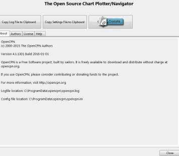
NOTE Buttons Above!
Copy Settings File to Clipboard and Copy Log File to Clipboard
If you encounter difficulties in using OpenCPN you may be asked to submit your Settings File and/or your Log File. This data will help the developers to diagnose your problem. The locations of these files on your system are displayed when you click on the "About" tab.The installed documentation will open in your default browser.
To download a current snapshot of this wiki as one huge web page, click here
(only works if you are online).
As you can see above,
also documents the people contributing to OpenCPN and a copy of the
license OpenCPN uses, GNU GENERAL PUBLIC LICENSE Version 2.
The About tab also tells you where important settings and the log are
located on your system and makes it easy to copy them.
First before using OpenCPN, here is the note that all users have to
approve when installing the program.
OpenCPN is distributed
in the hope that it
will be useful,
but WITHOUT ANY WARRANTY; without even the implied
warranty of MERCHANTABILITY or FITNESS FOR A
PARTICULAR PURPOSE.
See the GNU General Public License for more details.
OpenCPN must only be used in conjunction with approved
paper charts and traditional methods of navigation.
DO NOT rely upon OpenCPN for safety of life or property.
but WITHOUT ANY WARRANTY; without even the implied
warranty of MERCHANTABILITY or FITNESS FOR A
PARTICULAR PURPOSE.
See the GNU General Public License for more details.
OpenCPN must only be used in conjunction with approved
paper charts and traditional methods of navigation.
DO NOT rely upon OpenCPN for safety of life or property.
This is not a text on general navigation. We assume that you are familiar with nautical navigation. Reading this text and using OpenCPN will not in itself make you a "navigator".
IMPORTANT
NEXT STEPS
Getting started using OpenCPN consists of 4 basic steps:
- OpenCPN Installation will lead you through installing OpenCPN on your particular OS and computer.
- Chart Installation of Charts to be read by OpenCPN (OpenCPN does not include charts)
- Charts Basic Features - Main Source for using charts
- GPS Setup to communicate with your computer and OpenCPN (Optional, but very useful)
If you still have questions or would just like to get in touch with other OpenCPN users, there is also a fairly large community behind OpenCPN. You can find us in this Cruisers Forum.
* For advanced users we recommend the Developers Manual.
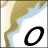 Go to Table Of Contents
OpenCPN Installation
Download your version of OpenCPN here.
- Use a "stable", official release for actual navigation. The latest stable release is always available at the top of the download page or from Source Forge.
- Beta releases are snapshots of the development process, and may contain errors or temporarily be unstable. Show stoppers are normally fixed very quickly however. This is where the latest features first are seen. Most of the time the beta releases are quite stable and the OpenCPN team appreciate it if more experienced users test the releases and report back.
- The place to report bugs and suggest features is the Tracker.
To
reach the
Tracker
from the OpenCPN Web pages click on the "Tracker" tab at the upper
right (above the blue bar). The sticky thread "Tracker/Flyspray - How
and When to use it" (tab Forum) gives some hints.
- To see what version you are using
either look in
?->about or at the top of your display. A lot of information is
also
available in the log file. See below.
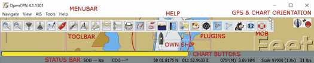
Location of Important Files. Log and config files.
- It is important to know the location of the log file and the configuration file, opencpn.conf (Linux) or opencpn.ini (Windows), on your computer. If you ask questions on the forum, there is a fair chance that you will be asked about the content in these files. Once you get familiar with OpenCPN, have a look at the files.
- Through out this documentation there will be many references to the configuration file, as it often is possible to change the default settings. This is an advanced subject once you are familiar with OpenCPN. All editing in the config files must be done with a text-editor, such as "notepad" in Windows.
- The configuration file is where all data, that needs to be persistent between sessions, are stored. The logfile keeps tab of what's going on in the current session.
- To
find the locations of the files go to the ToolBar
click on
"About OpenCPN", the button looks like a blue book with a "?" on the
cover. Look at the bottom of the "About" Tab, highlighted below. The
illustration below is from a Win XP. A quick way to view the logfile is
to copy the full file path and then paste this into the address field
in a web browser.
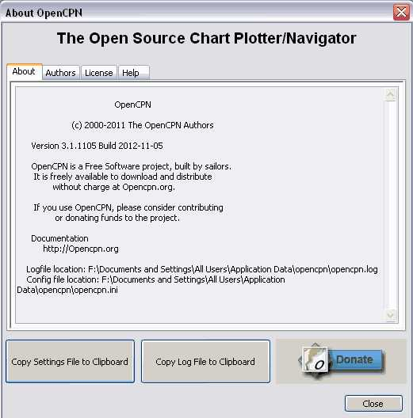 - For quick copying of the opencpn.ini and Log files use the two "Copy" buttons. This is useful for publishing on the forum if asked to do so. Please use the Forum "Code" button before pasting, as this guarantees an exact copy.
- On
Linux the "opencpn.log" is in your
home
directory.
The "opencpn.conf" is in a hidden directory, called "opencpn", also in your home directory.
For a quick way to view the files you can try these commands.
$gedit `echo $HOME/opencpn.log`
$gedit `echo $HOME/.opencpn/opencpn.conf`
Of course you can swap "gedit" for your favorite editor. - On Windows 8, Windows 7, Windows 2000, XP and Vista the two files are more difficult to find, so use the "About" dialog as described above. On many windows installs the folder containing the logfile will also be hidden, so you need to change your systems "Folder Options" to show it.
For
example, the C:\ProgramData
folder is by
default hidden in Windows 7. Here's how to get to it:
To access it you need to un-hide it by doing the following:
1. Go to Control Panel > Folder Options
2. Switch to View tab
3. Select "Show hidden files, folders and drives".
4. Unselect "Hide extensions for know file types" to get this state:
To access it you need to un-hide it by doing the following:
1. Go to Control Panel > Folder Options
2. Switch to View tab
3. Select "Show hidden files, folders and drives".
4. Unselect "Hide extensions for know file types" to get this state:
-
Now you
will be able to find your logfile.
- On Mac OS X, the logfile, "opencpn.log", is in /Users/"user name"/Library/Logs/ and the "opencpn.ini" is in the /Users/"user name"/Library/Preferences/opencpn/ directory.
Go to Table Of Contents
Windows
Windows XP SP3/Vista/7/8 (except W8 RT)- Download the installation package for Windows from Download OpenCPN.
- Use the stable release for navigation en route, or if you just started using OpenCPN.
- Exit all other programs, including your anti virus program - known to create problems in some cases. Unplug your network cable, to be on the safe side.
- Run the downloaded installer. Re-start your anti-virus. Re-connect the network
- If upgrading from a previous version of OpenCPN, there is no need to un-install the old version. Simply install the new version and it will upgrade OpenCPN, saving all your existing configuration and preferences.
- If this is a new installation, click on the Toolbox icon 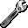 and configure your GPS source, chart directories, and other settings. It is highly recommended that you use the Chart Downloader Tab to setup directories and download charts.
- If your installation goes well, but OpenCPN does not start as expected, try to download and install these runtime components.
- Not Supported Windows versions:
Win 8 RT is not supported.
Win CE is not supported.
Win XP SP 2 or 1 are not supported. The last OpenCPN version that included support was 2.6.1624.
Win 2000 is not supported. The last OpenCPN version that included support was 2.5.0.
Win 98/ME are not supported. The last OpenCPN version that included support was 2.1.0. - Old versions of OpenCPN are available on SourceForge.
.
Ubuntu PPA
How to add the OpenCPN PPA into an Ubuntu system
You have two options to add the PPA to your system, either
using the
command line Terminal or the GUI provided by the system, chose one that
suites you better, not both.
If you are using a non-standard variant of Ubuntu or a
newer/older/whatever version than the one used while creating this
guide, the GUI may be slightly different, try to use common sense
before you start to be furious that the guide bellow does not work - it
does.
If it still does not for you, ask in the support forum, providing exact
steps you performed and exact error output you get.
From
the command line
Open a Terminal and enter the following
commands:
sudo apt-get install software-properties-common
sudo add-apt-repository ppa:opencpn/opencpn
sudo apt-get update
sudo apt-get install opencpn
Using the graphical
configuration tools
Start the Ubuntu
Software Center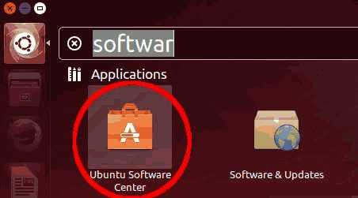
From the Edit menu, select Software Sources...
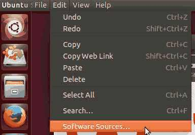
On the Other tab, click on Add... button
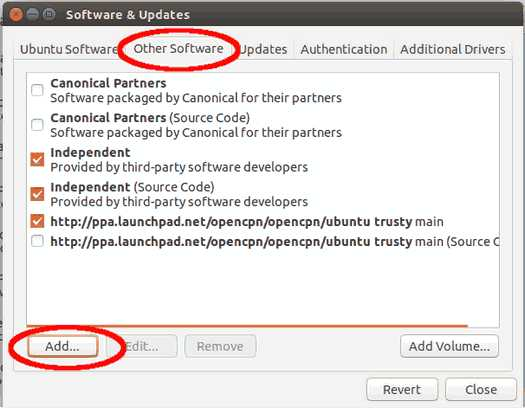
In the dialog shown, fill in ppa:opencpn/opencpn and click on the Add Source button
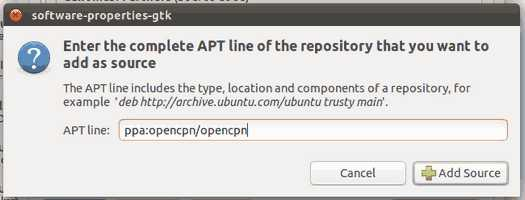
Wait until Ubuntu Downloads the necessary information and the progress indicator disappears
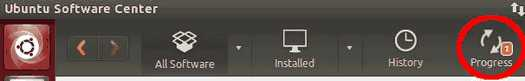
From now on you are able to install OpenCPN as any other software. You will also get new stable versions automatically while updating your system.
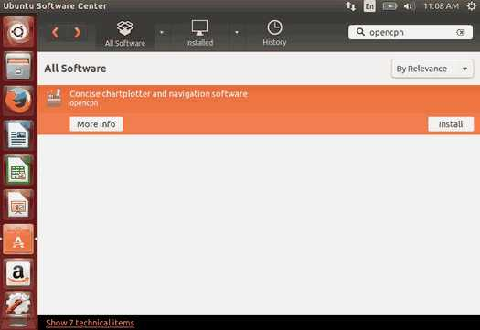.
Linux
32/64 bit Ubuntu/Debian Distributions
32/64 bit Fedora / Cent OS
If you are installing OpenCPN for the first time on a computer with
Ubuntu, or any other Linux flavor, you have to go through a few steps
to make sure that all dependencies are met. Ubuntu uses "deb" packages
and Fedora uses the "rpm" packages.
- For Debian based Linuxes: Make sure that you belong to the "dialout" group. To find out, run the "$groups" command. If you're not in "dialout", add yourself with the command "$sudo usermod -a -G dialout $USER". Check this straight away, it will save you from frustration later on. If there is a problem connecting the GPS to a physical port, such as /dev/ttyS0, the reason is probably that you don't belong to "dialout".
- For other Linux distributions, replace "dialout" above, with the result of this command: $stat -c %G /dev/ttyS0
- It is recommended that you install the "xcalib" program, that is necessary to dim the screen for night time usage. Use your favorite package manager or just issue $sudo apt-get install xcalib from the command line (for debian based distros).
- It is recommended that you install the "xdg-utils" program, that helps the grib plugin compose a SailDoc grib-request-mail. Use your favorite package manager or just issue $sudo apt-get install xdg-utils from the command line (for debian based distros).
- On Ubuntu, start "System->Administration->Synaptic". In Synaptic go to "Settings->Repositories" and tick the box "Community-maintained Open Source software (universe)". Close Synaptic.
- Download the correct .deb or .rpm from Download OpenCPN.
- For Ubuntu, only use the download with an Ubuntu version number if you have exactly that version. Otherwise use the link "Download OpenCPN 3.X.X for all other *Ubuntu's".
- Use the stable release for navigation en route, or if you just started using OpenCPN.
- Click on the downloaded package. An installation manager will guide you on most Linux distributions. All dependencies should automatically be installed. For most Linux installations, this is all you have to do. Consult the following 3 paragraphs if you run into trouble.
- If you have problems with dependencies, run the recommended command line in the next paragraph. First check that you really have downloaded the correct version of OpenCPN. see above.
- sudo gdebi <downloaded_opencpn_file.deb>. The command "gdebi" will automatically install the dependencies for you.
- It is also possible to install the package via dpkg or rpm,
on
the
condition that all dependencies are met.To make sure that this is the
case on Ubuntu, open a terminal window to get a command line,
(Applications->Accessories->Terminal) and copy and paste
the
following line: "sudo apt-get install libwxgtk2.8-0
libwxbase2.8-0
wx-common libglu1-mesa libgl1-mesa-glx zlib1g bzip2 gpsd gpsd-clients xcalib
xdg-utils libportaudio2 libkml0
libtinyxml2.6.2
liburiparser1 zlib1g libexpat1". Then proceed with the
commands
below
-
For Ubuntu: $ sudo dpkg -i <downloaded_file.deb>
For Fedora: # sudo yum install --nogpgcheck <downloaded_file.rpm> - The binary will be installed to /usr/bin/opencpn and the static data used by the program will be in /usr/share/opencpn
-
- If this is a new installation, click on the Options icon and configure your GPS source, chart directories, and other settings.
- If there is a problem with sound, make sure that you, as a user, belongs to the "audio" group. To find out, run the "$groups" command. If you're not in "audio", add yourself with "$sudo usermod -a -G audio $USER"
- If you are running Debian Squeeze and want to install
OpenCPN
from
the distributions .deb package, you will need to install with something
like this in order to satisfy install dependencies related to
libtinyxml:
$sudo dpkg -i --force-depends opencpn_3.1.1327-1_i386.deb
Using Linux repositories, an easier way to install and update.
Installing in a different, easy way.
Installing on Ubuntu
Add the OpenCPN ppa
repository as explained in configuring Ubuntu PPA
- If you are using Synaptic, add the repository, reload the software
sources as it suggests, search for and install opencpn
- No need to install anything manually
Other 32, 64bits, the armhf architecture, Linux Distributions and the BSD operating systems
- Currently other distributions requires compiling the source. This will involve resolving various dependencies and is for folks comfortable with developing on Linux.
- Download the source from sourceforge.net or directly from the Git server. The SourceForge link for this project is sourceforge.net/projects/opencpn/. More about compiling on Linux here Compiling - Linux.
- Interested in maintaining a package for your favorite Linux distribution? Follow the SourceForge link above.
- This also includes the different BSD distributions. Report your experiences back to the forum.
Fedora
Using Linux repositories, an easier way to install and update.
Installing in a different, easy way. RPM
Installing on FedoraA full repo is now available and can be used to install and update opencpn.
To install the repo, please run this as root:
yum install http://je.onfray.fr/repo/fedora/18/x86_64/jeo-release-1.0-1.fc18.noarch.rpm
Install above RPM
You can install the above rpm, no matter
if you're
using i386 or x86_64, be it Fedora 16, Fedora 17 or Fedora 18, it'll
work on all these (you should be able to install it right from your
browser clicking the above link and then install)By default, only the stable repo is enabled ; you can install opencpn-4.0 from your favorite package manager (yum, Gnome package kit or KDE package kit).
I've created two separate packages:
"opencpn" with the program and the
two default
plugins and
"opencpn-doc" with the whole html doc to browse it offline.
When a new stable is released, you'll be automatically
notified and
able to update... so easy!
Security/Trust: all packages are signed with Key ID:
7e53dbe19add462d
Mac OS X
Mac OS X- OpenCPN is distributed as a Mac ".dmg" file.
- Download the .dmg file.
- Open the dmg file by double-clicking on it - this will mount the dmg as a virtual device and create a mount on your desktop.
- Drag the OpenCPN.app application from the dmg image to your Applications folder in a finder window. This may require the administrator password.
- Unmount the dmg by right-clicking on the desktop icon and selecting "Eject"
- You can have a look at this tutorial How to Install and Remove Apps for general instructions on installing Mac OS X applications.
- If you have a message that installations are only accepted
for
programs from qualified developers, go to System Settings / Security,
first Tab, and switch to "No Constraints".
After installation switch back, to prevent installation of malware. - To save a previously installed version rename rename the app in the Applications directory before installing the new version.
Dedicated Marine OS
XINUTOP
Another way to run OpenCPN or test it without install on your current system is to use a specialized marine OS, which also include essential marine applications. Xinutop is a free an opensource Linux-Ubuntu based solution and can operate on a large variety of x86 processors compliant. It can run as a live system on USB key or can be installed on a HDD, as primary or secondary OS.Info and download at http://marinux.tuxfamily.org
See also in Supplementary Software
Openplotter for Raspberry Pi Boards
For people who want it to run out of the box. Linux installation which includes SignalK.Forum
OpenPlotter Project for RPI Boards
http://www.sailoog.com/en/openplotter
The way OpenCPN is now installed on OpenPlotter but little variations:Code:
sudo nano /etc/apt/sources.list
add:deb Index of /opencpn/opencpn/ubuntu trusty main
deb-src Index of /opencpn/opencpn/ubuntu trusty main
Code:
sudo apt-key adv --keyserver keyserver.ubuntu.com --recv-keys C865EB40Point 6: $sudo apt-get install libgl1-mesa-swx11 not tested yet.
sudo apt-get update
sudo apt-get install opencpn
RaspberryPI RPI2
Installing
OpenCPN on RaspberryPi 2 (RPI2)
It may help to review King Tide Sailing "How To Install OpenCPN on a
Raspberry Pi"with additional helpful step by step installing NOOBS.
http://kingtidesailing.blogspot.com/2015/09/how-to-install-opencpn-on-ra...
Part I: Setting Up the Raspberry Pi for OpenCPN
Part II: Installing OpenCPN
NOOBS ( stands for New Out of the Box Software) is an easy operating system installer which contains Raspbian. Raspbian is the official supported operating system. It also provides a selection of alternative operating systems which are then downloaded from the internet and installed, we are interest in Raspian Jessie.
Part I:
Setting Up the Raspberry Pi for OpenCPN
Download NOOBS (Jessie) https://www.raspberrypi.org/downloads/noobs/Getting Started https://www.raspberrypi.org/help/noobs-setup/
Install NOOBS (an easy operating system install manager) on a formatted SD Card. Follow the instructions for First Boot and Logging in.
Then follow instructions for installing Raspbian Jessie. https://www.raspberrypi.org/downloads/raspbian/
Part II: Install OpenCPN from Launchpad without compilation
Install OpenCPN on a Raspberry Pi 2 running Raspian Jessie from a Launchpad repository without compilation.
Add some repositories. To do this, you may:- Use Synaptic http://www.nongnu.org/synaptic/ OR
- Edit the package sources file (/etc/apt/sources.list)directly as desired.
We need the following repos:
1. deb ftp://ftp.debian.org/debian/ jessie main
2. deb http://ppa.launchpad.net/nohal/opencpn/ubuntu/ trusty main
3. We also need to get a PGP key compatible with repo(2) above.
$sudo apt-key adv --keyserver keyserver.ubuntu.com --recv-keys 9C18FD9F
4. Update the repositories. $sudo apt-get update
5. Install opencpn $sudo apt-get install opencpn
Optional. $sudo apt-get install libgl1-mesa-swx11
This gives you OpenGL support with a Software rasterizer.
There is not much speed improvement in OpenCPN with the rasterizer.
Notes from Sailoog: Editing the source.list to add to the install.
Dave's procedure and mine are the same. The difference is the sources.The usual way (new and advanced users) of adding sources to Raspbian is editing manually this file: /etc/apt/sources.list
You can do this typing:
Code:sudo nano /etc/apt/sources.listThe file will open and there you have to add and and save this text:
Code:deb ftp://ftp.debian.org/debian/ jessie main
deb http://ppa.launchpad.net/nohal/opencpn/ubuntu/ trusty mainor
Code:deb http://ppa.launchpad.net/opencpn/opencpn/ubuntu trusty main
deb-src http://ppa.launchpad.net/opencpn/opencpn/ubuntu trusty main(I can confirm the second option)
then you have to type in the terminal again:Code:sudo apt-key adv --keyserver keyserver.ubuntu.com --recv-keys 9C18FD9For
Code:sudo apt-key adv --keyserver keyserver.ubuntu.com --recv-keys C865EB40(I can confirm the second option)
At last you can either type this to install:Code:sudo apt-get update
sudo apt-get install opencpn
Or use the GUI package manager included in Raspbian
(Menu->Preferences->Add / Remove Software)
Synaptic is not installed by default. This procedure will work not only
on OpenPlotter, on fresh Raspbian too.
Alternative to Part II: Requires Compiling OpenCPN
Install the list from OpenCPN for compiling linux.
OpenCPN must be compiled for installation.Then ..sudo apt-get install build-essential cmake gettext git-core gpsd gpsd-clients libgps-dev wx-common libwxgtk3.0-dev libglu1-mesa-dev libgtk2.0-dev wx3.0-headers libbz2-dev libtinyxml-dev libportaudio2 portaudio19-dev libcurl4-openssl-dev libexpat1-dev libcairo2-dev
git clone http://github.com/seandepagnier/OpenCPN
-b rpi_fixes
cd OpenCPN
sudo mkdir build
cd build
sudo cmake ..
sudo make
sudo make install
cd OpenCPN
sudo mkdir build
cd build
sudo cmake ..
sudo make
sudo make install
It should compile and run. OpenGL mode is just a white screen, no charts and no frame rate displayed.
With Opengl turned off it seems the same as 4.0.
Conachair advises:
When compiling using -j can force use of all the cores, ie. make -j5 will use 4 cores to compile. Except it crashed the Pi! or seemed to, it hung for ever before I rebooted it. make -j3 seemed to speed things up a bit without crashing, though I never did get it to finish without at least 1 crash. At least it picks up where it left off so you don't have to start again.
I still haven't managed to get Sean's fix for using the hardware acceleration which would be great. This possible improvement in the launcher repos and Openplotter the Pi will be within reach of many sailors less inclined to get into command line.
Current Raspberry Pi
Hardware
Pi 2 Model B, the second generation of the Raspberry Pi. The Pi 2 has
four USB ports, 40 GPIO pins, and an Ethernet port, uses a 900MHz
quad-core ARM Cortex-A7 CPU and has 1GB RAM. The Pi 2 is completely
compatible with first generation boards. RAM on the Model 2B is on a
separate chip on the bottom of the PCB, but 1GB is the maximum RAM that
the SoC used by the Model 2B can support.Go to Table Of Contents
Troubleshoot Installation
If something goes wrong- If you have installed OpenCPN successfully and later run into trouble there is generally no point in reinstalling. It is a very common reaction among users, but achieves very little.
- If OpenCPN refuses to start, or hangs after the introduction dialog and you have Intel integrated graphics on your computer, try to start the program from the command-line with -> "opencpn -no_opengl"
- Still no luck? Proceed by checking your opencpn.log (OpenCPN Installation) file and try to find a hint there.
- Next step is to close down OpenCPN, if it's still running. Then save any possibly valuable data. Read about Navigation Data Backup
- Proceed by renaming the configuration file - opencpn.ini (OpenCPN Installation) to , for example, opencpn_OLD.ini. When you start OpenCPN again it will be like a new install, no chart directories and all settings are default.
- If you still have problems, and especially if your opencpn.log file complains about navobj.xml (Navigation Data Backup), close down OpenCPN and move all navobj.xml files to another directory. Rename the opencpn.ini file again, and then restart as before. If successful, close down again, and try to move, first the navobj.xml.1 back to the original directory renaming it navobj.xml. If not successful, try navobj.xml.2 etc This last step is only necessary if you have valuable data that's not saved elsewhere.
- Next step is to close down OpenCPN, if it's still running. Then save any possibly valuable data. Read about Navigation Data Backup
- If this is successful, please post your old config file and your original navobj.xml file, together with full information of what happened, and your system, on the Cruisers Forum. To do this, first rename the file by adding ".doc" to the end of the file name.
- This will help the OpenCPN developers to understand what's going on.
- Still having trouble? There is a lot of info available on the forum. Use the search function to see if your problem is already solved.
- No luck? Post a question to the Forum. Please include as much info as possible, as this will speed up the process and help other users to help you. Include the following:
- Your Hardware and operating system, including versions.
- Which version of OpenCPN, or plugin version.
- A full description of your problem.
- If possible, also include the opencpn.log (OpenCPN Installation) and screen dumps showing your problem.
Release History
1.2.0 2007-04-20Opencpn was built with the following objectives in mind.
i. Intended use as primary navigation interface for vessels
with full-time helm-visible navigational suites.
Other tools may be better for offline route planning, tide
and current prediction, online logging, etc.
ii. Quick startup and shutdown.
iii. Those and only those toolbar buttons really needed for
daily operation.
iv. Portability, thus wxWidgets core components. Currently
tested and in production use on W98, XP, and Linux.
v. Conventional ( i.e. popular and modern ) chart format
support. In the real world, this means BSB format raster
charts, and S57ENC format vector charts.
1.2.2 2008-01-02
Improved AIS symbology and diagnostics, including RateOfTurn indication.
Improved toolbar icon symbology, supporting day/dusk/dark color schemes.
Rationalized home directory selection for Windows, allowing program installation in
arbitrary directory/folder.
Improved accuracy of Great Circle distance/bearing calculations.
Optional Depth Units displayable on chart as embossed character image.
Ownship position indicator on thumbnail charts accurately follow true GPS position.
1.2.4 2008-04-20
Configure/build modifications for Unicode systems, especially Ubuntu.
Added Route and Mark property sheets.
Improved S57 ENC symbology
1.2.6 2008-08-31
This is a maintenance and feature update release,
containing some S57 ENC symbology improvements,
greater compliance with IHO S52 standards, and various enhancements and
bug fixes. Especially interesting are the DUSK and NIGHT display modes,
for which user feedback is highly desired....
1.2.8 2008-12-25
Mac OS X Support, including installable application bundle (OpenCPN.dmg), GNU/gcc compatible system build files, and XCode project files.
Garmin USB GPS device support for Windows platforms.
Miscellaneous bug fixes and user optimizations.
1.3.0 2009-05-09
1. CM93 worldwide vector chart support, with automatic chart scaling.
2. Improved AIS target tracking with configurable CPA/collision warning options.
3. GPX compatible waypoint and route exporting tools.
4. Configurable range rings centered on ownship position.
5. And, as usual, miscellaneous bug fixes and user optimizations.
1.3.2 2009-07-11
1. Improved AIS target depiction and collision detection alerts.
2. Hot keys and scroll mouse support.
3. Help File.
4. Various display speed and quality optimizations, especially for CM93 charts.
1.3.4 2009-10-01
1. Ship's position tracking function, with GPX export and import.
2. Enhanced icons and screen graphics, for improved visibility.
3. Import and export of Routes using GPX interface protocol.
4. Implement CM93 vector chart detail control slider.
5. Assorted usability and reliability improvements.
1.3.6 2010-01-07
1. Add basic GRIB file decoding and chart overlay display.
2. Improve and expand NMEA message type support.
3. Improved documentation.
4. Add modular international language support.
5. Assorted usability and reliability improvements.
2.1.0 2010-06-26
-BSBv3 raster and S57 ENC chart support.
-CM93 vector chart support.
-IHO S52 compliant display of S57 vector charts.
-Single-chart and Quilted display modes.
-North-up and Course-up display modes.
-Moving-map display mode.
-Route navigation with ship tracking functions.
-Waypoint navigation.
-NMEA 0183 GPS interface at selectable baud rate.
-gpsd library support.
-Autopilot output support.
-AIS input with full target tracking and collision alerting.
-Anchor watch/alarm functions.
-GRIB file input and display for weather forecasting.
-GPX Waypoint and Route input and output file support.
-Tide and Current prediction and display by location.
-Multi-language support.
-linux and Windows compatible.
2.3.0 2010-12-18
1. Integrated PlugIn architecture, allowing third-party development and deployment of auxiliary features.
2. Two useful Plugins available immediately:
Graphical overlay of GRIB (weather)file data
Dashboard for configurable on-screen display of ship's NMEA data.
3. Enhanced Route, Track, and Waypoint management functions by selectable dialog.
4. Many new languages added to basic package, including:
Portuguese, Estonian, Greek, Turkish, Finnish, Norwegian, etc.
5. Support Garmin Host mode Route and Waypoint interchange and upload to remote GPS receivers.
6. Advanced internationalized Windows Program Installer.
7. Full support for North-up and Course-Up display of all chart types.
8. Expanded AIS target message decoding to include European Inland AIS specifications.
9. AIS Target List Dialog, allowing easy selection and monitoring of all active AIS targets.
10. Many, many improvements in the basic User Interface, while maintaining the ease-of-use that
2.3.1 2010-12-31
1. Correct logic regarding ownship AIS messages (AIVDO)
2. Correct fault closing AIStarget list with target query dialog open (FS#310)
3. Correct occasional geolocation problem with routes on BSB chart switch.
4. Improve Toolbar refresh logic.
5. Increase maximum chart stack size from 20 to 30. (FS#316)
6. Correct GoTo waypoint and subsequent route delete logic. (FS#244)
7. Various language file updates.
8. Correct Depth unit display for quilted charts, with non-English language setting.
9. Correct Win7 Garmin USB Device interface reset in User Mode.
10. Correct Windows vc redistributable installation command in NSIS script.
2.5.0 2011-07-26
1. Per-Cell offset adjustment for cm93 charts
2. Transverse Mercator chart quilting.
3. Selectable full screen quilting option.
4. Configurable lat/lon gid lines.
5. Variable screen dimmer function.
6. Improved Tide/Current information window.
7. Configurable "Layers" function, enabling selectable display of fixed objects.
8. Improved and extended AIS functions, including
a. Euro Inland support
b. Base Stations and ATONs
9. Selectable FullScreen display mode.
10. Integrated Route Planner function, with Tide table support.
11. Enhanced GUI functions, with floating transparent Toolbar.
12. Several new language options.
13. Improved internal memory management.
14. Improved Autopilot output support.
15. New Multi-leg Measurement tool.
16. Improved Vector chart symbology.
17. Improved integrated Tide/Current data accuracy.
18. Improved Route definition interface, including selectable Route colors.
19. Full conformance for all platforms, especially including Macintosh OS X.
20. Greatly improved stability on all platforms, as a result of extended Beta testing.
21. Many, many improvements in the basic User Interface, while maintaining the ease-of-use that OpenCPN is widely known for.
3.0.0 2012-06-05
New and Enhanced Features for OpenCPN Version 3.0
1. OpenGL support, for enhanced graphics performance and functionality.
2. Improved ENC object Query interface
3. Portable execution option, allowing easy migration to new systems.
4. Upgrade to wxWidgets 2.8.12.
5. Support ENC Overlay cells.
6. Upgrade gpsd support to Version 2.96
7. Implement enhanced PlugIn system, enabling a wide variety of PlugIn types.
8. Implement DSC and GPS_Gate Buddy tracking.
9. Implement user defined Chart Groups.
10. Implement AIS SART transponder display and tracking.
11. Improved ENC object rendering and display.
12. Implement user definable Tide/Current datasets.
13. Full conformance for all platforms, especially including Macintosh OS X.
14. Greatly improved stability on all platforms, as a result of extended Beta testing.
15. Many, many improvements in the basic User Interface, while maintaining the ease-of-use that OpenCPN is widely known for.
3.0.2 2012-07-07
This Service Release corrects several small bugs found in the recent 3.0.0 field release.
It incorporates no new features.
3.2.0 2013-02-27
1. Complete update of user Options dialogs and context menus, incorporating modern graphics and uniform styles.
2. Significantly enhanced navigation instrument input and output options, including extensive network connection capabilities supporting TCP, UDP, and GPSD data sources.
3. New User Interface theme support, with OpenCPN traditional as well as two new low profile themes.
4. Enhanced clipboard support, including interfaces to external KML data sources.
5. Enhanced Tide and Current dataset support, including modern fully binary datasets.
6. Various improvements in the display and tracking of AIS data targets.
7. Automatic Great Circle route generation options.
8. Significant enhancement of the Dashboard PlugIn, including new user interface options and a variety of stylish, new instruments.
9. Improved sound system support for linux hosts.
10. Major update to embedded Users Manual.
11. Measurably improved performance and reliability over all supported platforms.
3.2.2 2013-05-08
This Service Release corrects several small bugs found in the recent 3.2.0 field release.
It incorporates a command line switch to turn off OpenGL completely.
4.0.0 2015-01-08
A major release.
Increased performance in all modes, particularly when using OpenGL graphics acceleration.
- Additional network interface methods, including TCP/IP client/server and UDP broadcast.
- Support for multiple data source instances, including
- Filtering and prioritization of messages
- Output of NMEA data streams for real-time integration into ship systems
- Improved support for Mac OS X systems, including 64 bit native support.
- Integrated Tablet/Touch screen support.
- AIS Personal Locater Beacon (PLB) configuration and tracking.
- Enhanced AIS target tracking modes.
- GRIB PlugIn feature additions.
- Graphical GRIB email request generation.
- Moving particle wind overlay.
- Enhanced GRIB data type support.
- Dashboard PlugIn feature additions.
- More selectable instruments.
- Several new and updated Plug-ins, including
- Digital Radar overlay for popular radar scanners
- World Magnetic Model variation compensator
- Climatology analysis
- Dynamic route planning
- Integrated logbook
- Realtime datastream capture, record and playback
- Google Earth integration
- Weatherfax overlay
- Vector chart object and feature search tool
- S63 Encrypted vector chart support
- Major update to embedded Users Manual.
- Measurably improved performance and reliability over all supported platforms.
- And much more.
OpenCPN First Use
Here is what happens once OpenCPN is installed and you start the program for the first time.First this message greets you. Please remember what you agrees to when clicking OK.
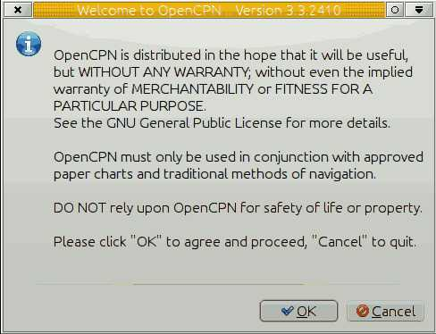
Next OpenCPN prompts you to install charts.
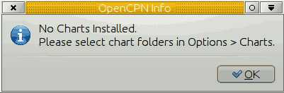
And sends you to "Options" to do so. Click on the Charts tab, to install charts. Read all about installing charts in Installing Charts
If you're not quite ready to install yet just click "OK" in the Options dialog.
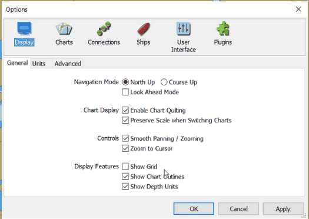
The worldwide background Map will greet you.
From here explore the different features in OpenCPN by clicking around, or read on...

IMPORTANT NEXT STEPS
Getting started using OpenCPN consists of 3 basic steps:
- Chart Installation of Charts to be read by OpenCPN (OpenCPN does not include charts)
- Charts Basic Features - Main Source for using charts
- GPS Setup to communicate with your computer and OpenCPN (Optional, but very useful)
If you still have questions or would just like to get in touch with other OpenCPN users, there is also a fairly large community behind OpenCPN. You can find us in this Cruisers Forum.
Go to Table Of Contents
Chart Installation
Several steps suggested to obtain & setup charts.For first time users we suggest you use the Chart Downloader Plugin which helps to find and download free charts and is included with the installation of OpenCPN 4.2. If you choose to manually load charts please pay close attention to the following:
- Know the path to the the "Chart" directory. Please make note of the path you selected for the Charts Folder.
- If you choose to manually download charts, be sure uncompress and install them in your Charts directory
- Please read Installing Charts (Chart Files Tab) which is Under the Main "Charts" section.
Charts Overview
OpenCPN itself does not come with charts.
Charts are a complex subject. Having accurate and current charts is
important for safe navigation.
There are a number of resources on this website and others to obtain
charts.
However thee USA provides free NOAA Charts and many other countries do
as well. See Chart Sources below.
- Chart Files Tab OpenCPN does not come with charts. Description of how to Install Charts.
- Charts Main resource for Charts.
- Chart Downloader Plugin Chart Downloader provides an easy way to download and install free NOAA and RNC and ENC charts around the world. It is the easiest way to get started with charts. Download a few charts in your area and use them to learn, then later add more as needed. NOTE: Free charts are not assured everywhere.
- Chart Sources (Extensive list of free charts available, mostly covered by Chart Downloader Plugin)
- Chart Formats (You will see why this is a complex subject)
- Background Map (GSHHS Low Res) - The initial rough background map that OpenCPN uses.
- High Resolution Background Map (GSHHS 230 mb) here We suggest this should be used if Watchdog Landfall alarms are being used.
- Links with Chart Information
Setting Options
Options contains user configurable settings.Read more here: Options Setting
OpenCPN uses some basic settings or limitations.
- Courses are by default true, not magnetic. Change this in Options -> Display -> Units.
- All distances and routes are calculated using Mercator Sailing. Great Circle Sailing is an option in route creating.
- For Windows: only one instance of OpenCPN is allowed. Use the portable option if more instances are needed.
- Do not edit the opencpn.ini (opencpn.conf) file when OpenCPN is running.
GPS Setup
Below we describe only the basics of getting a gps up and running.For a full description of all options read Options Setting
Make sure your GPS is set to output positions using the WGS 84 Geodetic Datum.
This is less of an issue nowadays, compared to, say 10 - 15 years ago.
Some units can't be changed, and is permanently set to WGS 84. The BU-353 is one of those.
Windows XP/Vista/7/8
Note that the extensive use of the cheap gps mouse BU-353 as an example
below, should only be seen as an illustration.To use OpenCPN with a GPS, a GPS receiver is needed.
There are a variety of possible choices for a GPS receiver:
- A computer, such as a Sony Vaio P has a built in GPS receiver
- A NMEA Expander to amplify a nmea stream to multiple listeners
- A hand-held GPS receiver
- A dedicated GPS receiver
The remainder of this section describes using OpenCPN with a dedicated GPS receiver, however, the instructions for a dedicated receiver will be similar for any serial/USB connected NMEA data stream.
A Dedicated GPS Receiver
There are several companies making dedicated GPS receivers. The Supplementary Hardware section for GPS devices lists several manufacturers.
NMEA has traditionally been implemented as a serial protocol
and
therefore, even if a USB connection is used, there needs to be a USB to
Serial Port conversion. The specific driver for the each GPS receiver
will handle this conversion.
An Example - Configuring BU-353
It is not necessary to use the installation disk to setup the BU-353. Following the steps listed below will result in the latest driver being installed.
- Download the latest driver from Prolific
- Unzip and install the driver
- Plug in the BU-353.
- Start -> (Right Click) My Computer ->
Properties ->
Hardware ->Device Manager
or Start->Run devmgmt.msc - Expand Ports
- Look for the “Prolific USB-to-Serial Comm Port” and note the com port number (e.g., COM4)
- Right click on the “Prolific USB-to-Serial Comm Port”. Choose Driver
- Select 4800 bits per second, 8 data bits, None parity, 1 stop bit, and None for Flow Control
- Start OpenCPN
- Click on the Options Icon
- Select "Connections", and "Add Connection" and "Serial"
- Under "Data Port" select the Com port noted in #6
- Choose OK
- Select Auto Follow to center the map over your GPS location


Troubleshooting
There is a small LED located on the BU-353. If the LED is off there is no power being received. Check the connection.If the LED is solid it indicates the BU-353 is searching for a GPS signal. Try moving the GPS receiver to a clear location.
If the LED is flashing it indicates the BU-353 has a position fix and is transmitting data.
- Try viewing the NMEA data stream in OpenCPN. Choose Options->Connections->Show NMEA Debug Window
- Alternatively, a diagnostic program is included on the installation CD called GPSInfo.exe. Launch this program to install the diagnostic utility.
If it appears that the NMEA data stream is being received, the most likely issue is that OpenCPN is not centered over your location. Click AutoFollow to center the map at your GPS location.
Known Issues
If you change the USB port for the GPS receiver Prolific will reassign the COM port number. This will require repeating steps 4-12 above.On some computer / GPS receiver combinations when the computer
resumes from Stand By the GPS receiver will no longer transmit its NMEA
data stream, and only garbage instead of ASCII characters will be
visible in the NMEA Data Stream Window. The red indicator led will not
work.
To change back to NMEA mode search for and download SIRFDemo.exe.
Unpack and start. Set correct Baud rate and and com port as above.
Click connect to data source button. Action -> Switch to NMEA
protocol, then exit.
There are many more settings available in SIRFDemo.exe
An alternative workaround for this issue is provided by using a COM port splitter such as XPort http://www.curioustech.net/xport.html
- Download XPort.
- Unzip it to a folder of your choice
- Double Click XPort.exe
- Set the Baud Rate to 4800
- Under Enable Ports add an entry for COM10
- Click “Find GPS”. The port returned should match the port identified in Step #6 in the Configuring BU-353 Section
- Select Prolific USB-to-Serial Comm Port in the check box section
- Return to OpenCPN
- Click on the ToolBox Icon
- Select GPS
Linux
To proceed, the "user" you use on your computer must belong to
a
group that is allowed to open serial connections. This group is
normally "dialout" on Debian based Linuxes, including Ubuntu, and
"uucp" on Red
Hat based distributions. Read more in Connections.
Check your status by writing "groups" on a command line. The response
will be all groups that the user belongs to. Make sure that "dialout"
or "uucp" is included. If not, you have to add your user to this group.
There are many ways to do this, one is to issue this command:
"sudo usermod -a -G dialout $USER". Logout of your current session for
group changes to take effect.
This applies to many Debian based distributions, for other distros just
drop the sudo and do the command as root, using "su".
All major Linux distribution includes a graphical user settings dialog,
where adding a user to a group, could be fixed.
Two
methods are available, direct connection or through gpsd.
We start with gpsd.
- Install the gpsd and gpsd-clients packages
- $ sudo apt-get install gpsd gpsd-clients
- Go to Options-> Connections-> Add Connection and select "Network" plus the GPSD radio button. Address should be "localhost" and DataPorts should be set to 2947.
- On Ubuntu 10.04 and later, that is really all you have to do. When you plug in your gps this will trigger gpsd to start.
- "xgps" is client that comes with the gpsd-clients package, and is useful for testing that the gps and gpsd is working properly. If xgps isn't working, it's a gps or gpsd problem, not an OpenCPN problem
Direct connection.
- Make sure that gpsd isn't running then connect your gps and start OpenCPN. On Ubuntu 12.04 the easiest way to achieve this is to uninstall gpsd.
- In the Options->Connections -> Add Connection, select "Serial".Set "dataPort to the port where you plugged in your gps. If you plugged in BU 353 this will probably be /dev/ttyUSB0.
- Choose 4800 baud, unless you know that the gps is set to something else.
- The gps should now work....if not, check the NMEA data stream window. If only binary garbage is visible, the gps has to be reset to NMEA mode, see more about this above in windows section. An alternative is to use gpsd, that will work with the gps in Sirf mode.
- To do this in Linux for BU 353 as well as many other gps:es, make sure that gpsd is running and that the package "gpsd-clients" is installed. On Ubuntu 12.04 gpsd needs to be temporarily installed. Make sure to kill any instances of gpsd with the command "sudo killall gpsd"
- The command $gpsctl -n will put the GPS into NMEA mode.
- If that doesn't work, try $ gpsctl -f -n /dev/ttyUSB0 .This will force a low-level access, bypassing gpsd. For more information: $man gpsctl
- More information is as always available through "man
gpsctl"
Close down OpenCPN before running gpsctl.
None of this is normally noticed when using gpsd, as this program reads both NMEA and SIRF binary sentences.
- If you can't connect to a physical port, such as /dev/ttyUSBO, indicated by a line in the opencpn.log file. Check that you, as a user, belongs to the group "dialout". To see which groups you belong to, run the command "groups". Not all Linux distributions add the user to this group by default. To add your self to the dialout group -> "sudo usermod -a -G dialout $USER"
- Check if gpsd is working:
$ ps aux | grep gpsd
nobody 12338 0.3 0.1 4124 1448 ? S<s 18:31 0:00 gpsd -F /var/run/gpsd.sock
you 12356 0.0 0.0 3036 800 pts/3 S+ 18:32 0:00 grep --color=tty -d skip gpsd
This or similar responses indicate that gpsd is running. If you only have something like the second line, ....it is not running. - Run the command "$ls -lrtd /dev/*|tail -10", and see the 10
latest
created device files. Run this just after plugin in your gps to see
which device was created.
- Determine which device your GPS is on your linux system by checking the startup. Look for a line that says something about GPS and /dev/ttyUSB# in the command "dmesg"
- Or even better, after connecting a gps mouse, BU-353, we
look for
a dmesg by running this command.
$ dmesg | grep tty
and get this response back.
[13616.095305] usb 2-3: pl2303 converter now attached to ttyUSB0 - Add a script to start gpsd, if this is not done by your
distribution. I saved mine as startgps and set the executable
attribute. Edit line 3 to match your device, ie /dev/ttyUSB0
-
#!/bin/sh
sudo killall gpsd
sudo gpsd -n -D 2 /dev/ttyUSB0
-
- Run the script:
-
$ ./startgps
-
More Linux Hints
Other Distributions
- Install gpsd from source. More information is available here: http://catb.org/gpsd/
Udev Rules
- If you have problem with, for example gps, connecting to different ports each time you restart udev is your friend.
- udev supports persistent device naming, which does not depend on, for example, the order in which the devices are plugged into the system. The default udev setup provides persistent names for storage devices.
- There is a lot about udev on the Internet. For OpenCPN specifics, read this post:Udev in 2.5
Bluetooth GPS
More user experience of setting up bluetooth GPS are welcome, as the notes below just reflects a few users experience. Please use the Forum.
Ubuntu 10.10 and older.
If you have a bluetooth GPS you will need to first configure it through the standard Ubuntu Bluetooth "set up new device " procedure. Once you have done that you will need to find what the address of the GPS is. To do that you run this command:"sudo hcitool scan"
It will then start looking for the Bluetooth GPS and hopefully find your GPS. You should see something similar to:
Scanning ...
00:1C:88:10:D3:4D iBT-GPS
In this case i have a IBT-GPS at address 00:1C:88:10:D3:4D (Your GPS address will be different)
Next we have to bind the GPS address to a "virtual" device OpenCPN understands in this case rfcomm0. We do this with the following command:
sudo rfcomm bind /dev/rfcomm0 00:1C:88:10:D3:4D Note put your GPS address in this line
You should not have to run these commands each time your linux is restarted as it will remember your GPS address.
Now all you need to do is go into OpenCPN Toolbox and select GPS. Now in the NMEA Data Source options select from the pulldown menu: "/dev/rfcomm0", or write it in the box, if not present as an alternative.
Thats it - you should now have a Bluetooth GPS Connected.
Ubuntu 12.04
-Pair GPS with bluetooth icon-break connection with bluetooth icon
-get device id: sudo hcitool scan
-get channel for gps: sdptool records 00:02:78:0A:4E:E9 (put your actual number here)
-sudo gedit /etc/bluetooth/rfcomm.conf #edit rfcomm input file. Text should be:
#- sudo rfcomm release 0 (not strictly necessary)
# RFCOMM configuration file.
#
# $Id: rfcomm.conf,v 1.1 2002/10/07 05:58:18 maxk Exp $
#
rfcomm0 {
# Automatically bind the device at startup
bind yes;
# Bluetooth address of the device
device xx:xx:xx:xx:xx:xx;
# RFCOMM channel for the connection
channel 1;#use channel number as provided by sdptool
records XX:XX:XX:XX:XX:XX
# Description of the connection
comment "Your GPS Device Here";
}
- sudo rfcomm connect 0 (you only need to to this once, not required if you reboot at this point)
...connected /dev/rfcomm0 to 00:00:00:00:00:00 (whatever)
...Press CTRL-C for hangup
in a separate terminal, you can test the connection with rfcomm show /dev/rfcomm0
...rfcomm0: 00:08:1B:14:18:B6 channel 1 connected [tty-attached]
your bluetooth GPS should now be working in OpenCPN. run sudo opencpn to check that it works (/dev/rfcomm0 under GPS NMEA data source).
if it works, try running opencpn without sudo, chances are that you cannot see the gps. if this is the case, use the following fix: sudo usermod -a -G dialout $USER
Fedora
Run "hcitool scan" to get the ID of your bluetooth gps deviceMake a file "rfcomm.config" and put it in /etc/bluetooth.
This file is already present in Ubuntu, but needs editing for persistent connection.
# RFCOMM configuration file.
#
# $Id: rfcomm.conf,v 1.1 2002/10/07 05:58:18 maxk Exp $
#
rfcomm0 {
# Automatically bind the device at startup
bind yes;
# Bluetooth address of the device
device XX:XX:XX:XX:XX:XX;
# RFCOMM channel for the connection
channel 1;
# Description of the connection
comment "Your GPS Device Here";
}
Change XX:XX:XX.... to your device ID
Open Opencpn and write /dev/rfcomm0 as GPS NMEA device. Note that you can add it yourself by writing directly into the scroll down box.
Permissions for /dev/rfcomm0 are for group "dialout". Make sure you belong to that group.
The command "groups" will show all the groups you belong to.
Make sure that "gpsd" isn't running, issuing "killall gpsd" as root.
Mac
OSX
Attaching a GPS device to a Mac is done via one of the USB ports.
Whether using a device with its own USB lead or via a serial-USB
adapter lead or an NMEA multiplexer with USB port, the appropriate OS X
driver
needs to be installed. Nearly all hardware uses one of just two chip
makes: those from FTDI or Prolific. Both those companies make OS X
drivers available on their web sites, but manufacturers of GPS devices
usually package the driver with device.When the driver is installed and the device connected, start OpenCPN, select the Toolbox and click the GPS tab. Open the "NMEA Data Source" menu & select the the device from the list. It is not always obvious which is the correct one, but in general the device will have a name starting: "/dev/cu." or "/dev/tty.". Some manufacturers make it obvious, like "/dev/cu.MiniPlex-99000125", but others may be more generic, like: "/dev/cu.usbserial". Set the "NMEA Baud Rate" to 4800 and click "OK". If the correct selection has been made, you should see the GPS status icon change from red to green.
Go to Table Of Contents
Touch Screen Tablets
It is no wonder that iPads and Android tablets have become so popular. They offer superior ergonomics vs. laptops in many settings, including areas with limited space and power such as boat cabins and cockpits. Tablets usually offer superior battery life, lower power consumption, and are easier to waterproof via inexpensive pouches.
With the recent release of OpenCPN for Android on the Google Play Store, a huge selection of phones and tablets are now able to run OpenCPN very easily.
OpenCPN can also run very nicely on Windows 8 tablets, many of which are available at very low cost. Here are some suggestions for running on Windows tablets:
Running OpenCPN on a
Windows 8 tablet
Although Windows 8 tablets are not as common as iPads or Android, they
have the advantage of running on the exact same Windows platform as PCs
and laptops. This means you can install OpenCPN onto a tablet using the
same installer that is used for Windows laptops and desktops. Just
download the installer and appropriate charts, run the installer, and
select the chart location just like you would on any PC.Because of differences in Windows 8 vs. prior Windows versions, and configuration differences in the tablet hardware, your user experience with OpenCPN on a Windows tablet may be enhanced by considering these optional tips and tricks:
1. Install the Classic Shell free software. This facilitates using the tablet with traditional Windows desktop programs, and will make the Win8 environment more familiar for those who are coming from XP, Vista, or Win7. You can still bring up the Start Screen to use the newer "Metro" tablet apps, but Classic Shell restores the familiar Start menu that Windows users are accustomed to having.
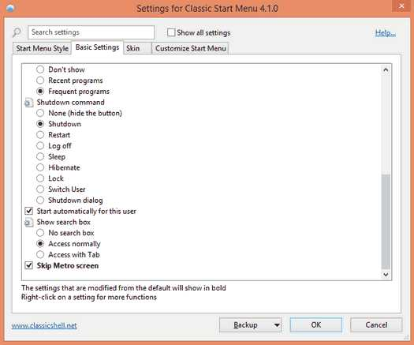
2. Check Device Manager-Sensors to verify whether your tablet has a GNSS Geolocation sensor. If so, your tablet has GPS capabilities already built in. (Some tablets have been discovered to have GPS even though the specifications may not mention it.)
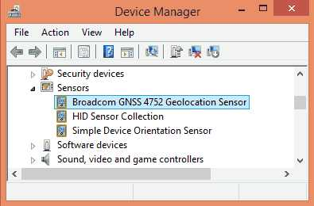
However, the Windows 8 tablets initially are configured in a way that only Metro apps can see the built-in GPS. In order to overcome this limitation, try installing petrsimon's excellent GeolocationTCP utility. Set this utility to launch at bootup so it's always there by putting a shortcut in the Startup folder created by Classic Shell.
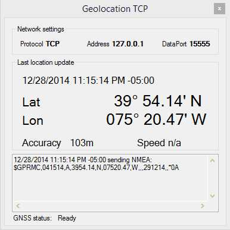
Then you need to configure OpenCPN to receive the NMEA data over the appropriate TCP port.
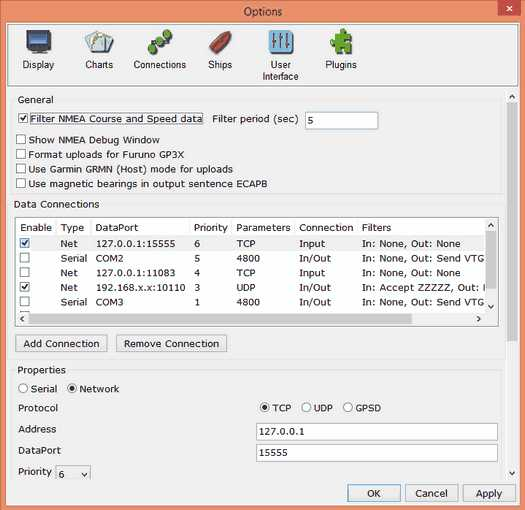
3. If you do not have an internal GPS and want one to interface with your tablet, I recommend a Bluetooth GPS transmitter instead of a wired dongle or puck. There are Android and iPhone apps that will transmit from your smartphone, or you can purchase a freestanding Bluetooth GPS made by GlobalSat or others. Transmitting GPS to the tablet via Bluetooth also facilitates putting the tablet into a waterproof pouch. Some have reported that hanging a USB connector off the side of the tablet may weaken the microUSB plug over time.
4. The excellent form factor of the tablet opens up some great possibilities for use in the cockpit, if you select a tablet with a sufficiently bright screen. A suggested tablet model and more comprehensive list of tips can be found on this message thread.
OpenCPN runs remarkably well on a tablet with practically no modifications. Microsoft has emulated many mouse functions in their OS. The right-click context menus are emulated by tap-hold. Zooming and unzooming in OpenCPN is accomplished by pinching gesture, or using the magnifying glass icons in the toolbar.
Mouse hover (aka "rollover") is not generally supported on tablets, and accidentally tapping the chart can lead to unexpected re-centering of the chart. To address this and other tablet needs, OpenCPN adds some some custom features available in the Options-User Interface menu:
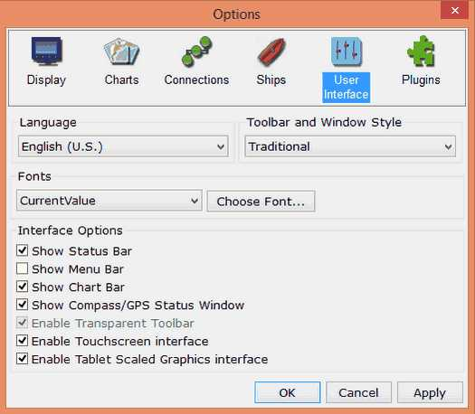
Activating "Enable Touchscreen Interface" alters the effect of tapping/clicking on the chart in the following ways:
-Suppresses re-centering of the chart by tapping (you need to tap-drag to pan the chart)
-Tapping waypoint selects it for subsequent dragging
-Tapping Routes and AIS targets shows popup info
-Tapping tide/current icons shows appropriate dialog
Here are some additional behaviors with "Enable Touchscreen Interface" activated:
-Optimize several common dialogs for screen rotation, i.e. landscape or portrait
-Route Create workflow: "Done" by clicking toolbar "Route" icon, or normal context menu.
-Toolbar navigation items (e.g. Zoom/Scale) are available during route creation.
-Chart drag (a.k.a. swipe) is available during route creation.
-Routepoint/Waypoint edit by drag is supported.
-Increase pixel select radius, to allow for finger tip selection of routes/waypoints
A second option, "Enable Tablet Scaled Graphics Interface" can improve the display, especially on tablets with high pixel density. At present, Windows tablets are generally lower pixel density than Android and iPad, but this may change with future hardware. This option does the following:
-Increase toolbar icon size
-Increase context menu text item size
-Increase selectable item sizes for several common dialogs
Tablet Scaled Graphics may enlarge the toolbar icons too much for some tastes, especially on small tablets with limited screen space. As an alternative, Microsoft provides a Magnifier utility that temporarily zooms the view and allows for panning across the enlarged screen. It can be found in Start-All Programs-Windows Ease of Access (if you have Classis Shell installed), or by searching the Start Page in the Modern interface. I recommend pinning a shortcut to the taskbar for quick one-tap access. While zooming the OpenCPN menu can enlarge many chart features, Magnifier can enlarge additional elements like the very small depth soundings and the green-over-black status text displayed by the Active Route:

* Read more about the XTE in Connections Add a Serial Connection, "APB bearing precision"
Following are Dave's comments on "Enable Tablet Scaled Graphics Interface":
- It is important that the screen width dimension be properly set for this option to work.
- Manual override of screen width can be done at Options->Display->Advanced.
- Dave found, on his W8.1 tablet, that the automatically calculated size value was wrong, leading to extra large toolbar icons. Easy to correct with a physical measurement.
In the "Tablet Scaled Graphics Interface", the toolbar icon target minimum size is 9mm square.
This is the generally accepted minimum button size for several mobile platforms.
Other Tablets and Operating System details.
OpenCPN for Windows also runs successfully on:
- Microsoft Surface Pro 3 with Windows 8 and Globalstar Bu-343 puck gps.
- Microsoft Surface Pro 3 with Windows 10 and Globalstar Bu-343 S4 puck gps.
- Opencpn should run successfully on most Windows 10 Computers.
Help Fix Bugs!
If you experience a crash in OpenCPN, the developers are very keen on knowing why. This is how you can help making OpenCPN, even better.Windows
In OpenCPN ver 4.0 the semi-automatic Crash reporting for
Windows
is disabled by default.
Crash Reports are saved in the OpenCPN config directory, i.e. where the log file is stored now. End users may occasionally be asked privately to send these reports to a designated recipient.
The semi-automatic Crash reporting can be enabled by editing the opencpn.ini file.
[Settings]
EmailCrashReport=1
Here is what you will see if OpenCPN causes a crash with the crashreport enabled.
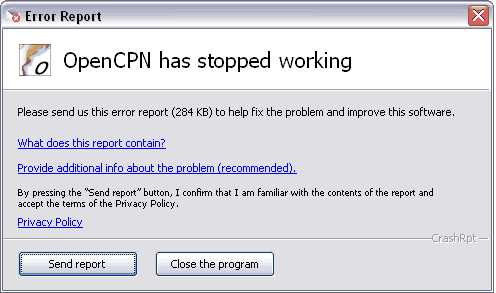
Provide additional information, such as your email or forum name, so the developers can contact you for more info, if necessary.
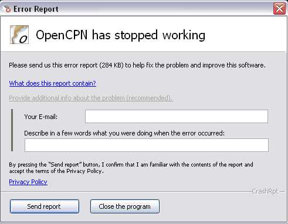
This is what the report will contain. Use the "Export" button if you don't have an Internet connection at the time of the crash. Mail the report later.
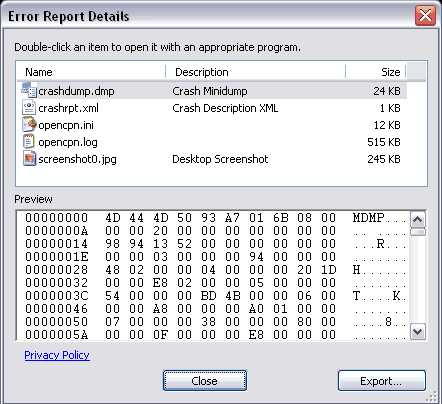
In Linux there is an excellent tool, "ddd", the Data Display Debugger,
to help the developers pinpoint where an error, or bug, is located in
the source code. "ddd" is a graphical front-end to the text based
"gdb", the GNU debugger.
Install ddd through Synaptic, Ubuntu Software Center or similar for other Linux distributions.
From a command line, in a Debian based Linux, such as Ubuntu, issue this command:
$sudo apt-get install ddd
$ddd opencpn
ddd starts and this is what you will see.

Click "Run". If you don't get this small dialog, go to Program -> Run, or hit F2
This will start OpenCPN. Just continue in OpenCPN and proceed to create a crash.
Then go back to the ddd window.
This is how it will look like after a crash.

Notice "Program received signal SIGSEGV, Segmentation fault."
This is programmers way of saying a "crash". Exactly what this means, does not matter for a normal user. Interested anyway? Read more, http://en.wikipedia.org/wiki/Segmentation_fault
To actually help the developers we need a back trace from the crash. This is the path that the program followed in the source code, leading to the crash.

Go to Status -> Backtrace.
This is what comes up, from this particular crash.

The crash happened at #0 and this very short back trace started at #9.
Your job now is to take a screen-dump, similar to the picture above, and send it on.
Try to get as much of the back trace as possible, by expanding the Back trace dialog.
This is important, so the developers can see the trouble point in the source code.
Look at #3 above, ending in "....chart1.cpp:2367". "chart1.cpp" is a part of the OpenCPN source code, and something on line 2367 was involved, directly or indirectly in the crash.
Lines ending in "......... .so.0" are external libraries used to run OpenCPN.
On the odd occasion, when the back trace is very long, the developers may still complain that they need to see more.
Start like this
$gdb opencpn
Gdb starts and you get the gdb command prompt (gdb).
Just type "r", for run and hit Enter. Like this:
(gdb) r
OpenCPN will now start, once again, make it crash.
The console will look similar to below.

All the lines before the "Segmentation fault" line, are just "chatter" from PortAudio and Gdk, and are not directly related to OpenCPN.
To get a back trace, simply
(gdb)bt
That is type "bt", for back trace, and hit enter.

You will now have access to the full back trace, with more details and reverse order to "ddd".
Copy the text, and send it on.
Press "q" to exit gdb.
Send it on to the Programmers
Tell the programmers about your findings through an entry in the tracker http://willkamp.com/opencpn/flyspray/ , or through posting on the forum http://www.cruisersforum.com/forums/f134 , if you have found a new bug.
Go to Table Of Contents
Crash Reports are saved in the OpenCPN config directory, i.e. where the log file is stored now. End users may occasionally be asked privately to send these reports to a designated recipient.
The semi-automatic Crash reporting can be enabled by editing the opencpn.ini file.
[Settings]
EmailCrashReport=1
Here is what you will see if OpenCPN causes a crash with the crashreport enabled.
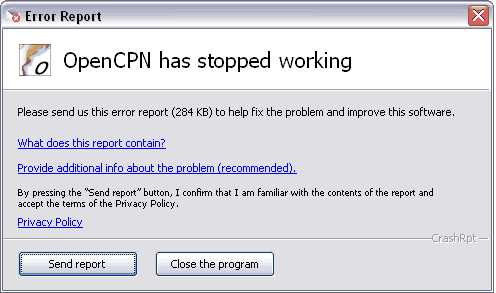
Provide additional information, such as your email or forum name, so the developers can contact you for more info, if necessary.
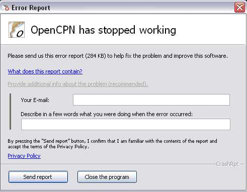
This is what the report will contain. Use the "Export" button if you don't have an Internet connection at the time of the crash. Mail the report later.
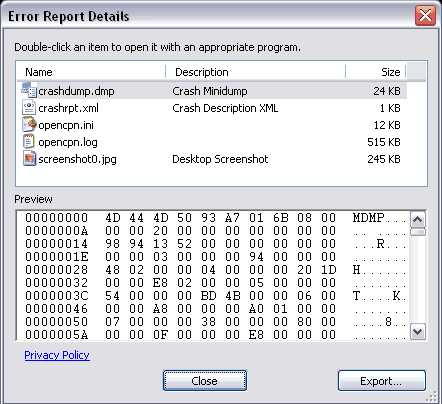
Also, for fun, you may test this option by the keystroke Alt-F12. This will induce a benign crash, and give you a chance to see what it will look like before the real thing happens. Please don't send this kind of report by pressing "Send report". Just press "Close the program" when you are done. Restart OpenCPN. This feature is temporary and will not be available in the Beta Release following 3.3.814. |
Linux
In Linux there is an excellent tool, "ddd", the Data Display Debugger,
to help the developers pinpoint where an error, or bug, is located in
the source code. "ddd" is a graphical front-end to the text based
"gdb", the GNU debugger.Install ddd through Synaptic, Ubuntu Software Center or similar for other Linux distributions.
From a command line, in a Debian based Linux, such as Ubuntu, issue this command:
$sudo apt-get install ddd
- The "$" sign above, just marks that this is a command line for a normal user. Do not include it in the actual command. This is a Linux convention used everywhere.
Start ddd
To start ddd, find a command-line and$ddd opencpn
ddd starts and this is what you will see.
Click "Run". If you don't get this small dialog, go to Program -> Run, or hit F2
This will start OpenCPN. Just continue in OpenCPN and proceed to create a crash.
Then go back to the ddd window.
This is how it will look like after a crash.
Notice "Program received signal SIGSEGV, Segmentation fault."
This is programmers way of saying a "crash". Exactly what this means, does not matter for a normal user. Interested anyway? Read more, http://en.wikipedia.org/wiki/Segmentation_fault
To actually help the developers we need a back trace from the crash. This is the path that the program followed in the source code, leading to the crash.
Go to Status -> Backtrace.
This is what comes up, from this particular crash.
The crash happened at #0 and this very short back trace started at #9.
Your job now is to take a screen-dump, similar to the picture above, and send it on.
Try to get as much of the back trace as possible, by expanding the Back trace dialog.
This is important, so the developers can see the trouble point in the source code.
Look at #3 above, ending in "....chart1.cpp:2367". "chart1.cpp" is a part of the OpenCPN source code, and something on line 2367 was involved, directly or indirectly in the crash.
Lines ending in "......... .so.0" are external libraries used to run OpenCPN.
On the odd occasion, when the back trace is very long, the developers may still complain that they need to see more.
Using gdb
Gdb, the command line debugger, is the answer.Start like this
$gdb opencpn
Gdb starts and you get the gdb command prompt (gdb).
Just type "r", for run and hit Enter. Like this:
(gdb) r
OpenCPN will now start, once again, make it crash.
The console will look similar to below.
All the lines before the "Segmentation fault" line, are just "chatter" from PortAudio and Gdk, and are not directly related to OpenCPN.
To get a back trace, simply
(gdb)bt
That is type "bt", for back trace, and hit enter.
You will now have access to the full back trace, with more details and reverse order to "ddd".
Copy the text, and send it on.
Press "q" to exit gdb.
Send it on to the Programmers
Tell the programmers about your findings through an entry in the tracker http://willkamp.com/opencpn/flyspray/ , or through posting on the forum http://www.cruisersforum.com/forums/f134 , if you have found a new bug.
Go to Table Of Contents
MenuBar
The Menu Bar is a good aid to find features and shortcuts, and works best if you already is a bit familiar with OpenCPN. This page contains links that explains the different features.The Menu Bar, when visible, is situated just under the Title Bar and above the default position of the Tool Bar. See Below. It contains access to features, as well as help with available shortcuts, also called hot keys.
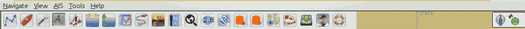
The Menu Bar can be activated in two ways.
It can be on all the time by ticking Options->User Interface -> Show Menu Bar.
If this choice is not on, the Menu Bar can be shown temporarily by using the hot-key "Alt".
As soon as the screen is used, for example by panning or double clicking for an Object Query, the Menu Bar disappears.
As seen above the Menubar consists of five entries.
Navigate View AIS Tools Help
When a menubar item is visible, the characters shown on the right of the items are "hints" to remind user of the shortcut key to use when the menu is closed. While the menu is open, this key may be inactive. The key to use is the first character of the item itself. This may be platform dependent.Alt + underlined letter, opens the concerned sub-menu. Alt +N will open "Navigate". The exact behavior is platform dependent. For example Alt + A will open the Ais menu on Windows.
Linux requires Alt and then Alt + A.
Go to Table Of Contents
Navigate
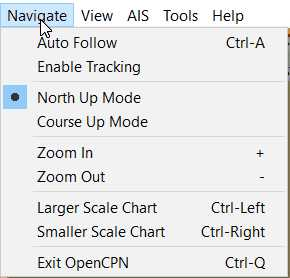Auto Follow Read more: Auto Follow and Display Orientation
Enable Tracking Read more: Ship Track
North Up Mode Read more: Auto Follow and Display Orientation
Course Up Mode Read more: Auto Follow and Display Orientation
Zoom In Read more: Zooming
Zoom Out Read more: Zooming
Larger Scale Chart Read more: Scaling Charts
Smaller Scale Chart Read more: Scaling Charts
Exit OpenCPN Shortcut Ctrl+Q.
Go to Table Of Contents
View
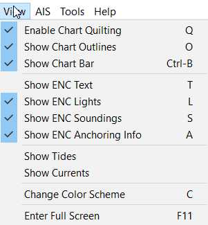Enable Chart Quilting Read more: Chart Quilting
Show Chart Outlines Read more: Options Setting
Show Chart Bar Read more: Chart Status Bar
Show ENC Text Red more: Vector Display Tab
Show ENC Lights Red more: Vector Display Tab
Show ENC Soundings Red more: Vector Display Tab
Show ENC Anchoring Info Red more: Vector Display Tab
Show Tides Read more: Tides and Currents
Show Currents Read more: Tides and Currents
Change Color Scheme Read more in Night Navigation
Enter Full Screen
Go to Table Of Contents
AIS Menubar
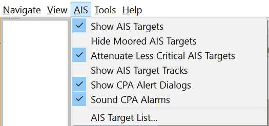Read more about all AIS options: AIS
Show AIS Targets Read more: ToolBox AIS Tab
Hide Moored AIS Targets Read more: Suppress anchored/moored targets
Attenuate Less Critical Targets Read more: Attenuation of less critical targets
Show AIS Target Tracks Read more: To track or not to track?
Show CPA Alert Dialogs Read more: ToolBox AIS Tab
Sound CPA Alarms Read more: ToolBox AIS Tab
Go to Table Of Contents
Tools
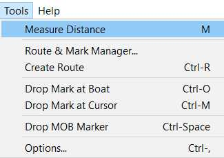Measure Distance Read more: Right Click Menu
Route & Mark Manager Read more: Route Manager & Gpx
Create Route Read more: Marks and Routes
Drop Mark at Boat Read more: Marks and Routes
Drop Mark at Cursor Read more: Marks and Routes
Drop MOB Marker Read more: Man OverBoard
Options Read more in Options Setting
Go to Table Of Contents
Help
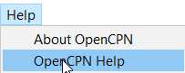About OpenCPN Read more: Getting Started
OpenCPN Help Read more: Getting Started
Go to Table Of Contents
Toolbar Buttons
The Toolbar is floating and can be placed anywhere on the
screen,
vertical or horizontal.
Note the "grabber" symbol at the far right side of the toolbar. Use
this handle to drag the toolbar wherever you want it. The default
position
is horizontal and docked top left.
It "snaps" to the edges. Right click on the grabber, and the toolbar
shifts to vertical format. On Windows (at least), unless in OpenGL
display mode, the toolbar dims down transparently until you roll over
it.
There are three different styles of Toolbars to choose from. Go to the
ToolBox->"User interface"-> "Toolbar and Window Style"
and select
one of the following styles:
Traditional
Journeyman

Journeyman Flat

There are a lot of buttons available in the standard Toolbar, even
more, counting the many plugins. To control exactly which buttons to
display, hold the cursor over any button and right-click. This dialog
pops up.
Only the buttons with a ticked box will be displayed. The available
shortcuts are also shown in parenthesis to the right of the button
description.
The MOB button is special. If unticked,
you will get
these choices:
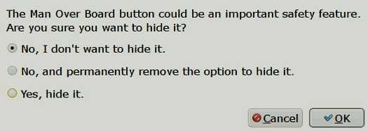
#1:
The MOB button will still be there, but anyone
(crew?) may later hide it.
#2: If
OpenCPN is used to handle a MOB situation,
choose this option. The MOB button will always be there. It is not
possible to change the state as long as OpenCPN is running. The MOB
button option will not even appear in the right-click menu.
To reset this option open the opencpn.ini(config) file and change the
value below from
"1" to "0". Restart and all the options are once again available.
"[Settings]
PermanentMOBIcon=1"
#3: Use this option if a MOB situation is
handled by
other means, and OpenCPN is not a part of the standard operational MOB
procedure.
If the MOB button is visible, it will always be the
button
furthest to the right. This way it's always easy to find in bad light
etc.
The visibility of the plugin buttons is controlled in the
ToolBox->Plugins Tab, by pressing the Enable/Disable toggle
button.
Note that the Toolbar must have at least one active button.
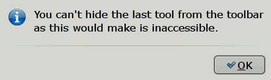
When a toggle button is pressed, it changes and becomes darker,
Traditional style also adds a stronger outer frame. For example,
tracking off 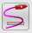,
tracking on 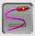.
A brief explanation of the use of each button is available by just
hovering with the cursor
over a button. 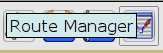
Traditional Style (from left to right) :
(For translation to other styles, check the buttons just below the
Traditional in the above pictures.)
Zoom In (Zooming)
Zoom Out (Zooming)
Scale Next Chart Down (Scaling Charts) 1
Scale
Next Chart Up (Scaling Charts)
1
 Create
Route (Marks and Routes)
Create
Route (Marks and Routes)
Find/Follow Boat. Toggles on/off.(Auto Follow and Display Orientation)
 Launch Toolbox (Options Setting)
Launch Toolbox (Options Setting)
Show/Hide Text Labels on Vector Chart.(Vector Display)
Show/Hide AIS Targets 2 (AIS)
Show/Hide Currents On Chart (Tides and Currents)
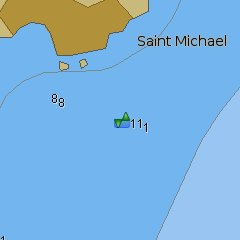 Show/Hide Tides On Chart (Tides and Currents)
Print. Prints your current view, using a simple dialog.
Route/Track/Waypoints/Layer- Manager.(Route Manager & Gpx)
Toggle Track On/Off (Ship Track)
 About OpenCPN and Help File (Getting
Started)
About OpenCPN and Help File (Getting
Started)
Adjust
Screen Brightness for Dawn/Dusk and Night viewing.(Night Navigation)
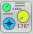
Show/Hide the Dashboard Plugin (Dashboard)
Show/Hide
the Grib Overlay Plugin (Grib
Weather)
WMM Magnetic (WMM)
Chart Downloader (Chart
Downloader)
Drop Man
Over Board marker (Man OverBoard)
Always the far right Button.
A separate GPS status and Chart Orientation Status is normally in the upper right corner of the display, unless the floating ToolBar covers this position. Then the "Status-bar" will be moved to the lower left corner, were it will stay, unless the main ToolBar is moved to cover this position, in which case the "Status Bar" goes back to the default position.
Course Up/North Up 2(Display Orientation)
GPS status 2 (GPS Status)Note 1: These icons are "grayed out" when only CM93 vector-charts are available, as the feature makes no sense.
Note 2: These icons changes, depending on status.
Go to Table Of Contents
Zooming
It is essential to understand what happens when both zooming in and zooming out in a chart view. Vector charts have their own issues, with both over- and under- zooming. Both can be potentially dangerous, and it's essential to understand what's going on.
How to Zoom in/out
Zooming in makes the chart scale larger while zooming out makes the scale smaller These
buttons allow you to zoom in and out on the chart currently being
displayed.
Will zoom the chart in for more detail, larger scale.
Will zoom the chart view out for more area, smaller
scale.
Alternatively, the + and - keys on your keyboard will zoom in
and
out. If you have a mouse with a scroll wheel, it can also be used to
quickly zoom in and out.
Other alternatives for zooming includes:
- Page Up for zooming in.
- Page Down for zooming
- Menu Bar->Navigate click Zoom In / Zoom Out
- Alt + for fine scale zooming in.
- Alt - for fine scale zooming out.
- Alt + scroll wheel, zooming in/out in small steps.
Some settings for zooming are available in the Options
->
Display->General tab. Read more about "Smooth Panning/Zooming"
and
"Zoom to Cursor" in Options
Setting.
Note that
- Keyboard, Menubar, and Toolbar zooms always zoom to the center of the screen.
- Wheel zoom behavior changes depending on "Zoom To Cursor" and "SmoothZoom" settings.
Overzooming

Overzooming a raster chart.

Overzooming a vector chart.
If you zoom in enough there will appear a warning "OverZoom" in the upper left part of the chart area.
This means that you have zoomed in way to far, and is using the chart at a scale that was never intended, and that is not supported by the original survey. No new information will be seen, and the situation is potentially dangerous as it could give the impression of increased distance between dangers.
On a raster-chart pixelation will be seen, but on a vector chart it is not so obvious when you have over zoomed. This is where the warning is useful.
Your first action when the warning appears should be to zoom out at least one snap.
Charts are generally based on surveys in twice the scale of the released chart, so when zooming in beyond a factor of 2, there is no support, increased details etc, in the underlying survey. OpenCPN warns for "OverZoom" when zooming with a factor of 4 or more.
Overzooming settings are
explained in Options Setting.
In short OpenCPN,
by default, blurs vector-charts and expands the
text an lines, to imitate what happens with raster charts, when zooming
in beyond a factor 10.0 x .
Unlimited zooming is available using the
background
Map. Just create an empty chartgroup and switch to this map at any
time. More in Chart
Groups Tab.
Underzooming
Underzooming is only a general problem with CM93 V2, in OpenCPN. The
reason is the very poor graphical representation in small scale charts,
of reefs, small islands and other dangers.The case with the Cargados Carajos Shoals in Indian Ocean is well known since Team Vestas grounding in the 2014/2015 Volvo Ocean Race.
This is what you see. All pictures are in a scale of approximately 1:650.000.
The "normal view. No indication at all of islands or reefs, even though the name in it self indicates, to a seasoned navigator, that more information should be sought elsewhere.
Look upon a blue area as a warning sign. Zoom in to see if more details are available.
If no more details show up, even using a large scale view, it indicates that the CM93 coverage is poor in the area. Once again, use alternative sources.

Switching to single mode view, and with chart outlines active, OpenCPN shows that a larger scale chart is available. This will show on zooming in further. The available chart does not cover the southern end of the reef where Vestas ran aground. In some editions of CM93 more charts of the area are available, including the southern part.
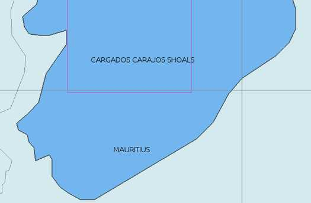
Compare this to the well thought out representation in the raster chart INT 702 in scale 1:3.500.000.

Using CM93 in OpenCPN
It all starts with passage planning. The bottom line is: Don't trust CM93. Always check with other reliable sources, meaning, for example, Raster charts (paper charts) Pilot Books, or ENC charts, not another privately issued vector chart, with similar problems ( for example Navionics).Doing the best you can with OpenCPN and only CM93 available.
For passages including small scale CM93 charts (A or Z scale):Create a route that you plan to follow.
Switch to Single chart mode. Short Key "Q".
Avtivate chart outlines.Short Key "O".
"Fly" along the route, making sure you are zoomed in to a factor of at least 2.5 x.
Available charts should now be outlined in magenta.
Drop suitable marks documenting these charts, and the dangers they represent, for later reference.
Nigel Calder "How to read a Nautical Chart, Second ed. 2012"
Is recommended to all users who want to know more about charts, the surveys they are based on, and their horizontal and vertical accuracy.
Go to Table Of Contents
Scaling Charts
These buttons will allow you to change the scale of chart you
are
using, unless only CM93 charts are
loaded, in which
case these buttons has no effect, and are grayed out. If just a yellow
bar is visible in the Chart
Selection Bar, above the Status Bar, then CM93 is the only available
chart for the area.
Shift to larger scale chart. Will change to next chart of greater detail, covering less area, if available, within the current view.
Shift to smaller scale chart. Will change to the next chart of less detail, covering a greater area, if available, within the current view.
The charts in the Chart Bar just above the Status Bar (The User Interface) are ordered according to scale. The leftmost chart, is the largest scale chart available, and the rightmost chart is the smallest scale chart.
Above the largest scale chart is a raster chart ( blue ) on the far
left. To the far right is CM93 ( Yellow), and it will always be there,
if available. The green ENC vector chart, next to CM93, is the smallest
scale raster/ENC chart available at the center of the display.
The scale of the displayed chart.
The chart display indicates the true scale of a particular
chart at
the present zoom level. Look to the far right on the bar above:
"TrueScale 22600 Zoom 0.73x.
There is also an always present quick reference visual indicator in the
SW part of the display.
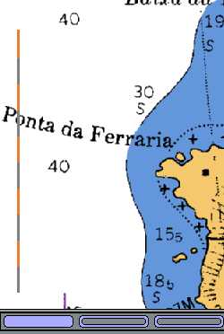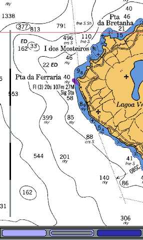
When the indicator is gray and orange the total length is 1
nautical
mile an each segment is 1 cable.
When the indicator is gray and black the total length is 10 miles and
each segment is 2 miles.
Go to Table Of Contents
Marks and Routes
Marks are the basic points that is used for many things, such as creating routes, marking fishing spots, good anchorages or anything of interest.Once a mark is created a focused right-click dialog becomes available, when clicking on the mark.
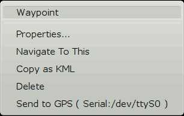
Creating a mark
There are a few ways to directly create marks.- Pressing "Ctrl +O" creates a mark at the boats position.
- "Ctrl + M" creates a mark at the cursor position.
- Right-click and and press "Drop Mark" creates a mark, at the position of the cursor, when clicking.
- Marks are created at the start of each leg in a route, and one at the end of the route. More about routes a bit further down this page.
The default icon, when creating a mark, is settable by changing the the value "DefaultWPIcon" in the opencpn.ini(config) file. Use the name of any available icon in the properties dialog.
|
In the [Settings/Others] section set the option DefaultWPIcon to one of [empty, airplane, anchorage, anchor, boarding, boundary, bouy1, bouy2, campfire, camping, coral, fishhaven, fishing, fish, floating, food, fuel, greenlite, kelp, light, light1, litevessel, mooring, oilbouy, platform, redgreenlite, redlite, rock1, rock2, sand, scuba, shoal, snag, square, triangle, diamond, circle, wreck1, wreck2, xmblue, xmblue_, xmgreen, xmgreen_, xmred, xmred_, activepoint] values representing the default set of built-in icons or to a filename of any of your UserIcons, without the the path and .xpm extension. If you have a file called MyICON.xpm in the user icons folder, the value will be simply MyICON |
You can move the mark by left-click-dragging it around.
You can delete a mark by
right-clicking its icon,
and selecting "Delete".
There is an built in undo/redo buffer
for creating,
deleting or moving marks or waypoints. If you have just created,
deleted or moved a mark the right-click dialog will have relevant
entries. The
undo/redo, for moving or creating marks, follows a straight time-line
and is not tied to an individual mark.
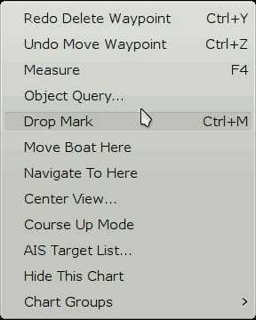
Above is a right-click menu just after moving a mark a few times and
undoing the last move, and one mark was deleted, and then the deletion
was undone. CTRL + Z and CTRL + Y works as hot-keys for undo/redo.
All marks have properties that can be seen by right-clicking and
pressing "Properties", or even simpler just double click the mark.
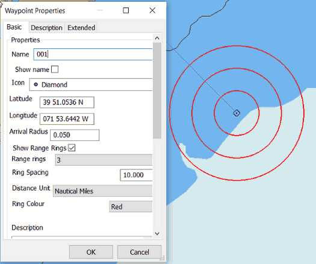
Read all about the
properties dialog in Extended Marks
Marks can be manipulated through the Route & Mark
Managers
Waypoints tab as well. Deleting a mark that is part of a route, will
also change
the route. Marks that are a part of a "layer" cannot be changed at all.
Marks can also be imported into OpenCPN in a number of ways. Hidden
waypoints are not offered as "Use nearby WPT" while creating a route.
Read all about this in the Route
Manager & Gpx
A general locking of all marks is available. Goto Options ->
Display
->Advanced
and tick the box. This feature is handy, to prevent accidentally moving
a mark. Activate this feature when underway, deactivate it when
planning.
The Man OverBoard
mark can be
activated through the icon
in the toolbar, or through
hitting Ctrl + Space-bar. The mark looks
like the button and is dropped on own boats present gps position. This
mark cannot be moved or deleted with the cursor or keyboard (by
mistake), but can still be deleted from the Route/Waypoint manager
dialog. More about Man
OverBoard
here.
All the details of the Mark/WP Properties dialog are dealt with in Extended Marks
Use your own Icons
OpenCPN comes with a handful of different icons that can be assigned to a mark. Right click or use the Route Manager and activate the properties dialog. The Mark Icon window in the dialog shows the available icons.A user can install his or her own icons to use with marks and "own ship".
1. Create a directory called "UserIcons" in the same place that holds your opencpn.ini(config) file. Instructions to find the directory (folder) location here:OpenCPN Installation
2. Add .jpg image files to this directory. The legacy .xpm format works as well. The icons can be any size. The name of the file (without the extension) becomes the name of the new waypoint icon. These new icons will appear on the Waypoint Properties dialog, and can be assigned to any waypoint. They can also be assigned in GPX Import files.
3. The User Icons page contains links to a few sets of user contributed icons.
4.To replace the default own ship icon , just put a file "ownship.jpg" or "ownship.xpm", containing the ownship picture you prefer, in the UserIcons directory, described above.
More about "ownship" icons and setting "ownship" size in Options Setting.
Routes
Press the
-button and start the creation of a route.
Hotkey "CTRL R" is an
alternative way to start a route and "Esc" ends the route. The cursor
changes to a 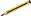
pencil. Left click along the desired route
you want to make. This
will leave sequential numbered waypoints as you click along, the
numbers will not be visible, but are available in the Route Properties
Dialog,
accessible through the right click menu or the Route Manager. The
running total distance of the whole route will be shown along the
"pencil" together with the course and distance from the last marked
waypoint. When creating routes, OpenCPN will ask if it should use a
nearby mark, when a route point is added that is close to an already
existing mark. If answering "yes", the existing mark is copied to the
route.
For longer distances, specially on east.west courses on higher
latitudes, the Create Rout tool seamlessly switches to also offer a
great circles alternative, instead of Mercator rhumb-line route legs.
Read more Great-circle
Sailing.

Holding the cursor over the route brings up a roll-over info.
The name
of the route, if it is set in the properties dialog, the total length
of the route, the course and distance for the leg under the cursor and
distance run so far along the route, to the first waypoint in the
current leg.
Looking at the four legged route above. The total distance is 8.8 NMi.
The third leg is 1.89 NMi i true direction 160° and the accumulated
distance in the first two legs is 4.76 NMi.
If your desired route extends off the currently displayed chart, move
the route cursor in the desired direction and the display will
automatically pan to show the area. You can zoom in and out with the
mouse scroll wheel or keyboard +/- keys during route creating. You can
also right click and select 'MAX DETAIL HERE' or 'Scale Out' during
route creation. When finished right click and choose end route from the
context menu, alternatively just press the "Esc" key.
You should now have an inactive (Blue) route. Active routes are Red,
inactivated routes are Blue.
Right-clicking on a route brings up a focused menu.
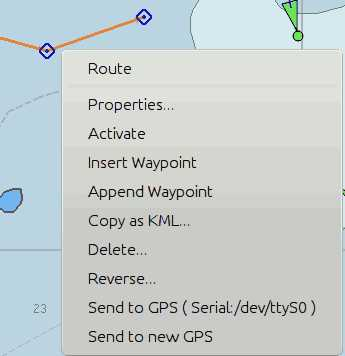
| To prevent deleting a route by mistake, a confirmation
dialog
is activated when pressing "Delete..." if
the box
"Confirm deletion of tracks and routes" is ticked in
Options->User
Interface. If a waypoint is deleted, the rightclick menu will have "Undo Delete Waypoint" in the rightclick menu, with a hotkey Ctrl + Z. |
Multiple Routes
In OpenCPN multiple routes can be handled in a couple of
different
ways.
Many routes can be created in a session or imported into a session.
The visibility of every route is controlled in the Route Manager. There
is an "eye" to the far left on the line for each route. This works as a
toggle switch. A PLAIN Eye means that the route is visible, while an
eye with a red cross, means that it's hidden.
This way only the route(s) of interest for the moment can be shown.
Another way is to create and export routes, and later import them when
needed.
To keep the chart clear of useful, but not needed routes follow these
steps:
• Create a folder called, 'GPX_Routes', or another suitable name.
• Create your route.
• Use the Route Manager to export the route, with a descriptive file
name and save it in GPX_Routes.
• Delete the route from the chart.
• You can export all your routes as one big file or export and delete a
route as you create them
• When needed, simply use the Route Managers "Import" Button to open
the route file.
To get rid of the way points left on the chart when a route has been imported and then deleted, which may happen depending on the imported gpx file.
1. Open the Route Managers Waypoint tab and press the "Delete
All"
button
2. Say 'Yes' to: 'Are you sure you want to delete <ALL>
waypoints?'
Saving and Loading Routes and Marks
- Refer to Route Manager & Gpx to load and save data using the Route Manager
Activating and using routes
Right clicking on the track, changes the color from blue to orange and brings up a comprehensive menu.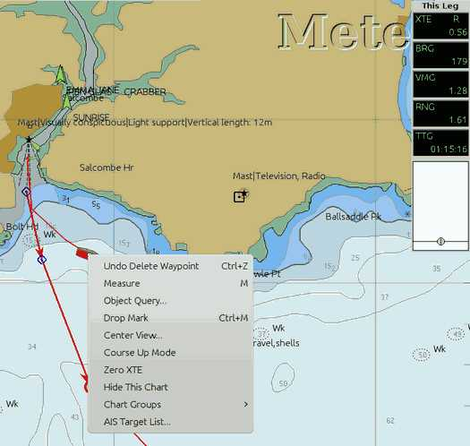
Clicking "Activate Route" or performing the same action through the Route Manager, changes the route color to red and new, route information window appears on the right side of the display. Once a route is activated, you are presented with the choice of "Deactivate Route" in the different menus.
There is one unique item in the route focused right-click menu above.
Zero XTE Sets the present XTE (Cross Track Error) to zero. This comes in handy if you for some reason if off course following a route and want the autopilot to follow the route, but adjusted for your current position rather than the position of the last route waypoint.
Right clicking on a waypoint in a route brings up a few options, otherwise not available.
-
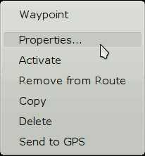
- Properties. The dialog is the same as for an individual mark.
- Activate - Gives the direction to the chosen waypoint instead of the first waypoint in the route, which is the default. Useful when joining, for example, an imported route, at an arbitrary waypoint.
- Remove from Route, but don't delete it.
- Copy as kml, for use with Qtvlm or Google Earth.
- Delete Waypoint from Route.
- Send to GPS is seen in the rightclick menus for routes and waypoints. If a port is not selected, the case in the picture above, a dialog is shown to select an output port. To change the selected port, go to the route manager and select "Send to GPS".
- Ctrl + N, a shortcut that activates the next waypoint in an active route.

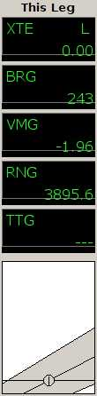
XTE Cross Track Error. How far off course your boat is. "L"=left, "R"=right
BRG Direction to next waypoint.
VMG Velocity made good to next waypoint
RNG Distance to next waypoint.
TTG Time To Go to next waypoint.
Right clicking on "This Leg" above brings up this dialog
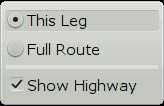
Show just the current leg or the entire route. Show or hide the highway.
Autopilots and Routes, the basics.
If an autopilot output port is defined in the Options->Connections tab, OpenCPN sends instructions to the A/P when a route is active. OpenCPN creates and sends the NMEA RMC sentence to the A/P output port when a route is activated. Read more in Options Setting.OpenCPN automatically shifts to the next waypoint in the route using an arrival radius of 0.05 miles (= 92.6 m) by default. This value can be changed in Options->Ships->Own Ship. The arrival radius can be adjusted in each waypoint properties dialog as well.
This works fine in the general case. The A/P is watching the RMB strings. It sees a new destination lat/lon, and new heading to steer, and then asks the user for confirmation to make the turn. Raytheon/Autohelm work this way.
Some advance options for Routes and AutoPilots are discussed in Options Setting.
Autopilots and Routes, the details.
Please read Options Setting OwnShip first. Here is a detailed discussion of the Options->Ships->OwnShip->Advance route waypoint on arrival only.With an active route, the Dialog "This Leg" is visible near the upper right corner of the screen in the dialog:
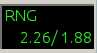
RNG (actual range) Distance to the next waypoint.
NR (normal range) Distance from destination waypoint to a line orthogonal to or at right angles to the current route segment which passes through ownship. When shown, NR is after RNG.
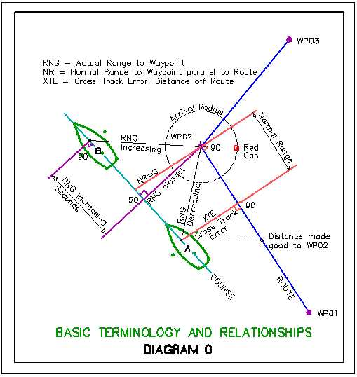
There are two general conditions:
1. RNG=NR On course with no cross track error (XTE=0)
2. RNG>NR Off course (sailing perhaps) with cross track error (XTE>0)
When the difference is greater than 10% both values are shown in "RNG"
The "normal" range is the second number shown. 1.88 in this case.
The four diagrams below represent four different conditions:
1. RNG = NR and XTE=0 (Boat is on the route)2. RNG > NR and XTE>0 (Boat is off the route), which corresponds with the dialog shows both RNG and NR (When there is a 10% difference between NR and RNG).
Additionally Waypoint Advance (Default and Option) Alternatives:
3. Waypoint Advance (Normal default).
4. Advance Waypoint upon Arrival only. (Option checked)
Waypoint Advance (Normal default)
When following a Route OpenCPN normally decides to advance to the next waypoint if at least one of the following two conditions apply.
- NR (normal range) is less than the declared arrival radius. OR
- RNG (actual range) is increasing for 2 seconds. Ownship is moving away from the target waypoint, and has been for more than two seconds.
Waypoint Advance (Normal default) when Range (RNG) is 10% > Normal Range (NR) and XTE >0
Option: Check Advance route waypoint on arrival only. With this activated., OpenCPN only advances the route to the next waypoint, if condition 1 above is true (NR<Arrival Radius). Condition 2 is ignored.
Advance route waypoint on Arrival only (is checked) when Range (RNG) = Normal Range (NR) and XTE=0 or close
Advance route waypoint on Arrival only (is checked) when Range (RNG) is 10% > Normal Range (NR) and XTE>0
[Editor's Note: Diagram needs correction. Boat B location Normal Range should be shown at the arrival radius with boat staring turn.]
Advance Waypoint upon arrival only (option) is useful when sailing and you can't lay the next mark and are forced to tack to reach it. It allows a ship to move away from waypoint without automatically advancing to next waypoint.
Note: Waypoint Advance (normal default) is dependent on NR < Arrival Radius OR RNG increasing more than 2 seconds, so what this option does is overide that second condition.
Advance Waypoint upon arrival only (option) ensures that the
1. NR<Arrival Radius is reached OR
2. A line just inside of the Arrival Radius which is also "normal" or perpendicular to the marked route is reached. In this case there is a cross track error.
On the other hand...
Waypoint Advance (normal default) helps you if you really want to cut a corner by a large distance, in such a way that the "normal range" will never be less than (Arrival radius). The second condition, RNG increases for > 2 seconds, will automatically advance the route to the next waypoint in this case.
Go to Table Of Contents
Chart Status Bar
At the bottom of the display, is the Status Bar, activated from
"Options->User Interface->Show Status Bar".
Just above the Status Bar is the 'Chart Selection Bar'. CTRL +B toggles
this bar on/off.
It shows all the available chart for the present view, represented by
one colored segment for each chart. The order between the segments
represents the scale of the charts. Largest scale to the left, smallest
to the right. If CM93 is available, it is always furthest to the right.
The segmented color bars in the Status Bar represent:
- Blue for Raster
- Green For ENC's
- Brown/Yellow for CM93 charts
- The current chart displays as a lighter shade of its color, or if quilting is active, the charts currently making up the quilt are displayed in lighter shade.
- The Chart bar below consisting of 12 segments shows a quilt of two active charts. Five charts in the quilt are hidden, due to small scale. CM93 is in it's place, to the right. Four charts of larger scale than the present view are available. The largest scale chart is a Transverse Mercator chart.
Limitation
The Chart Bar handles a maximum of 100 charts. The largest scale charts will be dropped first if more than 100 chart are available on a position. It is unlikely that this will be much of a limitation, but the possibility certainly exists if a lot of info charts, pilot charts and weather charts etc, are loaded. The symptom will be that large scale charts becomes impossible to display.When you hover the mouse pointer over the bar, and not in quilting mode, a thumbnail of the chart will appear under the Scaling Charts icons and a chart information box will pop up just above the button. If quilting is on, instead of a thumbnail, the chart represented by the button will be highlighted in a transparent reddish color. By clicking on the appropriate bar, or using the appropriate Keyboard Shortcuts, you will switch to the chart shown in the thumbnail. This feature is especially useful if you wish to view an ENC or a Raster chart of the same area.
The bottom line starting from the left, a bar, that imitates a
paddle wheel, if a gps position is received, and the gps position. Then
follows SOG, COG, the position of the cursor, and course and distance
from the gps position to the cursor. To the far right there is true
Scale of the display and the Zoom Factor. The Zoom factor is the Scale
(as above) divided with the natural scale of the chart.
The buttons, or colored segments, are displaying a lot more information
however.
These
buttons shows that the two charts are Transverse Mercator,
and that single char mode is used as the corners of the segments are
not rounded.
This
button indicates that the chart is a Polyconic
chart.
This
button shows that the chart is Skewed,
meaning that
north is not up on the chart.
This chart is excluded from quilting
because of user
action. Right click to include in quilting again. Notice the rounded
corners due to
quilt mode.
The raster chart represented by this button don't participate in the
quilt because it is hidden by other, larger scale charts. Vector charts
are represented similar.
To illustrate a lot of this, here is a screen shot in quilting mode.

The screen is a quilt of two Polyconical charts. Hovering the mouse
pointer over the left chart-button highlights the lager scale chart for
Manitowoc. Two smaller scale charts that cover the area displayed on
the screen are included in the quilt, but are invisible as they are
covered by the larger scale charts. To view these charts, right-click
anywhere
on a chart in the quilt and select "Remove this chart from quilt", one
of these charts will now be shown in the quilt.
The Brown right most button shows that CM93 version 2, charts are
available for the area, but not currently displayed.
The information box shows relevant information about the chart.
To Hide the Chart Bar
Use these hotkeys:Ctrl + B hide/show the Chart Bar.
Go to Table Of Contents
Chart Info
http://opencpn.org/ocpn/chart_conversion_manualIf you hover the cursor above one of the segments, representing a chart, in the Chart
Selection Bar, a chart information box pops up. The chart info refers to the chart in the upper right corner, outlined in red and with pink-ish overlay.
The information on a vector chart is similar.
For CM93, switch to single chart mode, to see the information.
If there seems to be a lot of information missing, it's because the chart has not been viewed in the present session. Get the chart up on the screen, the try again.
The Chart Info Box can be inactivated by hiding the Chart Bar. Use Hot keys
Ctrl + B to hide/show the Chart Bar.
What does all the information mean?
ChartFile: The file on the local computer where the chart is.Name: The Name of the Chart. Not all vector charts have names, while raster charts always have names.
Scale: The scale of the chart.
ID: The chart number. For raster charts this is the same as the number of the paper chart. Vector chart cells have their own numbering scheme.
Depth Units: For raster charts this is the units for the printed soundings. For vector charts this is the sounding units set in Options -> Display -> Units -> Depth.
Soundings: The datum for soundings. It is the level that all printed depth figures refers to. Consult a text book on Navigation for details.
Datum: The geodetic datum. This will be WGS 84 for all new charts, compiled later than about 1993.
If this value is unknown to OpenCPN, or stated as "UNKNOWN" or similar, OpenCPN will load the chart using WGS84. If the value is missing, the chart will not be loaded in version 4.0.0. This will change from the first beta release in the 4.1.xxxx and onwards.
This is a potential source of errors and far from ideal. The reason is that a number of chart-agencies fails to state the correct GD value.
See below for an example of this kind of chart.
If the
chart is not using WGS 84, but a named, recognized
datum, OpenCPN will automatically add necessary corrections.
Projection: OpenCPN accepts Mercator,
Transverse
Mercator, UTM or Polyconical projections.Source Edition: The Chart Edition.
Updated: The date when the chart was released. Expect the chart to be updated to this date, unless otherwise stated.
The OpenCPN Logfile
The file contains a wealth of information, and should be your first stop if your chart(s) don't load or if there is an error message.Chart Accuracy
First... make sure your GPS is set to output positions using the WGS 84 Geodetic Datum.If you see a warning like the one below:
Be careful. The warning means that the charts geographic accuracy is bad. The position of Own Ship may not be correct.
A visual warning is that Own Ship turns from Red to Yellow when receiving a gps signal.
First is a real scale vector version and then the default OwnShip bitmap
There is no quick fix for a bad chart, but try to switch to another chart if using single mode chart display. If quilting is on, right-click on the chart button in the chart-bar and select "Hide this chart". Both suggestions assumes that the bad chart can be replaced by other charts, which of course isn't always possible.
The chart will probably be OK for navigation with traditional methods. Use bearings, vertical or horizontal sextant angles of conspicuous landmarks to confirm your position, as well as soundings or any other available resources.
Checking a chart for accuracy
A raster chart, using WGS 84, can easily be checked for the accuracy of the chart grid. This does not necessarily guarantee the position of the individual features on the chart. Refer to Calders book.Activate Options -> Display ->General -> Show Grid. A Latitude and Longitude grid will be displayed as a layer on top of the chart. This grid is OpenCPN's view of how a proper WGS 84 should look like. For raster charts this grid can be compared to the "printed" grid on the chart picture. Chart errors are to complicated to be treated in a few sentences. Refer to Nigel Calders book "How to Read a Nautical Chart" for an in depth but still easy to read text.
For a quick check, we are happy with a grid error that is in the region of 1 mm at the chart scale. For a chart in 1:50.000 this means an error of 50 m.
Use OpenCPN's ability to grossly over-zoom a chart. Home in on a printed lat/long crossing. Below is a test on a commercial BSB3 chart in 1:60.000. The width of the printed grid - thick black lines - is about 12 m. The thin gray lines is OpenCPN's grid layer. The accuracy of this chart is very good.
Another example. This time we are looking at a chart in 1:10.000. Very accurate.
This method cannot be used unless the chart is WGS84. For other geodetic datums, expect a difference between the printed grid on a raster chart and OpenCPN's grid. To check for accuracy on this kind of chart find a well known object with an established position, for example a major Lighthouse, and compare this position with OpenCPN.
Adjusting charts to agree with WGS 84.
This is an advanced subject.For CM 93 read CM93 Offsets.
BSB/KAP chart can also be adjusted. For example the chart above can be made to agree exactly with the grid. Read the Chart Conversion Manual and make sure to understand imgkap and the kap file format.
The work flow to correct any kap chart is:
- Use imgkap to extract the chart picture
- Copy the text header from the kap chart to a .txt file.
- Adjust the DTM values in the .txt file
- Use the imgkap with the picture and the .txt file to produce a new updated kap file.
- Check for accuracy and go back to #3 if necessary.
No Projection -> Chart rejected.
If the chart does not contain any information about the projection, OpenCPN doesn't know how to display them. From Version 4.0, such a chart will not be loaded, but a note about the problem will appear in the log file.Missing a chart? Check your OpenCPN logfile.
No Datum -> ---<<< Warning: Chart Datum may be incorrect. >>>---
The message will be in the Chart Info Box.This is a warning that the chart probably is not accurate enough for GPS navigation. It still should be OK with traditional methods. A minimum recommendation is to check the GPS position with traditional methods, a couple of compass bearings, for example.
One example, that unfortunately have lead to problems for a few yachts, is DMA/NGA chart 28201, Puerto Morelos, in Mexico, from 1995. This chart, based on a Mexican survey from 1905, has a Datum Note, similar to this:

Comparing 28201 with CM93 that is correct, in this particular case. Note the substantial corrections applied in CM93,
.
GPS Setup and Status
GPS Setup
Please refer to the "Getting Started" Section GPS SetupGPS Status
The default Ownship icon is rendered as grey if there is no valid gps position fix available and like this when a gps fix is availableThe GPS status is also indicated all the way to the right along the top of the screen, together with the North Up/ Course Up Indicator, unless this position is covered by the floating ToolBar. The GPS status is then found bottom left.
This windows visibility is user settable in Options->User Interface-> Show Compass/GPS Status Window. Short cut "Ctrl-I"
The status icons should be interpreted as fallows:
No GPS data at all, or position not available.
 GPS position available, and good for navigation
GPS position available, and good for navigationActive/Valid GPS data + GPS reporting 1 - 4 satellites, if available from GPS receiver.
Active/Valid GPS data + GPS reporting 5 - 9 satellites, if available from GPS receiver.
Active/Valid GPS data + GPS reporting 10+ satellites, if available from GPS receiver.
In real life, various gps receivers may behave slightly different, especially when starting up and finding satellites.
The small dialog, containing the GPS indicator and the Course Up / North Up indicator, can be toggled on/off with the "Ctrl+i" shortcut.
The GPS status, including available satellites, is also available as an instrument on the DashBoard.
GPS and low accuracy charts.
OpenCPN is checking loaded charts for accuracy as far as possible. If there is a problem with a chart, the chart info box that becomes visible when holding the cursor over the chart rectangle in the chart bar, will say " Warning: Chart georef accuracy is poor."A visual warning is that Own Ship turns from Red to Yellow when receiving a gps signal.
First is a real scale vector version and then. the default OwnShip bitmap
There is no quick fix for a bad chart, but try to switch to another chart if using single mode chart display. If quilting is on, right-click on the chart button in the chart-bar and select "Hide this chart". Both suggestions assumes that the bad chart can be replaced by other charts, which of course isn't always possible.
Go to Table Of Contents
Display Orientation
- There are three main options for display orientation, normally it is North Up but Course Up is an alternative. With Course Up OpenCPN uses COG (Course Over Ground). A head Up mode, is not available. The easiest way to change between these two modes is through the "Right Click" menu. One situation where course up might be considered is when navigating a river or a canal. The third orientation is when skew charts are displayed, they are simply shown as "Chart Up", but an optional setting exist to show them as "North Up".
- In the picture below the Course Up is active. COG is 41Deg. Notice how all text on the vector chart, is aligned correctly. This only works in OpenGL mode. The red arrow, in the upper right corner, is always pointing North.

- If the option "Show skewed raster charts as North-up" in the Options->Display->Advanced tab, is not ticked, the right-click toggle option "Course Up Mode/North Up Mode" will be replaced by "Course Up Mode /Chart Up Mode", for skewed charts.
- If an electronic compass is available in the NMEA stream the own ship icon will be orientated according to this heading. The difference can be seen on the chart if there is a cross current, for example. The boat below is heading WNW but is being set SW. An AIS CPA, Closest Point of Approach is also visible.
- This icon (blue color) to the far right in the ToolBar indicates that the display is in North Up mode. It may also indicate Chart Up mode for skewed charts, if chart up mode instead of North up mode i selected. See above
- The red version of the icon indicates Course Up mode. Clicking the icon toggles North Up / Course up. These settings can also be toggled in the rightclick menu, as well as in Options -> Display ->General Tab. In the Options-Display->Advanced Tab, the update period for course up, can be set. This comes in handy, for example, to prevent the display jerking around in a chop.
- The Course Up/North Up icon share a small dialog with the GPS indicator. This dialog can be toggled on/of with the "Ctrl + i" shortcut.
- Note that both the red and the blue arrows are always pointing North.
- Look Ahead! To see more of the chart in front of the boat, activate Options -> Display -> Look Ahead Mode. Your own boat will no longer be in the center of the screen. Instead it will be located away from the center, in the opposite direction to your present gps course(COG).
- Don't always Look Ahead! If
you are at anchor,
swinging on the hook produces random courses and low speeds.If Look
Ahead is on in this situation the chart rendering will constantly be
redrawn, with the boat in all possible lookahead positions as the
course changes. To prevent this kind of scenario OpenCPN works like
this:
*If the boat speed is less than 1 kt, then lookahead is disabled.
*If boat speed is greater than 3 kts, lookahead is enabled.
*In between 1 and 3 kts, the lookahead "distance" is adjusted smoothly.
*If the problems still there when doing more than 3 kts, consider using "Options->Connections -> FilterNMEA Course and Speed data" to average out the "jumpiness". - Show skewed raster charts as North-up. Skewed charts are normally showed "chart up", as intended by design. If ticking this box, these charts are shown North-Up. In both cases, activating course up, works as expected, the difference is when course up is not on.
- Full Screen. Enter Full Screen Mode with the F11 toggle. Toggling full scree is also possible through the Menu Bar -> View. Once in full screen mode the Right-Click-menu contains the item "Toggle Full Screen".
Go to Table Of Contents
Auto Follow
Clicking the Auto Follow button will center the chart directly on your vessel's current location. This is a toggle button that is slightly larger and greyer when on. If the the gps is working own ship is red otherwise the icon is gray. . It's also possible that a yellow own ship icon will appear. Read more: GPS Setup and Status. Read If zoomed out to a scale that is smaller than 1:300.000 the icons changes to , when receiving gps signals and otherwise. More about he OwnShip icon is available in Marks and Routes
- The default own ship icon can be replaced by putting a file "ownship.jpg" in the User icons shared data directory. More about this shared directory here: Marks and Routes
- The Auto Follow button useful for two different situations:
- When you have panned the map away from your current location and want to quickly move back to your vessel.
- When underway, this will keep the display on the chart around your vessel, with the boat at the center of the chart.
- Panning the chart will disable Auto Follow mode. Simply click again to turn Auto Follow mode back on. Zooming in/out with the scrollwheel is OK as no panning takes place unless Options->Display->"Zoom-to Cursor" is ticked.
- If the option "Show skewed raster charts as North-up" in the Options->Display->Advanced tab, is not ticked, the right-click toggle option "Course Up Mode/North Up Mode" will be replaced by "Course Up Mode /Chart Up Mode", for skewed charts.
- If an electronic compass is available in the NMEA stream the own ship icon will be orientated according to this heading. The difference can be seen on the chart if there is a cross current, for example. The boat below is heading WNW but is being set SW. An AIS CPA, Closest Point of Approach is also visible.
Go to Table Of Contents
Options Setting
Quick links to content of this page.
The DisplayGeneral
Units
Advanced
The Chart
Chart Files
Vector Charts Display
Chart Groups
Tides & Currents
The Connections
The Ships
Own Ship
AIS Targets
MMSI Properties
The User Interface
The Plugins
Click the
 icon to open the Options Dialog
which
has 6 tabs, as seen below.
icon to open the Options Dialog
which
has 6 tabs, as seen below.All Settings that are not context sensitive, are set in Options. The Settings are persistent, meaning that settings entered in one session will still be there on restart.
The Display
General
Navigation Mode
North Up /Course Up. North Up is the of course the normal way charts are shown. Course Up makes the whole chart turn so what you see in front of the boat in real life, is above the own ship icon on the display.
Lookahead Mode: The Own Ship icon will be offset from the center of the screen so that more of the chart are in front of Own Ship than behind. More in Auto Follow and Display Orientation
Chart Display
Enable Chart Quilting: The screen shows several charts seamlessly stitched together.
More in Chart Quilting.
Preserve scale when switching charts: Normally when switching charts OpenCPN will open the new chart scaled close to it's natural scale, the zoom factor stays the same. With this box ticked OpenCPN will keep the scale from the last chart, when switching, not exactly, but generally of the same magnitude. The zoom-factor will increase as you switches to smaller scale charts.
Controls
Smooth Panning/Zooming: This works best together with OpenGL. Test to see how it works with your graphic card. If you are using OpenGL, tick this box as well.
Zoom to Cursor: Normally when clicking on the screen, the display centers on the clicked point. The wheel zooms in/out always using the center of the display. With this box ticked, the zooming happens at the point of the cursor. This means that as soon as you start to zoom in the cursor stays in the same place on the screen and on approximately the same geographical position. The advantage is that the zooming in position can be fine tuned just using the cursor.
The "Zoom in" and "Zoom Out" buttons, as well as the short cuts "+" and "-", will still use the center of the display for zooming, even when "Zoom to Cursor" is on.
Zoom to Cursor Summary:
- Keyboard, Menubar, and Toolbar zooms always zoom to center screen. Always.
- Wheel zoom behavior changes depending on ZTC (Zoom to Cursor) and SmoothZoom settings.
- ZTC (Zoom to Cursor) applies only to wheel zooms.
Show Grid: Activate a latitude and longitude layer on the display. This feature only works if the display is in North Up mode. The grid is handy on vector charts, that normally lacks this feature.
Show Chart Outlines: The borders of the available charts are shown. Vector charts are green, raster charts are red, and on CM93 available larger scale charts are purple. The CM93 chart outlines are not shown if using quilting mode. As a safety precaution, the outlines of isolated dangers with large scale charts available, are shown in CM93 even if "Show Chart Outlines" is off, provided that quilting is not used and the scale is large enough. At a scale of 1:200.000 or larger these isolated Islands and dangers will be shown. Hence it is recommended not to use quilting with CM93 when on a longer offshore passage. More on Installing Chart Files Tab
Show Depth Units: Shows the charts depth units on the screen in embossed letters in the upper right corner. When in quilt mode, depth units are only shown if all charts in the quilt has the same depth unit.
Units
Choose the units that suits your way of navigating. These settings apply to everything in the core program. The exception is Radar rings, where the units for distance between rings is selected separately.Plugins have their own settings for units.
Distance
The options are: Nautical Miles, Statue miles, Kilometers and Meters.
Short distances, less than 0.1 Nautical Mile or Kilometer are always shown in meters. Short distances less than 0.1 Statue Miles are shown in feet.
Speed. The options are: Knots, Mph, km/h, and m/s.
Depth. The options are: Feet, Meters and Fathoms.
Lat/Long. The options are: Degrees + Decimal Minutes, Decimal Degrees and the traditional Degrees + Minutes + Seconds
Bearings
Show Magnetic bearings and headings: OpenCPN by default uses true courses and bearings etc. This box is for navigators who prefers to work with magnetic courses and bearings, or want to test this method. Note that OpenCPN knows nothing about deviation.
All courses and bearings will have a (M) post-fix, to show that they are magnetic.
The following settings will be affected: Bearings and Courses in the Route Properties dialog, route leg rollovers, and Active Route console will be (M). COG displayed on the bottom status line will be COG(M). AIS target reports will show target COG(M).
Variation will be calculated at Own Ships position, if possible. AIS targets however, will use the targets position for variation, if possible.
How does OpenCPN know about the variation?
- If a GPS receiver that reports variation as part of RMC sentence, is available, this value will be used.
- Otherwise, if the WMM plugin is installed and activated, it will supply the variation.
- Lacking the above alternatives, the manually entered "Assumed Magnetic variation", will be used for all calculations. See below.
This value will be used if variation is not available through the GPS or the WMM plugin.
The default value is 0°. As usual, positive values are also called "easterly variation" , and negative values are also described as "westerly variation".
Advanced
Chart Display
Show skewed raster charts as North-up: Skewed chart are normally shown as intended by the cartographer, "Chart up". With this option they are rotated to show North-Up. If you are looking for speed, don't tick this box. I slows down the screen rendering . Skewed charts are a common along the US Inter-coastal Waterway. More here: Auto Follow and Display Orientation
Disable Full Screen Quilting:
By default all visible charts of an appropriate scale are used in the quilt. With this box checked only charts that overlap the center of the screen are used in the quilt. Checking this box is easier on the system and may give a performance boost in certain circumstances.
OpenCPN and over-zooming
It is very common that charts are based on surveys that are twice the scale of the charts natural scale. For example a chart in 1:50.000 would be based in a survey in 1:25.000.
Once a vector chart is zoomed in to a factor 2, no more details can be found. OpenCPN makes the navigator aware of this fact in a few different ways.

This screen-shot shows an example how over-zooming warning is treated.
Overzoom Warning (default)
At a zoom factor of 4 the embossed OverZoom warnings will be displayed in the NW part of the screen. From a factor 10 to 30 a blur or gentle bluish fog will be overlaid on the chart. This applies to vector charts and raster charts using the Mercator projection.
Overzoom blur/fog effect (default)
Overzoom blurring is performed only for those systems with modern and fully capable OpenGL drivers/cards. Otherwise, a very gentle "fog" is applied to extreme overzoom displays, as a visual clue to the user that the chart is highly overzoomed.
From a factor 10, lines and depth numbers on vector charts will be scaled and appear bigger, to further indicate the imprecision of chart feature geographical location at high over-zoom. This imitates what happens with a raster chart, when the individual pixels gets bigger and bigger.
Options - Make sure you understand all the implications of the following two options, before activating them.
Suppress blur/fog effects on overzoom
The blurring or bluish fog, will be turned off.
Suppress scaled vector charts on over-zoom
The scaling of lines and number will be turned off. Applies to vector charts only.
Note that the blurring effect and scaled vector charts does not apply to single chart mode, so an alternative to this option is to toggle the "Q" hotkey.
Below is how it looks like with both the above options activated.

Course-Up Mode Display Update Period:
This relates to how often the entire displayed chart is updated. The own-ship and AIS icons are still updated every second. The default value is 15 seconds. A "zero" value is allowed! The default mode is North-up. It's easy to switch between the two modes through the right-click menu.
Chart Zoom/Scale Weighting
This option has a short description, on screen. Here are some further notes.
The slider applies to zoom operation dynamics, not to static chart selection.
The option really asks you this question.
"On zooming in, when do we switch to a smaller scale chart if available?"
Your answer may depend on your screen resolution and other preferences.
The slider affects zoom-in operations most directly.
-5...delay switching to smaller scale to improve performance and visibility.
0....As OCPN always was, default
+5...Switch sooner to a smaller scale chart, if you want more detail.
It was not intended that a user exercise this control very often. Maybe experiment, set it to your liking for average charts in your area, and leave it set.
Controls
Lock Waypoints.Unless a waypoint property dialog is visible. Locks waypoints, and prevents accidental moving of them. This box should normally be ticked when under way.
Confirm deletion of tracks and routes.
A safeguard against deleting important data by mistake.
Physical Screen Width
Auto
This is the default were OpenCPN will use the size that the operating system reports. Unfortunately this is not always correct, leading to an incorrect scale on screen for the charts.
The OpenCPN log will state what your operating system thinks about your screen size.
| 19:03:44 CET: Detected display size: 338 mm |
Manual
If the value in the logfile is differs from your screens real width, activate this option.
To calibrate your screen, measure and enter the width of your screen.
The value shown is just from a sample 17" screen.
Graphics
Use Accelerated Graphics (OpenGL) The net effect of full OpenGL optimization on raster charts with compatible hardware is nothing short of amazing, especially with low-spec, low-power systems. Unfortunately the support for OpenGL on Windows is sometimes problematic. Intel's OpenGL graphics drivers on Windows are very buggy, for example.
Read more on the OpenGL page.
If you have started OpenCPN without OpenGL support, this option will be greyed out.
Options
The standard Option dialog looks like this
An expert version is available by adding a line to the opencpn.ini (opencpn.conf) file.
| [Settings] OpenGLExpert=1 |
Use Accelerated Panning works if your graphics card supports Frame Buffer Objects.
Texture Compression greatly improves the speed of raster chart display. It works by treating raster charts as compressed textures instead of bitmaps, and these textures are loaded and displayed much more efficiently by the graphics hardware. They also consume much less GPU memory space.
Texture Compression with Caching A further improvement to raster chart display loading and panning. This option uses the system hard drive to store pre-calculated raster chart compressed images in a way that is optimized for direct loading into the graphics card. When enabled, the texture cache is created dynamically, as charts are visited in normal navigation. Depending on the OpenGL hardware capabilities, there may be some slight, but noticeable, delay as a chart is accessed the very first time while the textures are created, compressed, and written to disk. Once a particular chart section has been cached, subsequent accesses are very fast. If the OpenGL hardware texture buffer is capable, then rendering on-screen is virtually instantaneous.
* The cache understands color scheme changes. Cache entries are automatically created for each of the 4 possible BSB color schemes, as they are encountered in normal operation.
* The cache understands chart Edition Dates. So, if one manually updates a chart (thus changing the chart's Edition
Date), the old cache contents will be discarded, and a new cache will be built automatically as the new chart(s) are visited.
* Using compressed texture caching retains all the benefits described earlier. It is very much faster on low spec hardware, at the expense of more disk space usage.
* There is a command line option which will build/update your compressed texture cache. You may execute opencpn like this: opencpn /rebuild_gl_raster_cache (-rebuild_gl_raster_cache on linux)
- * "Texture Compression" and "Texture compression caching" may actually slow down some machines, depending on the capabilities of the video system.
- If you are using OpenGL on a low-spec machine, you will
have
better performance if you
a) disable texture caching, or
b) Pre-build the texture cache in a region of interest. That is, move the boat to say Dover. Then do Options->openGLOptions->Build Texture Cache. You do not need to wait the entire time, which may be hours for a large chart set. "Skip" out when the distance reported is 100 miles or so.
Eventually, after steady use, your texture cache will be filled automatically in the background, and performance Show FPSwill increase steadily.
- Show FPS FPS stands for Frames Per Second, and is one way measure OpenGL performance. The number appears in the lower right hand corner of the display, to the right of "Scale". Above you see "26 fps". If you report a graphical problem, expect the developers to ask you about this figure.
Enable Transparent Toolbar. This option is greyed out in OpenGL mode, as the feature only works in traditional mode. On Linux it is necessary to activate a window manager compositing system, such as Compiz or GNOME Shell, to have a transparent toolbar.
The Chart
Chart Files
Add Directory In OpenCPN charts are added by adding the directory (folder) that contains the chart files. This tab is where charts are added and removed, read about the details in Installing Chart Files Tab
Remove Selected Mark the chart directories that are no longer needed, press the button an then "Apply" or "OK" .
Scan Charts and Update Database Use this option if you have made any changes to the contents of your chart directories, as for example after downloading new charts from NOAA, etc. It need not be checked if directories are added or subtracted, as the entire database will be scanned and updated automatically in this case.
Force Full Database Rebuild is mainly aimed at users converting or correcting existing charts, in a situation where changes are made to the geo-referencing, outline of the chart, or other attributes in the kap file header section.
Vector Charts Display
Read more about Vector Display Tab
Chart Groups
Read more about Chart Groups Tab !
Tides & Currents
Read more about Tides and Currents!
The Connections
For a full explanation of this tab read Connections.
The Ships
Own Ship

Display Options
COG Predictor Length (min): Shows a red dashed line in front of your own boat, with present COG and ends in a small square, which represents where you will be in the set number of minutes, with the present speed. 6 minutes is a good starting value for piloting. If your vessel has a SOG of 10 knots the dashed line will be 1 nautical mile long. 60 minutes makes sense on a coastal passage and 24 x 60 = 1440 minutes on longer blue water passages.
Heading Predictor Length
If a heading sensor is available and outputs an nmea data stream, this is shown as a finer line with shorter dashes ending in an open small circle. The length is set in Nautical miles.
| The width of the COG Predictor can
be adjusted
in the opencpn.ini configuration file. Find the line below and adjust
the value. OwnshipCOGPredictorWidth=3 Warning: Don't edit to the opencpn.ini (opencpn.conf) file when OpenCPN is running. |
Ship Icon Type: The following options are available for ownship
Default: This will use the icon that comes with OpenCPN, unless you have installed
your own icon, "ownship.jpg". More about installing your own icons in Marks and Routes .
Real Scale Bitmap: This option will adjust the size of the default icon, depending on your settings. When using this setting, the dialog expands and five more options related to the size of "ownship" becomes available. See picture below
Length Over All (m)
Width Over All (m)
GPS Offset from Bow (m)
These settings needs no further explanation as their names are clear.
GPS Offset from Midship (m): Use a positive value for an offset to Starboard and a negative value for an offset to Port.
Minimum Screen Size(mm): The size of the ownship icon on the screen. Default is set to 1mm.
Real Scale Vector, works the same as the previous option with the exception that ownship is a somewhat boxy, computer rendered ship. It's currently not possible to change the vector-own-ship.
 The dot represents the
set location of the GPS.
The dot represents the
set location of the GPS.Show radar rings: These show up as red rings centered on your gps position, and can be useful in different circumstances, such as keeping clear of dangers. The settings are, hopefully, intuitive.
Once the number of radar rings are selected, and not equal to "None" the dialog expands, and shows more settings. The Distance Unit for Radar rings is set here, and does not follow the the global settings in Options->Display->Units. The choices are Nautical Miles and Kilometers
Tracks
Automatic Daily Tracks.Automatic Daily Tracking ensures that the track-points collected throughout a single day (midnight to midnight in local zone time) are stored and managed as a single (possibly multi-segment) track.
If the Automatic Daily Tracking check-box is selected, the "Toggle Tracking" tool will - as before - turn tracking on and off. However, on turning it off, the accumulated track will be extended with the previous one, if it does not extend into yesterday. Disjoint segments are kept separate, time-adjacent segments are merged into a single segment.
Disjointed track segments, can be joined through the right-click menu, when they are selected in the Route Managers Tracks Tab.
Every Midnight the tracking is turned off and on again automatically, to ensure that the track does not span dates.
If Automatic Daily Tracking is selected during the day, when some tracks have already been created, only the last one will be merged with future daily tracks.
Assuming Automatic Daily Tracking is on, normally during tracking periods there will be two tracks visible in the Route Manager: the current track (red color track-points on the chart) and the previously accumulated track for the day. After toggling tracking off there will be just one track for this day.
If the timezone needs to be changed, it is a good idea to close OpenCPN application before..
With the manual capability of splitting and extending, the daily tracks can be easily managed at any time.
The daily tracks will be automatically named with the date in the local Time Zone, but can of course be changed manually.
The Automatic Daily Tracks follows the settings in Tracking Precision, see below.
Without Automatic Daily Tracks selected, OpenCPN handles tracks as before.
Highlight Tracks shows a 7 to 10m wide highlighting, either side of the track. This is not selectable for individual tracks. The idea of the highlighting is to remind us that following a previous track exposes us to the inherent inaccuracy of GPS, and that the real track followed is most likely within the highlight region, but not necessarily in the middle. And this says nothing about the accuracy of the underlying cartography. For many charts it is prudent to assume at least 1.5 mm inaccuracy using the nominal scale of the chart. For a chart in scale 1:20,000 this translates to 30m.
Tracking Precision
With track button in the ToolBar activated this setting affects the size of the data saved. It also affects the "smoothness" of the track, though this is only visible when zoomed in to a very large scale.
OpenCPN uses smart dynamic tracking, and only uses those track points that actually contributes anything to the track. A straight line track for example is only represented by it's endpoints. This is done by analyzing the track just behind the boat. The process is visible in real time, close to "ownship". The end result is good track accuracy while keeping the size small.
Low: Good for offshore passages.
Medium: Very good for all normal uses.
High: Only necessary when very tight maneuvering needs documenting.
Routes
Waypoint Arrival Circle Radius, gives an answer to this question.When following a Route, with the autopilot engaged, at what distance from the upcoming waypoint should OpenCPN tell the autopilot to change to the next waypoint?
The default is 0.05 nautical miles. This is equal to about 93 meters or 300 feet.
The default setting does not fit all circumstances. A number of factors are involved, for example, the type of navigation, the waypoint selected, own ships turning radii and speed. Find what setting(s) suits your boat by testing.
The arrival radius can also be set individually for each waypoint in the Waypoint Properties dialog.
Advance route waypoint on arrival only.
Routes are explained in +. With an active route, the Dialog "This Leg" is visible near the upper right corner of the screen.
This dialog contains "RNG", the "actual range", or distance to the next waypoint.
The "normal range" is different. It is the distance from ownship to a line which passes through the destination waypoint and is at right angles to the current route segment.
The actual range is always equal to or greater than the normal range. When the difference is greater than 10% both values are shown in "RNG"
The "normal" range is the second number shown. 1.88 in this case.
When following a Route OpenCPN normally decides to advance to the next waypoint if at least one of the following two conditions apply.
- The "normal range" is less than the declared arrival radius.
- Ownship is moving away from the target waypoint, and has been for more than two seconds.
This feature is useful when sailing and you can't lay the next mark and are forced to tack a few times to reach it. It allows a ship to move away from waypoint without automatically advancing to next waypoint.
This ensures that the next waypoint stays active until you either reach it, or you reach a line through it, which is perpendicular from the marked route. In the latter case you have a cross track error greater than the arrival radius.
On the other hand...
Option 2 helps you if you really want to cut a corner by a large distance, in such a way that the "normal range" will never be less than {arrival radius}. We want to automatically advance the route in this case.
AIS Targets
Read more about AIS.
MMSI
Properties
Maritime Mobile Service Identifier (MMSI) is a
number identifying a
ship in communication. MMSI consists of nine digits. All VHF units
using
Digital Selective Call (DSC), are programmed with the vessels MMSI. The
same applies for AIS and EPIRBs.MMSI numbers, individual targets, can be handled in a few, preset ways.
Below we have set 970000099 as an MMSI that should be tracked as a MOB.
The number could for example belong to a crew members Personal Locater Beacon.
Several MMSI IDs below are set to never show there tracks. This can used on frequently targets in your neighborhood, like ferries etc.
The MMSI 219000368 is set to never be shown. Be aware that this target nor its track will then never be seen on your screen.
The MMSI 219010183 is set as “Follower”. This is a buddy and no AIS Alert is shown
The "MMSI Properties" popup becomes available when right-clicking. Double clicking on the MMSI bypasses the popup an takes you directly to Properties edit dialog.
Add a
new target
to track
MMSI: Enter the MMSI number that the new action should apply to.
Note: A MMSI Id use to be nine digits. A warning message will be shown if the entry is more or less.
If you for some reason, wish to save a non nine digit number click – OK, otherwise “Cancel” will take you back to edit the number.
Tracking
Default tracking: This is the normal tracking controlled by Options->Ships "OwnShip" and "AIS TArgets" tabs.Always track and Never track: The MMSI Properties dialog allows one to preset the tracking behavior of a particular MMSI target, even if the target is not presently visible. Always track a friend or a ship you are interested in. Ignore that ferry that just clutters your screen. Just a few examples.
Ignore this MMSI: The target will not show at all on the screen
Handle this MMSI as SART/PLB MOB.
With this setting a MOB from your ownship will be signaled immediately.
Special Search and Rescue Transponders, SARTs, are now available, using the AIS system. Personal Locater Beacons transmitting on the AIS frequencies are also available.These are sometimes called Personal AIS MOB Devices. Don't confuse these with the more common personal EPIRB, that cannot be tracked by OpenCPN.
Entering the the MMSI number makes it possible to use these devices as an onboard emergency MOB tracking system. Setting off a device, alarms all vessels that can receive the signal, but it tells you that this emergency is directly related to your vessel.
OpenCPN will now treat this MMSI as a standard MOB. Read more Man OverBoard
The alarm is entered in Options -> Ships-> AIS Targets ->"Play Sound on CPA/TCPA and DSC/SART emergencies."
Have a look at AIS SART to see how OpenCPN reacts to an alarm.
Convert AIVDM to AIVDO for this MMSI
AIVDM NMEA 0183 sentence -> AIS position reports from other vessels
AIVDO NMEA 0183 sentence -> AIS position reports from own vessel
The setting is intended for at least the following very specific scenario:
1. You have an AIS transponder, not connected to your computer.
2. You have a separate AIS receiver, used to monitor your own AIS signal, as well as all other traffic.
3. You desire not to collide with yourself, virtually. So you instruct O to convert the AIVDM
for your MMSI coming in via your AIS receiver into AIVDO, or "ownship". Thus, no collision. O may, however, also use this converted AIVDO for ownship position if enabled in the connections dialog.
There may be other uses for this VDM->VDO conversion.
This MMSI is my follower – No CPA Alert
When this option is active no AIS Alert will be shown for that target. This can be used for a buddy sailing close to you and you don't wont a CPA alert message for that target but still for other ships coming to close.
Ships name
The Ship name connected to a MMSI ID will be added to the list once the new ID is saved or edited.
The ship name is automatically printed provided that the actual ship is present on screen or has previously been and was saved in the AIS ship name file. In either case the ship name will be added first time the boat is present in OpenCPN.
The User Interface
Languages: The following languages are available in OpenCPN :
Brazilian Portuguese
Catalan
Chinese, Traditional
Czech
Danish
Dutch
English
Estonian
Finnish
French
Galician
German
Greek
Hungarian
Italian
Norwegian Bokmaal
Polish
Portuguese
Russian
Spanish
Swedish
Turkish
Choose your language here. Make sure your selected language has the support files installed on your computer (Linux). Default language is US English.
Remark: Changing the language will reset the font settings.
Toolbar and Window Style Menubar. The alternatives are described in Toolbar Buttons and Windows/Mac style MenuBar
Fonts. On a new installation OpenCPN uses the operating systems default fonts. This can be changed to suit the user through this dialog. Fonts can be selected for many elements on the display. Selecting the right size of font can have a dramatic impact on how values are presented. It's well worth playing around with these settings if you think that something is difficult to read for example. Note that even the text displayed on vector-charts, can be adjusted.
The result of adjusting the "Console Value" font size.
| There is a side effect of the Font
management module,
which is worth noting. One must actually display something in a particular Font List category (ChartText, Console Legend, Console Value, etc.) in order for the item to appear in the list for the first time. Thereafter, the item should stay in the list and be available for editing. For Example: You may not see the Font List entry for "AIS Rollover" unless you have actually displayed an AIS Rollover message at least once. Of course, if you re-install OpenCPN, or start with a new config file, there may be limited entries in the FontList. |
Change Font Color to suit your taste.
Show Status Bar. The status bar at the bottom of the display contains a lot of navigation information. If you have this info available elsewhere, turning this setting off increases the available space for the chart.Show Menu Bar. Show /Hide the Menu Bar. More about MenuBar
Short Cut: "Alt"
Show Chart Bar. Show /Hide the Chart Bar. More info available on the Chart Status Bar page.
Short Cut: "Ctrl + B"
Show Compass/GPS Status Window. Show /Hide the Compass/GPS Status Window. More info on the GPS Status page.
Short Cut: "Ctrl + I"
Enable Toolbar Auto Hide. Enter number of seconds for the Toolbar to automatically hide.
Play ship bells: Every half-hour the traditional ship bell will be heard. Refer to https://en.wikipedia.org/wiki/Ship%27s_bell if you are not familiar with them.
Graphical User Interface
Enable Touchscreen/Tablet Interface: Read more at Touch Screen Tablets
Enable Responsive graphics interface for Touchscreens. The option is intended for small (~8") tablets with high definition displays. What it does is adjust the various graphic elements such as menus, icons, etc. so that they meet the best-practice size standards for Win8/Android system displays. This makes them "big enough" to facilitate touching, dragging, etc with normal human fingers. You should not see much difference when selecting this option for normal desktop or laptop systems
If either of the Graphical User Interface boxes are checked, the slider "User Interface scale factor" changes the size of the Tool Bar, Chart Bar and the GPS status icon.
If the "Enable Tablet Scaled Graphics interface" is checked, the slider "Chart Object scale factor" changes the size of chart objects including: Marks, Routes, Buoys, Daybeacons, Wrecks, Rocks, and Depths.
The Plugins
The Plugin tab is found on these pages
Plugins
Install and Enable Plugin
Dashboard Plugin
Grib Weather Plugin
WMM Plugin
Chart Downloader Plugin
External Plugins Third Party
Go to Table Of Contents
Vector Display
OpenCPN makes a serious effort to be compliant with IHO
standards for
ECDIS display of cartography.
First, one very important setting for
vector charts is
handled directly from the main toolbar.
This button toggles all text displayed on a vector chart On and Off.
The hotKey "T" is an alternative for toggling the text.
In OpenGL mode, all text will always be horizontal when using the
"Course Up" option.
Second, double clicking on a vector chart,
as long as
the cursor hasn't changed to a green arrow near the edges, brings up an
information dialog, displaying the available vector-chart information
at the selected point. Scroll down to see all the information. An
alternative to double clicking is right-clicking an select "Object
Query".
Note that a single normal (left) click will center the chart at that
point.
The example is taken from double-clicking on a lighthouse in a busy
area.
Exactly what is shown in this dialog depend on the settings described
below in "Display Categories".
Third, it is possible to select what font
is used for
the text on vector charts. There is an entry in
theToolBox->Languages/Fonts->Choose Fonts tab, called ChartTexts.
Here you select what font-face to use, and a template size. Weight and
final size of the displayed texts depends on the charts you are using,
but if the charts contain various weights and sizes, they will all
scale together depending on what size you select.
The Options-Charts-Vector Charts Tab is where
everything else
is handled.
If the S63 chart plugin is active, there will also be a "S63 Charts"
tab. Read more about S63 Vector Charts,when
you have
read this page..
AIS

For
a general introduction to AIS, Wikipedia
is a good place to start.
AIS
Operating Controls
AIS Target Query
Aids to
Navigation AtoN
AIS Target List
AIS
Transponder and Ownship
AIS data port
ToolBox AIS Tab
To track or
not to track?
Suppress
anchored/moored targets
Attenuation
of less critical targets
Toolbox MMSI Tab
When
exactly is an alarm activated?
The screen-dump below gives you a first feel for how AIS
targets are
presented and used in OpenCPN.

The
Lookahead mode is activated here and our own vessel is
proceeding 352 deg at 13.8 kts, leaving an activated track behind, and
projecting a dashed line ahead representing the course. This ends in a
dot, that represents where we will be in 6 minutes, or 1.38 nautical
miles ahead. We are meeting a vessel, steaming in the opposite
direction following the traffic separation. This target also has a line
and a dot in-front of it representing course and where it will be in 6
minutes(user configurable), and a track behind it.. The two blue dots
with a red/yellow line between them, represents where the vessels will
be at CPA - closest point of approach, or when the are nearest each
other, with present courses and speeds. The meeting vessel is
red, as it is a potential danger to us. An AIS target alert
dialog has just popped up.
There is a lot of information about the vessels that transmits AIS
signals.
The cursor is on top of the the meeting vessel on a SW course.
As
we have not yet received full information, this can take a while, we
don't get the name but an id number, the so called MMSI number,
instead.
Exactly what is shown in the yellow pop-up is configured in the AIS
tabs Rollover heading.
This vessel is identified by name, and
has a
green color, as it does not represent any danger to our navigation.
AIS Operating Controls
MenuBar > AIS Dropdown

(To turn on the Menubar use Options > User Interface > Show Menubar)
- Show AIS Targets
- Hide Moored AIS Targets
- Attenuate Less critical AIS Targets
- Show AIS Target Tracks
- Show CPA Alert Dialogs
- Sound CPA Alarms
Menubar AIS: Show AIS Targets = Options > Ships > AIS Targets > Display: (Show AIS is not shown. -Should it be?)
Menubar AIS: Hide Moored AIS Targets = Options > Ships > AIS Targets > Display: Suppress Anchored/Moored Targets...
Menubar AIS: Attenuate Less.. [Exception, see below]
Menubar AIS: Show AIS Target tracks = Options > Ships > AIS Targets > Display: Show Target Tracks Length (min)
Menubar AIS: Show CPA Alerts = Options > Ships > AIS Targets > CPA/TCPA Alerts: Show CPA/TCPA Alert Dialogs
Menubar AIS: Sound CPA Alarms = Options > Ships > AIS Targets > CPA/TCPA Alerts: Play sound to CPA/TCPA Alerts...
Options > Ships > AIS Targets > Display: "Allow attenuation of less critical targets..." must be checked to enable
Menubar AIS: "Attenuate Less Critical AIS Targets" so that it become un-greyed and available.
Also when unavailable, the Toolbar AIS Icon click rotation drops the selection for "Attenuate all AIS targets".
Toolbar > AIS
Toolbar AIS Icon Message (Clickable Rotation to change settings. Read the pause message.)
- Attenuate Less Critical AIS Targets (if enabled under Options > Ships > AIS)
- Hide AIS Targets
- Show all AIS Targets
- Attenuate all AIS Targets (dropped in rotation if unchecked under Options > Ships > AIS Targets)
AIS
Target Query
What is an MMSI number?Maritime Mobile Service Identifier (MMSI) is a number identifying a ship in communication. MMSI consists of nine digits. All VHF units using Digital Selective Call (DSC), are programmed with the vessels MMSI. The same applies for AIS and EPIRBs.
What is an IMO Number?
International Maritime Organization (IMO) numbers are a unique reference for ships and for registered ship owners and management companies. They were introduced under the SOLAS Convention to improve maritime safety and security and to reduce maritime fraud. For ships, the IMO number remains linked to the hull for its lifetime, regardless of a change in name, flag, or owner. ( from Wikipedia )
If we instead of just hovering the cursor on an object, double
click it, the dialog above pops up. A lot of relevant information is
displayed. CPA, "Closest Point of Approach", to ownship is 12.7 miles
in 12min 57s.
More information about the target itself, is available on Internet
address: http://www.marinetraffic.com/ais/shipdetails.aspx?mmsi="MMSI
number here", in this case:
http://www.marinetraffic.com/ais/shipdetails.aspx?mmsi=233150000
Buttons in the Target Query Dialog
Create Waypoint drops a mark at
the targets
current position.
Record Track/ Stop Recording
Pressing the "Reckord Track" button brings up a new dialog

The recently recorded track of the "Poseidon Leader" will appear in the
Route & Mark managers track tab on a line starting with "AIS
Poseidon Leader.....".
If the "Yes" button is pressed, the Target Query Dialog button ""Record
Track" changes to "Stop Recording". All tracks recorded will behave
just like any other track.

Right-clicking
a target brings up a dialog focused on AIS.
Aids to Navigation AtoN
More and more aids to navigation are
equipped with an ais
transmitter, and shows up as a target in OpenCPN like this.
Note the word "Real", that says that this is an
object that exists in
reality.
Here we have an AIS transmitter on a floating W
Cardinal Mark.
This is of course real and the buoy is on position. If the buoy is off
position, for some reason, the Aton icon becomes red.
There are also Virtual AtoNs marked with their own
icon .
Virtual AtoNs are used to quickly make mariners aware
of things like
new wrecks, uncharted hazards and floating debris. They are normally
used
for a short duration until replaced by real buoy, charted, removed or
dispersed.
Virtual AtoNs are also used for information. An example...the position
of the Italian Maritime Rescue Coordinating Center. Note the word
"Virtual" in the dialog.
| OpenCPN handles the situation where MMSI is set to 0 (zero). This can occur with an incorrectly configured Aton. Nevertheless, all available information is shown. |
AIS update rate
|
|
AIS Target List

Another way to present the AIS information. The AIS target list is available through the right click menu.
Sorting targets
Click on the header in a column to sort according to this criteria. For example, clicking "Range" sorts the targets with the nearest target on top. Click one more time to get the target, furthest away on top. There is an "autosort" checkbox. When checked, auto sort is on. May be unchecked/rechecked any time. The autosort checkbox is automatically unchecked when target count exceeds 1000. However... It may be rechecked directly by the user, even if the target count is exceeded, and will stay checked.
Active Search And Rescue Target (SART) and Digital Selective Calling (DSC) distress targets, will always stay at the top of the list, even when sorting.
AIS targets with Lat > +/-85 deg will show brg "unavailable". OpenCPN is not suited for Polar Navigation.
Target Info button: Click on a target to highlight it and then click the button to display the information dialog.
Center View button: Highlight a target an click this button and the screen will center on the target.
Create WPT. Drop a waypoint at the current position of the target.
Hide All Tracks If tracking is on in Options->Ships->Ais Targets, all tracks will disappear from the screen. Read more further down this page.
Show All Tracks Will reverse the previous option, and show all available tracks. If Options->Ships->Ais Targets is off, tracking will start for all targets.
Toggle Tracks
Note the first column in the list "Trk". This indicates the current status of tracking for each target.
AutoSort See "Sorting Targets" above, for an explanation of this box.
Limit Range: The list will only show targets with a range less than, or equal to this value.
Target Count: Total number of AIS targets.
AIS Transponder and Ownship
OpenCPN does not show the ownship (i.e.
AIVDO message)
neither as an
AIS target, nor in the target list. AIVDO is processed only in the main
navigation thread.
Earlier releases did show ownship, but this was a bug, simply an
illusion.
The earlier presence of AIVDO (ownship) information in the data stream,
really only indicated that the transponder was turned on and received
GPS signals. The only true way to monitor
the output of a
transponder, is with a separate AIS receiver.
AIS data port
AIS Alive.
The default AIS button. This icon appears as soon as an AIS
port is active in the tool-box. It is also the normal state with an AIS
receiver working and with no targets of interest.
AIS
Alive and Activity, a small green circle will illuminate in the lower
right corner of the Ais button. If there is at least one AIS message
every 4 seconds, the light will remain illuminated.
AIS Suppressed. This icon indicates only that target suppression is
activated in the AIS tab in the ToolBox. Referring to the picture above
there are two sort of suppression:
* Suppress display of all moored/anchored targets, max speed specified
in dialog.
* Suppress Alerts for moored/anchored targets.
This icon will be over-ridden with the AIS alarm button if an alarm is,
or becomes, active according to the AIS tab alarms settings in the
toolbox.
AIS
Alarm. A target exist that raises the alarm as defined in the AIS
tab in the ToolBox. It is the three settings "CPA Calculations", that
rules if and when an alarm is raised.
AIS
Disabled. No targets, if available, are shown on the screen. This
button toggles with the other buttons. For example, if the AIS alarm
button is visible, click the button and it will change to the "AIS
Disabled" button, and all targets, alarms etc, disappears from the
display. Click again and the original button and AIS display comes back.
The AIS toolbar tool cycles with each mouse click as follows: (hover for next control action)
- AIS show all targets (normal, default)
- AIS Scale non-critical targets. (Provided it has been enabled under Options > Ships > AIS Tab)
- AIS Hide all targets
- ...and back to AIS Show All targets.
ToolBox AIS Tab
This tab controls the behavior of many thing in the
AIS display. There
are no "best" settings. It all depend on where you are, what kind of
navigation you are into and what kind of vessel you are on. It is your
responsibility to evaluate this.
CPA calculation: Rules for when the
Closest Point of
Approach- CPA (when two vessels are nearest each other) and the Time
For Closest Point of Approach (TCPA) is calculated, and when warnings
are
activated.
There are three tick boxes, which can be activated with user set values.
No CPA Calculation if target range is greater than (NMi)
If the vessel is far away it is less interesting to calculate CPA. In a
busy waterway this could cut down on clutter and processing speed if a
reasonable value is set.
...and
TCPA is less than (min)
This Box can only be activated if the previous box is
active. If the
minimum CPA is far in the future, it's not so interesting. If it's
hours away, both vessels have probably changed speed and course in the
meantime. Set TCPA to a reasonable value value depending on
circumstances. A lower value if negotiating a busy waterway. A higher
value when offshore. Many factors plays a role here. If you need to get
off watch crew up on deck for a maneuver, take this into account, for
example. Do you find that you get to many useless alarms? Consider
lowering this value and/or the CPA value.
If a target is within the distance set in #1 and without an active
warning, the CPA can be shown anyway through right-clicking on the
target.
"Show Target CPA" toggles with "Hide Target CPA"
Target CPA
Details,
a
few more tricks are available.
Lost Targets:
Rules for how lost
targets should be handled on the display.
Mark Target as lost after (min)
Target is regarded as lost if no transmission are received for the
number of minutes set here, the target will change on the display and
have a black bar across.
Remove lost targets after (min)
The lost target will be removed from the display after the number of
minutes set here.
Display: If and how a vessels course and
speed should
be displayed and if stationary vessels should be on the screen.
Show target COG predictor arrow, length (min)
An arrow will be shown in front of the vessel representing it's COG
(Course Over Ground). The length of this arrow and the dot at the end
of it represents the calculated position in the number of minutes set
here. Set easily calculated values. If a vessel approaches you doing 15
kts and the time is set to 6 minutes, the dot will be 1.5 nautical
miles ahead of the vessel.
| The width of the "Target COG predictor
arrow" can
be adjusted in the opencpn.ini configuration file. Find the line below
and adjust the value. AISCOGPredictorWidth=3 Warning: Don't edit to the opencpn.ini (opencpn.conf) file when OpenCPN is running. |
To track or not to track?
This choice below boils down to two basic scenarios.
- All targets will be tracked, with the option of turning off tracks for selected targets.
- No targets will be tracked, with the option of starting to track selected targets
A track will be
shown behind a target.
This helps to
judge the target vessels intentions.
When this option is ticked, the context sensitive AIS
menu changes to
include the toggle option "Hide Target Track" / "Show Target Track".
When this option is not ticked,
the context
sensitive
AIS menu changes to include the toggle option "Show Target Track" /
"Hide Target Track". A big difference, in this case, is that OpenCPN
has no record of the track. The tracking will start from the moment
"Show
Target Track" is clicked.
Suppress anchored/moored targets
Attenuation of less critical targets
Allow
attenuation of less critical
targets
if more than ...targets [number]
If checked AND selected under Menubar-AIS
or Toolbar-AIS then at least [number] of targets will
be displayed normally. If
unchecked then all AIS targets are displayed normally and this option
is greyed out and unavailable.
Note smaller attenuated green ship on lower left
Attenuation of Less Critical Targets will declutter the display without
removing AIS targets from the display, by reducing the size of less
critical targets. Less critical targets are determined with a weighted
rules filter. The important targets remain unchanged, including display
of the ships name. Less critical targets are reduced in size and do not
display ship name, to reduce clutter on the chart.
Details for Attenuation of Less Critical
Targets
The "importance" of a
target depends on:
Speed of the target.
Faster targets are more important (max speed
acknowledged is hard coded at 12 knots).
CPA. The closer a
target will come the more important it is.
TCPA. If the time to
'collision' is small the target is more important.
Distance to the target.
Far away is less important.
Size of target. Larger
targets are more important. Class B targets
don't transmit ships size and is set to 0(zero).
For each parameter
above a factor is calculated. The highest value of
this factor depends on the value in the config file. All these values
are then added, which gives each target a 'weight'.
From all AIS targets
the top [number, say 10] targets which are most
important, are displayed at full scale. Only [number, say 10] important
targets are displayed, depending of the value in Options > Ships
> AIS > Under Display: "Allow attenuation of less
critical
targets if more than ...targets [number]". The weighted importance is
frequently calculated and as long as a target remains in the top
[number, say 10], it will be displayed normally.
The less critical
targets are still displayed, but at reduced size. The
size of the less critical targets can be adjusted with the
[AISScaledSizeMinimal=50] setting in the config file, where 50 stays
for 50%. Scaled down targets don't have names , no nav status symbols,
and no heading line.
Show Area Notices(from AIS binary messages). More
about Area Messages
here.
Show AIS targets real size. Zooming in on a target
will eventually show a rectangle using the real size , if available.
The
picture below also shows how differences in course and heading are
treated.
Show names with AIS targets at scale
greater
than 1:[select value]
With this box activated.....this is what you get!
| Note that this setting also controls if a numerical value will be displayed alongside a tidal current arrow. |
Treat WPL sentences as APRS position reports.
APRS (Automatic Packet Reporting System) is utilized by HAM radio
operators around the world.The NMEA WPL sentence is shorthand for for
"waypoint location". If this box is ticked, a WPL sentence will be
assumed to be an AIS-like APRS target.
Rollover: Tick the boxes for the kind of information
shown when hovering with the cursor over a target. This is what you get
with all the settings ticked.
CPA/TCPA Alerts and DSC/SART
Emergencies:
When an
alert is triggered, a jagged circle in red is drawn around the target
that
set off the alarm. Additional events can be set here, drawing more
attention to the alarm. For practical navigation, make sure your alarm
sound is set.
Show CPA/TCPA Alert
Dialog
Shows an alert dialog
on the screen with target information when an
alarm is triggered. This setting only applies to AIS CPA/TCPA alerts. A
DSC/SART emergency will always generate a dialog.
Play Sound on
CPA/TCPA Alert Dialog and
DSC/SART emergencies
Sounds an alarm when an
alarm is triggered.
Suppress alerts for
anchored /moored targets
Don't show alarms for
anchored and moored targets.
Select Alert Sound. Select an alarm that suits
you,
instead of the installed default sound. This alarm will also be used if
an anchor watch is set. Due to copyright issues, only a few sound files
are included. The default location for these files are
"/usr/share/opencpn/sounds/" on Linux and typically C:\Program
Files\OpenCPN\sounds on Windows XP. Users can add their own generic
".wav" sound files. These files can be in any suitable place in the
file-system.
Test Alert Sound. Test the selected sound and
make
sure this important feature is working
Enable Target Alert
Acknowledge timeout.
Once a target
alert is acknowledged, wait the set number of minutes before the alert
comes up again (if still applicable).
Toolbox MMSI Tab
Read all about this tab here MMSI Properties
When exactly is an alarm activated?
An alert is set off if your boat is
approaching the
CPA, the blue dot on the extension of the course line, and the
previously discussed set of conditions are met. Once the distance to
the CPA increases, this happens when the involved vessels has passed
each
other, the alarm stops, even if the other conditions still apply.
| One user noticed an alert every few seconds, yet the
target
was still green. The explanation is: Variation between alert status and ship icon color is due to rapid changes in target course/speed. The target color can change from red to green while the alert dialog is showing. This may happen so fast that the red icon is not actually seen. OpenCPN does not automatically cancel the alert dialog in this case, in order to not mask information. |
Types of Transponders recognized
by OpenCPN
Class A
Class B
APRS Automatic Packet Reporting System Targets
ARPA Automatic Radar
Plotting Aid
Targets
ATON Aid to Navigation, both "Virtual" and "Real".
BASE Base Station
DSC Digital Selective Calling Targets
GPSG_BUDDY GpsGate Buddy Targets
SAR Aircraft Aircraft participating in Search and Rescue.
SART Search and Rescue Transponder Targets
OpenCPN Remembers the Names of seen and fully
identified target. The names are cached internally and helps Identify
targets quicker on next start. Targets not yet fully identified, were
the name comes from the cache, are displayed lime green. See example
below.
The AIS name caching can be turned off in the
opencpn.ini/opencpn.config file by adding a line like this
[Settings]
EnableAISNameCache=0
Vessel Names & Mmsi File (New in
Version 4.1.x ?)
This file links vessel Names with MMSI numbers so that the vessel Names
can be displayed as soon as any data stream is picked up, rather than
wait for the vessel name data to be transmitted (requires a record that
you have viewed that vessel at some point in the past).
The name of the file where the list of
previous
mmsi and ship names are stored is "mmsitoname.csv" in case you would
like to
clear it. This file is in the same folder as your
configuration
file (Click the ? icon in the
toolbar to see the location, it is platform dependent).
Quick Reference for targets:
Note that AIS targets reporting
position unavailable will be rendered
in grey color.
| An active AIS SART and is a distress
call
equal to a "Mayday" transmission. More
about AIS SART. |
The V-shape stern indicates a Class B target. Tugboats and pilot boats very often carry Class B transponders. These are often designed specifically for small commercial boats, fishing boats and pleasure crafts. | ||
| Icon displayed when testing an AIS-SART device. | Targets is complying with the Euro AIS Inland specification. | ||
| Aircraft participating in Search and Rescue. | This vessel has the "Inland Blue Flag" set, it's a part of the European, Inland AIS standard. The "Blue Flag" signal, commonly seen on inland waters, indicates that the vessel requests a "stbd-stbd" passage or crossing. This Blue Signal is manually switched on/off, by the target. | ||
| Potential Danger. | Aton, Aid to Navigation, for example a Lighthouse or a Buoy with an AIS transmitter. | ||
| No Danger. Not Identified (Voyage data not received) | Aton, Aid to Navigation, that is off it's supposed position. For example a buoy equipped with AIS that has come adrift. | ||
| No Danger. Not Identified (Name from cached data) | Virtual Aton, Virtual Aid to Navigation, not a real marker. Can be useful for a range of situations. A new wreck, is one example. Further explanations. | ||
| No Danger. Identified | Virtual Aton, off position. Actually seen in the wild, but may be a user config error. | ||
| Lost Target | AIS Base Station | ||
| Ship which has lost fix - position unavailable. Displayed at the last known position. | |
The following targets only displays if DSC messages, GpsGate messages, Radar or APRS messages are mixed in to the incoming AIS stream, by using, for example a multiplexer. More on the following pages. | |
| Vessel not under command. | DSC Station. Only the DSC message received. The position contains only degrees and minutes of Latitude and Longitude. | ||
| Vessel restricted in ability to maneuver. | DSC Station. DSC and DSE messages received. The DSE message contains the missing decimals of minutes of Latitude and Longitude. The result is a much more accurate position. | ||
| Vessel constrained by draft. | DSC Station transmitting a distress signal. Treat this as a "Mayday" call. | ||
| Vessel aground. | GpsGate Buddy target. | ||
| Vessel engaged in fishing. | ARPA Target | ||
| High Speed- and Wing In Ground- crafts. This includes Hydrofoils, Hovercrafts and low flying crafts utilizing the ground effect. | APRS Target | ||
| Anchored or moored. Displayed when the transmitted "Navigation status" is "at anchor" or "Moored". There is no guarantee that this status is correct, as it is set manually on the transmitting ship... | |
|
|
| ...illustrated by this ship. Note the black line on the yellow circle. This indicate that the vessel is turning to port (left), also illustrated by the lag in the display update. ROT - Rate Of Turn is available in the "Ais Target Query" dialog, through the right click menu. | |
|
Go to Table Of Contents
SART
The US FCC has recently approved transmissions by AIS SART devices. These devices were originally designed for SOLAS class ships as an alternative to radar SARTs for carriage on life boats, but the efficiency of design has encouraged applications down to man-over-board devices.Search And Rescue Transponders (SART) or PLB transmitting AIS messages are now available on the market. In an emergency situation the position will be displayed as an AIS target in OpenCPN. AIS SART can be a device on a vessel, in a life raft or a personal Man Over Board (MOB) device. MMSI always begins with 97.
If you and your crew have PLB personal locater beacons, transmitting AIS emergency messages, and the MMSI number of each device is entered in Options->Ships->MMSI Properties->New, OpenCPN from version 4.0, will automatically work as a man overboard tracking device.
Read more in Man OverBoard .
The common thing is that the icon below marks an emergency.
SART icon, distress target display. This is a "Mayday".
On OpenCPN a distress signal sent by a SART, triggers an visual alert and a warning sound, if this is activated in the ToolBox-->AIS Tab.
Once the alert is "Acknowledged", the target behaves as any other AIS target. In the picture below the cursor is over the target. The SART target will persist on screen for 18 minutes after the last transmission irrespective of other settings for AIS.
SART alerts always have priority over DSC and CPA alerts.

And here is an AIS target query.
AIS SART messages and DSC distress calls are always found at the top of the AIS target list.

Testing
It is possible to test a SART, to make sure it works.
Icon displayed when testing an AIS-SART device.
Go to Table Of Contents
Area Messages
To display the messages, tick the Options->Ships->AIS Targets->Show area notices(from AIS binary messages).Many countries around the maritime world are testing the AIS binary messages. Expect a lot of development in this area.
In OpenCPN, this is very much a work in progress, the areas were only added April 2012 and the messages in December 2012.
Areas and the messages included for each area, are available.
In the US, Cape Cod is transmitting experimental Right Whale information. For testing, copy vislab-ccom.unh.edu/ais/notices.aivdm into a text file and point the VDR (Voyage Data Recording) plugin to this file. These messages are updated quite often.

The area messages are found as the first entries in a normal object query for vector charts. The easiest way to display this dialog is to just double click in an area. The screen picture above shows that this works for RNC:s (raster charts) as well as ENC:s (vector charts). The first notice above is for the yellow tinted rectangular area while he second notice is for one of the circles outlined in green.
An overview of available massages compiled by IALA.
IALA has agreed to maintain a collection of regional applications for the AIS Application Specific Messages that are in use. The intent is to provide an overview to all interested parties of what currently exists.
The overview of available messages is available here.
Go to Table Of Contents
Radar Targets
3.3 Beta feature.Some radars are able to create NMEA radar sentences from observed targets.
The ARPA targets, except for the way the data is acquired, are treated exactly as if they were AIS, including timeouts.
Arpa Target
Arpa Target
Arpa Target
Implementation details: https://github.com/nohal/OpenCPN/wiki/ARPA-targets-tracking-implementation
Discussion: http://www.cruisersforum.com/forums/f134/radar-nmea-messages-104048.html#post1239386.
Target CPA Details
OpenCPN displays warnings about targets CPA & TCPA according to the setup in the AIS tab. But it's also possible to show CPA & TCPA for any target, that is no immediate danger, but where internal CPA calculation is still done, to assist in the decision making.The AIS rollover window shows the CPA and TCPA of a target :
But it doesn't tell us where we and the target are at CPA, and if the target passes in front of us or behind us (i.e. should we speed up or slow down ?).
See the following (real) example:
We are sailing hard on the wind, while a vessel is approaching us, more or less from the wind direction. A CPA of 0.78 miles is normally safe, but there is this island in our way, meaning we had to tack towards the vessel, and it is still 14 minutes to go ...
What will happen with our CPA after the tack ?
Have we already passed each other or do we get closer when tacking just in front of the island ?
The answer to these questions is a context sensitive menu for AIS targets. Move the
mouse over the target, and when you see the CPA / TCPA info in the rollover window,
You can right click and select “Show AIS Target CPA”.
The function is only available when we have a “valid CPA”, i.e. when the rollover shows
CPA and TCPA (it uses the internal CPA calculation).
It simply shows the “CPA line” which is used in case of a CPA alert :
Showing the CPA-line as in the screen-shot above, makes life much easier. Nothing to worry about ...
At CPA ...
• we will be just in front of the island, exactly at our tacking position and
• she'll already be behind us (CPA line points backwards from our CPA position)
The CPA line is constantly updated, so you can follow the situation.
This is, what it looked like directly after our tack
To get rid of the CPA line for a specific target, right-click on the target and select “Hide AIS Target CPA”.

As already mentioned, the CPA line is shown only, when there is a valid CPA.
A minute later, we don't have a CPA anymore for the target --> the CPA line isn't drawn anymore !
Another example :
He'll pass behind us, so “full steam ahead !”
Monitoring several targets
You can also monitor more than one target in parallel. Simply right-click on a second target and “Show AIS target CPA line”
Situation could be :
What happens to a second target if I get out of the way of the first one ?
Go to Table Of Contents
DSC Buddy via AIS
If DSC or GPSGate Buddy-messages are available in an incoming NMEA 0183 data stream, OpenCPN will show them with their own icons, and they will show in the "AIS Target list". They are not a part of AIS, but are displayed the same way, for convenience.DSC is used on all new VHF set (or should be!). More on Wikipedia. To use this feature, check that your VHF set outputs NMEA 0183, in a way that can be connected to OpenCPN.
GPSGate is a commercial GPS tracking and sharing service. GPSGate Buddy Tracking is part of that service.
Make sure that Options--> AIS Targets -->"Play Sound on CPA/TCPA Alerts" box is ticked, otherwise the alarm sound (see below) will not be heard.
If OpenCPN receives a DSC Distress call, an alarm will be triggered, both visually and by sound.
A VHF/DSC distress call is treated in the same way as an AIS/SART call. Both should be treated as MAYDAY calls.
Two different types of alerts.
DSC Distress alert, coming from a specific vessel, presumably by crew activating a switch on the transponder. These are occasionally seen as false alerts, for testing. For the second type look under AIS SART section. SART, which is a SearchAndRescueTransponder. The MMSI starts with 97..... and will have Class: SART. This might be from a PLB (and PLB-AIS) on man overboard, for instance. PLB AIS devices are under the AIS SART type.
Quick Reference
DSC Station. Only the DSC message received. The position contains only degrees and minutes of Latitude and Longitude.
DSC Station. DSC and DSE messages received. The DSE message contains the missing decimals of minutes of Latitude and Longitude. The result is a much more accurate position.
DSC Station transmitting a distress signal. This is a "Mayday".
GpsGate Buddy target.
A normal DSC target, is someone using a dsc-capable VHF
Distress message via DSC, Digital selective Calling, from an unidentified AIS target.

A green Buddy target on an island.

The AIS Target List View

Go to Table Of Contents
AtoN
Aids to NavigationShows all possible AtoN's. From top, Real or Synthetic and Virtual
Real or Synthetic AtoN
Virtual AtoN
AtoN in Practice
Tides and Currents
Notes
- Tide and Current predictions are not available for all areas.
- OpenCPN comes with a built in tidal data file, but can use any legacy IDX or binary tcd file. Multiple tidal files can be used at the same time. More about this further down this page.
- As with all predictions, the displayed values are calculated using mathematical models and actual tides and currents will vary
Enable Tides and Currents Display
- Click the toolbar button to see tide stations.
- Select to see current stations.
- Important:
tide and currents will
not be displayed unless these toolbar buttons are selected.
Displaying Tides
Available tide stations will show on the chart as green graphs with a "T" logo: The "T" becomes a yellow and blue vertical bar when the scale is greater than 1:500.000
Here, the tide is rising towards High Water
Low Water looks like this.
High Water Looks like this.Right click the middle of either icon to see the tidal graph:
- If a waypoint, route or a track is, or passes, on top of a tidal icon, a right-click will show a context menu for those features. To see the tidal graph, press "Show Tide Information" at the bottom of the menu.
- The Tidal Dialog gives the name of the station as well as the the name of the Data Source file. This is important when you have multiple sources covering the same area. Time and height for HW and LW is displayed in the upper right part.
- The Yellow box, with the tidal rise and time, follows the cursor when hovering over the dialog. The time axis at the bottom displays the time, in this case he timezone is "Z +01:00", which is the same as one hour ahead (east) of UTC, that used to be called GMT.
- In North America it is common to use a three or four letter acronym for timezones.
CODE
|
UNITED STATES TIME ZONE CODES
|
UTC OFFSET
|
AST
|
ATLANTIC STANDARD TIME
|
UTC - 4
|
EST
|
EASTERN STANDARD TIME
|
UTC - 5
|
EDT
|
EASTERN DAYLIGHT TIME
|
UTC - 4
|
CST
|
CENTRAL STANDARD TIME
|
UTC - 6
|
CDT
|
CENTRAL DAYLIGHT TIME
|
UTC - 5
|
MST
|
MOUNTAIN STANDARD TIME
|
UTC - 7
|
MDT
|
MOUNTAIN DAYLIGHT TIME
|
UTC - 6
|
PST
|
PACIFIC STANDARD TIME
|
UTC - 8
|
PDT
|
PACIFIC DAYLIGHT TIME
|
UTC - 7
|
AKST
|
ALASKA TIME
|
UTC - 9
|
AKDT
|
ALASKA DAYLIGHT TIME
|
UTC - 8
|
HAST
|
HAWAII-ALEUTIAN STANDARD TIME
|
UTC - 10
|
HADT
|
HAWAII-ALEUTIAN DAYLIGHT TIME
|
UTC - 9
|
SST
|
SAMOA STANDARD TIME
|
UTC - 11
|
SDT
|
SAMOA DAYLIGHT TIME
|
UTC - 10
|
CHST
|
CHAMORRO STANDARD TIME
|
UTC +10
|
Displaying Currents
- Available current stations will show on the chart as orange diamonds, when zooming in arrows will appear pointing in the direction of the set. Note that "current" here is short for "Tidal Current", and is the same as the UK term "Tidal Stream".
- Master current stations are shown like this in all scales. No direction is associated with these stations but they can be queried, trough a right click, for the magnitude of the current.
- Arrow indicates current direction and strength - the bigger the arrow, the more current.
- The size of the arrows can be customized by users in the
opencpn.ini (opencpn.conf) file.
In the [Settings/Others] section you can set the option CurrentArrowScale to a positive number representing a percentage scaling factor of the current arrows. The values bellow 100 mean the arrows will be smaller than now, the values above 100 will cause them to be bigger.
- A numerical value can be displayed next to the arrow.
- To do this go to Options->Ships->AIS Targets and tick the box "Show names with AIS targets at a scale grater than 1:", and set a scale. When zoomed in to a scale greater than this, the current will also be displayed with a number
- Right click the orange box
 to see current graph:
to see current graph:
- If a waypoint, route or a track is, or passes, on top of a current icon, a rightclick will show a context menu for those features. To see the current graph, press "Show Current Information" at the bottom of the menu.
- The Yellow box, with time,speed and direction, follows the cursor when hovering over the dialog.
- Note that OpenCPN can only display "Reversing Currents" found in restricted waterways, such as rivers and straits. The general case with "Rotary Tidal Currents", can not be displayed with this interface, but are available for some areas as Grib files. More here Grib Weather Plugin.
Using alternative data sets
- OpenCPN supports two tidal file formats. Xtides .tcd file format as well as the default .IDX type. The latter consists of a pair of files called HARMONIC and HARMONIC.IDX, in a directory.
- The default, IDX dataset for tides and currents is limited, mainly for copyright reasons.
- Xtide, a well known free software tidal application (GPL license), maintains regularly updated .tcd files for US. Updated files are normally published in December each year. These are presently the only area with, up to date freely available, tidal data. The latest updates are available from the Xtide site, http://www.flaterco.com and ftp://ftp.flaterco.com/xtide/. The "non-free" dataset, including UK and the Netherlands, is no longer updated. The last update was published 2011.
- Please note that OpenCPN differs from XTide results, in very small amounts, usually a few minutes, regarding the times of slack water. This is due to the older algorithm used in OpenCPN compared to the most modern XTides implementation of subordinate station time offset calculation
- There is currently has a problem when multiple .tcd files are loaded. The reference station may be incorrectly identified. In practical navigation only one .tcd file is needed at any given time, depending on which side of the Atlantic you are navigating.
- A number of different datasets are available on the Internet, with vastly greater coverage. Some of these datasets are quite old, and they also contains glitches and errors, many of which have been corrected in the OpenCPN default dataset.
- In many areas there are no free alternatives, and OpenCPN makes it possible to switch between data sets and even using them at the same time. If two stations are located on exactly the same position, only one will be visible...
- Go to Options->Charts->Tides & Currents. Press "Add Dataset.." to add another dataset.
- Tidal files can be located anywhere on your file system, but it will pay off to be organized. The first entry above shows the default location for the built in datafile on Linux. On windows a typical location is "C:\Program Files\OpenCPN\tcdata".
Go to Table Of Contents
Route Manager & Gpx
Through the Route & Manager OpenCPN can save and load waypoints, routes, tracks and layers using the GPX transfer format. This lets you save your routes and marks so you can have more than the active ones - for example to do route planning, or archive existing data.
- GPX format is supported by a wide variety of programs.
- You can have as many saved files as you wish, there are no limits on the number of saved files.
- Use this for passage planning by saving multiple possible routes for a passage.
- Save routes and tracks for historical/log purposes.
- Prepare layers as an aid to navigation en route.
All objects visibility is toggled by clicking the "eye" , or other icon, to the left of the route/track/waypoint/layers name, on each line. A red X across the "eye" or icon (for marks) means that the object is invisible.
All objects can be sorted by the header in the columns in the Manager. By clicking "Route Name below, the routes will be sorted alphabetically, pressing once again reverses the order. Similar for the column "To", the destination.
Select multiple objects in the Routes, Tracks, or Waypoints tabs, individually by CTRL + leftclick, or in group by SHIFT + leftclick, for export or deletion.
Double-clicking on a Waypoint, Route or Track brings up the respective Properties dialog.
Routes
The route points have exactly the same properties as the isolated waypoints, but does not show in the waypoint tab, to avoid clutter. To create a route that uses real waypoints, create them first and join them with the route tool.- Click the "eye" to the far left on the line with the route to toggle if the route is displayed or hidden on the chart. A small dialog let you choose, if existing marks, included in a route, will also become invisible. When a route is turned visible, all the shared waypoints are also made visible. Once a route is deleted, such a mark will go back to be a "normal" waypoint.
- To Sort routes click "Route Name" or "To"
- Properties:This button brings up a new dialog with settings that can be changed for each route.
- Wpt 005 is right-clicked, and new dialog has popped up. The waypoint properties can be reached and edited. For example, change the default name, "005" in this case, to something more appropriate. Read more in the Extended Marks section. The waypoint can also be deleted. The last entry, "Copy all as text" copies all Route Properties for pasting into a text or Spreadsheet document.
- Plan Speed The overall planned speed for the route. The speed for each leg can be set by going to the waypoint Properties->Description tab for the waypoint that starts the leg, and write in the speed. For example " VMG=9.7". [Unfortunately this approach presently excludes writing descriptions for the waypoint. One or the other, be warned!] The Plan Speed value is persistent and will be used for further routes, unless changed. The default value is 6.0 knots.
- Departure Time:With no departure time the ETE
(Estimated Time En route) is calculated. Enter a Departure Time and the
ETA will be calculated. Make sure to press "Enter/Return" after
entering a departure time. This guarantees that the entered time is
used in
calculations.
To enter the present time, enter ">" (meaning: "Now") in the departure time box. This works provided "Time shown as" -> Local@PC is selected. Press "Enter" and all the times in the "ETA" column will change. ">" differs from entering the same time manually, say "5/23/2011 08:00": - - "5/23/2011 08:00" - calculates departure at 0800 on May
23rd
2011 from the first waypoint of the route
- ">" - issued at 0800 on May 23rd 2011 - calculates departure Now from the current boat position, including the distance to the first waypoint of the route - Times shown as: UTC is a new name for GMT. LMT is a local mean time based on the present longitude. For Local Zone Time one can also enter the keyword "now".
- Color: Set the displayed color of the track or keep the default.
- Style: Solid, dashes, dots, a combination or keep the default.
- Width: Set the width of the track or keep or keep the default.
- Marking a line with the leg number and the destination Waypoint in the Properties Dialog also marks the Waypoint on the chart with a blue square.
- Extend Route:Extending is possible only when it
is obvious, what should be joined with the current route (current =
visible in the Dialog). Eligible are all visible route points shared
with, or lying nearby to the current route's endpoint. If there is
exactly 1 such point, then it is considered obvious, and the Extend
button is enabled. If there are more, some should be hidden before
proceeding, until just 1 remains.
Routes are extended forward, based on the geographic location, next route point must be very near, as when mouse-extending the route. If the next route point is to far away for extending, just create the joining leg and extend twice. - Split Route:For splitting, the split point is selected as the row in the listing. The point-of-split becomes part of both new routes (shared) or tracks (cloned). Original route/track is deleted.
- Here is a basic example of first splitting then extending. The test route is shown below.
- "Split Test_A"
- In the Route Managers property dialog for the route we have selected a waypoint where we would like to split the route. The "Split Test" Route now consists of two parts, that has been renamed.
- Next we extend the first leg "Split Test_A" with the second leg "Split Test_B". This extended route s now named "Split Test_B_plus.
- Activate/Deactivate: Activates/Deactivates a route marked in the left part of the window.
- Zoom to: Zooms in on a route marked in the left part of the window.
- Reverse: Reverses a selected route. It's possible to cancel the reverse operation through a confirmation dialog.
- Delete: Deletes selected route or track. Use the Shift key to mark multiple routes for deletion. This also work in the other Route manager tabs.
- Export Route: Save the route on your computer for later use (import)
- Send to GPS. Send the Route to your GPS. Pressing the button activates a dialog were an output port is selected. This port does not have to be listed in "Connections" as it is an independent feature. This choice also appears in the right click menu for routes and waypoints. For Garmin Users, make sure that the ToolBox->GPS->"Use Garmin GRMN/GRMN(Host) mode for Waypoint and Route uploads" box is ticked. The reason for this is that Garmin units cannot accept route uploads via NMEA0183. This is a "design feature" of all Garmin receivers.
- Delete All. Be careful. If you know you have saved the routes on your computer and are able to import the again, this is a simple way to clear the screen from routes. Better be safe than sorry, so save before deleting, if you want to be able to use the routes again.
- Import. Import one or more previously saved Routes, or Routes from other gpx compatible applications. It is possible to select and import multiple routes. The default waypoint icon bitmap is a circle. This kicks in if the icon in the imported gpx-file is not recognized.
- Export All, now called "Export All Visible..." Saves all visible routes, waypoints and layers, in one gpx file. This is done through a normal file saving dialog.
- If no tide dialog for any station is open and a waypoints name contains the string @~~<name>, for example "@~~York Spit Light", then the tide report for the closest station with matching name is shown in the tide column for this waypoint. The most appropriate tidal station for each waypoint can thus be selected.
- When entering a departure time the ETA, Expected Time of Arrival will be shown, instead of ETE, Expected Time En-route. The individual waypoints "Description" field can contain the setting of planned speed specific just to the next route leg (e.g. "VMG=4.5;") and/or the specification of Estimated Time of Departure from this waypoint (e.g. " ETD=2/14/2011 12:00;"), allowing for planning extended stopovers. Time can be specified as UT, LMT or local zone time at the PC (default).

The lower part of the Route properties dialog now has a Print Route button. It is possible to first select what features to print before being sent to the normal print routine.
If a Tidal Height Curve Dialog, for an individual tidal station is shown on the screen, the tidal situation for this station will be tabulated along all route points in the route properties dialog. It is essential to enter a departure time and a planned speed. Once "Enter" is pressed the tidal column will show the nearest High or Low water considering the ETA at each waypoint.


Tracks
- Make sure that you have read all about Automatic Daily tracks and track Highlighting in the Documentation on the Own Ship
- The visibility of tracks is controlled by clicking the "eye" on each line. Tracks can be sorted by clicking the column headers.
- Tracks are extended backward, based on the time-stamp sequence, a track is selected, which ends as the latest one before the start of current track. Tracks are extended as a single segment if they share the extending point. If they ha no common point a new "empty" segment, with no visible track, is added. Joining two tracks (i.e. extending a track) results in just track one remaining. It may look like two tracks but the Route Manager treats it as a single track.
- "Merge Selected Tracks" is an alternative to "Extend Track", where tracks are joined. The difference is that Merged tracks are visibly joined by straight track-lines. Read on for instructions on merging tracks.
- If you have ever hit the Track icon by mistake, or closed down OpenCPN in the middle of a passage, you know that it's very frustrating it is, to have a voyage split up in a number of different tracks that does not come together.
- This can be fixed. Just select any number of tracks in the
Track
tab of the Route Manager window, right click the mouse to bring up the
context menu, and choose to Merge Selected Tracks. The selected tracks
will be merged in chronological order, with the track properties (name,
color etc) of the resulting track keeping those of the earliest track
in the selection.

- "Copy as text" copies the track name, unless it's the default time stamp, and the track distance.
- The result of clicking the merge button.
Reduce Track Data
- Do you have have massive amounts of tracks and finds them bogging down OpenCPN? This feature is for you!
- It is available from the context menu in the Track Manager. Right click on an existing track, and then click "Reduce Data..." .
- Pick one of the options, it reduces the amount of points in an existing track while maintaining the specified maximum error between the original track and the reduced track. Testing on an old OpenCPN track or an imported track, with an error setting of 10 or 20 meters tracks, will, in many cases, reduce the size to less than half and one can't really see the difference.
- Tracks made with the new intelligent dynamic tracking available in OpenCPN will not reduce much, unless a large error is tolerated.
Track
Properties
The track properties dialog is similar to the route properties dialog above. There are some obvious differences as a track describes something that took place in the past and a route is planning for the future. Track properties also has an Advanced tab that works similar to the Extended Marks dialog.
Waypoints
- Control the visibility of each waypoint by clicking the waypoint icon to the left on each line. Sort the waypoints by clicking the column headers.
- New. Create a new waypoint. This brings up the waypoints properties dialog. The default position is set to the current position of "Own Ship".
- Properties. All about the dialog in Extended Marks
- Zoom to centers the chart display on the waypoint.
- Go To. Makes an instant route from present position to the mark and activates the route. A similar instant route is created by right clicking and selecting "Go To Here" without first creating a mark. This instant route will be listed in the Route Tab.
- Export Wpt and Send to GPS buttons behaves similar to corresponding buttons for Routes.
- Delete All, does not delete any Man Over Board marks. All other marks are deleted.
- Use the Shift key to mark multiple waypoints for deletion. This also work in the other Route manager tabs.
Go to Table Of Contents
Using Routes
To include existing waypoints in a route
How to use split and extend - an example.
Hm...a bit of a miss in the planning. An islet with a shallow bank extending southward on our route. We put two marks north of the obstruction and would like to include these in our route.
The waypoint west of the islet is #2. We mark this in "Route Properties", from the right-click menu. The Button "Split Route" is highlighted, meaning it is available to use. This is exactly what we want to do, so we click the button and split the route at wpt #2.
Right click at #2 and choose "Append Waypoint"
Move the cursor to the first triangle, and answer yes to "Use nearby waypoint?".
Then move the cursor to the second triangle , and answer yes to "Use nearby waypoint?".
Same thing for the original wpt to the east of the islet.
Click "Activate Route" to see that this extension worked.
Once again mark "Route Properties" in the right-click dialog. #3 is the last wpt in our "new" temporary route. The "Extend Route" button is highlighted, so we click it.
Open the Route Manager to view the result. Notice the naming of the routes. _B_plus is active. What remains is to delete route _B and to rename _B_plus to a suitable name, for example the name of your original route.

Deleting route _B.
And here is the finally adjusted route.
This was just an exercise.....in real life, it would be easier to just move the existing waypoints in the route, to avoid the Islet.
Go to Table Of Contents
Layers
Layers are one or more routes, tracks or waypoints that have been saved together in a gpx file. A layer is represented as a single gpx file. A layer is persistent and protected from changes. A waypoint in a gpx file for example, can be imported either as a "waypoint" or as a layer. The difference is that when imported as a layer it cannot be changed or deleted.The Route Managers Layer Tab

- Layers are useful for many things. It can for example be used to update charts with new navigation marks and dangers as per Notices to Mariners, and to add Radio Call-In Points or to build a database of lights and locations, that will be visible on chart regardless of current scale. See the first picture above, where French and UK forecast areas are good examples of Layers. In the second picture, a very good celestial fix, plotted with a gpx script has been saved as a layer.
- More advanced uses could for example be an interactive cruising guide, using the possibility to embed links in waypoint descriptions.
When is a feature a part of a Layer?
- Layers are immutable, nothing can be changed. This could make them confusing, unless you are aware of the fact that they are ...layers! To see if a waypoint, route or track, is a part of a layer, right-click the object. If it is part of a layer, the context sensitive menu will say so. Alternatively, open properties and check the top of the dialog, if part of a layer, the layers name is printed. As always,double clicking on a object, directly brings up the properties dialog.

- A route belonging to a layer is
also identified as such, by just
hovering with the cursor above the route.
- A Route belonging to a layer also has the option "Activate". It can thus be used, but still, no changes can be made. A much more flexible option, would be to import the route layer file as a normal gpx file.
Handling Layers
- Layers can be created in OpenCPN, and saved as a gpx file, or be created offline, manually or by scripts, for example.
- Layers that are saved in a directory called "layers", in the same place that holds your opencpn.ini(config) file, are automatically loaded on start of OpenCPN. These layers will be listed in the Route Managers Layers Tab on start up. The first time they will all be visible. Adjust visibility by clicking on the "eye" in the first column. This setting will be remembered. Have a look at the first picture on this page!
- The easiest way to find this directory is to go to the
button in the ToolBar and look all the way down in the first tab
(About).
In Linux create the directory: /home/$USER/.opencpn/layers. - On Mac OS X, the location is "/Users/"user name"/Library/Preferences/Layers". Note that "library" is a hidden directory in "Lion".
- Any subdirectories in the layers directory, are also loaded.
- Layers worth keeping, could be kept in the mentioned "layers" directory and visibility during a session can be handled through "Hide from Chart" or "Show on Chart" buttons. New layers, gpx files, can easily be added in a subdirectory of it's own.
- A few restrictions apply to layer marks. A layer mark cannot be used to set anchor-watch on. If right-click-selecting co-located objects, priority is given to non-layer objects.
The Route Managers Layer Tab
- Temporary layer: Any gpx file can be imported as a layer. This can be used for developing layers, or for import from a user defined directory with predefined layers, as necessary. Layers imported this way will be saved when closing down the computer, they are persistent. More permanent layers should be kept in the "layers" directory, as described above.
- Delete: Unloads the layer, but doesn't of course touch the originally imported gpx file. A progress bar will appear when deleting large layers. It is not possible to stop the deletion, once started. For size restrictions, see below.
- Hide from Chart or Show on Chart Controls if the marked layer is visible. The same thing can be achieved by clicking the "eye" to the left of the layers name. A red X across the eye marks a hidden layer. See picture above. These settings are persistent, they will be remembered after a restart.
- Hide WPT Names Shows a visible layer without waypoint names. This helps to un-clutter layers, when zoomed out.
- List contents or Delist Contents Listing is this context means showing the individual points in the layer as waypoints in the "Waypoints Tab"
- Import GPX.. and Export All.. Warning these buttons has nothing to do with Layers. They work as if you are in an other tab. For import use "Import New Layers". For export, create layers as described above.
- Export All Visible.. exports all visible layers, routes and waypoints to a gpx file. Use this button to create new layers, for example. Just save the gpxfile in the right place, described above. Note that "visible" in this context is the opposite to a layer, route or waypoint being "hidden". This means that objects not visible on the screen, may be included.
- A progress bar will appear when exporting large layers. It is not possible to stop the deletion, once started. For size restrictions, see below.
- If a layer includes extended marks, linked to pictures, for example, the pictures will not be exported, only the links to the pictures. To "export" the whole layer to another computer, copy all the pictures separately. Adjust all the links in the gpx file, to the new computer, by doing a "search and replace" in a text editor on the new computer.
Size Limits for the Layer feature
- OpenCPN is not suited to handle very large permanent layer files. Exporting and deleting such layers bogs down the program. With older hardware or limited available memory, even these recommendations may be to optimistic.
- OpenCPN 4.0 has refined the track and layer logic to improve performance with large tracks. See next paragraph.
- Newly developed static layers by argus.survice.com shows that OpenCPN has problems with very large layers consisting of waypoints named after the depth at the position. With 10,000 + positions it's necessary to consider some rules when using OpenCPN. If you disregard these rules, expect bad performance.
- Deactivating OpenGL may improve the performance somewhat.
- Always load the files as a temporary layer, zoomed in on your local area. Never load when zoomed out. Why? Zoomed out OpenCPN has to handle all wpts at the same time when zooming/panning. Zoomed in it just a handful of wpts at the same time.
- An alternative is to load a file when zoomed in on an other area. This goes quick. Then promptly make the layer invisible. Only make the layer visible when zoomed in on the actual area.
- Never zoom out with these files loaded, unless you make the layer invisible first. There is no point in this anyway as all you will see is a lot of black "smear".
More on creating layers and saving data
- Have a look at Navigation Data Backup
Where to find ready made Layers?
- A few samples are available in Download->Layers Library on the OpenCPN.org.
Go to Table Of Contents
Great-circle Sailing
Very few cruising boats needs to use Great-circles, but it's certainly an important consideration for commercial vessels across the North Atlantic and North Pacific.The advantage of a great circle is obvious, the shorter distance. The disadvantages, depending on latitude, could be quite a few. Colder weather, stronger winds, higher seas and perhaps even icebergs. The great circle is just one factor in the decision making, when planning a route, the weather is likely to be the deciding factor in most cases.
OpenCPN has a built in Great-circle tool as well as a Great-circle plugin.
The built in Great-circle tool.
The "Measure" tool in the right-click menu and the "Create Route" button on the ToolBar switches seamlessly to a great circle mode when asked to do long distance tasks. This mainly happens when using these tools in some east-west direction and far away from the equator. The mode kicks in when the difference between the normal, rhumb line and the great circle becomes larger than two nautical miles. This will be some 0.2% to 0.5% of the total distance, depending on latitude and direction. When this happens a clear curve towards the pole will appear.
The Measure Tool
Testing the measure tool for Manila to San Francisco (approximately). For a good illustration to Great-circles, find a second point that is opposite the first, on the other side of the globe, and just move around slightly.
Once the first leg in measuring is done, it's plotted as a rhumb-line, to keep things simple. The active leg is still displayed as a Great-circle, if long enough. The distance displayed is the combined Great-circle distances.
The "Create Route" Tool
If you answer no to the above question, OpenCPN will use a traditional rhumb line for the leg. Answering yes, will kick the Great-circle option into action and a number of intermediary waypoint points will be created. There will be at least 3 waypoints. The exact number of waypoints is calculated by OpenCPN and is appropriate for most cases.
The created route is now available in the RouteManager dialog, as a normal route.
As a real example let us look at a route from Mossel Baai South Africa, to the western entrance to Investigator Strait South Australia. The Rhumbline is 5660 nautical miles, and the Great-circle, as approximated by the created route is 5249 miles. The "real" Great-circle is some 15 miles shorter.
Composite Sailing
Composite sailing is a Great-circle sailing with a maximum allowed latitude. OpenCPN has no such built option, but it's easy to create.
Above is the same route as before designed for composite sailing, not going further south than 45° S latitude. Start a route at Mossel Baai extend it until 45° S becomes a tangent to the visible Great-circle.
End the route.
Do the same thing, starting with the destination and going backwards. Create a rhumbline route, using the two point along 45° S. The three routes together is the composite route. The total distance of the composite route is 5293 Nautical Miles.
Route Plugin
"Salty Paws" route plugin handles much more than Great circles, introduced here.
The plugin has a few features not present in the built-in tool. It can calculate a composite route, and the distance between the waypoints can be set by the user. The end result, however, is a "gpx" file that is exported, and then imported into OpenCPN via the Route Manager.

A Great-circle from Cook Strait to Cape Horn limited by 60° S
Go to Table Of Contents
Weather-Routing
Users have the choice between using qtVlm or the Weather Routing Plugin.It is recommended that you use the weather routing plugin as
it is now
stable and qtVlm is no longer free software (source code is not
available)
Routing with an older version of qtVlm is described here.
OpenCPN can import optimized routes from the Free and OpenSource QtVlm
program. Make yourself familiar with QtVlm if you intend to use it, as
many things are done differently from OpenCPN.
QtVlm Thread on OpenCpn Cruiser's Forum
OpenCPN and QtVlm Summary of Route Transfer, see below
Before going any further, make sure you really understand grib files, what they are and their limitations. A good place to start is Franks Singletons pages.
Let's look at an example of importing an optimized route from QtVlm. It's a situation most of us try to avoid. Going across the Bay of Biscay with an active Atlantic Low just west of the British Isles.
The busy, time constrained, delivery skipper intend to find the best route from Lizard Point to Cape Finisterre. He has entered into QtVlm, the constraint, to route away from more than 30 kts headwinds. Below is the QtVlm optimized route based on the latest available grib file. Note that QtVlm doesn't know anything about tidal streams, currents local squalls nor about the state of the crew etc. These are more reasons why the final route always is the responsibility of the skipper.

Right-click on the route and export in the kml format.
Open OpenCPN. Right-click and "Paste Route"
This looks a bit ugly, and both the route and all waypoint have been exported.
We want something better!
One alternative is to let QtVlm (Edit Route) "Simplify" the route before copying.
Another alternative is to first use the "Paste Track" option.
*Note that this is no true track, it's just another way of exporting a route, possible due to the KML format. A track describes where we have been in the past, while routing is planning for the future. Importing the track gives a "light-weight" overview of the suggested route. Read more about the Grib Weather Plugin.
Next open OpenCPN's Route Manager Track Tab and press "Route from Track".
Much better. We now have a track with a route on top. Right-click and delete the track.
Next, it is smart to display the same gribfile, used by QtVlm, in OpenCPN, using the Grib Plugin.
All this looks impressive, but it's still based on a grib file. So it's still based on a computer prognosis, with no human input. All other reservations connected with gribs, still applies. An on board calibrated barometer is a good way to check what confidence can put on a grib forecast. Read more about the Grib Weather Plugin.
A reasonable polar diagram is essential as well. Producing one is standard procedure on racing boats, but not that common on cruising boats. Cruising specific factors, such as "comfort" also plays a part in a cruisers true performance capabilities.
Summary of Route transfer process.
Using OpenCPN and qtVlm in "Real Boat Mode"QtVlm English Documentation and Download is here .
Copy Routes
OpenCPN to QtVlm
- OpenCPN Right click on the route, pick "Copy as KML", Pick "KML with extended waypoint data (qtVlm)"
- QtVlm Right click on the Ocean, pick "Paste a Route" or Hit "CTRL-V"
QtVlm to OpenCPN
- QtVlm Right click on the route, pick "Copy Route xxx"
- OpenCPN Right click on the Ocean, pick "Paste Route"
Copy Tracks
OpenCPN to QtVlm
- OpenCPN Right click on the Track, pick "Copy as KML" Open Text Editor, Paste into new txt, save as .KML .
- QtVlm Pick "Routes- Imports Routes - In Ortho mode - browse to the directory, Pick the *.kml file.
- Note If all of the Track (now route) does not show up, current Grib data is not long enough.
- Note: Route Manager "Route from Track" selection, then simply copy the route.
- Note: Route Manager also provides Export Track as Gpx, however qtVlm does not support *.gpx format.
QtVlm to O
- QtVlm There are no tracks in qtVlm, just copy the route.
Using GPS in OpenCPN and qtVLM at the same time
Linux only:Connect to your Gps using GPSD in OpenCPN.
Then issue this command:
$gpspipe -r | socat - PTY,link=/tmp/gpsout,raw
Now use "/tmp/gpsout" as the serial port name in QtVlm.
Go to Table Of Contents
Planning Data
The examples shown on this page are all suitable for import as layers, as that will prevent any waypoint from being moved by mistake.Need
to see
some offshore weather observations?
NOAAs NDBC site
gives access to a lot of offshore observations from buoys and ships
worldwide.To easy visualize all this data the "ShipWxRep" script transform a limited set of all the available data into gpx waypoints. The format, as seen above is "wind direction, wind speed, time for observation, and air pressure". This can be helpful when evaluating the accuracy of grib files, even though the best tool in this respect probably is a calibrated digital barometer.
Plotting Miami Tropical Forecast Advisories.
If you only have access to low bandwidth Internet, this script is a way to quickly plot the contents of, for example an email, containing the forecast advisory. In any case, it is a good idea to have the forecast track of a tropical system available where you normally do your navigation and planning.
Download the gpx scripts here. The old great-circle script is included. For some help run each script without arguments.
Go to Table Of Contents
Ship Track
Toggling the track icon turns tracking on and off.
When tracking is on, the button becomes
slightly larger and darker (shown here). Tracking means that a record
is kept of the vessels position as it proceeds. A trail is left behind
the vessel.
Tracking is persistent. If you shut down OpenCPN with tracking active,
tracking will be activated automatically next time you start. Note
however that tracking on start up is delayed until a GPS position is
available. This action avoids large nonsense jumps in the beginning of
the new track.
The way the track is recorded can be set in Options -> Ships
->
Ownship.
A full explanation is available in Own
Ship
Recorded tracks can be imported, exported and managed using the Route Manager & Gpx.
When right clicking on a track you can select Track Properties from the
context menu, and a new dialog pops up. Normally it looks like this:

But
if the track is a layer or part of a layer, you will see this
instead:
A
layer cannot be changed easily, and a lot of what follows does not
apply to Layer Tracks. Read more about Layers.
The properties dialog can also be reached through the Route Manager. A
record of all the track point will be listed. On the screen dump below
the tracking precision is set to "Medium". The Waypoints, track points
really, appears at irregular times, due to the smart tracking. Only
trackpoints that contributes to the track are recorded. In other words,
a change in the track occurs at every recorded trackpoint.
Click anywhere on a line in the list of track points, to mark the line
and a blue square will mark the position on the track.
From
the right click menu the Delete track option is available as well.
To prevent mistakes a confirmation dialog pops up.
For more about Tracks read about the Route Managers Track Tab in Route Manager & Gpx.
There
are many options for how a track will be shown and what time to
use.
The Advanced tab, were you can document the track
and include links, works similar to Extended
Marks.
As a backup, a logbook entry is made every half hour in the OpenCPN log
file. The format is similar to this:
14:30:00 CEST: LOGBOOK: 2011-06-28 12:30:00 UTC DR Lat 44.43657 Lon -65.17280
Go to Table
Of Contents
Help?
Please Jump to the Getting Started page where Help is located.
About OpenCPN
Help with search
How can I find the OpenCPN.Log File ?
How can I find the Opencpn.ini File
Help with search
How can I find the OpenCPN.Log File ?
How can I find the Opencpn.ini File
Click on the link above.
Please do not put any content on this page. Put it on Getting Started
Please do not put any content on this page. Put it on Getting Started
Night
Navigation
Dimming the whole screen for Nighttime Navigation.
Use the F6 key for dimming and SHIFT + F6 to reverse the dimming.
This is not connected to a chart feature, and dims the whole display, not just OpenCPN.
"CTRL + G" cycles through (monochromatic) green, red and normal screen. The color change applies to the whole screen as well.
"Ctrl + G" may not work on some Windows systems, depending upon the graphics driver implemented.
When pressing F6 the word "MAX" appears on the screen in the NW part. Press again and the screen gets a bit dimmer and "MAX" is replaced by a "9" and so on.
"Print Screen" refuses to catch the dimming!!
Mac OS X users can easily adjust the screen brightness with the F1 and F2 keys.
Change Color Scheme
This Button has 4 levels corresponding to standard US raster charts built in levels. You can cycle through the levels also by pressing the F5 key.These represents the Default level, the Daylight level, the Dawn or Dusk level and finally the Night level. Often there is no difference between the Default level and the Daylight level.
The way this button works differs between different category of charts.
S57 Vector Charts and the CM93 ver2 charts.
All charts display the Dawn/Dusk and Night levels. This means that there is no change when the button is first pressed, but further pressing brings up a Dusk and then a Night palette.
US Raster Charts
These are generally coded with all the levels. The Daylight level has slightly sharper colors for better daylight viewing.
Other Raster Charts
Most other raster charts just contains a standard palette, and pressing the Button has no effect other than dimming part of OpenCPN, except for the chart display.
The Brazilian Raster Charts includes a dusk and night palette, but the colors displayed is not what one would expect.
Charts converted with the help of tiff2bsb or imgkap, normally only contains the default color scheme.
Go to Table Of Contents
Plugins
Please select one of the following Pages:
Install and Enable Plugins General Information about plugins.
Included Plugins in OpenCPN
External Plugins not included in Standard Installation (3rd Party)
Download Page to see ALL plugins that are regarded as stable.
Click on a link above.
Please do not put any content on this page (Other than the Authors).
Plugin Authors Credit
The diversity and range of the OpenCPN Plugins is quite remarkable. Users should appreciate the time these authors spent to create this resource. Plugins have been developed for some time now. There is a very healthy collaboration, so that at times it is truly impossible to determine "who's" plugin it is, and since this is one of the major strengths of Open Source we will not attribute. However it should be noted that there are a number of authors who are quite prolific. As the authors come to mind they will be noted below. If you are one of the authors and your name does not appear, please advise.Writers
Pavel Kalin, Sean Depagnier, Dave Register, Jean Pierre Pitzef, Dave Cowell, Dirk Smits, Jon Gough, Mike Rossiter, Salty Paws, Transmitter Dan, Peter Tulp, Konni, Hakan, Wally Schulpen, Kees Verruijt, Douwe Fokkema, Deave Dellear
and there are more.
Testers
Many thanks to those who have helped the authors of these plugins.
Install and Enable
The core OpenCPN tries to keep features to a minimum so that it is lean, mean and easy to use. Features can still be added through the plugin infrastructure.The number of plugins has increased considerably since the release of 3.2.2.
All plugins are backward compatible meaning that new versions of OpenCPN works with old plugins. New plugins, however, will probably not work with old versions of OpenCPN.
OpenCPN has four default plugins pre-installed:
- Grib Weather Plugin
- Dashboard Plugin
- WMM Plugin
- Chart Downloader Plugin
Download Plugins
Many more plugins are available. See below.Go to the dedicated page for downloading plugins: Plugins
Currently there are about 20 different plugins available for download.
For a complete list of plugins read the recent posts in this forum thread
Plugin Versions
OpenCPN plugin interface is regularly updated with new features. New plugins are constantly developed and old plugins acquires new features.Plugins are designed to be backward compatible; this means that, any old PlugIn should (must) work correctly with any more recent OpenCPN main program (not need to update your plugins when updating OpenCPN to a new version); BUT using old versions of OpenCPN with a new or updated plugins, will not work.
For example, don't expect Weather Routing, Climatology or WeatherFax to work with OpenCPN version 3.0.
Blacklisted Plugins
Plugins or versions of plugins known to be problematic can be Blacklisted.A dialog pops up for 5 seconds when starting OpenCPN, if a blacklisted plugin is detected. This will happen even if the plugin is not enabled. A number of plugins are blacklisted. They are, mainly, old problematic versions of plugins. There is always a newer version of a blacklisted plugin, or, in worst case scenario, one will soon be released.
Installing a Plugin
For Linux, place the downloaded "pluginxx.so" in {prefix}/lib/opencpn, which means /usr/lib/opencpn for a standard installation, using the provided packages. If you are compiling yourself {prefix} may be "/usr/local" instead of "/usr". Check "opencpn.log" if necessary.For Windows place the downloaded "pluginxx.dll" in a "plugins" sub folder of your OpenCPN installation folder. A common location is C:\Program Files\OpenCPN\plugins.
Once the plugin is in the right directory, restart OpenCPN and proceed to enabling the plugin.
For Mac the plugin will come as a pkg file. Double-click the pkg file and follow the install instructions.
This will place the plugin files in the proper locations.
Enabling a Plugin
Plugins are made available by clicking on the plugin in the Options->Plugins Tab. Once this is done, an "Enable" button appears. Pressing this button activates the plugin icon in the ToolBar and changes the the default "grayed out" text to black in the list. Not all plugins have an icon when active. For most plugins there is a "Preferences" Button for configuration.When a plugin is disabled in the Options->Plugin tab, the plugin Icon disappears from the ToolBar.
The Plugin Icon works as a toggle switch for the plugin. Pressing the Grib Icon, for example, activates the Grib plugin. Pressing one more time, kills it.
The WMM Icon uses a new feature, by displaying the magnetic variation, at the position of OwnShip in the button itself.
Re-Enable a Plugin after a Plugin Update
Version 4.2 has implemented automatic reload of updated
Plugins by
visiting the Options > Plugins screen.
Presumably the plugins are rescanned and loaded.
Previously, after a plugin was Disabled, the program had to be shut
down and reopened for the full change of Opencpn status to occur. This
is no longer necessary, simply go to the Option>Plugins screen
and
all
plugins will be reloaded.
Problems with Plugins
If you run into problems with plugins, first check what the
opencpn.log file say.
For each plugin you will find lines similar to:
|
08:59:25 CEST: PlugInManager searching for Plugins in
location
/usr/lib/opencpn |
This
example is from Linux.
On Windows systems the location of the log file will be displayed when
you click "Help" (the ? mark icon) on the toolbar. Alternatively, to
find the "opencpn.log" on your system read OpenCPN Installation
Install Linux Plugins
After releasing OpenCPN 4.0, the plugins are being migrated to the official OpenCPN PPA repository.Ubuntu
/ Debian
To configure the your system to use the official repository, follow the
instructions at Ubuntu PPA
After adding the repository, you can use the Software Center
to
install the OpenCPN plugins as any other software package or use the
command line tools
sudo apt-get update
sudo apt-get install opencpn-plugin-<PLUGIN_NAME>
where <PLUGIN_NAME> is the name of the plugin, for
example to
install the WMM plugin, the complete command will be:
sudo apt-get install opencpn-plugin-wmm
Note for the users who previously installed the plugin packages manually
Unfortunately, the new packages conflict with the plugins downloaded originally from opencpn.org. To resolve the conflict, either uninstall the plugin before using the version from the PPA or open the Terminal and use the following command to install a plugin:sudo apt-get -o Dpkg::Options::="--force-overwrite" install opencpn-plugin-<PLUGIN_NAME>
where <PLUGIN_NAME> is the name of the plugin, for example to install the WMM plugin, the complete command will be:sudo apt-get -o Dpkg::Options::="--force-overwrite" install www-plugin-wmm
Fedora / CentOS
yum install opencpn-plugin-<PLUGIN_NAME>
Included Plugins
These are the Plugins included with the standard download.Install and Enable Plugins
General Information about plugins.
Plugins included in
OpenCPN
Dashboard PluginPlugin to display navigation data. Included in the OpenCPN installation.
Grib Weather Plugin.
Plugin to display Grib weather data files. Included in the OpenCPN installation.
WMM Plugin
A plugin to display the magnetic variation, based on the World Magnetic Model.
Chart Downloader
Manager for chart downloads.
Dashboard
The Dashboard plugin is able to show quite a few instruments.The Dashboard plugin is always distributed with OpenCPN, no separate download is required.
If the data is available to OpenCPN in the NMEA0183 data stream the different instruments will display relevant data; but the plugin don't tell what is available. It is assumed that the user know what is connected. It is of course possible to activate all instruments and see what works.
The Dashboard in action, two Dashboards, one vertical and one horizontal.
Grab the top Caption bar with the cursor and drag the Dashboard as far as possible to the right or left. Let go the cursor, and the Dashboard will dock, the chart display will adjust, no part of the chart will be hidden. Horizontal Dashboards can in a similar way be docked top or bottom.
This process is reversible. Just grab the Dashboard dialog bar with the cursor, an pull towards the middle of the screen, and the Dashboard will become floating.

The same Dashboards docked left and bottom.

There is a grab handle in the SE corner of each Dashboard. Use it to resize each dialog.
The graphics will change size, but not the text, which is handled separately. See further down.

The
Dashboard Tab
Once the Dashboard plugin is activated in the plugin tab, the Dashboard
Icon will be available in the ToolBar and will work as an on/off
toggle. The Preference button works exactly the same as described under
"Dashboard Settings" below.The "Enable" Button activates the plugin and shows the icon in the ToolBar.
Once enabled, the "Disable" Button is displayed, as show above.
If you press the "Preference" Button the Dashboard preferences dialog becomes available.
Dashboard settings
Right click anywhere in a Dashboard and a few options are displayed, in a small dialog.
Above we have clicked on the vertical Dashboard. Make this Dashboard horizontal by clicking the "Horizontal" radio button. Stop displaying it by un-ticking the box in front of the first "Dashboard" line. Get it back by right clicking on the other Dashboard and tick the same box again.
Preferences
The Dashboard Tab
The Icons in the narrow pane to the left, represents the available instances. Click on an instance and the configured instruments shows in the "Instruments" pane.
"+" and "-" Add or delete a Dashboard instance. Note, that an active Dashboard can not be deleted as the "-" will be grayed out. Configure a new instance by "Add"-ing instruments in the "Instrument" pane.
Show this Dashboard If ticked just that Dashboard is shown. Toggling the icon displays all Dashboards.
Caption changes the name of the DashBoard from the default "Dashboard" to the Caption value.
Due to a wxWidgets bug, this change is not instant, and requires docking the Dashboard or restarting OpenCPN, to work.
Orientation A dash board can be either Vertical or Horizontal.
Vertical can be docked left or right, Horizontal can be docked top or bottom.
The "Instruments" pane. Shows the Instruments that are "active", that will show up in that particular Dashboard .The instruments are selected with the buttons to the right.
Add. This button brings up the "Add Instrument" dialog where the available instruments can be highlighted and added to the Instruments Window.
The available 40 instruments are:
Position (text)
SOG (text) -Speed Over Ground
Speedometer (dial)
COG(text) - Course Over Ground
GPS Compass(dial)
STW(text) Speed Through Water
True HDG(text) Heading
Apparent WindAngle & Speed(dial)
App. Wind speed(text)
App. Wind speed(dial)
True Wind Angle & Speed(dial)
Depth(text)*
Depth(dial)*SOG (text) -Speed Over Ground
Speedometer (dial)
COG(text) - Course Over Ground
GPS Compass(dial)
STW(text) Speed Through Water
True HDG(text) Heading
Apparent WindAngle & Speed(dial)
App. Wind speed(text)
App. Wind speed(dial)
True Wind Angle & Speed(dial)
Depth(text)*
Water Temp(text)
VMG(text)- Velocity Made Good to a waypoint.
VMG(dial)
Rudder Angle(text)
Rudder Angle(dial)
GPS in view(text)- the number of satellites detected*
GPS status(dial)**
Cursor, shows the position of the cursor.
Clock, showing UTC from the NMEA stream, in most cases this is the gps time.
Sunrise/Sunset
Moon phase
Air Temp
App. Wind angle
True Wind angle
True Wind direction
True Wind Speed
True Wind Direction and speed
Magnetic Hdg
True Compass
Wind History
Trip Log
Sum Log
Barometric Pressure (dial)
Barometric Pressure (text)
Barometric History
From Ownship. Shows the vector from Ownship to the cursor.
Magnetic COG
*The DPT sentence is used, and transducer offset will be added to depth value, if available.
**Linux note: GPS satellite info is not available if using gpsd.
The same informations is however available through the "xgps" command.
Delete. Highlight an entry in the
Instrument Window to delete it.
Up / Down. Highlight an entry in the Instrument Window and change the order between the selected instruments.
This order will also be the order between the instruments in the Dashboard dialog.
The Appearance Tab
Use this tab to set fonts.
These controls together enables the user to adjust the view of the dashboard to suit individual needs.

Units Ranges and Formats
Set the units to use, and the range of the speed dial.
Up / Down. Highlight an entry in the Instrument Window and change the order between the selected instruments.
This order will also be the order between the instruments in the Dashboard dialog.
The Appearance Tab
Use this tab to set fonts.
These controls together enables the user to adjust the view of the dashboard to suit individual needs.
Units Ranges and Formats
Set the units to use, and the range of the speed dial.
Wind History
The Wind History Instrument needs some further explanations.The "wind history" instrument is meant to be run as a standalone (vertical) instrument.
Just define a separate dashboard and add it as the only instrument.
You can resize the Instrument it with the mouse.

In real conditions, it monitors around 40 min of wind direction (red), as well as wind speed (blue), showing a vertical time line every 5 min (the example screen shot is a full-speed VDR replay).
The text on the top shows the current values, as it is displayed in the standard instruments (blue = wind speed data, TWS=True Wind Speed, red = direction, TWD = True Wind Direction).
Here is an explanation of the text line, left side (see screen shot):
TWS 7.5 : true Wind Speed currently 7.5 kts
Max 22.3 kts since 18:50 : this is the max Wind speed in the visible graphs, i.e. the last ~40 mins
Overall 22.3 : the max wind speed since OpenCPN was started.
Right side above :
TWD 357° : True wind direction currently 357°
The thin red/blue curves are the real direction/speed values, the thicker curves are smoothed values. Makes it easier to see trends.
There is some logic included :
The instruments re-zooms automatically as much as possible, always trying to show the whole visible curve;
Wind speed curve:
if your max (visible) wind speed is 10 kts, then your scale is from 0...11 kts (rounded upwards to the next full knot).
In the screen shot we had a max of 22.3kts --> scale is 0...23 kts.
Wind direction :
The instrument scale shows +/- 90° of the currently visible data values, but is limited to a total of 360°.
If the wind is shifting through North (from 350, 355, 359, 002, 010, ...) we're shifting the curve as well, meaning that there is NO vertical jump in the data from 360° --> 0°, and we do NOT loose all the continuity in the smoothed curves !
If you should happen to have more than a full 360° cycle of wind direction in the recorded data (if you sail through a couple of dust devils ), I limited the max scale to 360°, meaning that the curve will run out of the visible area on bottom or on top of the instrument.
Please note that you don't have to have the instrument "open" all the time.
Once activated as initially described, you can close it, and simply reopen it on demand. You don't loose the curves, the instrument continues to collect the data.
To make it visible again simply right click on an existing standard-dashboard, and click the "Wind History" Dashboard.
Night
time Mode
In Windows, Night, F5, mode. The title bar on the floating dashboard
window is a bit glaring (this mode is controlled by windows by way of a
theme and is not possible to change from an application) . Dock the
Dashboard into "docked mode" it will be less glaring. The best solution
is to simply "dock" the dashboard window at night, either left or
right. This brings the window decorations back under OCPN control, and
we recently added logic to dim it in this mode.Go to Table Of Contents
WMM
The "World Magnetic Model PlugIn for OpenCPN" implements the NOAA World Magnetic Model.More information: http://www.ngdc.noaa.gov/geomag/WMM/DoDWMM.shtml
The bundled WMM2010 model expires on December 31, 2014.
After then, if a new version of the plugin is not released in time, you
will have to get a new WMM.COF from NOAA and place it in the location
you can find in the OpenCPN logfile.
A Quick-Start Guide
This plugin is all about the value of the magnetic variation. The value
at your boat position, at the position of the cursor, and the rest of
the world.Download and install the plugin. Go to Options-->Plugins. Press the "Enable" button.
Then press the Preference button, and copy the settings below.

Press OK twice.
The WMM icon will now be found in your ToolBar. The numbers in the button is the variation at your position.
Press the Toolbar Button and the small dialog below will appear on the screen.
The first value is the same as in the button, the variation at your boat (gps) position.
The second value is the variation at the position of the cursor.
That is all you need to know to get started, and for most of your daily use.
Need more details? Read on!
The Details
World Magnetic Model Plotting allows users to cross reference the magnetic deviation values printed on many raster charts.Variation is the angle between true and magnetic north.
Inclination is the vertical angle of the magnetic field.
A compass is adjusted for the inclination in the intended sales region.
If you buy a compass in Europe; it will not be level in Australia, for example.
Field Strength is the magnetic field in nano tesla from 20000 to 66000.
Currently the total field strength is shown, with no immediate practical use. Hopefully this will change to show the horizontal component in the future, that has an impact on whether the compass works or not, near the magnetic poles.
The plotted lines are similar to a topographic map. The space between them can be adjusted; more space takes less time to calculate.
The Step size and Pole accuracy sliders allow a trade off for speed vs computation time.
With the extended Radio-button, this dialog will show on the screen
| F - Total Intensity of the
geomagnetic field H - Horizontal Intensity of the geomagnetic field X - North Component of the geomagnetic field Y - East Component of the geomagnetic field Z - Vertical Component of the geomagnetic field I (DIP) - Geomagnetic Inclination D (DEC) - Geomagnetic Declination (Magnetic Variation) |
Click "Settings" and adjust the display of the graphical plot.
Show variation only.
Or all options together.
Grib Weather
OpenCPN has a grib weather file viewer plugin, aimed at being useful while under way.The grib plugin is always distributed with OpenCPN, no separate download is required.
What is a grib file?
- If you are not familiar with grib weather files, make sure you understand the basics, before you start to use them. It is essential to understand the limitations of weather forecasts that are distributed in the grib format. It is also worth pointing out that gribs are not reliable near tropical systems. Send a blank mail to GribWarning@saildocs.com. Read the mail you get back carefully.
- To get started with gribs and to find sources for downloads, check Franks-Weather.
- A very good, up to date book, is "Modern Marine Weather, second edition" by David Burch, with a thorough treatment of the subject.
- A few files including lectures on tropical weather and gribs are available here.
Get started
- To display grib files as an overlay on your normal charts you have to first activate the grib icon
- Go to find the plugin tab. Click on the Grib plugin, then the "Enable" button. The "Preferences" Button brings up a small dialog. The settings in this dialog rarely needs changing after the initial setup.
Grib Preference
- Use High Definition Graphics. The setting only concerns the barbed wind arrows.Tick the "Use High Definition Graphics" box, unless you are on old hardware. Not ticking the "High Definition Graphics" box can help to speed up the grib display, in such cases.
- Use Gradual Colors. This setting applies to all colored overlay maps. On many installations the difference in rendering is very small. The overlay maps built in color variation plays a part.
- Copy First Cumulative Missing Record. This is about rainfall and cloud cover records .
- Copy Missing Wave Records. This only concerns wave records from zyGrib delivers files from two models ; FNMOC (WW3-...) for waves and GFS for all other parameters. These two forecast models does not have the same time spacing. For some dates/times, the wave data do not exist.This parameter allows this missing data to be reconstructed and avoiding the overlay (if set) to flicker.
Load File Options
- Load the More Recent File in Directory. Loads the newest file in the grib directory on start.
- Load the Last Open File. Loads the grib file used last time.
Start options
- Start at the first forecast in GRIB file
- Start at the nearest forecast to current time
- Authorize interpolation to start at current time.
Time Options
- Local Time
- UTC
The Grib Display Controls
The Standard Display Control
To start the Grib plugin press the button in the tool-bar. The "GRIB Display Control" then pops up.Hide Data at Cursor

This is a smart and compact dialog. For a quick start press the "Open File" button and navigate to your grib file directory and press the file to be displayed.
- Previous/Next Go to the previous or the next record in the gribfile. This corresponds to the time "interval" chosen when the grib file was downloaded.
- Data valid at The time of validity for all grib data on screen.
- Open Grib file The name of the grib file in use.
- Now Displays the record, nearest in time to "now" according to the Start option you have selected: ("Start at the nearest forecast to current time" or "Authorize interpolation to start at current time").
- Select Geopotential Height If grib data for geopotential height is available, selection will be between Std, 500.
- Zoom to Center This button will home in on the loaded area that the loaded grib file covers.
- Play Goes through all records in turn, with the animation speed controlled in the "Grib Settings" dialog.
- Hide Cursor Data Hides Grib which normally appears in the data windows. Data windows are hidden.
- Progress Slider Just to the right of the "Play" button is a slider that is just another way of going through the grip records.
- Open File Activates the operating systems standard file selector dialog to select a grib file. The plugin remembers the directory of this grib. This is used next time you start OpenCPN and activates the Grib plugin. See settings in the "Grib Preferences" dialog above.
- Settings is where to control how the different grib data will be displayed. See more below.
- Request Download grib files via email. More below.
- GRIB Data at Cursor. This is where the "smart" part kicks in. Only entries for the data contained in the active grib file will be displayed. For example, if there is no wave data in the current grib file, there will be no signs of wave data at all. In the case above, where the the wave data is N/A, the grib file includes wave data, but not for the area where the cursor is. Compare with the picture below, where the grib only contains current data. The tick boxes next to each data entry, are used to activate the data-display on the screen. Exactly what will be shown is controlled in the "Grib Settings" dialog, which is reached by pressing the "Settings" button. Don't activate to many display features at the same time. The display quickly becomes very cluttered.
The "GRIB Display Control" loaded with a grib file only containing current data.
Advanced GRIB Data at Cursor. The display options for all the data shown, can be reached by right.clicking on the little squares where the "ticks" are shown. For the meaning of all these options, read on.
Right-clicking the "Air Temp" option square.
The
Advanced Display Control
The plugin has an advanced mode were altitude data can be displayed.
This mode requires some more knowledge than plain gribs. A good start
is to read "Mariner’s
Guide to the 500 – Millibar Chart".If a grib file includes altitude data, the control will automatically include more options. See below.
If the dialog looks normal except for an extra selection box under "GRIB Data at Cursor", like this,
then the grib file contains altitude data. Selecting one of the altitudes, for example 500, changes the dialog to what you see above. The advanced data are displayed against a yellow background.
Wind. These are the wind data valid for the selected altitude level.
Grib Data at 500 hPa. The values at the selected level.
Weather
Tables
Once a grib file is loaded in the current session, the "Weather table"
appears in the right click menu.Click the entry, and a Weather Table, valid at the cursor point, pops up. All available data in the current grib file, for the whole time span, are shown.
Settings
Settings controls how the grib files are displayed on the screen, and
units
used in the Grib Display control. Thing like Overlay colors, animation
time interval and speed and much more.The basic dialog looks like this.
Typical DATA TAB
Note the Fixed or Minimum Spacing (pixels) selection. This is a typical setting.
Typical GUI TAB
Typical PLAYBACK TAB
Playback
The Loop Mode controls what happens when "Play" is pressed in the Grib
Display Control.
- Loop Mode. Sets the "Play" function into a loop mode. Otherwise, playback will stop when reaching the end of the file.
- Loop Start. Were to start the loop. The option "Current time forecast" makes sure that only data now or in the future are shown
- Updates per Second. Controls the speed of "play".
- Loop Start. The loop can start either at the start of the grib file or from the current time forecast.
- Interpolate between gribs. If you select this option, you will be able to choose your own time interval, but you have to consider that it can decrease data accuracy. To remind you, this info will pop up.
- Time Interval. This is the time interval used for interpolation. The entry is only visible if "Interpolate between gribs" is ticked. This is connected tho the chosen time interval when requesting a grib file.
Display
The lower part of the Grib Settings Dialog, under the Display heading is really 10 different controls. The controls are activated by the choosing one of the items in the selection menu below.Many of the entries are repeated, so let's first have a closer look at the the most important one, the Wind. Entries on the same line are connected.
- Units refers to the choice of units for the selected record.
- Barbed Arrows. Display the traditional barbed arrows, showing wind direction and wind speed. Range refers to the distance between displayed arrows ( not working 3.3.1117). Default Color / Controlled Colors Default is dark brown while "Controlled" varies from blue for very light winds to red for very strong winds
- Always visible This option only exists for "Wind" and "Pressure". When ticked the object is shown regardless of what is ticked in the "Settings Control". The idea is to be able to Show wind and/or pressure at the same time as other options. Use with Rainfall, for example, to help identifying fronts.
- Display Isotachs shows contour lines connecting points with the same wind speed. Spacing controls which wind speed Isotachs will be shown. Use knots for units and 10 for spacing and isotach contours will be shown at 10 kts, 20kts and so on.
- OverlayMap Depending on your system capability,if you use "Accelerated Graphics (OpenGL)" (see General Options/Display/Advanced ), the overlay will be visible at all scales. But if you don't, the overlay will only be visible at small scales. A small yellow pop up at the bottom left of the screen will inform you. Zoom out to a scale of 1:13 millions, or smaller to see them.
- Colors is another selection menu containing pre-set color schemes. The idea is to use the scheme with the same name as the control, but this is just a hint, nothing more.
- Numbers shows the wind speed in small square boxes. Minimum Spacing refers to the spacing between these boxes.
- Particle Map is a kind of animation of the wind
field. It is created by letting "particles", or dots, move in the wind
direction and leave a trail. The trail is colored after the wind
strength, and each particle has a limited "life span". The
Density slider creates particle trails that are shorter but
closer together with
increased value, which is the same as further to the right. The
particle Map below clearly shows a convergence zone with stronger winds
(red). This is probably a cold front. Performance Warning:
Note that high density Particle Maps on Low Powered Machines and Large
Files may slow your machine to a crawl. First test on small files.

- Overlay Transparency works as expected.
All the controls for Wind Gust, Rainfall and Cloud Cover, have similar entries; only the units differs.
The pressure display has no overlays, only the options of isobars and numbers.
Overlay Transparency is redundant.
Waves and Current have a more or less similar display. A Particle Map is available for currents. See the description above for wind Particle Maps. Once again different units.
There is a choice between three different display arrows shown in two sizes.
If wave height, direction and wave period is present in the grib file it will be displayed in the Display Control like this:
Air Temperature and Sea Temperature looks the same.
Convective Available Potential Energy (CAPE) has these settings

Altitude and Relative Humidity have a simple one choice entry.
The new Grib-file Request Button
- Grib files can be requested directly from the plugin. The request is in the form of an email to SailDocs or ZyGrib. The requested grib file is also delivered via email.
- The area for which data is requested defaults to the area visible on the screen, but the request area can be selected by other means as well. More below.
- It's possible to request gribs from 4 different Grib prediction models when using Saildocs GFS, COAMPS, RTOFS and indirectly WW3. When you request "Waves" in GFS, Saildocs merge wavedata from WW3 into the delivered grib.
- The ZyGrib option can only deliver GFS gribs, which is the "standard" model for gribs.
- RTOFS gribs only contains current and water temperature data.
- COAMPS delivers wind and pressure with a higher resolution than GFS
- The minimum time between grib records are 3h for GFS and 6h for COAMPS & RTOFS.
- GFS can be requested for 8 days ahead. An extended GFS request up to 16 days ahead is possible. This warning will pop up.
- The same value for COAMPS is 3 days and RTOFS 6 days.
There are two layouts of this dialog, depending on whether it is a request to SaiDocs or to ZyGrib. Some alternatives are only available from SailDocs, and some are only available from zyGrib. Alternatives not available are grayed out.
The SailDoc Request looks like this.
Compose the request by picking parameters and data. Not all data are available for all choices of parameters. For example, in the picture above "Wind Gusts" and "Current" are grayed out, as the are not available with GFS from SailDocs.
When selecting "Moving Grib" the dialog expands and makes i possible to choose a speed and course. The selected grib forecast area will move, using these values, for each grib interval. The idea behind this is to minimize the download while still covering a longer passage.
Moving grib files are incompatible with interpolation, so if a "moving file" is detected a warning is displayed. Interpolation, if set is deactivated, but only for moving file, the settings as such, are not modified.
Resolution The choices are 0.5, 1.0 or 2.0. A recent upgrade to gribs makes it possible to download even 0.25° resolution. This is not yet an alternative in the plugin and requires editing the email manually before sending. In the picture above ...|0.5,0.5|... should instead look like ...|0.25,0.25|...
The default geographical coverage of the requested grib file is the area you can see on the screen. A manual Selection Mode is also available.
When the Area Selection -> Manual Selection box is ticked the dialog expands
Choose the limiting Latitude and Longitude for the grib-file manually or press "Start graphic Sel." button.
Press the left mouse-button and draw a rectangle around the required area.
When selecting "Pressure Altitude" and the GFS forecast model, the dialog expands and makes i possible to choose forecasts for different altitude levels. The SailDocs dialog only supports the 500 mb altitude, while zyGrib supports all options.
When you are ready press "Send".
This message will show in the "Mail" window instead of the "send" request:
| Your request is ready. An email is prepared in your
email
environment. You have just to verify and send it... Save or Cancel to finish...or Continue... |
As stated, a mail is composed for you and ready to send with your normal mailing program.
This is the standard way of getting a new grib in Windows and Linux. (Mac ??)
There is an advanced alternative for Mac OSX, Linux (and BSD). Install and configure a mail server. Instructions on the Mail Servers page. This will enable automatic transmission of a grib request to SailDocs.
After installing and configuring a mail server, there is one more step.
Open "opencpn.conf" and ad the line below. As always, do not run OpenCPN when editing opencpn.conf.
| [Plugins/GRIB] SendMailMethod=1 |
Setting "SendMailMethod" to "0" restores the default.
To get a grib, just press "send", and wait for a return mail.
The zyGrib Request looks like this.
More to know
- ZyGrib is a free and open-source software (FOSS) dedicated grib viewer. Grib files can be downloaded by ZyGrib and then opened in OpenCPN.
- QtVlm a FOSS weather routing program, combines a grib file with boat polar data, and produces an optimized route. More here Weather-Routing or the Weather Routing Plugin. These are very good tools to use in routing decisions, but has the same limitations as all grib-data.
Mail Servers
Warning!This
is an Advanced subject, that is not necessary for
running the grib plugin.
Do not try these setups unless you are familiar with your operating
system, comfortable with handling the command line interface and
editing configuration files.
Do not expect these instructions to work without some customization.
This page contains detailed instructions on how to set up mailservers
to automatically send grib request mails to Sail Docs.
"Ptizef" has compiled the instructions for Windows (XP or
XP)/Thunderbird
"Ptizef" has compiled the instructions for Linux/SSMTP.
"Cagney" has compiled the instructions for Linux/Exim4.
"CarCode" has compiled the instructions for Mac OS
X/PostFix .
WINDOWS
1) Windows(Vista or XP and Thunderbird)- Outside OpenCPN there is nothing more to do except to ensure that there is a mail system (mine is thunderbird) correctly configured and set as "main" on the device.
also verify if the mapi32.dll is present in c:/windows/system32 (or equivalent for 64b) (otherwise an error message will be the result).
- Inside OpenCPN, there is nothing to do; the sender mail address can be entered, but will not be used. Just don't forget to enter the zyGRIB login and password.
When clicking on "send" button :
if the "main" mail system is not open, OpenCPN opens it and the waiting messages are received.
remark : if there are many waiting messages, it could take a while. That is why it would be better to create a specific address for this purpose.
Then a new mail page is opened with all mail elements already written thus ready to be sent.
Linux
Using SSMTP
How
to install and configure sSMTP:
- 1) Install the ssmtp package.
If another MTA is already installed, it could be requested to uninstall
it before installing ssmtp
once it's done you could test by typing this command:
"whereis sendmail"
the answer should be something like that :"/usr/sbin/sendmail"
use this answer in the next command:
"ls -la /usr/sbin/sendmail"
If everything is OK you should get this answer: "/usr/sbin/sendmail →
ssmtp" showing that Sendmail function is now connected to ssmtp
- 2) Now there are two files to set:
the first file : /etc/ssmtp/ssmtp.conf ( with root rights )
The typical setting should be:
root=postmaster
AuthUser=yourlogin to your ISP access
AuthPass=yourpassword to your ISP access
mailhub=yourISPserveurname.yourdomain (for example smtp.orange.fr)
rewriteDomain=yourdomain
FromLineOverride=YES
hostname= the full host-name ( normally automatically entered, but if
not you can type the command : "hostname" to get it)
For ISP requiring a TLS connection , it could be necessary to add the
line UseTLS=YES or UseSTARTTLS=YES
the second file : /etc/ssmtp/revaliases (with root rights)
Enter this line.
root:yourlogin@yourdomain:yourISPserveurname.yourdomainport
the default port was 25 but now many ISP refuse it and use 587. If you
have a mail system, you will find the right value in it.sudo
dpkg-reconfigure exim4-config
Sendmail/Postfix install for Mac
- Inside OpenCPN :You must enter the sender address : your entire mail
address, the one you will use to send mails and receive answers
When you click on the "send" button, the mail is directly sent. You can
find the log here : /var/log/mail.log
Using Exim4
First install Exim4$sudo apt-get install exim4
then configure it (again).
$sudo dpkg-reconfigure exim4-config
This is a very simple setup where exim is just used to forward mail to the ISP:s smtp server. Local system mail is also available.

It's important to use the choice above.

I just use "localhost".

We have no incoming connections.

We are not using this.

We are not using this.

This is important. It must point to your Internet Service Providers SMTP server.

Your choice!

RTFM and make up your mind. Not a big deal for this simple setup.

RTFM.

Your Choice, but no point in splitting this simple setup.
Edit /etc/exim4/passwd.client so it contains your username and password to your ISP:s mail server.
| # password file used when the local exim is
authenticating to
a remote # host as a client. # # see exim4_passwd_client(5) for more documentation # # Example: ### target.mail.server.example:login:password # for OpenCPN you can use *:login:password *:fakexyz123:madeupXYZ123 |
(Re)start Exim4
$ /etc/init.d/exim4 {start|stop|restart|reload|status|what|force-stop}
Start testing
Mac OS X
Using Sendmail/Postfix
It is not so easy to install this on a Mac since you will need some experience with terminal using. The example below uses an googlemail account and nano as editor:Step 1
Type in terminal these 6 lines one after another with return:
sudo mkdir -p /Library/Server/Mail/Data/spool
sudo gzip /usr/share/man/man1/{postalias.1,postcat.1,postconf.1,postdrop.1,postf ix.1,postkick.1,postlock.1,postlog.1,postmap.1,pos tmulti.1,postqueue.1,postsuper.1,sendmail.1}
sudo gzip /usr/share/man/man5/{access.5,aliases.5,bounce.5,canonical.5,cidr_tabl e.5,generic.5,header_checks.5,ldap_table.5,master. 5,mysql_table.5,nisplus_table.5,pcre_table.5,pgsql _table.5,postconf.5,postfix-wrapper.5,regexp_table.5,relocated.5,tcp_table.5,t ransport.5,virtual.5}
sudo gzip /usr/share/man/man8/{anvil.8,bounce.8,cleanup.8,discard.8,error.8,flus h.8,local.8,master.8,oqmgr.8,pickup.8,pipe.8,proxy map.8,qmgr.8,qmqpd.8,scache.8,showq.8,smtp.8,smtpd .8,spawn.8,tlsmgr.8,trivial-rewrite.8,verify.8,virtual.8}
sudo /usr/sbin/postfix set-permissions
sudo chmod 700 /Library/Server/Mail/Data/mta
Step 2
Type in terminal another command to start the nano editor with this file:
sudo nano /etc/postfix/sasl_passwd
Type into the nano editor:
smtp.googlemail.com:587 YourAccountname@googlemail.com:YourPassword
Substitute YourAccountname and YourPassword with your data.
Save the file in nano with Ctrl-O and exit with Ctrl-X.
Step 3
Publicate the new file in terminal with this command:
sudo postmap /etc/postfix/sasl_passwd
Step 4
You have to edit the main config file and add at the end the following lines with
this command in Terminal:
sudo nano /etc/postfix/main.cf
This to add:
# Minimum Postfix-specific configurations.
mydomain_fallback = localhost
mail_owner = _postfix
setgid_group = _postdrop
relayhost=smtp.googlemail.com:587
# Enable SASL authentication in the Postfix SMTP client.
smtp_sasl_auth_enable=yes
smtp_sasl_password_maps=hash:/etc/postfix/sasl_passwd
smtp_sasl_security_options=
# Enable Transport Layer Security (TLS), i.e. SSL.
smtp_use_tls=yes
smtp_tls_security_level=encrypt
tls_random_source=dev:/dev/urandom
Save the file and exit nano as in step 2.
Step 5
Now you can start postfix in terminal with:
sudo postfix start
If an error occurs correct main.cf and start again with:
sudo postfix reload
Step 6
Now you can test your work in terminal with:
date | mail -s test YourAccountname@googlemail.com
Done.
Supplemental
If you want to have started sendmail/postfix each time you start you start
your machine you can add these lines to the launch daemon:
<key>RunAtLoad</key>
<true/>
Do this with this command in terminal:
sudo nano /System/Library/LaunchDaemons/org.postfix.master.plist
After that this file should look like this:
<?xml version="1.0" encoding="UTF-8"?>
<!DOCTYPE plist PUBLIC "-//Apple Computer//DTD PLIST 1.0//EN" "http://www.apple.com/DTDs/PropertyList-1.0.dtd">
<plist version="1.0">
<dict>
<key>Label<</key>
<string>org.postfix.master</string>
<key>Program</key>
<string>/usr/libexec/postfix/master</string>
<key>ProgramArguments</key>
<array>
<string>master</string>
<string>-e</string>
<string>60</string>
</array>
<key>QueueDirectories</key>
<array>
<string>/var/spool/postfix/maildrop</string>
</array>
<key>AbandonProcessGroup</key>
<true/>
<key>OnDemand/lt;/key>
<true/>
<key>RunAtLoad</key>
<true/>
</dict>
</plist>
Instead of googlemail in this example you may use any other mail server.
Go to Table Of Contents
Chart
Downloader
Please go to the Chart Downloader documentation on this page:
Click on the link above.
Please do not put any content on this page. Put it on Toolbar_Plugin page.
External Plugins
Also refer toInstall and Enable Plugins
General Information about plugins.
External Plugins not included in Standard Installation
Visit the Plugin Download Page to see ALL plugins that are regarded as stable.
A selection of plugins. OpenCPN has over 30 Plugins.
List of other useful 3rd Party Plugins Without dedicated pages.
Cruising Destinations PluginsDisplay thousands of great sailing destinations worldwide
right on
your chart.
sQuiddio
Global user-sourced and user-maintained repository of sailing
destinations (marinas, anchorages, yacht clubs, docks, fuel stations
etc.) available as waypoints in OpenCPN through a plugin.
GoodAnchorage
GoodAnchorage links it's crowdsourced data via an OpenCPN plugin.
Mariners can now have all the relevant Good Anchorage information
available, even offline.
Overlay the Radar picture of Garmin or Navico on OpenCPN
Garmin
Radar
The GRadar plugin works with modern Garmin (Ethernet capable) radar
scanners only.
Navico Broadband Radar
The Navico broadband plugin will work with a Simrad, Lowrance or
B&G broadband scanner. All three models -- BR24, 3G and 4G --
are
supported.
A plugin that makes it possible to display standard commercial charts.
This plugin has a totally different display format and is integrated in the main program.
BSB4 Charts
A plugin which makes it possible to use MAPTEC encrypted BSB4 charts for which encryption certificates have been purchased and registered on the computer running OpenCPN.
NV Charts
The NVC charts are purchased only from the German publisher NV Verlag This plugin runs NVC Charts.
ODraw
Drawing tools, Boundaries, EBL & VRM, link to Watchdog for keep in & out alarms.
Watchdog
Alarms including AIS, links and communicates with ODraw.
Weatherfax
Read weather fax encoded data as audio or image and Overlay on top of charts.
Climatology
Manage and view monthly gridded Climate data.
Weather Routing
Establish an estimate of optimal weather routing using Grib Plugin and Climatology.
For additional information about weather routing see QtVLM page.
Polar
Read, modify and export Polars
oBabel
Uses GPSBabel to transfer waypoints and routes to a Garmin chartplotter
Logbook
Plugin for creating and maintaining many types of logs for your boat.
Find-It
A stowage Manager
DR Dead Reckoning
Add DR positions to a GPX file exported from OpenCPN
Route Great Circle
A short introduction to to the Great circle part of the Route Plugin.
Celestial Navigation
Plugin to record Sextant Sights and show Circles of Position to obtain a Fix
SAR
Creates Search and Rescue patterns with desired parameters. See the link please. No dedicated page.
NMEA Converter
Useful plugin to convert incoming NMEA Sentences
VDR Voyage Data Recorder.
Plugin to record and play NMEA data files. Allows simulation of AIS.
Calculator
Plugin to carry out scientific calculations.
Rtlsdr USB
Use a low-cost USB DVB-T (digital TV) receiver to receive AIS messages from ships.
oTCurrent
Display tidal current arrows for times other than the present.
Cruising Destinations
There are a number of plugins using general available information and "crowd sourcing" to present navigational and other information to Cruisers. Currently there are two such programs with a plugin interface that works with OpenCPN.sQuiddio
GoodAnchorage
sQuiddio
Find thousands of destinations right in your Opencpn chart
sQuiddio.io makes its global user-sourced and user-maintained repository of sailing destinations (marinas, anchorages, yacht clubs, docks, fuel stations etc.) available as waypoints in OpenCPN* through a plugin.
The waypoint Properties box shows basic information about the Destination, such as the Destination's average user rating, address and phone number (where available) and a link to the Destination's page on sQuddio.
* OpenCPN version 3.3 or greater required
Share your seafaring knowledge with others.
By following the link in the waypoint, registered sQuidd.io users can post comments about the Destination, as well as rate the Destination on attributes such as beauty, service and quality of wi-fi access (where applicable).
Can't find your favorite anchorage or marina? Report new destinations not yet available in the database.
Follow your cruising friends on your OpenCPN Chart
(version 0.4 or greater)
Share your position, SOG and COG with boats in your sQuiddio follow list , and display their current position and heading on your OpenCPN charts
View AIS Aids to Navigation (ATON) on your OpenCPN Chart
(version 0.5 or greater)
Plan your cruise ahead by locating AIS ATONs along your itinerary, before they come into your AIS range.
Use of the plugin is free of charge. (Free registration is required for certain functions).
Installing the plugin
- Look for the sQuidd.io icon in the Plugins for OpenCPN 3.3 and later section of the plugins download page.
- Select the architecture and platform of your choice, download and install the relevant installation package.
- After successful installation, the plug in should be available in the Plugins tab of your OpenCpn Options dialog box.
Using the plugin:
- In OpenCPN, go to the Options -> Plugins and enable the sQuiddio plugin (no settings are required).
- To view destinations in
an area:
- Right-click on the area of the chart for which you want to view available Destinations.
- Select Download local sQuiddio destinations from the contextual menu.
- To view additional information about the Destination, and a link to the sQuiddio Destination page, right click on Destination's waypoint, and select Properties.
- The
waypoint dialog box includes a link to the Destination page
on
sQuidd.io. If you have an Internet connection, click the link and your
browser should soon display the Destination's page on sQuidd.io.
- You can hide all Destinations for an area from the charts by right-clicking on the chart and selecting Hide local sQuiddio Destinations from the contextual menu. You can make the destinations visible again (without downloading them anew) by selecting the Show sQiddio destinations.
- To submit a new destination, position your cursor on the new Destination's exact location in the OpenCPN chart, right-click and select Report a Destination at this location from the contextual menu. (Note: you must have a free user account to report new Destinations.)
About sQuidd.io
sQuidd.io is a service designed and developed by boaters for boaters.
We love the sea and believe that the best way to enjoy and protect this wonderful gift of Mother Nature is to facilitate the sharing of information among boaters. This is why most of the content you find on our site is generated by other users. We encourage you to contribute your seafaring knowledge to sQuidd.io by creating destinations, rating your favorite ones and by providing information and feedback. Thanks to users like you, squidd.io is quickly becoming the most complete, comprehensive and up-to date source of cruising information in the world.
GoodAnchorage
GoodAnchorage (www.GoodAnchorage.com) crowdsources anchorage data from all over the globe. The GoodAnchorage plugin makes this data available to OpenCPN users as Way Points. Once downloaded, the data is available offline.Documented anchorages are indicated by the icon . Every anchorage that you see on the screen is also stored locally. If you review anchorage details, then those are stored as well.
To use this plugin you will need to register on the website (free) and get a user name and password to be entered in the plugin.
To register go to: http://www.goodanchorage.com/
To download the GoodAnchorage Plugin go to: http://opencpn.org/ocpn/downloadplugins
After successful download, click on the .exe file. The plugin will now be available in the Plugins tab of your OpenCpn Options dialog box.
Operational Description
1. Options > Plugins >GoodAnchorage> Enable.
2. Click on GoodAnchorage icon to activate. The icon will turn from blue to green.
3. Double left mouse click in area where you wish to view anchorages. The icon will become a clock. When the database is loaded the icon will return to a green anchor, and the anchor icons will appear on the chart.
4. Anchorages are stored as waypoints and will appear in the Route and Mark Manager>waypoints.
5. Right-click on an anchorage icon and select Waypoint> Properties to view the anchorage details.
6. To turn off Good Anchorages simply left click the Plugin Icon. The waypoints will disappear from the screen and the waypoint list in the Route and Marks manager. The anchorages are maintained in a separate file and may be restored by activating GoodAnchorage (left click on the icon) and a double left click to the chart area..
7. Later while offline, left click the Good Anchorages Icon, it will turn green,
8. Then double click in the area where you wish to view anchorages. The anchorages will reappear.
There are several methods to add an anchorage.
The easiest way is to Add
and
Anchorage via Good Anchorage
Another method is to email us all the data from your email address -
and little robots will add the anchorage for you and claim it under
your
username - simply email it to sailmail (at) goodanchorage.com
If there is sufficient interest, it is possible that a future release
will allow anchorages to be added via the plugin.
Additional Information
The GoodAnchorage site has lots of additional information as well as the ability to submit your own anchorages.
Radar Overlay
Following the introduction of the Garmin Radar Overlay Plugin, there are a few more versions brewing for other makes.-
Garmin Radar Plugin
- Navico
Broadband Radar Plugin
Garmin Radar
The GRadar plugin works with modern Garmin (Ethernet capable) radar scanners only.The chart plotter is a combination of a Gps and electronic charts. If Gps works as expected and, a bigger if, the chart is correct, then everything is fine. Add a radar to the mix, with an independent picture of targets, including land, buoys and other vessels, and compare the two. That is what this plugin does. It overlays the radar-picture on the chart plotter. If both agrees, the navigator can be more confident that his navigation is correct. On the other hand, if the pictures disagrees, there is one more thing to sort out.
To use this plugin the user must be familiar with both OpenCPN and radars. Without a sound knowledge in radar picture interpretation, the plugin will seem a bit confusing.
Hardware
The Garmin Radar PlugIn for OpenCPN requires a specific hardware interface in order to allow the OpenCPN application to access the Ethernet data captured and broadcast by the radar scanner.There are three interconnect scenarios possible, depending upon whether the installation includes an existing Garmin chartplotter, and the operational mode desired.
Interface Type 0: OpenCPN Slave Mode, using existing Garmin chartplotter.
Interface Type 1: OpenCPN Master Mode, using existing Garmin chartplotter.
Interface Type 2: OpenCPN Master Mode, no chartplotter.
Download and read the complete installation instructions: GRadarDoc.pdf
Installing
the plugin
Follow the instructions on the Install
and Enable page.Enable GRadar plugin
Once installed enable the plugin in Options->Plugins. The Preference button does not work. For GRadar Settings, read on.When enabled the GRadar icon appears in the toolbar. The icon is an on/off switch and has two states indicting if the the plugin is working or not:
Off On
As soon as the plugin is enabled there will also be a separate log window. This is how it looks when no radar is connected.
Using GRadar
Rightclick to get to the GRadar Settings.Operational Control
Range Control
Noise Control
Dome Control
More ...
NMEA ARPA Radar Targets
Certain radars transmits targets in NMEA sentences. OpenCPN can display these targets in a similar fashion as normal AIS targets. Read more: Radar TargetsIs this a good thing combined with GRadar or does it just clutter the display......??
Test
Multicast
Testing Multicast UDP for Radar with 2 Computers
Multicast UDP reception is needed to run gradar.Step by step, simplifying the environment as much as possible ..
OCPN 3.3.1303 now supports UDP Multicast of NMEA streams, thanks to Muttnik.
To prove that your hardware is capable of multicast reception, do this:
- Two PCs, networked somehow (verify this please, by ping... ).
- Master PC has a GPS, slave is the device we are interested in.
- On master, set up a UDP output connection at address 224.0.0.8 (this is a well-known, benign and local-only multicast address).
- On master, set up a connection to receive your GPS input, whatever that may be.
- On master, open NMEA debug window and verify that you see BLUE UDP output to the specified port. UDP is connection-less, so will transmit without any receiver.
- Leave master running.
- On the second PC, which will be the Device Under Test (DUT), start OCPN 3.3.1303 with one UDP receive connection at the address mentioned above.
- Open the NMEA debug window, and look for GREEN UDP accepted messages.
If you don't see GREEN, then we need Wireshark on the DUT to see what, if anything, is coming over the wire.
Windows 7 Details with a Garmin Radar and Gradar Plugin
The "Home" and "Public" network settings and firewall can create a situation where the Radar is broadcasting on the "Public" network and Opencpn is on the "Home" network, isolating the Radar UDP Multicast so that Opencpn will never "see" it. If you want to keep your computers protected from attacks from the internet, it is best to make adjustments in the firewall to make an opening for just the Radar. As Helsmatt wrote:
These documents will assist, some comments follow:SOLUTION: One solution would be to turn off the Firewall for Public Networks but this is not a good solution for PCs which will be used to connect directly (not using routers with firewalls) to the Internet using Wifi in public places like marinas. The best solution is to customize the Public Profile on the Windows Firewall to disregard the network adapter that is being used for the radar scanner
- How to allow OpenCPN GRadar scanner connection sin Win7 (file 1).pdf 358.4KB
- How to allow OpenCPN GRadar scanner connections in Win7 (file 2).pdf (404.7KB)
- Forgot you wanted to connect to internet via wifi, but now I am wondering why the Radar is on "Public".... I guess you can't log into it and direct it to a "Home" setup.... maybe its expecting to see a server or router with DNS rather than the more informal home network?
- Garmin chose a (fixed) multicast address which is in the "public" network space. Dunno why. So Win7 sees it as a public exposure.
- I wish we could [log on to the Radar]. That was our first approach, but even googling the issue, there was no solution to redirecting [the radar] to 'home'. Possibly something in the registry, but we don't need to do it that badly. We eschew messing with the registry. Anyway, we got it working, drilling some small holes in the firewall for gradar to peek through...After all, I am a mechanical guy...Every problem looks like a nail when the only tool you have is a hammer.
- On both PCs we only had to plugin an active LA N connection, in this case, the Garmin radar cable (with associated hardware to control the scanner as described on OCPN. The PC sees activity and turns on the ethernet port. Can't do anything unless you have the radar attached and fired up, otherwise "network cable unplugged". In hindsight it was simple and fairly automatic once the firewalls were properly modified.
Navico
Broadband
Navico
Broadband Radar
The
Navico broadband plugin will work with a Simrad, Lowrance or
B&G broadband scanner. All three models -- BR24, 3G and 4G --
are
supported.The latest version available is 1.1, released on December 26, 2014.
Binary releases are available at: http://opencpn-navico-radar-plugin.github.io/
Source code available here: https://github.com/canboat/BR24radar_pi
Requirements
The plugin requires API 1.10 and OpenCPN 3.3.
The plugin requires OpenGL mode. It does not work without OpenGL,
and never will. This means that a computer with good and fast
OpenGL drivers is recommended.
Hardware installation
The Navico radars communicate with the chartplotters using UDP
multicast. This means that they do not require any IP address. As long
as there is a wired Ethernet path between the radar and the computer
running OpenCPN it should work fine. A wireless connection is almost
useless for two reasons: most wireless routers do not bridge multicast
traffic, and if they do this is at the 802.11b base transmission rate
of 1 MB/s, resulting in loss of parts of the radar picture, making it
unusable. One way around this would be to only enable faster 802.11
versions.
Software
installations
There are installation packages that can be run using the installation
tool for your platform.Once you have installed and restarted OpenCPN it should be available in the "Plugins" list in the configuration dialog.

Click the enable button, then close the options dialog. Unless you want to switch to kilometers or want to rotate the radar image there should be no need to access the preferences.
Once you have enabled the plugin a new button appears on the button bar, looking like this:
The light will be red, yellow or green. Red means that the radar is not transmitting and that this is the desired state. Yellow means that the button has been pressed to switch the radar on but no data has yet been received. Green means that data has been received from the radar.
Click on the button to open the radar control dialog and start the radar.
The radar controls dialog is intended to be a small dialog that can be kept on-screen at all times. If you have a small screen you can close the dialog and open it again either by pressing the radar button twice (switch off, switch on) or by using the context menu (right mouse click -> Radar control.)
If not all conditions are met to show an overlay it will show the following:
The OpenGL mode must be enabled. Go to Options > Display > Advanced > Graphics to enable this.
As you can see the overlay requires boat position (normally via GPS) and heading (via a compass). Heading via COG (when moving) is not recommended. You must set up NMEA connections either via a serial connection or a TCP or UDP or GPSD server.
The radar will be searched automatically on all ethernet devices in turn. In the image above you see that the plugin is attempting to find it on a device with IP address 10.37.129.2. It will keep scanning at a rate of one per 2 seconds until it finds it. When it does it will update the control to show the radar IP address.
Once the conditions are met and the radar is transmitting the radar control dialog allows you to change the settings of the radar (as shown on Windows XP):
You can access settings that should be needed less often by clicking Advanced (as shown on OS X with a BR24 or 3G):
Controlling the radar picture
Whereas an AIS requires little help, a radar may need some tweaking to get the best picture. Not only that, the radar plugin can also be fine tuned for specific circumstances.- Range. Starts off as "Auto", which means that it shrinks and grows with chart scale. You can go from 50m to 48km or 1/20 NM to 36 NM with a 4G radar and one step less with a BR24 or 3G.
- Gain. How much the return is amplified. Auto works quite well.
- Sea. Change this in a rough sea if the Auto setting shows too much noise.
- Rain. Change this in order to "see through" rain or to have dense rain show up.
- Advanced. See the next list.
- Guard zones. See the next chapter.
Advanced controls
- Transparency. Use this to change how much of the underlying chart is visible through the radar image on overlay. It is not possible to change the 'z order' of the image with vector charts, so AIS images are always on top, then the radar, followed by the chart.
- Interference rejection. Increase this if you see spurious hard 'spokes' of radar data in the direction of another ship that has a radar that 'jams' the picture. Keep low or off otherwise.
- Target boost. Increase to have small returns show up more prominently.
- Noise rejection (4G only). Controls the amount of noise filtering applied by the radar. Target sensitivity is increased at longer ranges when this control is set to Low or High, but does cause some loss of target discrimination. To get maximum range performance from 4G, set Noise rejection to High. You may need to lower noise rejection in areas of high interference.
- Target separation (4G only). Advanced technology in the radar enhances the definition of returns, especially at mid range. Suggested value: high.
- Scan speed (4G only). Increases the speed at which the radar turns to 36 rpm. If Noise rejection is set to Low or High, for ranges 1nm or higher, speed is limited to 24 rpm.
- Downsample. Generating the radar image may cause a lot of CPU if you have a weak OpenGL graphics card as every rotation contains 2048 lines of radar data. By downsampling (ignoring a part of the data) fewer blobs are created, but the image becomes blockier. Suggested values are 1 to 4. 5 to 8 are there for tests.
- Scan age. If you have very weak hardware you may need to keep radar data onscreen for longer than the normal period. Increase beyond the default value of 4 if you have missing data and don't mind seeing older returns.
Guard
zones
You can enable two guard zones. Enter values in the Guard Zone dialog
to configure the distance and angle from the bow that you want scanned
for 'bogeys'. Once an echo is detected the alarm will sound every ten
seconds until you press the Confirm button. Once you do the
alarm will be silent until the guard zone is empty and a new echo
arrives in the guard zone. As of 1.1 you can set up which alarm sound
you want to use in the preferences dialog (Options > Plugin
>
BR24radar > Preferences).Debugging
Navico
Broadband Radar Debugging
What to do if it does not work
Of course you updated to the newest version first?
Recent versions show this message dialog if not all conditions to show
a radar image are met:
No
boat position
Check your GPS interface and/or NMEA inputs.No
heading
No compass data found. Check the NMEA inputs for HDT, HDM or HDG
sentences. HDT is preferred. If none are available COG is used if the
boat is traveling, but this is very bad for the overlay. Get a compass!No
radar present
Is the system connected to the radar, either directly or via switch?
Does the IP address of the network device show up in the "ZeroConf"
line?If the radar does not transmit radar data but it is detected then the "Radar present" line will get a checkmark and the text will change to "Radar IP <ip-addr>". Check that this is the correct IP address.
If the radar transmits data the dialog will change to the controls dialog, but the log file will still show the information such as IP address.
Everything
looks OK
but still no picture
If you get the normal radar control dialog and the little 'light' in
the radar button shows green, but you still do not get a picture, you
can
use the radar emulator.The emulator was created for debugging during development, but it can be used to check that your OpenGL driver is compatible and whether your system performs well enough. It uses (almost) the same code path as the normal UDP reception of radar data, but 'invents' an artificial radar image in 'standalone' mode.
In the preferences dialog (Options > Plugins > BR24Radar > Preferences) choose Display Option for Radar display as Emulator and close the preferences and options dialogs. You should now see a picture like this, even if you have fulfilled none of the overlay requirements:

It
still doesn't show a picture
Rats. Use the following to increase the amount of logging to the
opencpn.log file:
- Click on the question mark in the button bar and note where the ini file (and log file) are kept.
- Stop OpenCPN.
- Edit the ini file and change the VerboseLog in the [Plugins/BR24radar] section to a number higher than 0. Values from 1 to 4 are different. At level 4 your file will grow very quickly!
- Start OpenCPN.
Check for the following if your emulator picture stays blank (at VerboseLog=2 or higher):
18:58:35 CET: BR24radar_pi: 1415818715610 drawn 128 skipped 0
spokes with 14496 blobs maxAge=1487
That line consists of a timestamp (milliseconds since epoch),
the
number of drawn lines (should be 128-2048 depending on Downsample
setting), skipped (should be zero), number of "blobs" drawn and the
maximum age of any radar data in milliseconds. If "drawn" is higher
than zero, there is hardly anything that can be 'wrong' in the plugin
source code.
BSB4 Charts
Provides support of BSB Version 4 Raster charts, a format used by many hydrographic authorities throughout the world. BSB4 charts are raster charts, manufactured according to a standard developed by MAPTEC. The BSB4 plug-in enables OpenCPN to open and read the encrypted charts correctly provided that the charts have been purchased, registered and the plugin is installed properly. Supported charts must have been installed with appropriate encryption certificates in place. This plug-in only works with Windows.There are several sources of charts:
- Charts published by the company MAPTEC,
- Charts published by the Canadian Hydrographics Service (CHS)
- Legacy charts produced by the Australian Hydrographic Service.
The chart installation procedure is independent of OpenCPN. At the time this plugin was first published the creator of the plugin posted on www.cruisersforum as follows:
- This plugin supports Windows only.
- The BSB4 charts will be available only on the computer where they were successfully first installed and registered by the original end user.
- The plug-in makes no attempt to understand or "crack" the encryption algorithms. The DLL interface is treated as an opaque portal to read the decrypted files. The plug-in acts as a "wrapper" to make the charts visible.
- The BSB4 PlugIn won't be distributed as open source. It will be a binary-only DLL, looking just like all other Plugins at run-time.
- Please take careful notes of the 2nd point above. If a user somehow "acquires" a copy of an encrypted BSB4 chart folio, it won't be usable with this plugin.
The downloaded file is an installer which will place a DLL in the "plugins" folder of the OpenCPN installation. The installer will attempt to place it in the correct location but if your directory structure is "non-standard" the plug-in may not end up in the correct location. On a standard installation the plug-in folder will be C:\Program Files (x86)\OpenCPN\plugins\ If you have a non-standard installation then it will be up to you to ensure that the BSB4 plug-in (bsb4_pi.dll) appears in the correct folder - just copy it into the right location if it doesn't get there by itself.
Once the plug-in DLL is in the correct plug-ins folder it will appear in the options/plugins menu when you start OpenCPN. You will need to navigate to Options (the wrench menu item), select the plug-ins tab, find the BSB4 plug-in and click "enable" in order to use the plug-in.

With the plug-in successfully installed in the OpenCPN plug-ins directory and enabled there is one further step necessary to view your encrypted charts.
From the Options menu, select the Charts tab. Then add the appropriate directory(ies) where your encryption certificates are located, followed by the directory(ies) where the encrypted charts are located. The screenshot above is from a successful installation. Your directory structure will no doubt be completely different but the same principles apply. In the example above, the non-encrypted charts are located on Dropbox. Then there are two separate encryption directories followed by the directory which contains the encrypted charts.
To recap the process, the following are the steps necessary to install and use the BSB4 plug-in:
- Purchase and install encrypted BSB4 charts on the same computer that will run OpenCPN with the BSB4 plug-in
- Download and run the BSB4 plug-in installer
- Ensure that the plug-in DLL has in fact been created in the appropriate plug-in folder. If not, copy the DLL to the required location.
- Start the OpenCPN software and enable the BSB4 plug-in
- Add the appropriate encryption and chart directories to the OpenCPN chart locater.
Typically if you follow all the steps the charts will immediately be visible at this point. On occasion however they will not immediately appear and you may need to exit the OpenCPN software, closing it completely and then reopening it. At that point the encrypted charts should be visible..
S63 Vector Charts
Chart showing Part of Jamaica, from the IHO S63 test suit.
This Plugin supports use of S63 encrypted Charts and dramatically expands OpenCPN's range of charts available.
These charts are quite reasonably priced. S-63 is the encrypted distribution format for S-57 vector charts. Today, hydrographical offices all over the world are producing their official vector charts in the S-57 format. Distribution is done under the S-63 standard.
To use the encrypted charts, you must get a license for your particular machine (called Permit), make sure to visit http://o-charts.org/ for more information and to get the permits.
S63 is an encrypted version of S57 vector charts, and is the standard format for almost all, officially published, vector charts in today’s world. As a matter of fact, only NOAA and the East Asia Hydrographic Commission (EAHC), publishes free unencrypted S57 charts nowadays.
These, S57 and S63 charts, are the current state of the art charts. The quality of the charts are the best vector charts available. They are always kept up to date. No other vector chart are in the same league.
There are, however also some drawbacks. Many popular cruising areas are very poorly covered as the focus is on the needs for commercial shipping. One example is he Bahamas area. Another problem is the relatively high price.
OpenCPN handles these commercial, non free, charts through an open source plugin, that in the background connects to a "black box" helper application. An external entity, o-charts.org, handles the encrypted and commercial aspects of the S-63 plug-ins for OpenCPN.
Get Started
- Download the plugin for your operating system from http://o-charts.org/downloads.html. On the same page download your fingerprint executable, that will be needed later. Also download and read the informative Documentation.
- Install the plugin the way you normally install programs on your operating system.
- Go to Options->Charts-Plugins. Find the S63 plugin and click "Enable" and then "Apply" or "OK". The "Preferences" button is grayed out, as there are nothing to set.
- Check that your Options->Charts has a new "S 63 Charts" tab, as in the pictures below.
- Now go to the O-charts shop to get your "User Permit" and "Install Permit". Use these to buy your chart selection.
- Detailed instructions are available on o-charts.org
Loading
the Charts
The Keys/Permits tab.
- Certificate Name This should already be present after a successful plugin installation.
- If it's missing press the "Import Certificate..." button
and
import the file IHO.PUB. To find the location of this, file press the
button in the toolbar.
Find the " Config file location" at the bottom
of the "About" tab. Go to the same directory as the config file, and
then s63->s63_certificates directory, where you will find
IHO.PUB.
- UserPermit
- Enter your new Userpermit from O-charts and test it. The permit above is from IHO's test suit and is not valid in real life.
- New InstallPermit
- Enter your new Installpermit from O-charts and test it.
- OpenCPN is now setup for S63 charts. Buy your charts or use the test set. See instructions below.
- Download and uncompress your files.
- Install Cell Permits by using the button "Import Cell Permits..." to find the file PERMIT.TXT.
- Import the downloaded charts by pressing "Import Charts/Updates.." and find the folder "ENC_ROOT"
- This dialog will pop up. I you answer "No", the SENC creation will happen when you first try to use the chart.
Testing
Download test chartsYou may exercise the S64 Test set using the following special permits:
User Permit: 66B5CBFDF7E4139D5B6086C23130
Install Permit: 38F99B50
Perhaps the best to start with is:
IHO S-64 [S-63 TDS v1.2]/8 Data Exchange Media/Test 8b/PERMIT.TXT.
NV Charts
- On your PC, the download and installation plugin can be made before or after the installation of the charts.
Get
charts from NV-Verlag:
The NVC charts are purchased
only from the
German publisher NV Verlag.
- On this website: NV_Verlag
- This website is multilingual. See, top right on the homepage of the site, the icons to change the language.
-
The charts in this editor ribs cover the following:
| For Europe area : | Other areas: |
| the North Sea, | Caraïbe |
| the Baltic Sea | East USA cost |
| the English Channel, | |
| Attantique the coast | |
| Balearic Islands | |
- Editor's note:
- In case of malfunction, particularly on Windows 8.1 and Windows 10, do not hesitate to contact NV-Verlag, using their website contact form. Experience shows that this chart editor is responsive and helps resolve many problems.
- The installation procedure of the charts is independent of OpenCPN
- It is possible to install the charts on two different computers,
- Free software charts display comes with charts. But it is "light" a product.
- Nautical charts are
automatically
installed in a specific folder proposed by the installer.
- But it is possible to choose the installation folder of charts as you wish.
- Other data, OpenCPN does not support, will install automatically in a prescribed folder.
- You can buy a
"dongle" on which a
facility is possible.
- In this case, by moving the dongle, it is possible to use the charts on other computers.
Installation charts procedure:
- For installation you
must:
- or a CD-ROM,
provided by the
publisher, which contains:
- the installation software
- charts.
- or having
proceeded to download:
- the installation software,
- charts.
- or a CD-ROM,
provided by the
publisher, which contains:
- If you have a dongle, install the dongle into a USB port on your PC
- Note
Well:
- This dongle does not appear in the list of equipment on the PC when using the Windows Explorer.
- Since the dongle can be used on another PC, the location of the charts in your PC is not listed on the dongle. Therefore, the name of the folder where the charts are placed does not matter.
- The charts will not be installed on the dongle.
- One of the two work permits nautical charts will be listed on the dongle.
- If you do not have a dongle, one of two installation permissions will be written on your PC.
- In any case, it is best to have a good internet connection to complete the installation.
- In the absence of internet access, there is a special procedure for installing.
- Run the installation software,
- Follow the instructions that appear on the screen knowing that sometimes to be patient.
Download
and install the plugin:
The latest version is available
here:
- Save the file to your PC.
- This plug-in only works with windows
- XP SP3/Vista/7/8.1/10
- After downloading the file, depending on the settings selected on your PC, click or double click it.
- For installation steps. Allow the installation to do.

The installation will be done automatically in the "plugins" folder of the installation OpenCPN.
- Nota
Bene :
- Once the installation done, the executable file which was used to carry, can be deleted from the PC.
Activation / De-activation of the plugin:
After installing OpenCPN the icon bar at the top of the screen, has no additional icon.No visual information makes it impossible to know whether the plug-in "NVC-Chart" is on.
- Commissioning
Tool "NVC-Chart":
- Go to the "Toolbox", "Plugins" tab,
- Click the "NVC-Chart" icon,
- Click the "Activate" button,
- Confirm with "Ok" or "Apply".
Go to the "Toolbox", "PluginsIns" tab,
- Click the "NVC-Chart" icon,
- Click the "De-activate" button,
- Confirm with "Ok" or "Apply".
Manual
- Cases where the charts were installed
directly on the computer with the access code.
- OpenCPN automatically recognizes their presence
- The operating procedure is the same as with other charts. Just declare the directory charts in the "Maps" tab of the "Toolbox"
- Cases where the
charts were installed
on the computer and where the access code is on a dongle.
- You must insert the dongle into a USB port on the computer before launching OpenCPN.
- After that, the operating procedure is similar to that of other charts. Just declare the directory charts in the "Charts" tab of the "Options".
- Each access to the charts, the dongle is red illuminated during the update of the database. (see pictures below)
- If you use a dongle and if the dongle
is removed, access to nautical charts is stopped.
-
- It is useless to put the dongle to try to regain access to nautical charts.
- We must restart the access
procedure:
- closing OpenCPN,
- by returning the dongle,
- OpenCPN restarting again.
-
Retrieve Charts Previously Purchased.
To retrieve the charts I
purchased earlier
NVcharts and directed me to this website: NV-Chart Download
Then you can find the charts you purchased and you want to download by
year of release.
I found the Windward Islands kit but couldn't find the Leeward Islands
kit.
Enter the charts you need to download and click on the download button.
The charts will be downloaded as an exe file. Run the exe file and
enter your serial numbers, name and email and then it will install the
charts. They recommend saving them in C:Chartkit/BSB. That's where I
installed and then pointed Opencpn to that subdirectory and everything
works well.


.
ODraw
Summary
The Ocpn_Draw Plugin (OD) is designed to allow users to place
objects/items on the OpenCPN interface and have these georeferenced.
This allows the objects/items to move with the chart and have a
defined Latitude and Longitude. There are two basic types of
object/item that can be used:
- Points
- Paths
- Boundary Point
- Text Point
- Electronic Brearing Line (EBL) Point
- Dead Reckoning (DR) Point
- Boundary
- Electronic Bearing Line (EBL)
- Dead Reckoning (DR)

WatchDog Alarms
Ocpn_Draw_pi (OD) is intended to be a Graphics companion with Watchdog_pi (WD) Alarms.OD is used as a graphics tool to create Boundary Graphics and Boundary Point Graphics.
WD will then create "Boundary Alarms" using the Boundary Graphics created by OD.
The alarms that WD can create are (GPS proximity, GPS course & time, Anchor, AIS) depending on the alarm type WD may require a particular Boundary GUID or the alarm may apply to all boundaries that are displayed.
The WD alarm types are separate and distinct from the OD graphics types (inclusive, exclusive, neither).
WD is "blind" to the OD graphics types, however we recommend that users create OD graphics types that correspond to the type of WD alarm being created, just for graphic clarity and understanding.
Installation
This plugin requires the most current version of Opencpn 4.1.xxxDownload the plugiin from the Plugin Downloads section of opencpn.org
Settings
Settings > Plugin > Ocpn_Draw > Preferences
Under Preferences the Tabs are General, Boundary, Boundary Point, Text Point, Path, EBL, DR, DR Point and About where various settings are selected. Generally the defaults should give a reasonable starting point. However, all the defaults that are used can be changed from here.
General
Confirm Delete
This setting determines whether a dialog box will be shown asking for conformation about deleting any objects. With it checked you will be asked to confirm all deletes, with it unchecked you will be able to delete any object without being asked for confirmation.If you do delete an object by mistake and you have 'Nav Object Backups' set to more than 0, you will be able to use one of these backups to restore your objects.
Show Magnetic Bearings
If this is checked and there is a magnetic variation available then this will be applied to all angles that are used within the plugin. If it is checked and there is no magnetic variation available it will assume a '0' variation.Nav Object Backups
This setting determines how many backups to keep of the navigation objects file. The location of the files can be found in the opencpn.log file. Each time OpenCPN stops a new copy of the navigation obj file will be created. The latest file is called 'ODnavobj.xml'.Edge Panning Sensitivity
This is the percentage of the screen size distance from the edge that will cause the screen to pan when using the drawing tools. The bigger this number the further from the edge of the screen your pointer will be when the screen starts panning.Initial Edge Panning Sensitivity
This is the same as above, but is used after a drawing tool is picked but before the first object is created. This is supplied so that the screen does not start panning if you move your pointer off of the toll bar near the edge of the screen.Display Toolbar
The plugin allows you to use two graphical methods of selecting the tool you wish to draw with:- The main Toolbar and the right mouse click
- The Draw Toolbar
- Never - the toolbar is not displayed
- Whilst Drawing - the toolbar is displayed whilst a drawing tool is active
- Always - the toolbar will display all the time irrespective of whether you are using the plugin.
Boundary
Active Line Color
This is the color of an active Boundary LineSelection is by a platform specific color picker. This will allow the color to be any RGB (Red, Green, Blue) color that is supported by the platform.
Active Fill Color
This is the default color to use for any active Boundary fill hash. When selected a standard, platform Dependant, color picker will be presented. This will allow the color to be any RGB (Red, Green, Blue) color that is supported by the platform.Inactive Line Color
This is the color of an inactive Boundary Line.Selection is by a platform specific color picker. This will allow the color to be any RGB (Red, Green, Blue) color that is supported by the platform.
Inactive Fill Color
This is the default color to use for any inactive Boundary fill hash. When selected a standard, platform dependent, color picker will be presented. This will allow the color to be any RGB (Red, Green, Blue) color that is supported by the platform.Line Width
This is the width of the Boundary Line in pixels. It can be a value between 1 and 10 pixels.Line Style
This defines how the Boundary Line is drawn. It can be one of the following:- Solid
- Dot
- Long Dash
- Short Dash
- Dot Dash
Fill Density
This allows the setting of how transparent the fill hash is. A value of 0 means that it is fully transparent and a value of 255 is that it is fully opaque. The term density is used as it seemed clearer, i.e. low density - you can see through it, high density - you cannot see through it.Boundary Inclusion Size
This defines, in pixels, how wide the hash is around the outside Boundary Line when the Boundary is of type 'Inclusion'.Boundary Type
This radio button selection sets the default type for all Boundary. Points.- Exclusion - fill the inside of the Boundary with a hash.
- Inclusion - surround the Boundary with a nominated size hash
- Neither - just draw the Boundary Line with no hash
Boundary Point
Arrival Radius
This is not really relevant to a Boundary Point at the moment, but may become useful if other items/capabilities are addedShow Name
This is the default setting for showing the Boundary Point name. Currently Boundary Points are created with the name empty/blank so nothing displays.Icon
This is the default icon to use for all Boundary Points. There is a set of OpenCPN icons that can be used as well as user defined icons. The method of adding user defined icons is documented in the main OpenCPN manualShow Range Rings
Boundary Points can have range rings associated with them. To show the rings by default this setting needs to be checked.Boundary Point Type
This radio button selection sets the default type for all Boundary Points.- Exclusion - fill the inside range rings with a hash.
- Inclusion - surround the largest range ring with a nominated size hash
- Neither - just draw the range rings but there is no hash
Fill Density
This allows the setting of how transparent the fill hash is. A value of 0 means that it is fully transparent and a value of 255 is that it is fully opaque. The term density is used as it seemed clearer, i.e. low density - you can see through it, high density - you cannot see through it.Boundary Point Inclusion Size
This defines, in pixels, how wide the hash is around the outside Boundary Point Range Ring when the Boundary Point is of type 'Inclusion'.Number of Range Rings
This defines the number of range rings to show if they are selected to be shown. If Zero is selected, then there will be no range ring shown.Distance Between Range Rings
This is the gap between successive range rings. The measurement this is using is defined in the Distance Unit' settingDistance Unit
The unit of measurement to use for the range rings gap. It can be:- Nautical Miles
- Kilometers
Range Ring Colors
This is the default color to use for any Boundary Point Range Ring. When selected a standard, platform dependent, color picker will be presented. This will allow the color to be any RGB (Red, Green, Blue) color that is supported by the platform.Range Ring Line Width
This is the width of the range rings when drawn in pixels. It can be a value between 1 and 10 pixels.Range Ring Line Style
This defines how the Range Rings are drawn. It can be one of the following:- Solid
- Dot
- Long Dash
- Short Dash
- Dot Dash
Text Point
Text Point Icon
This is the default icon to use for all Text Points. There is a set of OpenCPN icons that can be used as well as user defined icons. The method of adding user defined icons is documented in the main OpenCPN manual.Text Position
This selects where the text is positioned relative to the location of the Text Point. If you show an Icon it will be easer to see and interact with the text on the screen. If you do not use an Icon it may be easier to use the Path Manager to get to the Text Point.There are 7 different locations:
- Top
- Top Center
- Bottom
- Bottom Center
- Center
- Right
- Left
Text Color
This is the color that the default Display Text will have. Selection is by a platform specific color picker. This will allow the color to be any RGB (Red, Green, Blue) color that is supported by the platform.Background Color
When a Text Point displays text it will have a colored background to help it stand out from the underlying chart. This is the default color of the background box. This will allow the color to be any RGB (Red, Green, Blue) color that is supported by the platform.Background Density
This allows the setting of how transparent the background color. A value of 0 means that it is fully transparent and a value of 255 is that it is fully opaque. The term density is used as it seemed clearer, i.e. low density - you can see through it, high density - you cannot see through it.The default density is 100.
Text Font
This is the default font to be used for the 'Display Text'. The 'Fonts' button will allow picking of any font that is installed on the system. You can pick the Family, Style and Size of the font. This is presented by a platform specific font picker.The current font that will be used is shown by the work 'Example' which will be drawn using the font selected.
Show Display Text
This is the default for when the Display Text of a Text Point is shown.- Always - Display text is always shown
- On Rollover Only - The text will be displayed when the mouse pointer rolls over the Text Point. This is to try and help declutter the screen if there are many objects being concurrently displayed.
- Never - The display text is not displayed
Path
Active Line Color
This is the color of an active generic Path if there is no specific type. Currently this is not used as there are no unspecified Path types in use.Selection is by a platform specific color picker. This will allow the color to be any RGB (Red, Green, Blue) color that is supported by the platform.
Inactive Line Color
This is the color of an inactive generic Path if there is no specific type. Currently this is not used as there are no unspecified Path types in use.Selection is by a platform specific color picker. This will allow the color to be any RGB (Red, Green, Blue) color that is supported by the platform.
Line Width
This is the width of the Path Line in pixels. It can be a value between 1 and 10 pixels.Line Style
This defines how the Path Line is drawn. It can be one of the following:- Solid
- Dot
- Long Dash
- Short Dash
- Dot Dash
Electronic Bearing Line (EBL)
Start Point Icon
This is the default icon to use for the start point of an EBL. There is a set of OpenCPN icons that can be used as well as user defined icons. The method of adding user defined icons is documented in the main OpenCPN manual.End Point Icon
This is the default icon to use for the end point of an EBL. There is a set of OpenCPN icons that can be used as well as user defined icons. The method of adding user defined icons is documented in the main OpenCPN manual.Active EBL Line Color
This is the color of an active EBL.Selection is by a platform specific color picker. This will allow the color to be any RGB (Red, Green, Blue) color that is supported by the platform.
Inactive EBL Line Color
This is the color of an inactive EBL.Selection is by a platform specific color picker. This will allow the color to be any RGB (Red, Green, Blue) color that is supported by the platform.
Line Width
This is the width of the EBL in pixels. It can be a value between 1 and 10 pixels.Line Style
This defines how the EBL is drawn. It can be one of the following:- Solid
- Dot
- Long Dash
- Short Dash
- Dot Dash
EBL Fixed End Position
This the default for all EBL's. This fixes the End Point of an EBL such that when the boat moves the end point does not. If this is left uncheck the end point of the EBL will move with the boat so the EBL always has the same length and bearing.Show EBL Direction Arrow
This is the default for all EBL's. If checked a direction arrow will be displayed on the EBL at or near the end point. This helps show the direction of the EBL.EBL Persistence
The EBL's that are created can be:- Persistent - will persist over a restart of OpenCPN
- Persistent over Crash - will not be persistent over a normal restart of OpenCPN, but will be persistent over a crash of OpenCPN
- Never - the EBL will only be temporary and will not be displayed again when OpenCPN is restarted.
Show VRM
This draws a Variable Range Marker (Ring) centered on the start point and sized to go through the end point.Dead Reckoning (DR)
DR Point Icon
This is the default icon to use for the all points of a Dead Reckoning line. There is a set of OpenCPN icons that can be used as well as user defined icons. The method of adding user defined icons is documented in the main OpenCPN manual.Active DR Line Color
This is the color of an active DR LineSelection is by a platform specific color picker. This will allow the color to be any RGB (Red, Green, Blue) color that is supported by the platform.
Inactive DR Line Color
This is the color of an inactive DR Line.Selection is by a platform specific color picker. This will allow the color to be any RGB (Red, Green, Blue) color that is supported by the platform.
Line Width
This is the width of the DR line in pixels. It can be a value between 1 and 10 pixels.Line Style
This defines how the DR line is drawn. It can be one of the following:- Solid
- Dot
- Long Dash
- Short Dash
- Dot Dash
Speed over Ground
This is the default speed over the ground to use when calculating the DR line.Course over Ground
This is the default course over ground to use. The type, True or Magnetic, is determined by the setting in the General tab.DR Path Length
This is the default length of the DR line.DR Point Interval
This is the default interval to place points along the DR path.Length Type
This is the default length type to be used, either Time or Distance.Interval Type
This is the default interval between placing points, either Time or Distance.Distance Units
This is the default distance units to use, either Kilometers or Nautical MilesTime Units
This is the default time units to use, one of Minutes, Hours or DaysDR Persistence
The DR lines that are created can be:- Persistent - will persist over a restart of OpenCPN
- Persistent over Crash - will not be persistent over a normal restart of OpenCPN, but will be persistent over a crash of OpenCPN
- Never - the DR line will only be temporary and will not be displayed again when OpenCPN is restarted.
Dead Reckoning Point (DR Point)
Show Range Rings
Boundary Points can have range rings associated with them. To show the rings by default this setting needs to be checked.Number of Range Rings
This defines the number of range rings to show if they are selected to be shown. If Zero is selected, then there will be no range ring shown.Distance Between Range Rings
This is the gap between successive range rings. The measurement this is using is defined in the Distance Unit' settingDistance Unit
The unit of measurement to use for the range rings gap. It can be:- Nautical Miles
- Kilometers
Range Ring Colors
This is the default color to use for any DR Point Range Ring. When selected a standard, platform dependent, color picker will be presented. This will allow the color to be any RGB (Red, Green, Blue) color that is supported by the platform.Range Ring Line Width
This is the width of the range rings when drawn in pixels. It can be a value between 1 and 10 pixels.Range Ring Line Style
This defines how the Range Rings are drawn. It can be one of the following:- Solid
- Dot
- Long Dash
- Short Dash
- Dot Dash
Some of these may not display well on your screen depending on the resolution you are using. It is known that when using high resolution screens, i.e. 3800x1900 the difference between the line types may be difficult to see.
About

This page provides useful information in the event you have problems with the Plug In. Please provide the version number and the patch number with any reported incident. You should also provide the version number of OpenCPN as this will help identify where the issue may be.
Interface at the Icon Toolbar
Draw Create (right icon)
The plugin has an interesting interface with two icons as shown above for Draw Manager and Draw Create.The right icon Draw Create is dynamic and will show a different icon dependent on which drawing object type has been selected. Click on the right icon and a floating Draw Toolbar appears containing Draw Tools, with the last one used selected as default (appears depressed). Select the Drawing Tool needed.
The above Draw Tools are for Boundary, then Boundary Points, Text points, EBL and DR in that order.
The Drawing Objects that are available are as follows:
- Boundary
- Boundary points
- Text points
- Electronic Bearing Lines (EBL) & Variable Range Marker (VRM)
- Dead Reckoning
You can select the next tool in sequence by right clicking the mouse prior to starting to draw. Once a left mouse click has been done the right click will terminate the 'create' drawing. You can also stop the 'create' mode by hitting 'Esc', left mouse clicking the selected tool in the main toolbar or by left mouse clicking on the close icon in the 'Draw Toolbar'. It sounds complicated, but you will find one of the methods should meet your normal usage requirements.
Each tool has a cursor icon:
- Boundary: Pencil
- Boundary Point: Red Cross
- Text Point: 'I' icon
- EBL: Red Cross and a line joining the cursor to the boat
- DR: Red Cross
When you left mouse click 'OK' the DR line will be drawn based on the information you have entered. The information that is first displayed is the default information entered into the properties panel or the current information available to OpenCPN, i.e. SOG and COG.
Draw Manager (left icon)
The left Icon is for the Draw Manager which gives the user control over each of the Drawing objects that have been created from the Draw Toolbar. From the Drawing Manager menu Path & Point Manager Tabs for Paths, Ocpn Points, Layers become available, and selected Drawing Objects can be Shown, Hidden, Deactivated, Centered, Deleted, Exported, Delete All, and Export All. Additionally a drawing object's Properties can be accessed and changed.First select one or more Drawing Objects under a given Tab. Then select the desired Action on the right.
For example: Select all Drawing Objects under Paths Tab, then select Delete. This will remove all of the Drawing Objects under Path Tab. Of course the quick alternative is to select Delete All.
Properties, Deactivate and Center View are greyed out when more than one object is selected.
Drawing Manager > Layers
Drawing Objects imported into Layers are static and non editable. Use Layers in the same way as the Route and Waypoint manager does, i.e. Temporary Layers. It will bring in boundaries and points and show or hide them as required. You can load more than one layer file into the same layer, just select more than one file in the file manager popup and they will load into the same layer. To use Layers and move Drawing Objects into a temporary user created Layer, select them, Export Selected and then from the Layer Tab Import.
Edit Mode for Draw Objects
First, to get out of the creative draw mode, click on the Draw Button and hit escape.
Then in the drawing hover over the object you wish to modify until a square yellow descriptor appears, then right click. The popup menu's first line will identify the type of drawing object you have selected. Then there will be a action pick list, dependent on the object, such as Properties, Move.., Insert.. Deactivate.. Delete. Some drawing objects are made of several parts, (Boundary, Boundary Points, EBL & VRM) so it makes a difference where you hover and the condition of the object.
1. To select a Boundary, hover over the edges. To select a boundary point hover over it.
2. To select an EBL hover over the ends or the shaft, depending on whether the EBL is centered on a boat or lat/long the right click actions will be different. The popup menu list selections should be self explanatory.
When you have right clicked and selected an action, for example to move a boundary, text point or boundary point, the point will be highlighted with a yellow dot. Complete the move by dragging and releasing.
For editing any characteristics such as color, line thickness, font, etc, use 'Properties', but if you just want to move a point select 'Move'. To move a point you will need to right click and select move.
Having selected move you will then need to put the cursor over the selected object, push and hold the left mouse button and drag the object to where you want it. When you let go of the left mouse button the cursor (what ever it was showing before) should revert to the standard pointer and the 'move' process is terminated. If you want to move the object again, you will have to right click again to get the popup and repeat the process.
Edit Mode for Draw Object Properties
There are multiple ways to access an object's Properties.
- In Path & Point Manager double click on a Drawing Object, Properties will appear.
- In the Drawing hover over the Drawing Object, right click and pick Properties.
- In the Drawing hover over the Drawing Object, double left click, Properties will appear.
Available Drawing tools
This section will describe in more detail the drawing tools that are available with this Plug In.Boundary
This allows drawing of a closed path joining all points that of the path. The smallest Boundary has two points, but normal Boundaries will have three (triangle) or more points. There is no limit to the number of points, or the size of the Boundary. When drawing points that have already been placed will be connected together with the path line. A rubber band line will be drawn that follows the cursor. The boundary fill may appear incomplete or strange at this point. However, when the final point is place and the create process is finished it will correct itself and display the boundary fill correctly.If a point is placed in the wrong location carry on laying the other points. When you have finished the create process you can then edit the boundary and 'Move', 'Delete' or 'Add' more points to the boundary. If the whole boundary is in the wrong location it can be moved as a whole from the right mouse click menu.
The types of boundary you can draw, which can be easily changed after creation if it is wrong, are:
- Exclusion - The interior of the boundary will have a cross hatch pattern of the selected color. The type of boundary reported to other plugins, such as Watchdog, will be of type 'Exclusion'.
- Inclusion - A user defined width cross hatch pattern will be drawn around the outside of the boundary in the selected color. The type of boundary reported to other plugins, such as Watchdog, will be of type 'Inclusion'.
- Neither - The boundary will be drawn as a line with no interior or exterior fill. The type of boundary reported to other plugins, such as Watchdog, will be of type 'Neither'.
- Please Note that these Types (exclusion, inclusion, neither) are Graphical only, and WatchDog does not use them in setting its internal alarms. We recommend that these graphic types be used appropriately to conform with the type of alarm that will be set from within WatchDog, however they will have NO EFFECT on the WD alarm type.
Note: A Boundary is a line joining multiple, 2 or more, Boundary Points together. As such, each Boundary Point can have the same capabilities as individual Boundary Points.
Boundary Point
This allows the placing of individual points on the chart. They are very similar to 'Marks' that can be dropped by OpenCPN. However, they have the capability of being 'Exclusion', 'Inclusion' and 'Neither' boundary points. This is demonstrated when Range Rings are Displayed.- Exclusion - The interior of the boundary point, from the biggest range ring, will have a cross hatch pattern of the selected color. The type of boundary point reported to other plugins, such as Watchdog, will be of type 'Exclusion'.
- Inclusion - A user defined width cross hatch pattern will be drawn around the outside of the largest range ring of the boundary point in the selected color. The type of boundary point reported to other plugins, such as Watchdog, will be of type 'Inclusion'.
- Neither - The boundary range rings will be drawn as a line with no interior or exterior fill. The type of boundary point reported to other plugins, such as Watchdog, will be of type 'Neither'.
- Please Note that these Types (exclusion, inclusion, neither) are Graphical only, and WatchDog does not use them in setting its internal alarms. We recommend that these graphic types be used appropriately to conform with the type of alarm that will be set from within WatchDog, however they will have NO EFFECT on the WD alarm type.
Text Point
This allows the placing of individual Text Points on the chart. They appear very similar to Boundary Points, but they allow the displaying of multi-line text in the desired font. They can have range rings, but these cannot be filled.The text top left corner of the text is the reference point. There are 7 provided locations:
- Top - which puts the text over the top of the point aligned to the left edge of the icon with the bottom just clear of the icon
- Top Center - which puts the text over the top of the point with the center of the text aligned to the center of the icon
- Bottom - which puts the top edge just underneath the point aligned to the left edge of the icon. If you displace the point name the text should drop enough to show it
- Bottom Center - which puts the text underneath the point with the center of the text aligned to the center of the icon
- Center - which puts the text horizontal and vertical center over the icon.
- Right - which puts the top edge aligned with the top of the icon, the left hand edge of the text just clear of the right hand side of the icon
- Left - which puts the top edge aligned with the top of the icon, the text to the left of the icon with the right hand end of the text box just clear of the icon
DefaultTextTopOffsetX, DefaultTextTopOffsetY
DefaultTextBottomOffsetX, DefaultTextBottomOffsetY
DefaultTextRightOffsetX, DefaultTextRightOffsetY
DefaultTextLeftOffsetX, DefaultTextLeftOffsetY
These are not in any dialog box as they are very unlikely to be modified.
Changing the font in the properties box does not apply the font until the OK button is pressed on the properties box. The word 'Example' should change to show you the font selected.
I will look and see if I can make the background box a little bigger. The information for the size of the box is obtained from the system depending on the font used, so I may have to make that an attribute of either the font (may be difficult) or of the point itself.
Changing the font in the properties box does not apply the font until the OK button is pressed on the properties box. The word 'Example' should change to show you the font selected.
When a Text Point is created the 'natural' scale at which it is created is stored. This is then used to determine what to show when scaling to larger scales. Currently at twice the natural scale the text gets hidden and at 8x the natural scale the text box gets hidden. This is currently hard coded.
To display text for the Text Point you will need to open the properties for the Text Point and fill in the 'Display Text' tab. This is simple text and does not allow individual formating of different parts of the text. You can pick the font and the font metrics to use for all the text associated with one text point.
EBL
The EBL always starts attached to the boat with the far end of the line being placed by left clicking the chart. The default action for the end point is set in the main properties dialog. The end point can either be fixed to a Latitude and Longitude or move along with the boat. This allows the EBL to show the boat moving against a fixed point, i.e. passing a reef, or to show other objects moving relative to the boat, i.e. when the boat can tack to get around a bouy.The EBL can be detached from the boat to allow placing of the start point where the user left clicks. The EBL can also then have the start point centered on the boat but not move or re-attached to the boat.
Variable Range Markers (VRM's) can be displayed as part of the EBL, by checking a box on the EBL properties (or set the default on the OD properties) and a range ring will be drawn based on the start point. If the end point of the EBL is moved the range ring will move with that point. This allows easily setting up of safety rings around a boat. The plugin provides additional information when moving the end point of an EBL/VRM
End Points A & B of an EBL can be in several states:
1. Associated with Boat position (boat lat long) - Moving with the boat.
2. Associated with a fixed position (lat long) - Not Moving with the boat.
3. When offset Point B is associated with Boat position (lat long) it moves relative to the boat position and stays at the same angle.
Right click selections for EBL are
1. When the EBL start point is attached to the boat... Pick a new start point.
2. When the EBL start point is not on the boat.. Center on moving boat or Center on Lat/Lon (not fixed to the boat)
This flexibility is useful for DR to have "Fixed" EBL markers.
The default color is the same as for a 'Boundary Point' and it will draw 1 range ring. If you want to change that then you will need to get to the start point properties (double click the EBL and double click the first point), or if the first point is clearly visible, just go to its properties (right click the point and select properties) and you can change the number of rings, the colors (you cannot fill them at the moment).
The VRM color, by default is set to the same as the EBL, but once you change the VRM color to be different from the EBL then it will stay this way, unless you select the match option in the right click menu.
There are two ways of changing the VRM color:
- Under properties for the EBL with the VRM showing. Change the EBL color and the VRM color will also change.
- Under properties for the EBL with the VRM showing get the properties of the 'boat'/'start' point and change the color.
It is not necessary to loop through the preferences to enable the VRM for one EBL - the settings pop-up double clicking the EBL has all the necessary entries.
Reverse bearing has been added to the rollover popup for EBL's.
The main properties dialog in the general tab sets whether to use magnetic bearings or true. If magnetic is used then if you have the World Magnetic Model installed the variation will be used from that plugin. If not you will, currently, need to set 'UserMagVariation=0.00' in the ocpn_draw_pi section of the config file (there is no setting in the properties dialog for this yet). There is, currently, no way to get at the value set in the opencpn mainline properties that will work on all platforms which may require another plugin-api change to enable this to be made available.
DR
This draws a Dead Reckoning line with multiple points along it starting at the boats current location. As mentioned above, this tool does not use the mouse click to draw on the chart, rather it uses it to display a dialog box where the DR information can be entered. When the 'OK' button is clicked the DR will be created and drawn on the chart. At this point the line can be modified by changing the points that make it up. However, this may make the DR line not reflect what you expect as neither the time/distance between points is maintained, nor is the COG/SOG. So the DR line at that point becomes more of a line with possibly little meaning in the context of DR.Properties dialogs
All objects that have been drawn have a properties dialog associated with them to allow changing of the objects attributes.Boundary Properties
You can display the point properties by either double left mouse clicking on the particular line you want in the Points list or by right mouse clicking on the line, once it has been selected, and selecting 'Boundary Point Properties' from the popup menu.If you want to remove a particular point then left click the line to select it then right mouse click on the point and select 'Remove Selected' from the popup menu.
Boundary Point Properties
Basic

These are the properties for the selected Boundary Point. Any changes here will be made to the selected Boundary Point and, if the 'OK' button is clicked, will be preserved over a restart.
Extended
This allows you to stop displaying the Boundary Point on the screen and
change the GUID if you want. You will need to click 'OK' to save the
changes.Text Point Properties
Basic
These are the properties for the selected Text Point. Any changes here
will be made to the selected Text Point and, if the 'OK' button is
clicked, will be preserved over a restart.Display Text
This tab controls the text that is displayed for the Text Point. Any changes here will be made to the selected Text Point and, if the 'OK' button is clicked, will be preserved over a restart.Extended
This is the same as for a Boundary PointEBL
You can display the point properties by either double left mouse clicking on the particular line you want in the Points list or by right mouse clicking on the line, once it has been selected, and selecting 'EBL Point Properties' from the popup menu.If you want to remove a particular point then left click the line to select it then right mouse click on the point and select 'Remove Selected' from the popup menu.
EBL Point
Basic
These are the
properties for the selected EBL Point. Any changes here
will be made to the selected EBL Point and, if the 'OK' button is
clicked, will be preserved over a restart.Extended
This is the same as for a Boundary PointDR Properties
You can display the point properties by either double left mouse
clicking on the particular line you want in the Points list or by right
mouse clicking on the line, once it has been selected, and selecting
'DR Point Properties' from the popup menu.If you want to remove a particular point then left click the line to select it then right mouse click on the point and select 'Remove Selected' from the popup menu.
DR Point Properties
Basic
These are the properties for the selected DR Point. Any changes here
will be made to the selected DR Point and, if the 'OK' button is
clicked, will be preserved over a restart.Extended
This is the same as for a Boundary PointPossible Future
Improvements:
MatchIt might be nice to have a way to "match" a text entity which is a way of copying all the font, color, background color and transparency information. To clone the properties of an object and not necessarily the object itself. So, the idea is to copy some of the attributes, color, text, icon from one point to another, but leaving the lat, lon, GUID, name? remember the "the change all icons for boundaries" you have implemented already.
Copy and paste Lat/lon point
Code for copying a point (text, boundary, etc.) exists already, there just isn't a way to execute it, i.e. it needs new menu item to allow the creating of a point based on the current point.
Watchdog
Latest update of this documentation: (dd-mm-yyyy): 18-01-2016
(and up to date with the following version of Watchdog-Plugin: 1.9024)
What
is Watchdog (WD)
Plugin?
Watchdog Plugin is a plugin for OpenCPN. This plugin is developed by
Sean D'Epagnier and implements various configurable alarms alerting the
user about the changing conditions round the boat. Watchdog also
implements a Deadman-alarm and an improved anchor alarm. Watchdog
communicates with another very useful plug-in, called OpenCPN
ODraw Plugin”.
That plugin is a tool to draw geo-referenced points, lines and shapes
within OpenCPN. These points, lines and shapes can be used in
navigation, for instance to show specific points or areas (boundaries),
electronic bearing lines (EBL) and variable range markers (VRM). Watchdog will be referred to as “WD-pi” or “WD”.
OpenCPN Draw Plugin will be referred to as “Draw-pi” or “OD”.
Contents:
- Installation
- What does Watchdog do?
- In what situations can Watchdog warn me?
- How does Watchdog alert me?
- Standard actions: Setting up a Watchdog Alarm
- Landfall Alarm
- Boundary Alarm (Distance, Time, Anchor & Guard Zone)
- Anchor Alarm
- Course Alarm
- Speed Alarm
- Deadman Alarm
- NMEA Data Alarm (GPS & AIS)
- Email to yourself
Installation
This plugin requires the most current version of Opencpn 4.1.xxx or later.Download the plugin from the Plugin Downloads section of opencpn.org
What does Watchdog do?
Watchdog warns you -in a couple of specific situations- when you want to be warned.In what situations can Watchdog warn me?
Watchdog has (in the version stated in the top of this document) the following types of alarms:Landfall Alarm
Boundary Alarm
Anchor Alarm
Course Alarm
Speed Alarm
Deadman Alarm
NMEA Data Alarm
How does Watchdog alert me? Does it bark?
Yes, that is possible. But maybe you want to choose
something else.
You can set an alert in the form of a text-message that pops up on your screen …
You can set an alert in the form of a text-message that pops up on your screen …
A text-message is rather useless if you are not looking at your display. As the Deadman alarm is supposed to prevent you from falling asleep (or to wake you up if you did) the only logical kind of alert for "Deadman" is some form of (loud and bloody annoying!) noise.
So Watchdog also enables you to set an acoustic alarm.
You can use any sound you like, as long as it is a “.wav”-file.
Examples:
If you want to brush up on your Morse-code, you can set Morse-code YYY (Yankee = "My anchor is dragging") as sound for anchorwatch-alarm and Morse-code UUU (Uniform = "You are running into danger") as the sound for Boundary and Land-fall-alarm. You can generate these sounds yourself dead-simple on the website Morse Code Translator.
Just type whatever you want, adjust pitch and speed to your liking and save as .wav-files in /OpenCPN/sounds).
If your only reaction to hearing the beeps of Morse code is “Ah, the pizza in the microwave is ready!” then maybe a more direct approach suits you better. Like for instance a computer that actually says “Warning! Boundary!” when the Boundary-alarm sounds and “Warning! Anchor!” when your anchor is dragging.
And if you really want a Watchdog that barks, well….. then find yourself a wav-file of a barking dog (not recommended though; if you are anchored in an idyllic harbour it might start every dog in the surrounding to join in).
Apart from pop-up screens and all kinds of sounds, you can also let Watchdog execute a computer-command. That can be any computer-command. To name just a few options: Start a pdf-document with pre-defined messages in "Seaspeak" or any other language you need to have a conversation with the skipper of that monstrosity that is about to collide with you.
Or imagine your boat anchored in the bay and you sitting ashore in the pub.....
And hey, on our mobile phone we receive an email from a loved-one!
Standard actions: Setting up a Watchdog Alarm
Once you have Watchdog installed and in your OpenCPN
Toolbar,
follow these 4 initial steps to set up a new Watchdog Alarm:
Step 1. Click "Watchdog" in the OpenCPN Toolbar
Step 2. The "Watchdog Window" opens. It will show all the alarms you have set (in this example none is set yet). Click "Configuration"
Step 3. The "Watchdog Configuration Window" opens. Click "New"
Step 4. The "New Alarm Window" opens. It shows the various types of alarms.
(next steps involve clicking the desired alarm and clicking "OK")
NOTE: these 4 initial steps are for each alarm the same. In the rest of this tutorial these steps will not be repeated but will be referred to as "set up a new Watchdog-alarm".
First the various types of alarms are briefly explained. After that each type of alarm is explained (a bit) more extensive.
A Boundary alarm of the type “Anchor Watch” is meant to alert you when your own ship gets outside a specific boundary. In other words, when your anchor drags. Anchor Watch is related to the position of your own ship and is fed by the data from your GPS-receiver.
A Boundary alarm of the type “Guard Zone” is meant to alert you when one or more other ships are inside a specific boundary. “Guard Zone” is related to the position of other ships and is fed by the data from your AIS-receiver.
The difference with the "normal" AIS-alarm (warn me when a ship comes within a given distance from "own ship") is that the Watchdog Boundary-Guard Zone alarm gets triggered when a ship enters a specific area (like for instance the entrance to that secluded spot you thought to have for just you and your spouse / friend / secretary /…).
The more extensive description of the alarm is here: BOUNDARY ALARM.
The more extensive description of the alarm is here: ANCHOR ALARM.
The more extensive description of the alarm is here: COURSE ALARM.
If you go too slow, you might run out of beer before you reach your destination. If you go too fast, your lovely sailing trip might end too soon in some lousy marina.
The more extensive description of the alarm is here: SPEED ALARM.
The more extensive description of the alarm is here: DEADMAN ALARM.
The more extensive description of the alarm is here: NMEA DATA ALARM.
Step 1. Click "Watchdog" in the OpenCPN Toolbar
Step 2. The "Watchdog Window" opens. It will show all the alarms you have set (in this example none is set yet). Click "Configuration"
Step 3. The "Watchdog Configuration Window" opens. Click "New"
Step 4. The "New Alarm Window" opens. It shows the various types of alarms.
(next steps involve clicking the desired alarm and clicking "OK")
NOTE: these 4 initial steps are for each alarm the same. In the rest of this tutorial these steps will not be repeated but will be referred to as "set up a new Watchdog-alarm".
First the various types of alarms are briefly explained. After that each type of alarm is explained (a bit) more extensive.
Landfall Alarm
Landfall Alarm is meant to alert you when you are nearing land. Not very usefully when you are only sailing withing a couple of miles from your marina but more aimed at the bigger trips involving vast stretches of water. Columbus would have liked it. The more extensive description of the alarm is here: LANDFALL ALARM.Boundary Alarm
Boundary Alarm is meant to alert you when the position of a ship relative to a boundary (or to a boundary of a specific type) is not what you want it to be. For instance when you are about to sail into a so-called "restricted area". Boundary Alarm can be configured in relation to your distance to a boundary (Boundary Distance) or in relation to the time it will take you to get to a boundary (Boundary Time). Boundary Alarm can also be set up as Anchor Watch alarm or as Guard Zone Alarm.A Boundary alarm of the type “Anchor Watch” is meant to alert you when your own ship gets outside a specific boundary. In other words, when your anchor drags. Anchor Watch is related to the position of your own ship and is fed by the data from your GPS-receiver.
A Boundary alarm of the type “Guard Zone” is meant to alert you when one or more other ships are inside a specific boundary. “Guard Zone” is related to the position of other ships and is fed by the data from your AIS-receiver.
The difference with the "normal" AIS-alarm (warn me when a ship comes within a given distance from "own ship") is that the Watchdog Boundary-Guard Zone alarm gets triggered when a ship enters a specific area (like for instance the entrance to that secluded spot you thought to have for just you and your spouse / friend / secretary /…).
The more extensive description of the alarm is here: BOUNDARY ALARM.
Anchor Alarm
Anchor Alarm is meant to alert you when your position changes more than a specific distance from a certain position (in short: when your anchor is dragging).The more extensive description of the alarm is here: ANCHOR ALARM.
Course Alarm
Course Alarm is (of course) meant to alert you when you get off course. The problem with getting off course is of course that you might end up somewhere where you do not want to be (see "Boundary Alarm").The more extensive description of the alarm is here: COURSE ALARM.
Speed Alarm
Speed Alarm is meant to alert you when you are going slower than a certain set speed (“Underspeed”) or when you are going faster than a certain set speed (“Overspeed”).If you go too slow, you might run out of beer before you reach your destination. If you go too fast, your lovely sailing trip might end too soon in some lousy marina.
The more extensive description of the alarm is here: SPEED ALARM.
Deadman Alarm
Deadman Alarm is meant to alert you (or your crew) when the program suspects you to have fallen asleep, jumped overboard or simply passed away. In other words: when after a given amount of time the program still has not experienced any action whatsoever from whoever. The object is of course to be sure there is still someone on board keeping watch and able to take all the necessary actions. The Deadman alarm stops as soon as any action is taken, for instance a movement of the cursor (mouse).The more extensive description of the alarm is here: DEADMAN ALARM.
NMEA Data Alarm
NMEA Data Alarm is meant to alert you when OpenCPN loses NMEA-input. NMEA-data is information the program receives from various instruments. Most well-known NMEA-data is from GPS-receivers and AIS-receivers. NMEA Data Alarm is crucial if you want to rely on anything that has something to do with either your position, course and speed or the position, course and speed of other ships! In short: if you lose your NMEA input, you lose a very important part of the CPN-bit of OpenCPN!The more extensive description of the alarm is here: NMEA DATA ALARM.
LANDFALL ALARM
Landfall-alarm is meant to alert you when you get within a set distance from land.
For most sailors the usefulness of such an alert is obvious.
“Hoorah and up she rises!” More info: go to “MAIB”
and search for “Lysblink Seaways”.
Important: the alarm operates in relation to the coastline as it is programmed into your vector charts!
OpenCPN comes with a worldwide background map, displayed if no charts are available for an area.
Note: these two screenshots illustrate that the coastline in that basic background map can be quite different from the real thing!
Looking at this basic coastline chart WD will assume we are not close enough to the coastline to trigger the Landfall alarm. So, WD stays quiet.
Important: the alarm operates in relation to the coastline as it is programmed into your vector charts!
OpenCPN comes with a worldwide background map, displayed if no charts are available for an area.
Note: these two screenshots illustrate that the coastline in that basic background map can be quite different from the real thing!
Looking at this basic coastline chart WD will assume we are not close enough to the coastline to trigger the Landfall alarm. So, WD stays quiet.
When he really should have barked!
Therefore it would be advisable to use the most detailed GHSSH High Resolution Background Map which is 230 mb and found here under http://opencpn.org/ocpn/downloads/data/GshhsHiRes.zip.
Now that's more like it!

Stay on the save side and set landfall-alarm for a distance well offshore. Landfall-alarm is not meant for close-quarters navigation.
Setting the Landfall-alarm is explained step-by-step by these screenshots.
Set up a new Watchdog-alarm and pick "Landfall".
Click "OK". The "Edit Alarm" window pops up.
In the Edit Alarm window you can choose between "GPS course crosses land in less than ... minutes"
or "GPS fix is less than .... nm from coastline".
Here we've chosen "GPS fix is less than 5 nm from coastline". Tick the rest of the boxes and click “OK”.
In the Edit Alarm window you can choose between "GPS course crosses land in less than ... minutes"
or "GPS fix is less than .... nm from coastline".
Here we've chosen "GPS fix is less than 5 nm from coastline". Tick the rest of the boxes and click “OK”.
The Watchdog Configuration window shows the alarm.
Now your Landfall alarm is ready to be used.
Just make sure the "Alarm On/Alarm Off" box is ticked (set).
BOUNDARY ALARM
Watchdog communicates with another very useful plug-in, called “OpenCPN ODraw Plugin”. That plugin is a tool to draw geo-referenced points, lines and shapes within OpenCPN. These points, lines and shapes can be used in navigation, for instance to show specific points or areas (Boundaries), electronic bearing lines (EBL) and variable range markers (VRM).
Watchdog will be referred to as “WD-pi” or “WD”.
OpenCPN Draw Plugin will be referred to as “Draw-pi” or “OD”.
To fully benefit from the capabilities of the WD Boundary Alarms, you have to understand the “Boundaries” made by OD. Therefore, prior to explaining the WD Boundary Alarms, we first give an explanation of these Boundaries (for a full explanation, see the chapter Plugins->External Plugins->ODraw in this manual).
Boundary Shapes or Boundary Points
You can create Boundaries by using OD. You can create Boundaries in OD by drawing shapes (lines from point to point) but also by drawing just one point (Boundary Point or BP) and then specify a certain radius (range) around that point.
Boundary Types
In the “Boundary Properties” tab you can assign a “Boundary Type” to each Boundary or BP.
You can choose “Exclusion”, “Inclusion” or “Neither”
In the “Boundary Properties” tab you can assign a “Boundary Type” to each Boundary or BP.
You can choose “Exclusion”, “Inclusion” or “Neither”
Note: in WD you can set the alarm for every kind of boundary. So, you can set alarms that get triggered when you get in (or too close to) a boundary of the type "Exclusion" but you can also set alarms that get triggered when you get in (or too close to) a boundary of the type "Inclusion" or a boundary that is of type "Neither".
The most logical thing to do though, is to use as a rule that each Boundary Type is meant to give you a specific type of message.
We advise you to use "Inclusion" boundaries as "OK to get in", "Exclusion" boundaries as "not OK to get in" and "Neither" boundaries as boundaries that are just good to be aware of. The type of message each boundary type would send to you, would then be something like this:
Boundary Type Exclusion says: “Don’t you come near me (and “inside me” is an absolute No No!)”.
Boundary Type Inclusion says: “Stay with me, please”.
Boundary Type Neither says: “Hey, I don’t care where you are, but I think you should know I exist”.
Each Boundary Type is graphically represented in a specific way.
Exclusion: a hatched pattern inside the area.
Inclusion: a hatched zone on the outside of the boundary.
Neither: no hatch (just a line).
You can give boundaries any shape, size and color you like, but colorwise it might seem logical to use something reddish (“danger”) for boundaries of the type “exclusion” and something greenish (“safe”) for boundaries of the type “inclusion”.
In this screenshot we show you the different types of boundaries.
Top row: two boundaries of the type “inclusion”
Second row: three boundaries of the type “exclusion”
Third row: two boundaries of the type “neither”
Fourth row: three boundary points. From left to right, “inclusion”, “exclusion”and “neither”.
WD-Boundary Alarms
In WD you can set “Boundary”-alarms (choose “Boundary” in the “New Alarm”-window).
Boundary Alarm: “Distance” or “Time”
In the “Edit Alarm”-window you can choose between:
trigger the alarm when my position (GPS-fix) is less than ... nautical mile from the boundary.
(GPS fix). This type of alarm is a “Boundary-Distance” alarm.
or
trigger the alarm when my present course and speed will bring me at the boundary in less than … minutes (GPS course). This type of alarm is a “Boundary-Time” alarm.
If you choose “Boundary-Distance”, you can type how many nautical miles you want as a margin from the boundary. 3.000000 means 3 nautical miles, 0.01 means one hundredth of a nautical mile (= 0.01 x 1852 = 18,52 meter) etc.
In this screenshot “Boundary-Time” is ticked. You can set the time by typing or by clicking the UP and DOWN buttons.
Boundary Alarm: “Boundary Type”
You can set a WD boundary-alarm that gets triggered:
- in relation to any boundary, no matter what the type is (the alarm works for all boundaries).
- in relation to all boundaries of the type Exclusion (the alarm works for all “Exclusion” boundaries)
- in relation to all boundaries of the type Inclusion (the alarm works for all “Inclusion” boundaries)
- in relation to all boundaries of the type Neither (the alarm works for all “Neither” boundaries)

If you set a WD Boundary Distance-alarm for Any, the alarm will be triggered as soon as you enter a boundary of the type “Inclusion”, “Exclusion” or “Neither”.
If you set a WD Boundary Distance-alarm for Exclusion, the alarm will be triggered as soon as you enter a boundary of the type “Exclusion”. The alarm will not be triggered when you enter a boundary of the type “Inclusion” or “Neither”.
If you set a WD Boundary Distance-alarm for Inclusion, the alarm will be triggered as soon as you enter a boundary of the type “Inclusion”. The alarm will not be triggered when you enter a boundary of the type “Exclusion” or “Neither”.
If you set a WD Boundary Distance-alarm for Neither, the alarm will be triggered as soon as you enter a boundary of the type “Neither” (but it does not work for Boundary Points of type “Neither”, see note). The alarm will not be triggered when you enter a boundary of the type “Inclusion” or “Exclusion”.
Note:
BD alarm “Any”, “Exclusion” and “Inclusion” also work in relation to Boundary Points (BP).
BD alarm Neither does not work for Boundary Points of type “Neither”.
Boundary Alarm: “Anchor Watch” or “Guard Zone”
You can also set a boundary-alarm that gets triggered in relation to a specific boundary (the alarm works only for that specific boundary). That can be an alarm of the type “Anchor Watch” or an alarm of the type “Guard Zone”.
Anchor Watch
Guard Zone
A Boundary alarm of the type “Anchor Watch” is meant to alert you when your own ship gets outside a specific boundary. In other words, when your anchor drags. Anchor Watch is related to the position of your own ship and is fed by the NMEA-data from your GPS-receiver.
A Boundary alarm of the type “Guard Zone” is meant to alert you when one or more other ships are inside a specific boundary. “Guard Zone” is related to the position of other ships and is fed by the NMEA-data from your AIS-receiver. NOTE: "other ships" are only ships that actually transmit AIS data and whose AIS-data are actually received by your AIS-receiver! Ships that do not transmit AIS-data (or AIS-data your AIS-receiver does not receive) are not "seen" by WD!
To let WD know what specific boundary it should watch, you have to specify the “GUID”. GUID stands for “globally unique identifier” and is a unique reference number used as an identifier in computer software. GUIDs are displayed as 32 hexadecimal digits with groups separated by hyphens.
Example: 2a980000-5098-4787-ac4f-e05b47e7ffff
To enter the GUID of a Boundary or BP in WD, you place your mouse-cursor on a boundary and copy-paste in the field Boundary GUID or Guard Zone GUID.
Alternatively, when the “own ship” icon is within the boundary, you can click “Get Boundary GUID”.
Note: this method does not always work. In such cases: use the “copy-paste” method.
When it comes to alarms in relation to boundaries, the most obvious situations where you want an alarm are exclusion boundaries and inclusion boundaries. In this documentation we'll focus on these two types.
Here you see four boundary-area's: two Inclusion (top row, greenish) and two Exclusion (bottom row, reddish).
The boat is not inside a boundary.
SETTING UP A WATCHDOG "BOUNDARY- DISTANCE" ALARM.
As said before, you can set up a "Boundary-Distance" alarm. That means "trigger the alarm when my position (GPS-fix) is less than …….. nautical mile from the boundary".
You can can set the alarm to be triggered:
A. as soon as you get within a specific distance from a boundary. That option would result in the alarm being triggered as soon as you get within that distance of a boundary, so you will be warned even before you enter that boundary.
B. as soon as you get inside a boundary.
We will first give an example of type A and then give an example of type B.
A. Creating a Watchdog Boundary Distance alarm "you are to close to a boundary" (nearer than .... nm").
In this tutorial we will first set up a Watchdog Boundary Distance Alarm alarm for when we get nearer than a defined distance from a boundary. In this example we will use a limit of 1 nm.
Set up a new Watchdog-alarm and pick “Boundary”.

Edit the alarm so that the alarm will be triggered when the GPS-fix indicates that the boat is less than 1 nm to a boundary ("GPS fix is < 1.0 nm from boundary). Here we have chosen "Any" as the boundary type, so the alarm will get triggered if we get within a distance of 1 nm from any boundary (no matter what type of boundary).

In this example we have three boundaries. One is called "Boundary RED SOLID", one is called "Boundary RED LONG DASH" and the third is called "Boundary RED DOT". These names are just given as an example and to make things easier to understand (and yes, the names indeed do correspond with the colors and types of the lines).
The 4 range rings around the boat are each 0.25 nm, so the outer ring represents a range of 1 nm. You can see that the boat is closer than 1 nm to the boundary "RED SOLID". The other two boundaries are more than 1 nm from the boat.
As soon as the alarm is activated, WD will trigger the alarm and draw a red and grey flashing line to the boundary that is within 1 nm. In this case the screenshot was taken at a moment when that red and grey flashing line was in the "red" state.
Note: it is possible that there are situations when there is more than one boundary within the specified range before the alarm is enabled. Then, the moment you enable the alarm, WD will draw the red and grey flashing line to one of these boundaries. That can be any of them and is not necessarily the boundary closest to you!. An example is given in the next screenshot.
Here all three the boundaries are within the range of 1 nm. "RED SOLID" is at a range of about 0.75 nm and closest to the boat. "RED LONG DASH" is second at about 0.85 nm and RED DOT is third and just within the 1 nm range. WD picks one of these three boundaries and in this case he picked the boundary "RED DOT". But that is not the boundary closest to you!
B. Creating a Watchdog Boundary Distance alarm "you are inside a boundary" (0.0 nm from a boundary).
Now we will set up a Watchdog Boundary Distance Alarm alarm for when we get inside a boundary. And we want this alarm to be triggered only when we enter a boundary of the type "Exclusion".
Edit the alarm so that the alarm will be triggered when the GPS-fix indicates that the boat is inside a boundary of the type “Exclusion” ("GPS fix is < 0.0 nm from boundary").
The alarm is related to GPS fix < 0.00 nm from boundary. Boundary Type “Exclusion” is ticked. The result is that the alarm will be triggered when the GPS-fix indicates that the boat is inside a boundary of that type
Click "OK".
The WD Configuration window shows the alarm we just made. Click "OK".
Make sure that in the WD window the alarm is ticked (enabled). As the boat is not inside an Exclusion boundary, WD shows "Distance > 0.00 nm" and the alarm is not triggered.
Position is outside Exclusion boundary = O.K. = no Boundary Alarm
Now lets see if it works...
Position the boat inside one of the Exclusion boundaries (in this case bottom left).
Position is inside Exclusion boundary = not O.K. = Boundary Alarm. The alarm is triggered and in the WD window the text turns from black to red (meaning: alarm is triggered).
Click "OK" in the Watchman window to acknowledge the alarm.
If you position the boat outside an Exclusion boundary, the alarm will not be triggered anymore and in the WD window the text will turn from red back to black (meaning: alarm is not triggered).
If you change the position of the boat from outside the Exclusion boundaries to inside one of the Exclusion boundaries (for instance the Exclusion boundary bottom right), the alarm will be triggered again.
More than one boundary alarm
You can set up more than one Boundary alarm.
In the next screenshot you see that there are two Boundary Alarms available, the top one is "Boundary-Distance". That is the alarm we have just set up.
The other alarm ("Boundary-GUID") is a Boundary alarm of the type “Anchor Watch”. It is meant to alert you when you get outside a specific boundary. In this case; the top left "green" boundary. In short:
Position is inside that green boundary = O.K. = alarm is not triggered
Position is outside that green boundary = not O.K. = alarm is triggered
The boat is outside that boundary but the alarm is not activated yet (the box is not ticked).
That second alarm was set up by repeating the steps for setting up a new Boundary alarm. But that second boundary alarm is configured as explained in the next steps.
Creating a Boundary GUID “Anchor Watch” alarm
Configuration of the alarm:
The alarm is related to Anchor Watch Boundary with GUID 79caffff-0c22-4b5f-9d55-856f5e7effff (that is the GUID of the top left green boundary, which is copied and pasted from the top left boundary. See Boundary Alarm: “Anchor Watch” or “Guard Zone” for the procedure.
Now let's test again:
Tick the box "Boundary GUID"

As the position of the boat is outside the specified boundary, the alarm will get triggered and the text in the WD window will turn from black to red.

Now position the boat in the specified "Anchor" area (the top left green boundary).
the alarm will not be triggered anymore and in the WD window the text will turn from red back to black (meaning: alarm is not triggered).
Creating a Boundary Guard Zone Alarm
A Boundary alarm of the type “Guard Zone” is meant to alert you when one or more other ships are inside a specific boundary. “Guard Zone” is related to the position of other ships and is fed by the data from your AIS-receiver.
Setting up a Guard Zone alarm is similar to setting up a Boundary GUID Anchor Alarm. But instead of "Anchor Watch" you click "Guard Zone" and you put the GUID of the "Guard Zone" Boundary in the field next to "Guard Zone GUID".
When the feed from your AIS-receiver shows that a AIS-target (= "another ship") enters the specified Guard Zone, the alarm gets triggered.
1. Ship not (yet) in Guard Zone: alarm not triggered.
2. Ship enters Guard Zone: Alarm is triggered (and shows ships name and MMSI-number)
3. WD Window text turns red and says "AIS Target in zone"
4. Ship leaves Guard Zone: Alarm is not triggered anymore, WD Window text turns black and says "No AIS targets found in zone"
Combination of Boundary Guard Zone Alarm and Boundary Anchor Alarm.
It is possible to assign a Boundary Guard Zone Alarm and a Boundary Anchor Watch Alarm to one and the same boundary. That means that you can let Watchdog alert you when another ship enters your "safe" anchoring area. To achieve this, you use in the Boundary Guard Zone Alarm the same GUID as in the Boundary Anchor Watch Alarm.
ANCHOR ALARM
This Anchor Alarm does not belong to the category "Boundary" as it is not related to a boundary. This Anchor Alarm is related to a specific position.,
The pictures are self-explaining (or at least supposed to be).
Set up a new watchdog alarm and pick "Anchor"
In the "Edit Alarm" window, the latitude and longitude (Lat and Lon) of your ship will be shown (or to be precise: the Lat and Lon of the "your ship" cursor, so make sure you have a GPS-fix!).
Radius can be set to whatever you like but "0 meters" will
of course
result in an unwanted amount of alarms.
In this example radius is set to 50 meters. Click "OK".
Then the alarm is enabled and the boat is within the radius of 50 meters from the specified position, the alarm is not triggered and the circle showing that radius has a green edge.
In this example radius is set to 50 meters. Click "OK".
Then the alarm is enabled and the boat is within the radius of 50 meters from the specified position, the alarm is not triggered and the circle showing that radius has a green edge.
Moving the boat more than the pre-set radius (in this case 50 meters), triggers the alarm. The green edge turns red. The text in the WD window turns red and shows the distance from the specified position.
COURSE ALARM
Course Alarm is (of course) meant to alert you when you get
off course.
The problem with getting off course is that you might end up somewhere
where you do not want to be.
Setting the Course-alarm is explained step-by-step by these screenshots.
Set up a new watchdog alarm and pick "Course"
Setting the Course-alarm is explained step-by-step by these screenshots.
Set up a new watchdog alarm and pick "Course"
You can set the alarm for, for "Port" only, for "Starboard"
only or for
"Port or Starboard".
Choose "Port" if you only want to be alarmed when you go too far to port.
Choose "Starboard" if you only want to be alarmed when you go too far to starboard.
Choose "Port or Starboard" if you want to be alarmed when you go either too far to port or too far to starboard.
Choose "Port" if you only want to be alarmed when you go too far to port.
Choose "Starboard" if you only want to be alarmed when you go too far to starboard.
Choose "Port or Starboard" if you want to be alarmed when you go either too far to port or too far to starboard.
Choose how many degrees you want as margin before the alarm is triggered. You can specify the desired course either manually (enter the desired course yourself) or by clicking "Current Course". In that case Watchdog enters your present COG, as received from your GPS.
In this example Watchdog will start barking when you wander more than 20 degrees to port or more than 20 degrees to starboard from a course of 135 degrees.
After you are finished editing the alarm, click "OK".
The "Course Alarm" shows up in the Watchdog Configuration window. Click "OK".
Watchdog shows your COG (in this example 168 degrees).

Tick the checkbox (if it isn't ticked yet).
Watchdog "Course Alarm" is now activated and will alert you if your course is not between 115 and 155 degrees (135 plus or minus 20 degrees).
In the screenshot below the course is somewhere around 005 degrees. As that is (way) off course, the alarm is triggered.
SPEED ALARM
Speed-alarm is meant to alert you when your SOG gets below (Underspeed) or above (Overspeed) a specific speed. You can set a limit. That limit is the speed, in knots, you don't want to get below or above.
Setting the Speed-alarm is explained step-by-step by these screenshots.
Set up a new watchdog alarm and pick "Speed"
In this example the alarm is set for "Underspeed" and the limit is set to 5 knots. In other words: you want to have an alarm as soon as your speed drops below those 5 knots. But If you are riding bigger waves, your speed can increase momentarily when you surf from the wavetop and decrease momentarily when you have to go "uphill" again. In such cases the Speed Alarm might get triggered with every wave. To prevent that, you can set Watchdog to average your speed. You can set a slider from 1 second to 120 seconds.
In this example the slider is set to 60 seconds. Now Watchdog will only trigger the alarm when your average speed, measured over a period of 60 seconds, will be below 5 knots.
In this example the boat's average speed over 60 seconds was 0.6 knots and the limit was set to 5.0 knots.
Watchdog shows you "0.6 < 5.0" (0.6 is less than 5.0).
Here we have set two speed-alarms. One for Underspeed and one for Overspeed.
In this screenshot the limit was still 5.0 knots, but the boat's average speed over 60 seconds was 0.3 knots.
The "Underspeed" alarm was triggered and the text turned red.
The "Overspeed" alarm did not get triggered and that text remained black.
DEADMAN ALARM
Deadman Alarm is meant to alert you (or your crew) when the program suspects you to have fallen asleep, jumped overboard or simply passed away. In other words: when after a given amount of time the program still has not experienced any action whatsoever from whoever. The object is of course to be sure there is still someone on board keeping watch and able to take all the necessary actions. The Deadman alarm stops as soon as any action is taken, for instance a movement of the cursor (mouse). As the Deadman alarm is supposed to prevent you from falling asleep (or to wake you up if you did) the only logical kind of alert for "Deadman" is some form of (loud and bloody annoying!) noise.
Setting the Deadman-alarm is explained step-by-step by these screenshots.
Set up a new watchdog alarm and pick "Deadman"
Once set, the clock starts ticking...
NMEA DATA ALARM
In Watchdog you can set NMEA-data-alarms. NMEA stands for National Marine Electronics Association.
NMEA-data consists of sentences, the first word of which, called a data type, defines the interpretation of the rest of the sentence. Each Data type would have its own unique interpretation and is defined in the NMEA standard.
Examples of devices that communicate via NMEA-data with your computer are your GPS-receiver and your AIS-receiver.
In this picture there is a set-up with a GPS-receiver and a AIS-receiver connected to OpenCPN.
Here the GPS is on COM21 and the AIS on COM16.
NMEA and your position.
For a chart-plotting-program like OpenCPN the most important type of NMEA-data is the data defining your position on this globe. These data are provided by your GPS-receiver. Without receiving these GPS-data, the program won't know what your actual position is anymore (and there is a fair chance you might not know it either). When, for whatever reason, the flow of NMEA-data from your GPS to OpenCPN stops, that will have major effects on the whole idea of the CPN-bit (chartplotting and navigation) of OpenCPN!. Your boat might sail into a Boundary Area you want to stay out of, but the boundary alarm won't be triggered. The same goes for Anchor Alarm. If you drag your anchor but your GPS has gone on the blink, the alarm won't be triggered. In short: it's important to know when you lose your GPS fix.
The GPS-data are received in a data-type beginning with "$" and the letters "GP". The most important NMEA sentences include the GGA which provides the current Fix data, the RMC which provides the minimum gps sentences information, and the GSA which provides the Satellite status data.
So, if OpenCPN receives $GPGGA, that means it receives a fix from your GPS.
Setting up a Watchdog-NMEA-alarm (GPS)
Let's set up a Watchdog-NMEA-alarm that warns us when for some reason the GPS-fix is lost for more than 10 seconds.
Set up a new watchdog alarm, choose "NMEA Data" and click "OK"
Standard "$GPGGA" is set.
Set timer to "at least every 10 seconds" and tick the other boxes as per the screenshot below.
Click "OK"
Now you have your NMEA-alarm set. It will be triggered 10 seconds after OpenCPN stops receiving GGA-sentences.
NMEA and the position of other ships
NMEA-data can not only show you where you are, they can also show where other ships are, what their name, callsign, SOG and COG are etc. Nice to know if you want to meet up (a rendezvous) or if you are afraid one of them might get a bit too close for comfort (a collision). These kind of data are received via an AIS-receiver.
Multiple NMEA-alarms
You can set a separate alarm for the loss of AIS data. It works the same as the GPS-alarm but AIS data (from other ships) always begin with !AIVDM (don't forget the exclamation-mark).
Setting up a Watchdog-NMEA-alarm (GPS)
You can add a new NMEA-alarm (see the previous steps) but now you fill in !AIVDM
The result is two NMEA Data-alarms (one for GPS fix and one for AIS-data)
The upper NMEA Data alarm is the AIS-alarm
The lower NMEA Data alarm is the GPS-alarm
Each alarm can be switched on or off.
EMAIL TO YOURSELF
You can order Watchdog to
execute a computer-command. Let's say that we
want Watchdog to send us an email in case our anchor drags. We have
stored that command in a file we made and called AnchorAlarm.bat.
In this example that file is stored in the root of our computer (C:\)
but of course you can put in anywhere, as long as you tell Watchdog
where to find it.
Sending emails from the command-prompt can be done with a small tool called "Send-It-Quiet".
More info: http://commandlinesendmail.blogspot.nl/
Example of the file AnchorAlarm.bat
(in this example Send-It-Quiet is installed in E:\Tools\senditquiet\senditquiet)
Lets say:
1. You are Blackbeard
2. Your emailadress is blackbeard@gmail.com
3. Your Gmail username is blackbeard
4. Your Gmail password is 1loveGold2.
And you want the program to send an email to yourself with the subject ANCHOR ALARM and the message This is your ship. You stupid fool, come back here! My anchor is dragging!
The batchfile would then be:
E:\Tools\senditquiet\senditquiet\senditquiet.exe -s smtp.gmail.com -port 587 -u blackbeard@gmail.com -protocol ssl -p 1loveGold2 -f blackbeard@gmail.com -t blackbeard@gmail.com -subject "ANCHOR ALARM" -body "This is your ship. You stupid fool, come back here! My anchor is dragging!"
The result when the anchor alarm gets triggered...
Note: of course this only works when you can actually email from the computer OpenCPN is installed on!
This example is tested on a Windows 7 PC with Internet connection and a Gmail-account.
Sending emails from the command-prompt can be done with a small tool called "Send-It-Quiet".
More info: http://commandlinesendmail.blogspot.nl/
Example of the file AnchorAlarm.bat
(in this example Send-It-Quiet is installed in E:\Tools\senditquiet\senditquiet)
Lets say:
1. You are Blackbeard
2. Your emailadress is blackbeard@gmail.com
3. Your Gmail username is blackbeard
4. Your Gmail password is 1loveGold2.
And you want the program to send an email to yourself with the subject ANCHOR ALARM and the message This is your ship. You stupid fool, come back here! My anchor is dragging!
The batchfile would then be:
E:\Tools\senditquiet\senditquiet\senditquiet.exe -s smtp.gmail.com -port 587 -u blackbeard@gmail.com -protocol ssl -p 1loveGold2 -f blackbeard@gmail.com -t blackbeard@gmail.com -subject "ANCHOR ALARM" -body "This is your ship. You stupid fool, come back here! My anchor is dragging!"
The result when the anchor alarm gets triggered...
Note: of course this only works when you can actually email from the computer OpenCPN is installed on!
This example is tested on a Windows 7 PC with Internet connection and a Gmail-account.
If, after reading all of the above, you still wonder why
Watchdog
could be of any use for navigation, we strongly advise you to sell your
boat...
Back to Table of Contents
Back to Table of Contents
Weatherfax
WeatherfaxRetrieves internet image files, reads image files or decodes audio and then Overlays the image on top of charts.

Preparation
Install Weatherfax Plugin. Enable it in the Settings > Plugin Tab.Then open it and explore the top menus.
With an internet connection it is quite easy to select the "HF Radio Schedules" to select and set alarms for use with a receiver, or to select the Internet Schedules and then retrieve Weatherfaxes via the Internet and overlay on the chart. Audio Capture requires a connection.
Retrieve Weatherfax Image files with an internet connection
If you have an internet connection, first Retrieve > All > HF Radio Schedules.Then Retrieve > Internet > Select NOAA > Select Boston (for example) > Select 24hr 500mb Forecast
The Weatherfax image file will download and be overlaid directly onto a chart.

Lat 42 Long -70 --> Servers: Noaa ---> Regions: Atlantic ----> Select Contents ----> Retrieve
Lat 42 Long -70 --> Servers: Passage ---> Regions: N. Atlantic ----> Select Contents ----> Retrieve
The plugin data directory contains an WeatherFaxInternetRetrieval.xml file that has database for meteorological sites. The "Internet Retrieval" Option uses this schedule. It is a wonderful planning tool for cruises or passagemaking. There are several options, but first Select "Internet" to retrieve HF Radio Schedules via the internet. Then Select "NOAA" Under "Servers" you will see "Stations" fill up. Then select "Boston" and the Internet Retrieval choices are automatically listed in the menu area. Select several faxes and pick "Retrieve Scheduled" or "Retrieve Selected".

Aviation Americas Forecast retrieved via the internet.

Passage Weather Atlantic 012 Wind via internet.

Bermuda 3 day via internet.

Noaa Atlantic 24hr 500mb via internet.

Noaa Atlantic 24hr Surface via internet.

Passage Weather New England Wind 012

Passage Weather Nova Scotia Wind 021
Examples of Internet Retrieval (for the Online Wiki)
Aviation Americas |
Passage Atlantic 012 Wind |
Bermuda 3 day |
Noaa Atlantic 24hr 500mb |
Noaa Atlantic 24hr Surface |
Passage Weather New England Wind 012 |
Passage Weather Nova Scotia Wind 021 |
|
|
List of Weatherfaxes downloaded. Highlighted one shows overlaid on charts.
The Weatherfax will be overlayed generally in the proper location provided the weather service has not changed their fax formats. (The user can modify the associated WeatherFaxInternetRetrieval.xml file appropriately to add or modify the actions.) Users should please post changes to this file to the Weatherfax Thread for the next release.
HF Radio Weather Faxes
The plugin has a built in database (WeatherFaxSchedules.xml) for HF Radio Weather Service Fax transmissions, which when used properly can automatically alert the user and begin decoding these faxes.Retrieve > RF Radio Schedule Menu on the Filter Tab.
Retrieve > RF Radio Schedule Menu on the 1 minute Alarm Tab.
Retrieve > RF Radio Schedule Menu on the Capture Options Tab.
Retrieve > RF Radio Schedule Menu on the Information Tab.

Decoding Sound via SSB
Select Retrieve -> Audio Capture (Ctrl+A)
A line from the ssb radio to the audio input of the sound card should be attached, and the radio tuned to the appropriate frequency (1.9khz below listed frequency and SSB mode) The SSB BFO must be adjusted correctly.
A line from the ssb radio to the audio input of the sound card should be attached, and the radio tuned to the appropriate frequency (1.9khz below listed frequency and SSB mode) The SSB BFO must be adjusted correctly.
Retrieve
>
Audio Capture shown while receiving
The images decoded can then be calibrated and overlayed on charts. The resulting image can be exported to a chart, so the plugin also works as a general purpose conversion tool to make charts from images.
Working with Files
The plugin can read and open numerous common image files,
and
audio files, and can save Kap files. The next step in development is to
have
it read Kap for ease of use with respect to coordinates being recorded
and reused.
Working with Weatherfax Image files
Here are some examples of the gif,.jpg, tif weatherfax files
that
can be used:
NOAA Marine Radio Forecast Charts
NOAA Boston Radio Forecast -Atlantic
12Z Surface Analysis Atlantic -Part 1
12Z Surface Analysis Atlantic -Part 2
48 hr Surface Analysis Atlantic
96 hr Surface Analysis Atlantic
24 hr Wind Wave Atlantic
24 hr 500mb Atlantic
NOAA Ocean Prediction Center -Atlantic
UK Atlantic Forecasts
Northwood N.Atlantic Latest Data
Place these files in a new directory on your hard drive same directory as your Charts. I called the directory FaxWx.
Open the Plugin
Then from the main screen select the Weatherfax Icon, a window pops up. Select Open and browse the FaxWx directory and select a fax file.
NOAA Marine Radio Forecast Charts
NOAA Boston Radio Forecast -Atlantic
12Z Surface Analysis Atlantic -Part 1
12Z Surface Analysis Atlantic -Part 2
48 hr Surface Analysis Atlantic
96 hr Surface Analysis Atlantic
24 hr Wind Wave Atlantic
24 hr 500mb Atlantic
NOAA Ocean Prediction Center -Atlantic
UK Atlantic Forecasts
Northwood N.Atlantic Latest Data
Place these files in a new directory on your hard drive same directory as your Charts. I called the directory FaxWx.
Open the Plugin
Then from the main screen select the Weatherfax Icon, a window pops up. Select Open and browse the FaxWx directory and select a fax file.
Mercator Projections
If the fax is a Mercator projection (orthogonal, not polar),
click
through the next screen that comes up and at the second screen set the
coordinates and lat/long properly. (Screenshots will be added later)
and click on through to see the fax overlaid on the charts. Note:
It is very difficult to test for poor coordinate and lat/long input, so it is best to have your lat long correct, otherwise strange things may happen with the overlay in Opencpn.
I first use a separate image viewer with the selected fax image, to zoom in and to write down the Lat/long and coordinates that I will be using. If you plan to export to a chart file then you should select "Get Aspect Ratio"
It is very difficult to test for poor coordinate and lat/long input, so it is best to have your lat long correct, otherwise strange things may happen with the overlay in Opencpn.
I first use a separate image viewer with the selected fax image, to zoom in and to write down the Lat/long and coordinates that I will be using. If you plan to export to a chart file then you should select "Get Aspect Ratio"
Polar Projections
There are other techniques used to modify a Polar fax onto a
Mercator projection chart which are reviewed on the forum and will be
more fully described later. Review the posts following this one
in the Forums.
Coordinate 1 (Red) -Select a high latitude which must also lie on the vertical meridian running through the pole (N or S)
Coordinate 2 (Blue) - Select an opposing corner (either side) with lower latitude.
Then hit Get Map, the Blue circles should follow the latitudes of respective coordinates. Adjust the left/right location with the PoleX value and adjust the circle radius with the PoleY value. Set the True Width Ratio value to 1.0.
From here, it should be possible to click "get mapping"
True width Ratio -
Adjusts the width of the blue circles (a fraction like .8 makes the circles wider, and 1.2 makes them narrower). Adjust the true width ratio such that the blue circles align with the associated latitude lines, otherwise the "Apply" transformation will not render straight lat/long lines or will fail.
Pole X -
Moves the center of the blue circles left and right. The blue circles should be centered on the vertical meridian which goes through the pole.
Pole Y -
Moves the center of the blue circles up and down. The blue circles should be centered on the pole. Hit get mapping to see how this is working, because the blue rings change in width, and sometime the ring closest to the pole flips if the value is too far out of whack.
Equator Y -
This does not appear to do much when you change the value, more about this value later.
If you are starting fresh with a Polar, and the blue rings are too wide after hitting Get Mapping, first check the lat/long entered and reset coords to be sure they are hit, then Hit 'get mapping again' then adjust the "True width ration" so the blue rings align with the latitude lines. Once that is done don't hit "Get Mapping" again, hit "Apply" the lines should be straight and orthogonal.
Here is an example of a WxFax overlay in Opencpn
Coordinate 1 (Red) -Select a high latitude which must also lie on the vertical meridian running through the pole (N or S)
Coordinate 2 (Blue) - Select an opposing corner (either side) with lower latitude.
Then hit Get Map, the Blue circles should follow the latitudes of respective coordinates. Adjust the left/right location with the PoleX value and adjust the circle radius with the PoleY value. Set the True Width Ratio value to 1.0.
From here, it should be possible to click "get mapping"
True width Ratio -
Adjusts the width of the blue circles (a fraction like .8 makes the circles wider, and 1.2 makes them narrower). Adjust the true width ratio such that the blue circles align with the associated latitude lines, otherwise the "Apply" transformation will not render straight lat/long lines or will fail.
Pole X -
Moves the center of the blue circles left and right. The blue circles should be centered on the vertical meridian which goes through the pole.
Pole Y -
Moves the center of the blue circles up and down. The blue circles should be centered on the pole. Hit get mapping to see how this is working, because the blue rings change in width, and sometime the ring closest to the pole flips if the value is too far out of whack.
Equator Y -
This does not appear to do much when you change the value, more about this value later.
If you are starting fresh with a Polar, and the blue rings are too wide after hitting Get Mapping, first check the lat/long entered and reset coords to be sure they are hit, then Hit 'get mapping again' then adjust the "True width ration" so the blue rings align with the latitude lines. Once that is done don't hit "Get Mapping" again, hit "Apply" the lines should be straight and orthogonal.
Here is an example of a WxFax overlay in Opencpn
Future Improvements
Image files that are downloaded and overlaid onto charts
with
specific coordinates, can now be saved as Kap files that save long/lat
and coordinates with the file. The next step is to have the plugin read
Kap files so they can be automatically overlaid on charts without
having to use the Fax Translation Wizard.
Thanks to Sean for a great Plugin!
Thanks to Sean for a great Plugin!
Climatology
Climatology PluginIntended to aid in planning sailing voyages, to help visualize weather patterns, and to integrate with weather routing plugin to compute optimal sailing routes. Weather_routing plugin will use Climatology to make long voyaging routes. This plugin goes well beyond what a Pilot chart provides.
Manage and view monthly gridded Climate data compiled from various sources. Satellite weather data from the last 30 years is averaged, then represented using only useful bits, then compressed to produce a much smaller database used by the plugin.
Climatology provides monthly data for Wind, Currents, Sea Level Pressure, Sea Temperature, Air Temperature, Cloud Cover, Precipitation, Relative Humidity, Lightning, Sea Depth, and Cyclones.

July Wind with Current overlay. (Click for enlarged view)

Climatology Data Types with Display Options
Climatology has a number of Data Types. The display characteristics of each data type are controlled from the "Config" menu which first requires selection of the particular data type from a dropbox. Amongst the display controls for each datatype are Enable/Disable, and to show the data as a "Overlay" which requires that OpenGL be enabled under Option > Display > Advanced. The display options have been configured already for general use provided OpenGL is checked and should require no special configuration effort to be useful, however as users become familiar with the plugin, they may wish to change a setting for their type of use (such as if they do not have OpenGL checked.)
The table below shows four data types that are normally shown in vector format and do not require that Overlay be checked, the other data types can also be configured to not require that Overlay be checked if OpenGL is not operational. Click for an enlarged view.
Normal Vector Data Types
(Opengl not required) - Malaysia
Wind - December
<img alt="Current - December" data-cke-saved-src="/ocpn/sites/default/files/users/rgleason/Climatology-Current-Dec.jpg" src="/ocpn/sites/default/files/users/rgleason/Climatology-Current-Dec.jpg" "="">
Current - December

Pressure - December

Cyclones - December
___________________________________________________________________________
Wind - December |
Current - December |
Pressure - December |
Cyclones - December |
The table below shows data types which are normally shown with Overlay checked and OpenGL turned on, however they can be configured to show vector data when Opengl is off, by unchecking "Overlay" for each data type and configuring a few of the display settings. Click for enlarged view.
Normal Overlay Data Types
(requires Opengl) - Atlantic

Pressure

Sea Temperature

Cloud Cover

Precipitation
Relative Humidity

Sea Depth
Pressure |
Sea Temperature |
Cloud Cover |
Precipitation |
Relative Humidity |
Sea Depth |
Note: The Data-Types in the table above can be configured by the user to show data if Opengl is not turned on by selecting "Config", selecting the appropriate data type from the Drop Down window, and unchecking "Overlay" and then selecting "Numbers".
Configuration
Config > Standard Tab > Wind dropdown

Config > Standard Tab > Current dropdown

Config > Standard Tab > SeaSurfaceTemperature dropdown

Config > Standard Tab > SeaLevelPressure dropdown

Config > Wind Tab

Config > Cyclones Tab
 s
sInstallation of the Plugin
The plugin works with OpenCPN 3.2 and newer and is available for download from opencpn.org/ocpn/downloadplugins.
1. Windows: Download and run installer
2. Linux: dpkg -i <package_name>.deb or rpm -i <package_name>.rpm or cd /usr; sudo tar xavf <package_name>
You must also get the data files, the plugin will inform you where to install them.
Warning about use of Data:
Weather_routing is only as good as the data provided by the Grib plugin and the Climatology plugin.
- Climatology plugin: Depends on a separate set of files that must be downloaded, extracted and placed in the proper directory. Climatology data is generally averaged since the 1980's depending on data type and sources available (for example, Wind data is averaged 6 hr data since 1987). The entire source data set is over 180 gb, however after averaging and compression it becomes about 7mb. There are various macro factors which affect weather over a given season which should be considered, including El Nino, Gulf stream, etc. Climatology has averaged these effects.
- These planning tools may be helpful, but should be taken with a healthy "grain of salt" as any good sailor (who looks out to the horizon) should know. -Rick Gleason
The Climatology Plugin was written by Sean Depagnier who has written many Opencpn plugins. There is a strong likelihood you have already used one of his plugins. The plugin is over 1000 lines of code written with care and skill. Sean has a voyage fund and would appreciate any contribution large or small, please see the Donate button under the Configuration > About Tab. -Thank you Sean for this excellent plugin!.
Weather Routing
Weather Routing
This plugin creates optimized weather routes based on grib files and performance data (polar data) for the boat, as well as conditions set for time, where to start and where to finish.- When downloaded, without changing anything, except downloading a recent grib file, defining two weather_routing waypoints (hover mouse at location, right click pick weatherrouting position), create a new Configuration under Weather_routing, select Edit Configuration and add one of the waypoints to the start and the other to the end waypoint, click Grib Time, close Configuration, and Compute the new configuration and it will probably create isochrones and a new weather route.
- Use the Grib Plugin and recently downloaded grib files for completing grib predictive routing (1-8 days).
- Use the Climatology Plugin to find and plan long term cruising routes, (most useful in prevailing winds areas).
- Use both grib and climatology data to get current data if the grib does not contain it, or to use climatology to avoid areas of cyclones.
- It is also possible to use both grib and climatology data,
allowing the grib's route to be extended past the time/range of the
grib. This
builds on the assumption that the current general weather pattern is
"average", otherwise the result may be totally misleading. If you have
followed the weather for a while and know the current weather pattern,
through 500 mb patterns etc, this is more useful for actual routing
than just using a long term average like climatology alone.

Create a New Route (Edit > New)
- Start the plugin by clicking it's icon on the toolbar.
- start and end points can be set by hovering cursor at a location, and right mouse click, select "Weather Route Position"
- Start Grib (with fresh grib file) and/or Climatology Plugins, and set the time to the desired starting time.
- Select Configuration -> New to create a new weather route configuration.
- The Weather Routing Configuration Dialog should be shown. Set the start and end positions and hit "grib time" to set the time. Be sure to edit the boat to correctly configure it, see below.
- Beginners should first try a simple route, with starting point and end point, 5 degree steps, and possibly a 3 hour time interval until they see it is working. The time interval depends on the speed of the boat and distance traveled.
- From the first Weather Routing Window, select Configuration
->
Compute.

Configuration Window (Edit > Configuration)
Provides setup flexibility for various factors:
- Start location, date and time. End location.
- Step duration for isochrones in hours and minutes (12 hours for long routes, 1 hour for shorter)
- Degree Steps (5 degree steps is faster than 1 degree steps)
- Boat Performance based on editing boat specifications or based on a polar data file.
- Set constraints on various factors such as max wind, swell, waves, latitude, max diverted course etc...
- Set data source Grib or Climatology, greys if not available.
- Set options like detect land, currents, inverted regions, anchoring.
- Routes can be Edited (created, selected, renamed, reset and exported.)

Grib or Climatology Data is Required
Provided by use of the Grib_plugin and a fresh Grib file, or by the Climatology_plugin with the separate Climatology data installed in the proper directory.
When the weather route is displayed, grib and climatology calculations use different color schemes. In the route below, on the left, using only climatology because we are outside the grib area. In the middle, the computation is based on grib data, and toward the end of the passage, the grib data does not cover this time so again climatology data is used. If the transition from grib to climatology is not uniform, then the climatology data is not as reliable in that situation.

Route Manager
The Route Manager can be used for listing the weather route. Right click a weather route and pick "Properties" Also weather routing can be exported.Warning about Data:
Weather_routing is only as good as the data provided by the Grib plugin and the Climatology plugin.
- Grib plugin: Depends on recent download grib files from Noaa and other sources. Downloaded Grib predictions can change significantly over several days. The longer the grib prediction is, the less reliable the grib can be.
- Climatology plugin: Can be used for analyzing long cruising routes through various seasons and constraints, but does not take into account the current weather conditions which often vary significantly from the 30 year average, especially outside of prevailing wind areas.
- These planning tools may be helpful, but should be taken with a healthy "grain of salt" as any good sailor (who looks out to the horizon) should know.
The weather routes created may not consider or "see" normal navigation considerations and issues, therefore every route should be checked very carefully for navigation markers, shallow depths, bad currents, rocks, land and other obstacles and hazards.
Messages in Configuration Window
In the Config Window after "Compute" there will be a message placed to the right of the Configuration.
"Complete" affirms that the computations completed. "Fail" indicates they did not and that some setup parameter may be out of range. The failure messages have been made to be more descriptive to help.
If your polar doesn't include boat speeds above a windspeed that the grib tries to use, it will fail to route.
Some other Examples:
Nassau to Newport, showing other windows (Boat Performance window, Routing window with Properties opened showing track waypoints)
 .
.
File Conversion
Polar File Conversion
Opencpn weather_routing_pi and the required polar formatThe weather_routing_pi plugin references several files located in c:/ProgramData/opencpn.
To see where these files are set in the plugin, select a route or make a new one. Pick Configuration --> Edit.
Then pick Boat "Edit" a tabbed dialog box will open.
"Plot Details" Tab has Open, Save and Save as buttons. This is the pointer to the <boat>.xml file which contains the boat characteristics, it is initially set to "boat.xml". After you have gone through all the tabs and set the boat's Lwl, Loa, Displacement, etc. you should "Save as" using your boat's name. Then "open" that file each time weather_routing needs those settings..
Initially under <Configuration > Edit > Boat Edit > Plot Details [tab] the file referenced is "boat.xml".
Make sure you have a file "boat.xml" in your opencpn data directory, if you are having troubles, download a boat.xml file and "load" it.
The second file is under <Configuration > Edit > Boat Edit > Polar [tab] and this is an optional polar file "<boat>.csv"
"Polar File" Tab shows the path of the Polar file being used, if one exists, otherwise the program has built in VPP calculation using the boats characteristics which have been entered, which is in effect when the path shows as "<computed>".
If you have prepared a polar file in the Opencpn format for your boat, you can load it into the plugin from this tab, and after you "Save" from the "Plot Details" tab, the pathname will be remembered [note the pathname in the sample <boat>.XML file below].
Sometimes the plugin is picky about these files. If it is close the plugin and opencpn and reopen, to reset it. Then try again.
The two sample files are shown below. They are paired. If you load the XML file the referenced polar file will be loaded if it is in the path and the correct format.
Shannon38-opencpn-roundtrip.XML [This is the <boat>.XML file]
<?xml version="1.0" encoding="utf-8" ?>
<OCPNWeatherRoutingBoat version="0.9" creator="Opencpn Weather Routing plugin">
<BoatCharacteristics displacement_tons="21" lwl_ft="34" loa_ft="38" beam_ft="11" />
<BoatDrag frictional_drag="0.0170" wake_drag="0.9500" />
<Plan Name="Initial Plan" computed="0" csvFileName="C:\ProgramData\opencpn\Shannon38-opencpn.CSV" />
</OCPNWeatherRoutingBoat>
Shannon38-opencpn.CSV [This is the <boat polar>.csv file.]
twa/tws;6;8;10;12;14;16;20
0;0.00;0.00;0.00;0.00;0.00;0.00;0.00
30;0.00;0.00;0.00;0.00;0.00;0.00;0.00
40;2.80;4.10;4.40;4.70;4.90;5.00;5.10
45;4.00;4.90;5.20;5.50;5.70;5.80;5.90
52;4.50;5.40;6.10;6.40;6.60;6.70;6.80
60;5.00;6.00;6.50;6.70;6.80;6.90;7.00
75;5.50;6.40;6.80;7.00;7.20;7.30;7.40
90;5.70;6.60;7.00;7.30;7.50;7.60;7.70
110;5.80;6.70;7.10;7.40;7.60;7.70;7.90
120;5.50;6.50;7.00;7.30;7.60;7.90;8.20
135;4.80;6.00;6.60;7.00;7.40;7.70;8.30
150;4.00;5.00;5.90;6.50;6.90;7.30;7.90
165;3.70;4.80;5.20;6.20;6.60;6.90;7.50
180;3.30;4.20;4.70;5.90;6.30;6.60;7.20
qtVLM Polar Format
http://wiki.virtual-loup-de-mer.org/index.php/QtVlm_Polar_DiagramExtension of the file name. Csv
Separator ';' (semicolon)
Double-entry table
The first cell always contains 'TWA \ TWS'
The first line lists the wind forces. Vlm does not go beyond 60 knots of wind.
Beginning of each line ** gives the look, then each value corresponding to the shape and strength of the wind (column heading)
The digital data of the polar use a decimal point, 'that is the point.' An integer (no point ended) is valid.
Whites are valid (value = 0.0) but discouraged. Thank you for being explicit
Text file format is UNIX ie lines that are terminated by LF (Line Feed) and not CR (Carriage Return) and LF. A good text editor windows (PsPad or Notepad + +) knows rerecord this format.
TWA\TWS;0;2;4;6;8;10;12;14;16;18;20;22;24;26;28;30;32;34;36;38;40;42;44;46;48;50;52;54;56;58;60
0;0.000;0.000;0.000;0.000;0.000;0.000;0.000;0.000;0.000;0.000;0.000;0.000;0.000;0.000;0.000;0.000;
0.000;0.000;0.000;0.000;0.000;0.000;0.000;0.000;0.000;0.000;0.000;0.000;0.000;0.000;0.000
5;0.000;0.210;0.420;0.630;0.800;0.860;0.920;0.940;0.950;0.970;0.980;0.980;0.990;0.950;0.880;
0.810;0.740;0.670;0.600;0.530;0.460;0.370;0.280;0.190;0.090;0.000;0.000;0.000;0.000;0.000;0.000
Maxsea Polar Format (same as Adrena, or SailGrib WR)
http://www.sailgrib.com/wr-user-guide
The first row defines the True Wind Speed.
The first column defines the True Wind Angle
In the example, the theoretical hull speed for various wind velocities and wind angles is in the cells.
Modify the True Wind Speed values in the first row. The example below uses 10 and 30 Kts.
Enter these values in the first row and delete the other columns.
In an Excel spreadsheet
TWA 10 15 20 25
30 2.0 5.4 7.2 7.9
90 4.7 9.5 11.5 12.8
150 2.9 7.4 10.5 13.0
http://www.sailingperformance.com/Products.html
Expedition http://www.expeditionmarine.com/index.html
Isler http://www.islersailing.com/new_page_3.htm
BLUR Boats and Polars http://www.blur.se/boats/
Bluewater Racing, and Expedition Polar file format
http://www.bluewaterracing.com/bluew...#_Toc343740589
Quote:
A polar file is a sequence of lines. Each line describes the curve for one windspeed, ws. Optionally, the first line may begin with the string "pol", in which case it is treated as a comment line. This clunky format is not my idea; it is for compatibility with Expedition and other software tools, and because it loads easily into spreadsheet tools such as Excel.
Each curve is described on one line of the text file by a windspeed, followed by a sequence of pairs of True Wind Angle and boatspeed. (TWA in degrees, BSP in knots)
eg:
10 30 0 45 6 90 8.1 160 7 180 5
15 30 0 40 8 90 12 150 10 165 9 170 5
This gives two curves, one for windspeed 10, one for windspeed 15. Different curves may have different TWA points, and different numbers of points. The line for windspeed 10 specifies a boatspeed of zero knots at a true wind angle of 30 degrees, a boatspeed of six knots at TWA 45, 8.1 knots at 90, seven knots at 160 degrees, and five knots at 180 degrees.
There can be a zero windspeed curve with non-zero boatspeed, i.e., “when the wind is gone, the motor's on.”
Rules for the data in polar files:
1) One windspeed curve per line.
2) There must be a least 3 points per curve.
3) There must be at least one non-zero windspeed curve.
4) The minimum TWA is zero, and the maximum is 180.
5) The 2nd smallest TWA in a line is the best VMG upwind angle for that windspeed. The 2nd largest TWA is the best VMG downwind angle for that windspeed
6) The first TWA should be less than any 2nd TWA in any curve. Ideally, zero.
7) The last TWA should be greater than any 2nd-to-last TWA in any curve. Ideally, 180
If these rules are broken, the behavior of the program is undetermined.
Example
2 24 28 32 36 40 44 48 52 56 60 64 68 72 76 80 84 88 92 96 100 104 108 112 116 120 124 128 132 136 140 144 148 152 156 160 164 168 172 176 1804 24 28 32 36 40 44 48 52 56 60 64 68 72 76 80 84 88 92 96 100 104 108 112 116 120 124 128 132 136 140 144 148 152 156 160 164 168 172 176 180
6 24 28 32 36 40 44 48 52 4.5 56 60 5 64 68 72 76 5.5 80 84 88 92 5.7 96 100 104 108 112 5.8 116 120 5.5 124 128 132 136 4.8 140 144 148 152 4 156 160 164 168 172 176 180
8 24 28 32 36 40 44 48 52 5.4 56 60 6 64 68 72 76 6.4 80 84 88 92 6.6 96 100 104 108 112 6.7 116 120 6.5 124 128 132 136 6 140 144 148 152 5 156 160 164 168 172 176 180
10 24 28 32 36 40 44 48 52 6.1 56 60 6.5 64 68 72 76 6.8 80 84 88 92 7 96 100 104 108 112 7.1 116 120 7 124 128 132 136 6.6 140 144 148 152 5.9 156 160 164 168 172 176 180
12 24 28 32 36 40 44 48 52 6.4 56 60 6.7 64 68 72 76 7 80 84 88 92 7.3 96 100 104 108 112 7.4 116 120 7.3 124 128 132 136 7 140 144 148 152 6.5 156 160 164 168 172 176 180
14 24 28 32 36 40 44 48 52 6.8 56 60 6.8 64 68 72 76 7.2 80 84 88 92 7.5 96 100 104 108 112 7.6 116 120 7.6 124 128 132 136 7.4 140 144 148 152 6.9 156 160 164 168 172 176 180
16 24 28 32 36 40 44 48 52 6.7 56 60 6.9 64 68 72 76 7.3 80 84 88 92 7.6 96 100 104 108 112 7.7 116 120 7.9 124 128 132 136 7.7 140 144 148 152 7.3 156 160 164 168 172 176 180
18 24 28 32 36 40 44 48 52 56 60 64 68 72 76 80 84 88 92 96 100 104 108 112 116 120 124 128 132 136 140 144 148 152 156 160 164 168 172 176 180
20 24 28 32 36 40 44 48 52 6.7 56 60 7 64 68 72 76 7.4 80 84 88 92 7.7 96 100 104 108 112 7.9 116 120 8.2 124 128 132 136 8.3 140 144 148 152 7.9 156 160 164 168 172 176 180
22 24 28 32 36 40 44 48 52 56 60 64 68 72 76 80 84 88 92 96 100 104 108 112 116 120 124 128 132 136 140 144 148 152 156 160 164 168 172 176 180
24 24 28 32 36 40 44 48 52 56 60 64 68 72 76 80 84 88 92 96 100 104 108 112 116 120 124 128 132 136 140 144 148 152 156 160 164 168 172 176 180
26 24 28 32 36 40 44 48 52 56 60 64 68 72 76 80 84 88 92 96 100 104 108 112 116 120 124 128 132 136 140 144 148 152 156 160 164 168 172 176 180
28 24 28 32 36 40 44 48 52 56 60 64 68 72 76 80 84 88 92 96 100 104 108 112 116 120 124 128 132 136 140 144 148 152 156 160 164 168 172 176 180
30 24 28 32 36 40 44 48 52 56 60 64 68 72 76 80 84 88 92 96 100 104 108 112 116 120 124 128 132 136 140 144 148 152 156 160 164 168 172 176 180
32 24 28 32 36 40 44 48 52 56 60 64 68 72 76 80 84 88 92 96 100 104 108 112 116 120 124 128 132 136 140 144 148 152 156 160 164 168 172 176 180
34 24 28 32 36 40 44 48 52 56 60 64 68 72 76 80 84 88 92 96 100 104 108 112 116 120 124 128 132 136 140 144 148 152 156 160 164 168 172 176 180
36 24 28 32 36 40 44 48 52 56 60 64 68 72 76 80 84 88 92 96 100 104 108 112 116 120 124 128 132 136 140 144 148 152 156 160 164 168 172 176 180
Other Information and Alternatives for Weather_Routing
Refer to this link in the wiki http://opencpn.org/ocpn/RM_weather_routing.
Terminology
List of Definitions and TerminologyDefinitions
The definitions below are for those terms commonly used in instrument systems and navigation. The abbreviations shown are those more commonly used and may vary from one manufacturer to another. The definitions likewise may vary. [Comment: These definitions should perhaps be on a more general page for Opencpn. Also there are some definitions and terminology missing.]
Route -
Waypoint - Start and Destination
Isochrones - While calculating a Weather Routing the plugin will calculate the location of the boat for a given time interval (eg: 1 hr, 4hr, 6 hr or 12hr ) and an isochrone represents how far the boat will sail in a given direction, based on the weather and boat conditions, for each successive time interval. Isochrones are like contour lines around the starting point. Think of them as showing an intermediate destination, and the calculated distance traveled.
Apparent Wind – Apparent wind is the wind as it would be perceived if one were standing on the deck of a boat that was subject to movement by; a) The movement of the boat within a body of water. (caused by some form of propulsion; sails, engine etc) and b) The movement of the body of water itself (caused by currents, tides etc.).
Apparent Wind Angle (AWA) – Wind angle relative to the bow in degrees to port or starboard of the Heading, as measured by the onboard wind instrument
Apparent Wind Speed (AWS) – Wind speed relative to the boat as measured by the onboard wind instrument
Average Speed (AVS) – Average Boat Speed through the water. (Trip Log / Trip Time)
Bearing to Waypoint – Compass bearing to active waypoint measured from the current position.
Bearing Waypoint to Waypoint – Compass bearing to a waypoint measured from the previous waypoint.
Boat Position (POS) – Latitude and Longitude of the boat
Boat Speed (BSP) – Speed of the boat through the water as measured by the onboard speed transducer
Course (CRS) – Compass direction that the boat is moving through the water (HDG + Leeway).
Course Over Ground (COG) – Compass direction that the boat is moving over the surface of the earth. (HDG + Leeway + Current)
Cross Track Error (XTE) – The perpendicular distance from the direct route (rhumb line or great circle) between two waypoints to the current position of the boat (POS)
Dead Reckoning, also Dead Reckoning (DR) - Dead reckoning is the process of determining one’s present position by projecting known or estimated course(s) and speed(s) from a known past position, or predicting a future position by projecting known or estimated course(s) and speed(s) from a known present position. The DR position is only an approximate position.
Drift (DFT) – Speed that the water is moving. This movement may be caused by a number of factors, including; tide, ocean currents, river flows etc.
Electronic Chart Display & Information System (ECDIS) – An ECDIS is a computer-based navigation information system that complies with International Maritime Organization (IMO) regulations and can be used as an alternative to paper nautical charts. IMO refers to similar systems not meeting the regulations as Electronic Chart Systems (ECS)
Electronic Navigational Chart (ENC) - An ENC is an official database created by a national hydrographic office for use with an ECDIS. An ENC must conform to standards stated in the International Hydrographic Organization (IHO) Special Publication S-57 before it can be certified as an ENC. Only ENCs can be used within ECDIS to meet the International Maritime Organization (IMO) performance standard for ECDIS.
The definitions below are for those terms commonly used in instrument systems and navigation. The abbreviations shown are those more commonly used and may vary from one manufacturer to another. The definitions likewise may vary. [Comment: These definitions should perhaps be on a more general page for Opencpn. Also there are some definitions and terminology missing.]
Route -
Waypoint - Start and Destination
Isochrones - While calculating a Weather Routing the plugin will calculate the location of the boat for a given time interval (eg: 1 hr, 4hr, 6 hr or 12hr ) and an isochrone represents how far the boat will sail in a given direction, based on the weather and boat conditions, for each successive time interval. Isochrones are like contour lines around the starting point. Think of them as showing an intermediate destination, and the calculated distance traveled.
Apparent Wind – Apparent wind is the wind as it would be perceived if one were standing on the deck of a boat that was subject to movement by; a) The movement of the boat within a body of water. (caused by some form of propulsion; sails, engine etc) and b) The movement of the body of water itself (caused by currents, tides etc.).
Apparent Wind Angle (AWA) – Wind angle relative to the bow in degrees to port or starboard of the Heading, as measured by the onboard wind instrument
Apparent Wind Speed (AWS) – Wind speed relative to the boat as measured by the onboard wind instrument
Average Speed (AVS) – Average Boat Speed through the water. (Trip Log / Trip Time)
Bearing to Waypoint – Compass bearing to active waypoint measured from the current position.
Bearing Waypoint to Waypoint – Compass bearing to a waypoint measured from the previous waypoint.
Boat Position (POS) – Latitude and Longitude of the boat
Boat Speed (BSP) – Speed of the boat through the water as measured by the onboard speed transducer
Course (CRS) – Compass direction that the boat is moving through the water (HDG + Leeway).
Course Over Ground (COG) – Compass direction that the boat is moving over the surface of the earth. (HDG + Leeway + Current)
Cross Track Error (XTE) – The perpendicular distance from the direct route (rhumb line or great circle) between two waypoints to the current position of the boat (POS)
Dead Reckoning, also Dead Reckoning (DR) - Dead reckoning is the process of determining one’s present position by projecting known or estimated course(s) and speed(s) from a known past position, or predicting a future position by projecting known or estimated course(s) and speed(s) from a known present position. The DR position is only an approximate position.
Drift (DFT) – Speed that the water is moving. This movement may be caused by a number of factors, including; tide, ocean currents, river flows etc.
Electronic Chart Display & Information System (ECDIS) – An ECDIS is a computer-based navigation information system that complies with International Maritime Organization (IMO) regulations and can be used as an alternative to paper nautical charts. IMO refers to similar systems not meeting the regulations as Electronic Chart Systems (ECS)
Electronic Navigational Chart (ENC) - An ENC is an official database created by a national hydrographic office for use with an ECDIS. An ENC must conform to standards stated in the International Hydrographic Organization (IHO) Special Publication S-57 before it can be certified as an ENC. Only ENCs can be used within ECDIS to meet the International Maritime Organization (IMO) performance standard for ECDIS.
Ground Wind - Ground Wind the wind as it would be perceived if one were standing on land. For those on the water, it might be considered as the wind that is perceived when anchored or moored. Ground Wind readings assume that there is no movement of the boat in relation to the earth. Ground Wind is used in weather forecasts and reports.
Ground Wind Direction (GWD ) or (TWD)- Compass direction from which the wind is coming over the surface of the earth. Commonly known as True Wind Direction in the US.
Ground Wind Speed (GWS) or (TWS) - Wind speed over the surface of the earth. Commonly known as True Wind Speed in the US.
Heading (HDG) - Compass direction in which the boat is pointed. The abbreviations HDT and HDT are typically used to distinguish between heading degrees true and heading degrees magnetic, whereas HDG does not infer either a true or a magnetic heading. Whether HDG displays true or magnetic values, will depend on sensor selection and system setup.
Heel (HEL)– Angle in degrees of the port/starboard inclination of the boat
Layline – Theoretical COG that will be achieved if the current conditions (TWD, TWS, TWA, SET, DFT, BSP, HEL etc), remain constant. There are port and starboard laylines that represent port and starboard tacks (or gybes). There are boat laylines, which emanate from the boat, and waypoint laylines, which emanate from the active waypoint. They are used to indicate when it is beneficial to tack or gybe.
Leeway – Leeway is the angle between the HDG and the CRS and results from the lateral movement experienced by the boat as she moves forward through the water.. The empirical formula is that
Leeway = -1 * k * Heel / BSP^2. The formula itself is often called into question, especially with planning hulls. The k value, which is boat specific, will vary according to crew numbers and boat loading.
Log (LOG) – Record of distance traveled
Set (SET) - Compass direction that the water is moving towards. This movement may be caused by a number of factors, including; tide, ocean currents, river flows etc.
Speed Over Ground (SOG) - Speed that the boat is moving over the surface of the earth. Speed Polars – Theoretical values for maximum BSP for a range of given TWSs and TWAs.
Targets (boat speed) – Theoretical values for TWA and BSP for a range of given TWSs that result in the highest VMG. It is derived from the Speed Polars.
Track – A record of the ships position as it proceeds on its voyage.
True Wind - True Wind is the wind that would be perceived if there was no movement of the boat through the water. It represents the wind perceived by an object stationary in the water, but moving with the tide or current. The wind felt by a stick floating down a river for example.
True Wind Direction (TWD) - Compass direction from which the wind is coming over the surface of the water.
True Wind Angle (TWA) - Wind angle relative to the bow in degrees to port or starboard of CRS
(some instrument systems do not consider leeway in the calculation of TWA and in this case TWA is the wind angle relative to the bow in degrees to port or starboard of HDG).
True Wind Speed (TWS) - Wind speed over the surface of the water.
Velocity Made Good (VMG) – Speed achieved directly towards, or away from, the TWD. Velocity Made on Course (VMC) – Speed achieved directly toward the active waypoint
Estimated Time of Arrival (ETA)
Time to go (TTG)
Tacking Time to Destination (TTD) Calculate in advance how long it will take to tack (or jibe) a sailboat to a particular destination in particular wind conditions, including factors such as wind changes, currents, waves, boat polars, sail and boat bottom conditions. An approximation of performance. [From Sailtimer documents].
[Editor's Note: ETA is not an accurate way to judge progress or performance in a tacking sailboat because it does not account for the greater distance sailed between waypoints. VMG to Waypoint changes the longer the tack (decreases because to the increased angle from the mark) and VMG to Wind has similar problems because it is not relative to a destination. So these terms are not effective. Tacking performance is commonly judged by using Target boat speeds now. TTD may also provide a better measure of performance than ETA and VMG.]
-----------------
AWA Apparent Wind Angle
AWD Apparent Wind Direction
GWA or TWA Ground or True Wind Angle
GWD or TWD Ground or True Wind Direction
VMG Velocity Made Good
POS Boat Position
BSP Boat speed thru the water
SOG Speed over ground
COG Course over ground
CRS Course - Compass direction that the boat is moving through the water (HDG + Leeway).
Track
HDG Heading Compass direction in which the boat is pointed.
DFT Drift Speed that the water is moving.
SET Compass direction water is moving towards
Leeway angle between the HDG and the CRS
LOG Record of distance traveled
XTE Cross track error
ETA Estimated time of Arrival
TTG Time to Go
Target BSP for various points of sail in various winds for optimal performance.
TTD Tacking time to Destination.
Polar
Load, view, edit and save polars.At this moment the polar plugin has 4 modes of operation:
- Data from logbooks: This mode will read from all logbooks found in the logbook/data directory and if found enough data points it will create a Polar from this.
- Data from NMEA: This mode will read data from the NMEA stream and create a Polar from this data.
- Data from VDR File: This mode will read a given VDR file and will using the NMEA messages in there to create a Polar.
- Edit Manual: This mode allows the user to create a Polar manually.
For instance edit manually a Polar and then switch to Data from NMEA and Start Record. This will add and update the data for the polar.
The data will be collected in 5 degree wind directions and 2 knots of windspeed and saves this information. The plugin will also interpolate middle steps, eg 6 and 7 degree will be added to the 5 degree step and 8 and 9 will be added to 10 degree step. The windspeed is divided by 2, so column 2 knots hold the speeds from 2 till 3.99 and column 4 knots will hold the speeds 4 till 5.99. etc up to 40 knots.
If reading in other polar files it tries to fill in the wind direction in 5 degree steps and 2 knots of wind like the input from NMEA.
It will use the same sampling as above.
Polar can read badly formatted polar files with lines of all zeros and can save the file out with the zeros removed.
Find-It
What and Why
This Plugin is a stowage manager.The plugin can work alone or in conjunction with the LogbookKonni plugin.
If the LogbookKonni plugin is present and enabled and the Buy it button is pressed the items in the Material or Provisions page marked Buy will be transferred to the LogbookKonni page Maintenance/BuyParts.
Install
See Install and Enable page for installing this plugin.Standard actions
First you have to define the Units.E.g. Bottle, Can, Tin, Box etc.
Then you have to create the possible locations in the boat.
These Locations are user definable and depend on the possible locations on board.
The locations below are just for demo purposes.
Now you can create Material or Provisions with the units and locations defined previously.
If the Actual count will be below the Quota, the Balance will be positive and the Buy indicator will be set to Yes.
Clicking on the Buy it button will transfer the Yes marked lines to the LogbookKonni plugin in the Maintenance/BuyParts section. Depending on the Priority it will be marked in different colors.
Options
Logbook
The Logbook plugin is useful for creating and maintaining many types of logs for your boat.The Logbook Konni plugin can be downloaded from the Download tab.
The wiki is a part of the download and is accessible from the plugin.
The plugin is now maintained by Del, Konnibe has been unable to continue development due to ill health.
Installation
See Install and Enable page for installing this plugin.An additional Layouts zip file is needed for the first install and should be downloaded through the official download page.
After downloading and installing the plugin, you can install the initial layouts.
- Start OpenCPN
- Select Options from the toolbar (spanner icon) and go to the Plugins tab.
- Select the Logbook plugin
- Click the Preferences button
- In the dialog click "Install" below the label "Install Layouts"
- In the file dialog select the file 'LogbookKonni_Layouts.zip'
The logbook plugin contains a extensive help file which can be accessed by clicking on the little blue book when the logbook plugin is started.
Preferences
Setting preferences for the logbook is done in the Logbook Preferences
dialog. You can get to this from the main OpenCPN Options window, go to
the Plugins tab, select the Logbook plugin and click "Preferences"Logging, Date and Time
Behavior
This is on the Behavior tab. Here you can adjust the following items:
- Date format for logging -- either local format (may not work on all platforms), or select a format such as Day/Month/Year.
- Time format -- 12 or 24 hour format with or without seconds.
- Time zone -- either log in UTC timezone or choose the local timezone. It's also possible to log in "GPS Auto" time zone where the time zone is determined from the current longitude.
DR Dead Reckoning
Add DR positions to a route by means of editing a gpx file, which has been exported from 'Route Manager'.Definition
In navigation, dead reckoning or dead-reckoning (also ded for deduced reckoning or DR) is the process of calculating one's current position by using a previously determined position, or fix, and advancing that position based upon known or estimated speeds over elapsed time and course.What and Why
The DR plugin is a means of adding DR positions to a route. Because the plugin cannot access 'Route Manager' directly it works by editing a gpx file, which has been exported from 'Route Manager'.DR speed and the time between the DR positions can be changed before the DR gpx is finally created.
This plugin is a temporary solution to the problem of creating DR positions. The Draw plugin now allows the creation of DR positions for course legs.
Install
Copy 'DR_pi.dll' to the plugins folder. Start OpenCPN. Tools/Options and select 'Enable' for the DR entry.Standard Actions
Save the route which you want to add DR positions to by using 'Route Manager'. Make a note of the folder where this original route file can be found.Start DR:
The main page of the plugin appears:
The DR speed and interval between DR positions have been added. The DR route name is entered in the bottom box.
The process of creating the DR route is started by pressing 'Generate GPX'. A file dialog box appears.
Select the route GPX file where DR positions will be added.
Immediately after selecting this file a new file dialog box appears.
After pressing 'Save' the route_dr gpx file is created in the folder you have chosen. If the original file is not needed you can use the same file name and the original file will be over-written.
The plugin can now be closed.
Using 'Route Manager' import the DR gpx:
The DR route is now available. To avoid confusion the original route can be hidden by using the 'Eye' symbol.
oBabel
What and Why
OpenCPN is a fantastic program for planning routes but sometimes these routes need to be transferred to chartplotters from Garmin, Raymarine etc.The oBabel plugin is intended to make the transfer of routes and waypoints from OpenCPN to (Initially) Garmin Chartplotters easier. These instructions are for using oBabel with MS Windows. It has not been tested with other OS.
At present the transfer of waypoints directly from OpenCPN via NMEA0183 is possible, but not the routes they are part of. Using the program GPSBabel as part of the plugin allows the transfer of routes via the Garmin protocol, if a Garmin plotter is being used.
Install
Download the oBabel_pi.dll plugin file and place this file in the plugins folder of OpenCPN.The OpenSource GPSBabel program needs to be installed on your computer. A copy can be downloaded from here:
http://www.gpsbabel.org/download.html
Standard Actions
Connect your chartplotter to the OpenCPN computer using a serial cable.Enable the plugin by using Tools/Options and pressing the Enable button.
The main page of the plugin appears:
The plugin should detect the comport (COM2 in this case) that is being used for the connection to the plotter. If you have been using this serial comport already as one of the connections in OpenCPN you will need to delete the connection using Tools/Connections in OpenCPN. oBabel and OpenCPN cannot use the same comport.
The Garmin plotter communication configuration must be set to 'Garmin'.
The plugin uses the OpenSource GPSBabel program. Find the 'gpsbabel.exe' program file by pressing 'Locate GPSBabel'. The path to the file appears in the textbox on the left.
In this first run through we will transfer a route using KML and the clipboard.

In OpenCPN display the route you wish to transfer. 'Right-Click' anywhere on the route and choose the option 'KML Standard'.
Right-Click again in the Clipboard area of the plugin and the KML text will appear.
Use the checkboxes to select what you want to transfer. Finally press 'Clipboard->GPSBabel'. A box will appear showing the options you have chosen.
Pressing 'OK' starts the transfer. You will see some screen activity as GPSBabel is started and does the work. Using a Garmin plotter you will hear a 'beep' as each transfer is completed.
Options
Transfer saved route from OpenCPN
It is possible to transfer a route that has been saved on your computer. If it is a route exported from OpenCPN use the dropdown 'KML/oGPX/GPX' and select 'oGPX'.Press 'File->GPSBabel' and the 'Proceed' page appears. Using 'Ok' starts the transfer.
Transfer a saved Route GPX from
other programs
For routes from EasyGPS and other sources choose 'GPX' from the
dropdown 'KML/oGPX/GPX'.Transfer a single waypoint from OpenCPN via KML
Use the same technique as shown above for copying a route to the clipboard. In this case 'Right-Click' on the waypoint you wish to transfer.Route Great Circle
Route Plugin
"Salty Paws" route plugin handles much more than Great circles, introduced here.The plugin have a few features not present in the built-in tool. It can calculate a composite route, and the distance between the waypoints can be set by the user. The end result, however, is a "gpx" file that is exported, and then imported into OpenCPN via the Route Manager.
A Great-circle from Cook Strait to Cape Horn limited by 60° S
Go to Table Of Contents
Celestial Navigation
Plugin to record Sextant Sights and show Circles of Position to obtain a Fix Celestial navigation support makes it possible to establish your position when other means are not available. Also, users may find this plugin, which is still under development, useful for cross checking their position fixes obtained in other ways, or to to better visualize a celestial fix. You find the forum thread here: Cruisersforum thread: celestial navigation plugin
Types of Observations
Currently 3 types of observations are, more or less, supported:- Altitude (sextant measurement) -- Measure the angle between the horizon and a heavenly body, and enter the required data in the plugin. Each measurement results in a Circle of Position on the sphere (COP, or Circle of Equal Altitude). Two or more observations result in intersecting COP's from which a position fix can be obtained.
- Azimuth (compass measurement) -- Measure the azimuth (bearing) of a heavenly body. This method is hopelessly inaccurate, especially on a small boat in high seas. However, it is interesting for demonstration purposes, and possibly - with accurate digital compasses - it may be a viable navigation method in the future.
- Lunar distance (sextant measurement) -- Measure the angle between two heavenly bodies. The computer then attempts to determine clock error from this measurement, and the system time may be corrected.
Process
1. Obtaining Sights with Sextant
Standard practice in navy and merchant navy with regard to celestial positioning is as follows (assuming no artificial horizon is available on the sextant):- During morning nautical twilight (about 15 minutes): if possible take 6 star/planet observations.
- In the morning at about 09:00LT: take a Sun's observation (later to be shifted to noon-time).
- At local noon: take a Sun's observation (traditionally only direct latitude calculation from sun at meridian passage). Construct a fix for noon from both sun observations.
- During evening nautical twilight (about 15 minutes): if possible take 6 star/planet observations.
- Use the Moon for an observation in above practice when situation permits.
This is the document containing the test data used for the example below: Example worksheet
(4 star observations).
2. Sight Properties - Sight Tab - Enter Star Data
Enter Type (Altitude, Azimuth, Lunar), Celestial Body, Limb, Measurement and Degrees of Certainty. Degrees of Certainty is the accuracy the navigator assumes for the observation. A larger value results in a larger line width for the Circle of Position on the chart.3. Sight Properties - Date and Time Tab
Enter Date, Time, Certainty and Shift. Note that entering a shift removes the calculated numerical fix. This is due to the computation method used, which presently does not allow to shift COP's. However, a position fix can be established by visually observing the COP's (which are graphically shifted) on the chart.4. Sight Properties - Config Tab - Display Characteristics
Enter Transparency and Color you wish to use for the COP.5. Sight Properties - Parameters Tab
Enter Eye Height, Temperature, Pressure and Index Error.6. Sight Properties - Calculations Tab
Showing the input figures and some calculated results for the observation. Together with the calculated numerical position fix showed in the main window of the plugin, this can be used for comparison with results that are obtained by other calculation methods (traditional manual method using logarithms, traditional or direct computation methods as mentioned in Nautical Almanac, shortened methods using e.g. US Pub. 229 or US Pub. 249, other computer applications).
7. Celestial Navigation Sights - Circles of Position and Sights
A Circle of Position (COP) indicates all the positions on earth where a navigator may observe the same altitude of a heavenly body at a certain time. Using traditional methods, only the part of a COP the navigator is interested in is used, and replaced by a tangent line (LOP).8. Four Circles of Position (showing DR position as MOB and fix as Waypoint)
The MOB icon shows the initial DR position entered. The red circle indicates the intersection of the crossing red lines, the calculated position fix. Hover cursor over the crossing, right click and place a mark. If required, visually adjust this to get best latitude and longitude of the fix. In Sight Properties - Sight Tab, Degrees Certainty was set to 0.05.
Methodology
General Traditional Theory
A general, but very clear text on celestial positioning is available in the PDF file on the web site of Henning Umland: Many thanks to Henning Umland for this concise text. Naturally, also the information provided by the Nautical Almanac and Bowditch is of interest (see 'Links').Plugin Computation Methods
The plugin is still under development and the computation methods used are innovative and based on vector, matrix and least squares methods. The author, Sean d'Epagnier, uses this innovative method to directly calculate a fix position. Only he knows the background and details.General information on direct computation methods can be found on pages 277 to 285 of the Nautical Almanac 1994 (see 'Links') and in the following articles:
- New Computational Methods for Solving Problems of the Astronomical Vessel Position (pdf)
- The Direct Fix of Latitude and Longitude from two observed Altitudes (pdf)
- Generic Algorithm for Solving Celestial Navigation Problems (pdf)
Accuracy of Data
Comparison of Plugin Astronomical Data and Nautical Almanac Data
The data and formulas contained in the Nautical Almanac form a standard in itself. The plugin utilizes astronomical data from VOP87d (for the planets and indirectly for the sun), ELP2000/82 (for the moon) and contains Right Ascension (RA; star's SHA = 360° - star's RA) and Declination (Dec) data for the selected stars.During development of the plugin, the calculated (intermediate) correction values for dip, refraction, horizontal parallax, parallax in altitude and semi diameter, as well as the calculated position fix, should be compared to values that result from other computation methods.
The astronomical data used in the plugin is more accurate than data taken from the Nautical Almanac. However, for navigation purposes the differences are generally not important. With regard to altitude reductions, so far test data indicates that the differences found in calculated observed altitude (Ho) are small. Measurement and reading errors made by the navigator will be larger. Using the present version, calculated fix positions can still differ from those calculated with traditional methods.
Accuracy of Plugin Astronomical Data
The plugin astronomical data are from Jean Meeus' Astronomical Algorithms.- Planetary positions are based upon a truncated version of Bretagnon and Francou's VSOP87 theory. The estimated maximum error in the heliocentric longitude is several arc-seconds. Geocentric positions are accurate to within a few arc-seconds.
- Lunar positions are calculated using a truncated version of the lunar theory ELP-2000/82 of Chapront-Touzé and Chapront. The estimated maximum error in the geocentric longitude is about 10 arc-seconds.
Accuracy of Data in the Printed
Nautical Almanac
The largest error that can occur in GHA and declination of any body
other than the Sun or Moon is less than 0.2'; it may reach 0.25' for
the Sun and 0.3' for that of the Moon. In practice it may be expected
that
only one third of the values of GHA and declination will have errors
larger than 0.05', and less than one tenth will have errors larger than
0.1'.The errors in the altitude corrections are nominally in the same order (but the actual values of dip and refraction at low altitudes may differ considerably in extreme atmospheric conditions).
Depending on the type of sextant, the reading accuracy of the sextant can be 0.2', 0.1' or 10". Measurement and reading errors made by the navigator will be larger.
Abbreviations
Some abbreviations of terms are given in the list hereunder. Not all of these abbreviations conform to a standard.DR Dead Reckoning Position
AP Assumed Position
MPP Most Probable Position
COP Circle of Position (Circle of Equal Altitude)
LOP Line of Position
HA Hour Angle
GHA Greenwich Hour Angle
LHA Local Hour Angle
SHA Sidereal Hour Angle
RA Right Ascension (star's SHA = 360o - star's RA)
Dec Declination
GP Geographical Position (of heavenly body; Lat = Dec, W_Lon = GHA or E_Lon = 360° - GHA)
ic Index Correction (= - Index Error of sextant)
Dip Dip of the Horizon (function of eye height)
R Refraction (function of Ha, temperature and pressure)
HP Horizontal Parallax
PA Parallax in Altitude (function of HP and Ha)
SD Semi Diameter
Hs Sextant Altitude
Ha Apparent Altitude
Ho Observed Altitude
Hc Computed Altitude
Z Azimuth
Int Intercept (= Ho - Hc)
Resources
Article: Generic Algorithm for Solving Celestial Navigation Fix Problems
by Ming-Cheng Tsou, Ph.D., National Kaohsiung Marine University, TaiwanPOLISH MARITIME RESEARCH 3(75) 2012 Vol 19; pp. 53-59 10.2478/v10012-012-0031-5 ABSTRACT
In this work, we employ a genetic algorithm, from the field of artificial intelligence, due to its superior search ability that mimics the natural process of biological evolution. Unique encodings and genetic operators designed in this study, in combination with the fix principle of celestial circles of equal altitude in celestial navigation, allow the rapid and direct attainment of accurate optimum vessel position. Test results indicate that this method has more flexibility, and avoids tedious and complicated computation and graphical procedures.
Article: The Direct Fix of Latitude and Longitude from Two Observed Altitudes
by Stanley W. GeryNeptune Power Squadron, Huntington, New York, Received April 1996, Revised December 1996 ABSTRACT
This work presents a direct method for obtaining the latitude and longitude of an observer from the observed altitudes of two celestial bodies. No assumed position or dead-reckoned position or plotting is required. Starting with the Greenwich hour angles, declinations, and observed altitudes of each pair, the latitude and longitude of the two points from which the observations must have been made are directly computed. The algorithm is presented in the paper, along with its derivation. Two different, inexpensive, programmable pocket electronic calculators were programmed to execute the algorithm, and they do it in under 30 s. The algorithm was also programmed to run on a personal computer to examine the effect of the precision of the calculations on the error in the results. The findings show that the use of eight decimal places in the trigonometric computations provides acceptable results.
Article: New Computational Methods for Solving Problems of the Astronomical Vessel Position
by Tien-Pen Hsu (1), Chih-Li Chen (2) and Jiang-Ren Chang (3)(1) Institute of Civil
Engineering, National
Taiwan University
(2) Institute of Merchant Marine, National Taiwan Ocean University
(3) Institute of Systems Engineering and Naval Architecture, National Taiwan Ocean University;
THE JOURNAL OF NAVIGATION (2005), 58, 315–335. The Royal Institute of
Navigation, doi: 10.1017/S0373463305003188, Printed in the United
Kingdom
ABSTRACT(2) Institute of Merchant Marine, National Taiwan Ocean University
(3) Institute of Systems Engineering and Naval Architecture, National Taiwan Ocean University;
In this paper, a simplified and direct computation method formulated by the fixed coordinate system and relative meridian concept in conjunction with vector algebra is developed to deal with the classical problems of celestial navigation. It is found that the proposed approach, the Simultaneous Equal-altitude Equation Method (SEEM), can directly calculate the Astronomical Vessel Position (AVP) without an additional graphical procedure. The SEEM is not only simpler than the matrix method but is also more straightforward than the Spherical Triangle Method (STM). Due to tedious computation procedures existing in the commonly used methods for determining the AVP, a set of optimal computation procedures for the STM is also suggested. In addition, aimed at drawbacks of the intercept method, an improved approach with a new computation procedure is also presented to plot the celestial line of position without the intercept. The improved approach with iteration scheme is used to solve the AVP and validate the SEEM successfully. Methods of solving AVP problems are also discussed in detail. Finally, a benchmark example is included to demonstrate these proposed methods.
Article: Use of Rotation Matrices to Plot a Circle of Equal Altitude
by A. RuizIndustrial engineer, Navigational Algorithms
Journal of Maritime Research, Vol. VIII. No. 3, pp.51-58, 2011 ABSTRACT
A direct method for obtaining the points of a circle of equal altitude using the vector analysis as an alternative to the spherical trigonometry is presented, and a solution where celestial navigation and Global Navigation Satellite Systems are complementary and coexist is proposed.
Article: Determining the Position and Motion of a Vessel from Celestial Observations
by George H. KaplanU.S. Naval Observatory ABSTRACT
Although many mathematical approaches to the celestial fix problem have been published, all of them fundamentally assume a stationary observer. Since this situation seldom occurs in practice, methods have been developed that effectively remove the observer's motion from the problem before a fix is determined. As an alternative, this paper presents a development of celestial navigation that incorporates a moving observer as part of its basic construction. This development allows recovery of the information on the vessel's course and speed contained in the observations. Thus, it provides the means for determining, from a suitable ensemble of celestial observations, the values of all four parameters describing a vessel's rhumb-line track across the earth: latitude and longitude at a specified time, course, and speed. In many cases, this technique will result in better fixes than traditional methods.
Book: A Short Guide to Celestial Navigation
Copyright © 1997-2011 Henning Umland; PDF file can be found on this page on his web site: Permission is granted to copy, distribute and/or modify this document under the terms of the GNU Free Documentation License, Version 1.3 or any later version published by the Free Software Foundation; with no Invariant Sections, no Front-Cover Texts and no Back-Cover Texts. A copy of the license is included in the section entitled "GNU Free Documentation License".Revised October 1st, 2011, First Published May 20th, 1997
Book: The Sextant Handbook
Copyright © 1986, 1992 Bruce A. BauerInternational Marine
ISBN 0-07-005219-0 The Sextant Handbook is dedicated to the premise that electronic navigation devices, while too convenient to disregard, are too vulnerable to rely on exclusively. The book is designed to make beginner and expert alike conversant with this most beautiful and and functional of the navigator's tools.
Other Celestial Links
- Cool Celestial Navigation Links (on the web site of Henning Umland)
- Nautical Almanac 1994.pdf (large download of 140 Mb from the web site of Reed Navigation)
- Navigational Algorithms (web site of Andres Ruiz)
- Papers on Advanced Navigation (web site of Andres Ruiz)
- Supplementary celestial software on OpenCPN web site (by Andres Ruiz)
- Erik's Nautical Web Pages (web site of Erik de Man)
- Online Study of Celestial Navigation (e-learning via web site of Seasources.net)
- Bowditch 2002 (but also Bowditch 1995 and other, historical, navigation books online)
- UKHO's Future of Celestial Navigation (pdf; also points out the vulnerability of GPS )
Examples of Test Data
- Example worksheet (observation of 4 stars for fix calculation)
- Alternative worksheet (observation of Sun, Moon, Venus and Polaris for altitude reduction only)
NMEA Converter
NMEA Converter can convert incoming NMEA Sentences.Be aware you need at least some knowledge of NMEA Sentences .
Install the plugin in accord with the Install and Enable Instructions.
Then open the Preference Dialog to set your conversions.If you see something like above please enlarge the nmeaSendDlg window so it will show some buttons.
Lets make a first test.
This is a completely useless sentence that is send every second to OpenCPN. Check also the nmeadebug window in the picture above, and note that a checksum is added to the sentence.
It is easy to change this one into something like:
$GPRMC,085437,A,5324.3052,N,00611.5704,E,3.3,68.9,070614,0.3,E,A
That will fake a GPS position into OpenCPN, but still not very usefully.
Use incoming data to send a different NMEA sentence.
The real power of this plugin is that you can change the data of the send sentence by cherry picking from incoming sentences.The reason I did write this plugin was I wanted dashboard to show the air temperature. To get the data, dashboard needs a $xxMTA sentence, however I had a Airmar PB200 unit that is sending $xxMDA sentences.
An example: We have from the windset,
$WIMDA,30.1,I,1.0,B,11.3,C,,,,,,,18.6,T,18.5,M,5.8,N,3.0,M*27
and want:
$xxMTA,11.3,C*<Checksum>
Note that the data needed in in fields 5 and 6 of the MDA sentence. (11.3 degrees Celsius)
Setting the format to,
$XXMTA, $WIMDA5, $WIMDA6
will give an output sentence: $XXMTA, 11.3, C*26
Where $WIMDA5 is replaced by the 5th field of the $WIMDA sentence. etc.
As seen above, the $XXMTA sentence is send each time a $WIMDA sentence is received, an read by dashboard.
Do math - Convert units. EG: Centigrade to Fahrenheit
But what if I was living in the US and preferred the
reading in
degrees Fahrenheit??
Just change the format to:
$XXMTA, 5 / 9 * $WIMDA5 + 32, F
As you see the value is recalculated an d now displayed as degrees
Fahrenheit.
For calculations the following functions are supported:
Normal functions
abs : the absolute value, it removes the signceil : the smallest integer greater than or equal to x
cub : x^3, safe way to compute such an exponent
deg : converts from radian to degree
exp : the exponential value
hvi : Heaviside's function, =0 if x<0, =1 if x>=0
int : the largest integer less than or equal to x
inv : inverts, 1/x
floor : not supported, see int
ln : the neperian logarithm
lnep : see ln
log : the logarithm base 10
rad : converts from degree to radian
sgn : the sign, -1 or +1. Zero returns +1.
sqr : x^2, safe way to compute such an exponent
sqrt : the root square
Trigonometric functions
acos : the secant (inverse of cosine)acsh : the inverse of the hyperbolic cosine
asin : the cosecant (inverse of sine)
asnh : the inverse of the hyperbolic sine
atan : the cotangent (inverse of tangent)
atnh : the inverse of the hyperbolic tangent
cos : the cosine
cosh : the hyperbolic cosine
sin : the sine
sinc : the cardinal sine (radian)
sinh : the hyperbolic sine
tan : the tangent
tanh : the hyperbolic tangent
This makes it possible to do spreadsheel like calculations. And as in a spreadsheet the trigonometric functions are using radians.
Future: Calculate True Wind from Apparent Wind
I didn't try it but it should be possible to calculate
truewind from
apparent wind, course and speed,
If you have an useful format formula please feel free to add it here .
Another future possibility is to do a comparison lookup of a boat's
Polar data and send a special NMEA sentence of the comparative result
to the Dashboard using a special dedicated performance instrument, for
example.
VDR
Voyage Data Recorder
Use Voyage Data Recorder to record and play NMEA files.
- Use VDR for AIS Simulation - Run VDR to play AIS NMEA files. Or... use the VDR plugin to record your passages and replay them later! The VDR is also great for testing NMEA sentences, the Dashboard and new OpenCPN features. These are just a few examples, of how to use this versatile plugin.
- The left button is for recording, and leads to a "Choose file" dialog to select the file to record to. A file with a .txt file extension works well.
- The right button is for playing an existing file, and also leads to a dialog where the file must be selected. Once selected VDR starts to play the file, the small dialog below shows on the screen.
- You can control the speed with the upper slide. Far left is slow, natural speed, while moving the slide to the far right equals fast forwarding.
- The lower part of the dialog shows the progress.
- When recording, the VDR plugin includes all NMEA data available on the internal bus in OpenCPN. Even data not recognized or used by OpenCPN will be recorded. Everything (almost) in the ToolBar -> Connections -> "NMEA debug window" will be included.
- In other words. The VDR records everything from all ports and does not participate in the downstream multiplexer filter or priority scheme. That way, a VDR recording may be played back, experimenting with various filters and priorities if desired.
- If you are playing a file with the VDR at the same time, even that data will be included. So it is possible to play and record at the same time!
Want to play?
To get started, download this file.
Un - 7-zip the file and change the .pdf extension to .txt. The file is now ready to play.
- If you can't find the boat, have a look in the Adriatic or just press the "Auto Follow", or press F2. The view will now center on the action.
- The VDR shows up as "PlugIn Virtual" in the NMEA Debug Window.
Calculator
The calculator plugin allows you to carry out all nautical calculations, without having to leave the OpenCPN environment. The scientific calculator is capable of working with, and retaining variables.- When starting the plugin for the first time, go to to find the plugin tab. Click on the calculator plugin, then the "Enable" button.
- Back in the OpenCPN
menu the calculator icon brings up the calculator.
- Tick the "Help" tickbox to bring up a comprehensive help screen. Unticking the help button brings you back to the calculator only interface and resizes the menu to the original size.
- Enter calculations in the box and press enter or "Calculate" for evaluation. Press the up or down button, to retrieve historic input and results (max 30).
- Examples of
expression that work in
the
calculator are: (comments are in brackets, some results depend on
other example calculations):
- Hull speed:
- Conversions:
- ftm=0.3048 (feet to meters)
- km_to_nm=0.539957 (Kilometers to nautical Mile)
- ftm*LWL (waterline length in meters)
- Distance to horizon
- R=6378.1*1000 (Radius of the earth in m)
- H=2.5 (Height of the eye above sea-level in m)
- d = R * acos(R/(R + h)) (Distance to horizon in m)
- ans*km_to_nm (Distance to horizon in nm, km_to_nm was entered under conversions)
- Distance to
lighthouse
- H1=200 (height of lighthouse in m)
- d1 = R*acos(R/(R + H1)) (Distance to horizon in m)
- distance=d1+d (visibility range of lighthouse in m)
- Ans is the result of the previous calculation
- Variables can be defined (e.g. myvariable=10/8*cos(dtr*90) or yourvariable=Ans)
- Operators:
- + plus
- - minus
- * multiplication
- / devision
- ^ power (use ^(1/2) for square root)
- % modulus - Divides the value of one expression by the value of another, and returns the remainder.
- ! factorial
- Functions:
- Abs Absolute
- Exp Exponential
- Sign Returns .-1 for negative numbers and 1 for positive numbers
- Sqrt Square root
- Log natural logarithm
- Log10 10 logarithm
- Trigonio (default entry is in radians use e.g.
sin(dtr*90) to
calculate in degree) :
- Sin
- Cos
- Tan
- ASin
- ACos
- Atan
- Factorial Variables: Pi, e
- dtr is the conversion factor from degrees to radians
- Bitwise
operators
- || logical OR
- & logical AND
- |
- <<
- >>
- =
- <>
- <
- >
- <=
- >=
Rtlsdr USB
Rtlsdr USB Plugin
Use
a low cost USB DVB-T (Digital TV) receiver for AIS messages from Ships
Various dongles are supported, the r820-t works the best and is also
the cheapest (typically under $10 USD)
Hardware Setup:
You must use a proper vhf antenna, not the one included with the dongle. I cut the antenna coax included with the dongle, and spliced it to the vhf coax. You must solder both inner and outer (shield) connections.
Software Setup:
Linux
You must now compile rtl-sdr from source:git clone git://git.osmocom.org/rtl-sdr.git
mkdir build
cd build
cmake ..
sudo make install
Next, you must have either aisdecoder, or gnuradio (with gr-ais).
For aisdecoder:
wget http://www.aishub.net/downloads/aisdecoder.tar.gz
tar zxvf aisdecoder.tar.gz
cd aisdecoder
mkdir build
cd build
cmake ..
sudo make install
For gnuradio with gr-ais:
<not completed>
Windows
You must run the program zadig to install the driver available here http://zadig.akeo.ie/ The default settings should be fine.The receiver program (rtl_fm) and decoder (aisdecoder) are included as pre-built binaries, so from here, install the plugin setup package. So far I have no pre-built packages for gnuradio on windows, but this would be useful if provided. If there are issues it may be helpful to install the sdrsharp program to determine if the dongle is receiving data at all.
All Platforms
It should be possible (from the preferences dialog) to
calibrate
the dongle with the Auto Calibrate button:From what I can tell so far, the error correction range is +- 128 (my two dongles use values of 35 and 50) and must be within 5 for aisdecoder and 15-20 for gnuradio. When the value is more accurate, more ais messages are received as well.
From here, install the plugin package, or build from source and install. This works best in an area with a lot of
ais traffic. Once calibrated, ships should appear on the chart..
oTCurrent
What and Why
The OpenCPN standard installation has tidal current data for the USA. By pressing the 'Show Currents' icon a set of arrows for the tidal current are displayed and also the rate of the current. These arrows are in a single color. No value for direction is shown.oTCurrent allows the selection of a different date/time for the current prediction. Also, using the 'Next' and 'Previous' buttons the user can 'step through' the time of the prediction.
IMPORTANT: The times selected/shown use the same time zone as your computer. The tidal current displayed should be checked against official publications.
Install
Download the oTCurrent_pi.dll plugin file and place this file in the plugins folder of OpenCPN. The plugin assumes that you are using the 'Harmonic.idx' file installed in the 'tcdata' folder of your setup. The plugin is not able to work with 'tcd' files.Standard actions
Enable the plugin by using Tools/Options and pressing the Enable button.While the 'Options' screen is open user preferences can be set. The user can decide whether text values of rate and direction are shown against the tidal arrows. Arrows can be 'solid fill' or 'outline'. 'Fill Color' makes the arrows 'solid fill'.
The color of the arrows can be changed. These selections are saved in the Config file.
After enabling the plugin and pressing 'Apply' the oTCurrent icon appears on the toolbar.
Press the icon to start seeing tidal arrows. Unlike the arrows displayed by the standard OpenCPN program you will need to be zoomed in, to a scale greater than 1:50000.
Pressing 'Next' steps the time ahead by the interval set in the 'Step' box.
Pressing 'Previous' steps the time back by this interval.
The 'Now' (Clock) button shows the tidal current for the present time.
Dates in the future can be chosen, using the 'Select' button.
If you have a 'Harmonic.idx' file on your computer, other than the one installed as part of the standard OpenCPN installation, this file can be selected with the 'Browse' button.
Options
Return to 'Tools/Options/Preferences' if you wish to change whether text is displayed for direction or rate. Also to change the color used for a range of speed.FAQ
No arrows are shown. How do I show them?Is the chart zoomed in to a sufficiently large scale? Are you using a 'Harmonic.idx' file?
My sailing area is Europe. Can tidal currents (streams) be displayed?
Unofficial 'Harmonic.idx' files are available for some European waters.
Other Plugins
Other Useful 3rd Party Plugins
These plugins are available at the Opencpn Download location or at various github repositories to be compiled. They generally work for Windows and Linux, and some are available for MAC. There are no page links for these plugins yet.AIS Radar View - Implements a radar-like display for AIS targets
Calculator - This is a calculator & mathematical expression parsing plugin.
Route - Route Plotting, Great Circle routes, Limited Circle Routes and Rhumb lines.
Chart Object Search - Allows search of named objects on S-57 and CM93 vector charts.
Debugger - Shows plugin API messages. For developers to help troubleshoot problems with NMEA data streams.
Launcher - Allows user to define several buttons to launch external commands. Targets touch screen devices.
Gecomapi - Google Earth Plugin Turn Google earth into chart overlays
IACfleet - IAC Fleet Code visualizes the encoded data issued as part of the weather bulletins. The IAC Fleet Code provides size effective encoded synoptic charts for several areas of the world, especially useful with slow and limited connection to the Internet. Coverage areas:
- South Pacific weather issued by Fiji Meteorologica Service in Nadi and available from Saildocs
- Weather over Brazil and adjacent parts of Pacific and Atlantic oceans, including direct download of the data from the Internet
- Weather analysis and 24 hour forecast for North Atlantic and Europe issued by NOAA, including direct download of the data from the Internet
Chartscale - Slider to change the chartscale. Useful utility.
RotationCtrl - Controls to rotate the charts in various ways. North up, South up, Course up, Heading up, Route up, Wind up, Tilt down, Tilt up. Rotate CCW, Rotate CW.
Projections - Utility to project the charts in many alternative projections configured by the user.
Right-click shows "Projections" with user selection for Mercator, Orthographic, Polar, Stereographic, Genomonic, ane Equirectangular. These projections may be useful for a more accurate interpretation of navigational data. Mercator is especially skewed at high attitudes. Requires opengl.
Statusbar - This plugin replaces the built-in status with a more configurable one that is easier to read.
For best results, you should disable the built-in toolbar on the User Interface tab in the Toolbox and set the Y position of the plugin toolbar to at least the pixel size of the font selected in the plugin preferences.
TackandLay - Tack and Laylines for sailors. Linux only.
Possible Future Plugins
Sailing Console - Sailors tool which utilizes instrument data to optimize boat progress
Survey - To survey and record the depth.
Man OverBoard
Man Over Board, MOB, can be handled manually, by pressing a button on the screen, or hit a shortcut key sequence.
Mob can also be handled automatically, or semi-automatically, provided that the crew is equipped with the right gear.
In any case ...receiving a signal from an AIS SART or PLB will always generate an on screen alert, and sound a warning if this is set up. Read more about AIS SART .
MOB
activated manually
Drop a Man Over Board Marker at your present position by pressing* Man Over Board Button on the ToolBar. This button will always be furthest to the right among the buttons, for ease of finding.
or hit the Keys
*Ctrl + Space bar.
A mark, looking like the button is instantly created - the MOB mark.
The MOB mark will be called "MAN OVERBOARD at + time-stamp"
A temporary route, from a point 1 mile ahead on the current COG, and to the MOB mark is created and activated. On the screen, a course and bearing to the MOB mark will be displayed. This temporary triangular mark is labeled "1.0 NM along COG".
If COG, course over ground, is not available, no route is created but the MOB position is marked. This can happen if no GPS is connected, if the GPS signal is (temporary) unavailable or if the speed is so low that the GPS doesn't calculate COG.
The MOB mark is persistent
If OpenCPN is shut down OpenCPN by mistake, and you have to restart, the MOB mark will still be there.
To delete a MOB
The temporary route can be deleted, through the right-click menu, but no action of the user with the mouse or keyboard will move or delete the MOB mark, except for a right click -> Mark/Wpt Properties and select a different icon, and then delete the mark (ex mob mark) from the right click menu, or through the Route Manager. A MOB mark is not included in "Delete All" in the Route Manager, to avoid mistakes. The mark has to be selected alone and then "Deleted".
Multiple MOB marks can be deployed, and multiple temporary routes will be created. The active route will always be associated with the last dropped MOB mark.
Be very careful when using this capability in waters with strong tide or current.
The person overboard will not be at the position of the MOB mark for long. Both Own Boat and the person in the water will move with the current, but OpenCPN knows nothing about this.
The MOB mark has just been dropped
Own Boat has moved on and the MOB mark is 0.22 miles in bearing 306 degrees.
One option in this situation is to drag the triangle to the Own Boats position.
A second MOB mark is dropped.

MOB activated automatically
This works if each person onboard has a personal "AIS-SART" or "PLB(AIS)" and carry them at all times.The transponder must also be activated, either manually by the MOB or automatically.
OpenCPN should be set to treat the MMSI of the crew devices as MOB events.
Do this by going to Options->Ships->MMSI Properties->New and enter the MMSI number of a device.
Mark "Always track" and "Handle this MMSI as SART/PLB(AIS) MOB", and press OK. Do the same thing for each AIS emergency device on board. They should now all appear in the list at the "MMSI Properties" tab.
Next set up Options->Ships->Ais Targets->"Play Sound on CPA/TCPA and DSC/SART emergencies" including "Select Alert Sound".
With this setup a MOB will generate an alarm and OpenCPN will start a MOB event as described above under "MOB activated manually".
Otherwise...
An active SART or PLB(AIS) will generate an emergency alarm (if this is set up) and an on screen alert, even if the MMSI is not entered into OpenCPN as above. Read more about AIS SART .Go to Table Of Contents
Right Click Menu
The right click menu is always available as long as the cursor is somewhere in the chart area. The content of this menu is very context sensitive. The reason for the "Focused Context Menus", is to keep the number of options down to a reasonable level, and still be able to deal with all situations.There are basic right-click menus when clicking at a random point, and very focused menus when clicking on a waypoint, a route, a track or an AIS target. If you have just created or deleted a waypoint, or if chart groups are defined, there are further entries added to the basic menu. Some plugins also adds entries to the right-click menu when they are used. Below, the basic entries are explained.The more context specific entries are dealt with as the concerned feature is explained.
The basic single charts right-click menus.
Below is first the rastercharts menu to the left and then the vector chart menu.Available "hotkeys", if any, are shown to the right.
Starting with the left menu for raster charts
MeasureActivates a "pencil". Move the pencil with the cursor. Put the tip of the pencil on a position that you want to measure from. Left-click, a dot Position with a circle around is created. Move the pencil with the mouse and see the distance and bearing from the point to the pencil-tip in "real time". Left-clicking again creates a temporary waypoint. When moving the "pencil" again, distance and bearing, once again are shown from the temporary waypoint. The total distance from the original measure point, via the temporary wapoint(s) are also shown as "Route Distance". Right click and mark "Measure Off" to stop measuring.
For longer distances, specially on east.west courses on higher latitudes, the measure tool seamlessly switches to display and measure great circles instead of Mercator rhumb-lines. Read more Great-circle Sailing .
The "Create Route" tool works in a similar way, but you can't use the two tools at the same time.
Displays the largest scale, most detailed chart, available in the position of the cursor.
It is assumed that there are more than one chart available at the position.
Scale In
Displays the next larger scale chart.
It is assumed that there are more than one chart available at the position.
Scale Out
Displays the next smaller scale chart.
It is assumed that there are more than one chart available at the position.
Drop Mark
Drops a mark in the position of the cursor. Further explained on this page::Marks and Routes
Move Boat Here
Moves own boats position to the position pointed at. This item is only visible in the right click-menu if the GPS isn't connected.
Navigate to here
Creates an instant active route from own boat to the position clicked. The option does not appear when following an active route. More about routes: Marks and Routes
Center View...
Activates a small dialog where latitude and longitude can be entered. Pressing "OK" centers the display on this position, keeping the same scale. If a position has been copied, and is in your copy buffer, it will be displayed as default values. OpenCPN accepts a wide variety of position formats. The values entered is kept during a session, but goes when restarting OpenCPN.
Course Up Mode
Is shown because we are in North Up Mode. Clicking this entry changes the display to "North Up Mode." It is a toggle switch between "North Up" and "Course Up". Read more about display orientation: Display Orientation
AIS Target List
Shows a list of discovered AIS targets, if any. Read more on the AIS page.
Looking at the right click menu for vector charts, to the right above,we can see these additional entries.
Object Query
Every point on a vector-chart has certain attributes, or information. This can vary from just the depth in mid ocean to much more. Double clicking is an alternative to display the object query dialog. Here is an example from a lateral buoy in the entrance channel to a medium sized port.
The scrollbar on the right side of the dialog, reveals that more info is available by scrolling down. Much more about this on the Vector Display page.
CM93 Offset Dialog
Apply corrections to CM93 chart cells through this dialog. Read more on the CM93 Offsets page in the Advanced section of this manual.
The
basic quilted charts right-click menus, for raster charts and vector
charts
The only new item in the quilted menus is "Hide This Chart" The chart becomes excluded from the quilt. To show the chart again, find it in the chart bar, now marked with a red "X", right click and press "Show this Chart". Read more here: Chart Quilting
Go to Table Of Contents
Keyboard Shortcuts
| |
Windows | Linux | OS X | Comments |
| Menu Bar | Alt | Toggle if Show Menu is unchecked. | ||
| Zoom In | + | |
||
| Zoom Out | - | |
||
| Zoom In | PgUp | |
||
| Zoom Out | PgDn | |
||
| Fine Zoom In | Alt + | |
||
| Fine Zoom Out | Alt - | |
||
| Larger Scale Chart | Ctrl+LeftArrowKey (or F7) | Cmd+LeftArrowKey | |
|
| Smaller Scale Chart | Ctrl+RightArrowKey (or F8) | Cmd+RightArrowKey | |
|
| |
|
|
||
| Panning | Arrow keys | |
||
| Panning Slowly | Alt + Arrow keys | |
||
| |
|
|
||
| Quit OCPN | Ctrl+Q (or F9) | Cmd+Q | |
|
| Preferences | |
Cmd+, | |
|
| Full Screen | F11 | Ctrl+Cmd-F | |
|
| |
|
|
||
| Auto Follow (on/off) | Ctrl+A (or F2) | Cmd+A | |
|
| Option Window | Ctrl+, | |
||
| Chart Quilting (on/off) | Q | Alt+Q | |
|
| Chart Outlines (on/off) | O (or F12) | Alt+O | |
|
| |
|
|
||
| ENC Text (on/off) | T (or F3) | Alt+T | |
|
| ENC Anchoring (on/off) | A | Alt+A | |
|
| ENC Lights (on/off) | L | Alt+L | |
|
| ENC Soundings (on/off) | S | Alt+S | |
|
| |
|
|
||
| CM93 Detail Slider (on/off) | D | |
||
| Chart Bar (on/off) | Ctrl+B | Cmd+B | |
|
| GPS Status (on/off) | Ctrl+I | Cmd+I | |
|
| |
|
|
||
| Change Color Scheme | C (or F5) | Alt+C | |
|
| Screen Dimming | F6 (or Shift F6) | |
Cycles through 10 different levels. OSX : Does not work. |
|
| Monochromatic Mode | Ctrl-G* | |
Works on some Windows systems (depending on graphic driver) | |
| |
|
|
||
| Measure Distance | M (or F4) | Alt+M | |
|
| New Route | Ctrl+R | Cmd+R | |
|
| Next Waypoint (in active route) | Ctrl+N | Cmd+N | |
|
| New Mark at Cursor | Ctrl+M | Cmd+M | |
|
| New Mark at Boat Location | Ctrl+O | Cmd+O | |
|
| Man Overboard | Ctrl+Space | Ctrl+Space | Note OS X uses Ctrl, not Cmd (the letter is reserved for Spotlight on OS X) |
|
| |
|
|
||
| Undo (create/move/delete mark) | Ctrl+Z | Cmd+Z | |
|
| Redo (create/move/delete mark) | Ctrl+Y | Shift+Cmd+Z | |
|
The List sorted by Keys
Function Keys
- F2 toggle Auto Follow on / off
- F3 toggle ENC Text.
- F4 activates the chart measure pencil. Esc Stops it
- F5 toggle Daylight, Dusk & Night mode, if built into the Chart ( "C", Ctrl+C, Ctrl+G)
- F6 General Dimming, in steps, of the entire Screen. (except Mac OS X ) OpenGL must be off.
- F7 Larger Scale Raster Chart (Scale In) or Ctrl + Left-Arrow
- F8 Smaller Scale Raster Chart (Scale Out) or Ctrl + Right-Arrow
- F9 Chart Quilting . Toggle on/off
- F11 toggle Full Screen view.
- F12 toggle Chart Outlines
- SHIFT + F6 reverses the dimming.
- C change color scheme -new similar to Ctrl+C, Ctrl+G and F5
- L toggle Vector ENC Lights on/off. "Mariners Standard" display category.
- O toggle Chart Outlines. or F12
- T toggle ENC Text or F3
- S toggle ENC soundings.
- A toggle bottom features, useful when anchoring. "Mariners Standard" Anchorage area & Anchor berth display category.
- D toggle CM93 Detail Slider. Hide only works, if the slider lost focus.
- M toggle Measure Tool F4
- Q Chart Quilting
- + Zoom In
- - Zoom Out
- Alt. Toggles Menu Bar on/off of Show menu is not checked.
- Alt + Arrow Keys. Moves the chart view in very small steps.
- Alt + "+" for fine scale zooming in.
- Alt + "-" for fine scale zooming out.
- Ctrl + Space Man Over Board, sets MOB Marker at current GPS position.
- Ctrl + scroll wheel, zooming in/out in small steps
- Ctrl + Left-Arrow-Key Larger Scale Chart (Scale In) (F7)
- Ctrl + Right-Arrow-Key Smaller Scale Chart (Scale Out) (F8)
- Ctrl + B toggle the Chart Bar.
- Ctrl + C Change color scheme - new similar to Ctrl+G, "C" and (F5)
- Ctrl + G* cycles through green, red and normal screen.
- Ctrl + I toggle small dialog, containing GPS status & Course/Up North Up Icons, on/off.
- Ctrl + M Drops Marker at current cursor position.
- Ctrl + N Activate next waypoint in an active route.
- Ctrl + O Drops Marker at current ownship position.
- Ctrl + Q Quits OpenCPN
- Ctrl + R Starts the Routing tool. Esc ends creating route.
- Ctrl + Y Redo Mark/waypoint create, move or delete.
- Ctrl + Z Undo Mark/waypoint create, move or delete.
- Ctrl + the option Window is displayed
- Keyboard Arrow Keys. Moves the chart view.
- Left clicking on a chart, centers the chart on that point.
- Double clicking a vector chart, displays all info for that point (exception below).
- When the cursor becomes a green arrow, clicking pans in the direction of the arrow.
- Double clicking on an AIS target, displays the target query dialog.
- Double clicking on a mark or waypoint, displays the Mark Properties Dialog
- Double clicking on a route or track, displays the Route/Track Properties Dialog
- Right clicking on any chart, access a context sensitive menu.
- Esc ends the process of route creation or stops the measure pencil.
- Right Mouse click on chart View center lat & long
- Left
Mouse click on chart moves
to center of view
- Scroll Wheel, zooming in/out
- Alt + scroll wheel, zooming in/out in small steps.
- When the cursor becomes a green arrow, clicking pans in the direction of the arrow.
*
Ctrl-G Works on some Windows systems (depending on
graphic driver).
NOTE: This list
may not be completely detailed and correct for now, but
it does try to establish all the shortcuts available.
We may need to add some
things to Caesar's Functional and tabular list
to make it more complete. Please contribute ideas and
corrections/improvements!
Charts
Introduction
This section will cover the universe of charts through the lens of OpenCPN: installing, using, finding, different formats supported, using purchased charts, and more.
Options > Charts
> Tabs
The following documents the Charts tab of the Options screen.
Chart Files Tab
Installing charts and managing directories
Vector Display Tab
Vector chart display options
Chart Groups Tab
Creating and managing Chart Groups
Chart Download Tab
The Free Chart Downloader Plugin downloads
and updates free charts
Chart
Use Under Toolbars
The following options allow you to manage how charts are used
Chart Status Bar
Shows
a Chart Icon for all the charts available
in the present screen
Chart Info Detailed
information
about an individual chart.
Scaling Charts Using
the tool
bar to change chart scale
Chart Quilting
Display parts
of several charts together on the screen, redrawn to the same scale.
Chart
Resources
Additional information about charts.Background Chart This is the chart that is shown when no other chart is available
Chart Sources Free chart sources
Chart Formats List of supported chart formats
S63 Vector Charts(Plugin) Fee based charts
BSB4 Charts (Plugin) Fee based charts
NV Charts (Plugin) Fee based charts
CM93 Offsets How to correct a CM93 chart (at your own risk! )
Chart Files Tab
|
The potential danger
to the
mariner increases with
digital charts because by zooming in, he can increase the chart scale beyond what can be supported by the source data. The constant and automatic update of the vessel’s position on the chart display can give the navigator a false sense of security, causing him to rely on the accuracy of a chart when the source data from which the chart was compiled cannot support the scale of the chart displayed. Bowditch 2002 Ed p 412. |
Installing Charts
For the first time user, the easiest path is to use Chart Download Tab first, even if your primary charts are found somewhere else. It's possible, even desirable, to find charts in many places that the Chart Downloader doesn't cover (e.g. CM93 Vers 2). But when getting started, take the easier path. You will learn how things work and will make better choices when adding charts from other sources.
OpenCPN does not come with any pre-installed charts. It is up to the user to find and install charts. Read on, and you will find detailed information about which chart formats that OpenCPN can display, as well as pointers to all available charts for OpenCPN, free downloads as well as commercial, that we know of.
Background Chart
OpenCPN comes with a worldwide background map, displayed if no charts are available for an area.
To install charts, OpenCPN must be pointed to a directory containing Charts of one of the recognized Chart Formats. Don't point OpenCPN to individual charts. You must specify the directory that contains the charts.
Where do I keep my charts ?
The installation tells you to go to the Options->Charts->Chart Files tab to install charts.
When you press the "Add Directory" button the default directory will be "My Documents" for Windows, and the users home directory, for Linux and Mac. These are good places to keep your charts. Create a "Chart" directory, and maybe some sub directories, to keep your charts in, and you can't go far wrong. We suggest you can create a "Chart" directory, and possibly two or three sub directories, "RNC" and "ENC" and possibly "CM93" to keep your charts in, and you can't go far wrong. Seasoned users knows where they want their charts.
Regard charts as data, independent of OpenCPN. Store them in a place that is convenient for you and that is left alone by the operating system.
Download some charts (see Chart Sources) to your newly created Chart directory. Follow the directions below to make this directory an "Active Chart Directory"
The main consideration for charts is storing them in a directory where they will not be tampered with or moved accidentally.
Installing Charts
Open the Options Dialog by clicking You are sent to the first tab "Display". Tick the box "Show Chart Outlines". That will help you visualize the loaded charts.
Then click the tab "Charts" and then the tab "Chart Files".
There are no charts loaded. To add charts we have to add a directory that contains charts of a recognized format. To get started press "Add Directories" and navigate to your chart-directory.
Exactly how the dialog looks like depends on your operating system, and is not a part of the core OpenCPN.
When clicking the button "Open" above, the highlighted chart directory is added to the box "Directories". The screen-shots are from Linux, but this process works similarly on all platforms. Add more chart directories using the same process again. It's OK to load both raster- and vector-charts together.
All that remains is to click the "Apply" button. OpenCPN will then process your selection. You can now start using your charts. When you are done with your settings click "OK" and the Options Dialog closes. If you are just adding a chart directory, it works fine to just click the "Ok" button.
The charts often come in a compressed package eg. a ZIP archive. You must first uncompress them to your disk to be able to set them up. The following screenshot shows the file and directory structure of the NOAA raster charts (RNC) on a local disk
Note that in OpenCPN you must add directories (folders) containing charts, not the individual charts.
For BSB4 and nv-charts, first install the latest plugin version, then point OpenCPN to the correct chart directories and finally do a "Full Database Rebuild".Eager to get some charts quickly, to get started? Go to: Chart Sources
Check your charts after installation
This step is important if you just installed some old BSB charts, say from the nineties, or charts of dubious origin. For example, there are a lot of old Maptech charts that uses the Geodetic Datum "Unknown".It is not a problem with recent charts.
OpenCPN Version 4.0 will reject charts without a projection and add a note in the log about the problem.
Charts with an unrecognized Geodetic Chart Datum will be loaded as if they were WGS84. This may lead to unacceptable errors. The Chart Information Dialog will contain the sentence:"Warning: Chart Datum may be incorrect." , and the log will contain a note with the words "Chart datum {XXXX} invalid on chart".
For practical use, it's very important that the implication of this is understood.
Read up on the subject in the Chart Info page
Start using your charts.
You can click and drag the chart with your mouse. The cursor changes to an triangular green arrow near the edges of the OpenCPN window, left clicking in this situation, pans the chart in the direction of the arrow. The scroll wheel zooms in and out. Left clicking anywhere centers the view on that position. Right clicking brings up a menu with useful actions. Exactly what the menu contains depends on the circumstances. Read the rest of the manual for a full explanation.
If you are running OpenCPN for the first time you may see the background chart instead of the charts you installed. That simply means OpenCPN is pointed at a location that is not on any of the charts you installed. Click and drag, or use the arrow keys, to move the view-point to the location of one of your installed charts as described under "A few hints" below. Look for the rectangular outlines of the installed charts. An alternative is to right-click, and then click "Jump to position". Enter a location that is within the perimeters of your entered charts. The first time you start OpenCPN the view will be centered on Georgetown in South Carolina.
Quilting Chart Mode is the default display mode. In this mode all available charts at the viewpoint will be quilted together seamlessly according to certain roles. Read more in Chart Quilting. The other display mode is Single chart Mode were only one chart at a time is used. It is possible to read all the information printed in the perimeter of a raster chart. To change to another chart, select and click in the Chart Selection Bar. Read more in Chart Status Bar .
Starting with vector charts?
If you are new to vector charts, including CM93 v2, on OpenCPN follow this quick-start guide:1 Go to Options
2 Press this button in the ToolBar to toggle text display. Alternatively, the "T" hotkey does the same thing.
These are not the "perfect" settings, but you will see most of what you expect from a vector chart.
As soon as you have made yourself reasonably comfortable with OpenCPN and before using Vector Charts for actual navigation, make sure you understand all the settings in the Options-> Charts -> Vector Display Tab by reading the Vector Display Tab page.
Loading Vector Charts
When using a vector chart for the first time, OpenCPN has to process the data, and transform the information to an internal display format. Click the green chart rectangle in the chart-bar to start the process.
This can take some time, depending on your computer. This internal SENC chart, is saved for future use. The created files are quite large, but is in a format optimized for quick loading. OpenCPN is trading, creation time and size, for fast rendering when actually using the vector chart. The SENC files are saved in the SENC directory, in the same place as the opencpn.conf file - opencpn.ini on windows.
To avoid getting a very long series of SENC charts being built at the same time, use single chart mode, for better control. This is certainly called for in areas that are densely populated with vector charts. Single chart mode and quilting are explained on this page Chart Quilting .
You probably do not want to build SENCs for all of your loaded S57 ENCs unless you plan to actually go there...
For an advanced approach to building all SENC files in one go .. Command Line
Updating Vector Charts
Publishers of Vector Charts, such as NOAA and EAHC issues regular updates. OpenCPN updates the created SENCs automatically. The chart itself, the base-chart, is named "name".000 , the first update is "name".001 and so on. As a user you only have to make sure that the update files are saved in the same place as the base-chart. In the case of a new edition of the chart a new "name".000 file is issued. Just replace the old file with the new file and OpenCPN will update the SENC file. Don't forget to remove the updates to the old edition of the chart.
In case of missing revisions in a series of updates errors may be introduced. OpenCPN will pop up a warning dialog with this content:
| "S57
Cell
Update chain incomplete. ENC features may be incomplete or inaccurate. Check the logfile for details." |
CM93 Charts
CM93-version2 Charts are different from the S57 vector charts, and has it's own data structure consisting of a number of folders and files. To load these charts in OpenCPN just add the top directory to the list of "Active Chart Directories".In the top CM93 directory is an empty file with the ".EXD", for example 20110803.EXD. The format is YYYYMMDD.EXD. This is the version, or edition, of the CM93 -v2 release.
OpenCPN supports partial CM93 datasets, covering one or a few of the available regions. There is also support for multiple, as well as multiple partial, CM93 datasets.
The CM93 top directory contains a number of (144) subdirectories named from
"00300000" to "04501020", as well as six other files. These sub directories each cover a geographical area of 40° x 40° . The first four numbers describes the latitude and the last four, the longitude of the SW corner of the area covered.

This is a typical content of the CM93 V2 top directory.
The key to understanding the numbers is to realize that CM93's coordinate system
of the world starts at the South Pole or to be exact at lat -90° long 0° and from there
proceeds North a East with a factor of 3 for each degree of lat and long.
The tile 00300000 hence has the SW corner at lat from -90° + 0030:3 = -80° or 80°S to
and longitude 0°E , and covers the area from 80°S latitude to 40°S and from 0° longitude to 40°E.
Looking at 04501020 it brakes down to lat -90° + 0450:3 = 60° and long 1020:3 = 340° subtracting 360° results in -20° or 20°W. So we have he SW corner at 60°N and 20°W .
One more example, the tile 03900840 has the SW corner at 40°N and 80°W.
Each of these sub-directories in turn contains directories with the individual charts. Ordered in scale from smallest to largest they are Z,A,B,C,D,E,F and G. Where Z contains overview charts and G contains harbor plans. Note that, generally, not all of these are present in each subdirectory.
Z covers 40° x 40° deg area and OpenCPN typically uses 1:3.000.000 scale
A covers 20° x 20° deg area and OpenCPN typically uses 1:1.000.000 scale
B covers 10° x 10° deg area and OpenCPN typically uses 1:200.000 scale
down to
..
G covers 20' x 20' and OpenCPN typically uses 1:3500 scale.
The individual chart tiles in these directories have the same logic in the naming scheme as described above.
A few hints.
- If you ticked the "Show Chart Outlines" box under the "Display" tab the loaded charts will be outlined in red for raster and green for vector charts. In CM93 the charts will be outlined in purple, but only in Single Chart Mode. The smallest scale charts in CM93, the Z scale and A scale charts, will not be outlined. Neither will all available charts be visible as outlines at the same time. The reason for this is computing speed and clarity. Generally the next level or two of larger scale charts are shown. When large scale plans are available directly from A scale charts, with no intermediate charts, the outline of the larger scale charts will be visible from a zoom level between 1.5 and 2.0, but only, as already mentioned, in single chart mode and with chart outlines switched on. Generally in areas where only A or Z scale charts are available, expect potentially dangerous omissions.
- Be aware that it is possible to "Over-zoom" charts in OpenCPN. A warning will appear on the display. Please respect that warning. It is recommended to not zoom more than a factor 2, for safe navigation. The actual zoom-factor appears in the lower right-hand corner of the display.
- It is safe and reasonably efficient, to put all your charts
except the CM93 database in one large directory, and set that
directory in
Options->Charts->Chart Files. The CM93 database contains
its own
file and directory structure. The top-level directory only, of this
database, should be loaded, as described above.
If you do a lot of chart downloads, updates, etc., then it will be faster to break the charts folder into smaller groups, and specify them individually in the Options->Charts->Chart Files dialog. Consider using Chart Groups - "Scan Charts and Update Database " Use this option if you have made any changes to the contents of your chart directories, as for example after downloading new charts from NOAA, etc. It need not be checked if directories are added or subtracted, as the entire database will be scanned and updated automatically in this case.
- "Force Full Database Rebuild" is mainly aimed at users converting or correcting existing charts, in a situation where changes are made to the geo-referencing, outline of the chart, or other attributes in the kap file header section.
- OpenCPN, supports Mercator Charts, Transverse Mercator
Charts, Universal Transverse Mercator (UTM) Charts and Polyconical
Charts (used in parts of US and Canada). Charts using other
projections will
not be displayed. A note about the reason for the display refusal, will
be found in the "opencpn.log".
"Other" projections could be Lamberts Conformal Conic Projection, mainly used in high latitude polar areas. Gnomonic charts, mainly used in older, larger scale BA charts, for smaller areas, for example harbor plans, in scales larger than 1:50,000. Newer editions of these charts are generally re-issued as Transverse Mercator charts. Gnomonic projection charts are also traditionally used for Great Circle Sailings. Such charts are not needed in OpenCPN, as Great-circles are handled internally.
- OpenCPN is not suited for Polar Navigation N/S of about 70 degrees. As long as there are Mercator charts available, OpenCPN is OK though. There are some charts available up to 80 N, for example Norwegian chart for the Northern part of Svalbard. The Mercator projection is not generally suited for polar areas, with quickly converging meridians. Small scale (less than 1:100,000 ) high latitude Transverse Mercator Charts, with clearly converging meridians, cannot be displayed correctly. Other projections suited for polar areas can't be displayed at all in OpenCPN.
These operating systems have a problem handling chart names containing spaces and non ASCII characters. A typical example is Swedish chart names.
To sort this out use the utility program "detox". Detox changes the file names so space becomes "_"; "(" and ")" become "-"; and "å","ä" and "ö" become "a","a" and "o", etc. To see what "detox" suggests to do, try a dry run first, like this:
detox -n File_with_swedish_charts > outfile
Go to Table Of Contents
Vector Display Tab
OpenCPN makes a serious effort to be compliant with IHO standards for ECDIS display of cartography.
First,
one very important setting for vector charts is
handled directly from the main toolbar.
This button toggles all text displayed on a vector chart On and Off.
The hotKey "T" is an alternative for toggling the text.
In OpenGL mode, all text will always be horizontal when using the
"Course Up" option.
Second,
double clicking on a vector chart, as long as
the cursor hasn't changed to a green arrow near the edges, brings up an
information dialog, displaying the available vector-chart information
at the selected point. Scroll down to see all the information. An
alternative to double clicking is right-clicking an select "Object
Query".
Note that a single normal (left) click will center the chart at that
point.
The
example is taken from double-clicking on a lighthouse in a busy
area.
Exactly what is shown in this dialog depend on the settings described
below in "Display Categories".
Third, it is possible to select what font is used for
the text on vector charts. There is an entry in
theToolBox->Languages/Fonts->Choose Fonts tab, called
ChartTexts.
Here you select what font-face to use, and a template size. Weight and
final size of the displayed texts depends on the charts you are using,
but if the charts contain various weights and sizes, they will all
scale together depending on what size you select.
The Options-Charts-Vector Charts Tab is where everything else
is handled.
If the S63 chart plugin is active, there will also be a "S63 Charts"
tab. Read more about S63
Vector Charts,when you have
read this page.

Display Categories
If you are new to OpenCPN and vector charts please start with the "All" Display Category, to avoid risks and possible confusion. More below.Navigators has the choice of three pre-defined, different, presentations of ENC content, Base, Standard and All. OpenCPN also has the very flexible Mariners Standard, which is better described as "Mariners Choice".
Base
Displays
general information, including coastline, safety-contour,
isolated danger, buoy, beacon traffic separation zone, etc.
From the IMO definitions:Display Base means the level of SENC information which cannot be removed from
the display, consisting of information which is required at all times in all geographic areas and all circumstances. It is not intended to be sufficient for safe navigation.
Standard
Everything in "Base" and aids to navigation, fairways, channel limits,
restricted navigation zones, restricted areas, etc..
All
Everything in "Standard" and more. This level shows all information, not
controlled in other settings options. More about what the IMO ECDIS says
about the content
of these three levels. This is also a good
choice for actual, underway, navigation, avoiding the possible risks
involved in "Mariners Standard". See more below.Mariners Standard
Users can use the filter tick box to set exactly what he or she wants displayed. A large set of filters, about 186, can be employed. They are all to the IHO S57 standard, but has been given a label that is easy to understand.Note that Mariners Standard gives the user a much wider choice of what to display, than approved ECDIS system are allowed. It is for example possible to not display items in the Base category.
These Hot Keys all works in "Mariners standard". Features are toggled on/off with the keys.
Note: Hot Keys can be different for OS's. See Keyboard Shortcuts
| T | Texts. The visible texts are still affected by the settings in the Vector Charts settings tab. |
| L | Lights. Lighthouses as well as buoys etc are all affected. |
| S | Soundings. |
| A | Anchoring. This will affect information needed when anchoring. Anchor berth and Anchorage areas. Submarine cables and pipelines. Type of bottom. Mariners Standard -Anchor berth and Anchorage area display categories |
| O | Chart Outlines |
WARNING - it is possible to suppress essential information with "Mariners Standard".
If in doubt, switch to the "All" Display Category, or use the "Select All" button for Mariners Standard.
| The first time you use a vectorchart with a brand new
installation you will see nothing, if you use Mariners standard. Why? The Mariners Standard list of Feature types is empty on a fresh install. When you load the first vector chart, the list is populated with the Features that are discovered on that particular vector chart. The default visibility of the added Features in MarinersStandard category is presently 0, invisible.(This will soon change. Version 3.4, when released, will show all features as they are discovered.). If you load another ENC, any newly discovered Feature types are added to the list, again with viz=0, off. However, the visibility of Feature types as set previously by the tick boxes is not modified. Use the "Select All" button frequently until you have initiated all the charts you intend to use and/or the feature list is fully populated |
Vector Palettes
It's possible to change the whole look of a vectorchart. One example below....Detailed information is available in Vector Palette

Practical usage
A general recommendation would be to use the "All" display category or "Mariners Standard" with "Select All" marked , and then switch of certain features as required.
As an example let's look at passing through the British gas fields in the SW North Sea
This is not easy, so we want to get rid of all those red and yellow circles.
Double click on one of the platforms, square with a dot.
At the top it reads "Light (Lights)", which means that you clicked on a light, which belongs to the Feature Class "Lights".
Find "Light" in the Mariners Standard list of available filters, and untick it.
Press the "Apply" button!
Much better!
In this particular case, there is a shortcut which does the same thing. Use the Hot Key "L" to toggle all lights on/off.
Display
Depth Soundings turns the depths on and of. Other settings also affects when soundings are displayed, for example "Reduced Detail at Small Scale". The dark black numbers are not soundings. Instead they refer to heights of nearby islets or cays. On official paper charts the soundings are printed in italics.
The bold number 20 refers to the land height of the unnamed cay SW of the number.
"Safety Depth" is set to 20 m, so the 20 m contour stands out in black.
How soundings behave when zooming.
"Chart sounding symbols" are represented by small raster images. As a chart is zoomed in, these raster symbols will increase in size by about 2x. Currently they increase in size well after the "Overzoom" notice, for the largest scale chart available.
Chart Information Objects relates to information about the chart itself. With this switch on, an object query reveals such information as the buoyage system for the area, the quality of the survey, the latest NTM update and sources for the chart.
Buoys/Lights
Bouy/Light Labels, displays names and purposes of aids to navigation, such as number or name of buoys, information about conspicuous objects etc.
Light Descriptions, this tick box control display
of light characteristics. Checking this displays a label with a text
describing the marker or lighthouse's characteristics.
Extended Light Sectors. It is often difficult, on a vector chart, to see exactly what the light-sectors are supposed to do.
Activating the Extended Light sectors clarifies the situation.
All
sectors are extended and leading white sectors are emphasized in yellow
and extend the full nominal range of the light. Just hold the cursor
over a light and the extended sectors are activated.

Light sectors as narrow as 0.3° are displayed.
This sector is 0.5°.
| A light sector is extended if: 0. The words "Leading" or "Directional" can be found in the Object Query. Otherwise, the rules are 1. The sector is < 15° wide. 2. It is White. 3. The light also has Red and/or Green sectors. These rules works quite well, but there are exceptions that are difficult to catch. As always, it's the responsibility of the navigator, how a light and its sectors are used for practical navigation. |
Chart Texts
National text on chart. Vector charts may have attributes with the texts in the national language. For example a Russian chart with texts in Cyrillic. With this option activated OpenCPN will display text in the local language and character set, in this case Russian written in Cyrillic.
Important Text Only displays only a bare minimum of text essential for navigation, such as course and bearing in a leading line (range) and bridge clearances.De-Cluttered Text. Even when using "Reduced Detail
at Small Scale", there are cases when text labels overlaps or
overwrites other labels and creates a cluttered impression. Ticking
this box tries to clear the view. This setting may hide needed
information.
Chart Detail
Reduced Detail at Small Scale makes sure that a minimum scale is required before certain objects are shown. If this box is not ticked, everything is always shown, leading to very cluttered view at small scale (zoomed out).
Graphics Style
Paper chart draw the markers and lights just like the printed paper chart, while Simplified uses icons to represent the same. Some like the one and some the other, a matter of taste.Paper Chart mode closely follows the IHO standard standard in this area. This mode is currently more developed than the simplified mode, as it has a higher priority in the development effort.
Boundaries
Plain normally just uses a dashed line, while the Symbolized version also uses triangles pointing into the area.Colors
Depth on the chart can be displayed with either 2 or 4 colors. This setting is closely related to the "Depths Settings". With 2 colors, and using a relatively large scale, areas with depth less than "Safety Depth" is blue, the rest is white. With 4 colors, there are different colors for areas less than "Shallow Depth", areas between "Shallow Depth" and "Safety Depth", areas between "Safety Depth" and "Deep Depth" and finally for areas deeper than "Deep Depth".
Depths Settings
The
units for depths is set in Options->Display->Units.All depths units are rounded off to the nearest number. If the value is half way between, the nearest higher number is used. Underlined values indicates drying heights.
Feet
Only whole digits are shown. A value of 12 feet covers all soundings between 11.5 feet and 12.4 feet.
Meters
Meters are show as whole numbers for depths greater than 30 m. Depths below 30 m are shown as whole meters and decimeters as subscript, like this 127 This is the same as 12.7 meters and is shown for all soundings between 12.65 m and 12.74 m.Fathoms
Fathoms are show as whole numbers for depths greater than 31 fathoms. Depths below this value are shown as whole fathoms and tenths of fathoms as subscript. Compare to the notes above for meters.Shallow, Safety and Deep depths
These settings are very important as they affect how the
different
depths are colored.
They can help you identify a deep channel for example, or they can, in
the worst case scenario, prevent you from being aware of a shallow area.
There is no setting that fits all circumstances. For example a Sea
Mount with a depth of 20m in the middle of an ocean should be regarded
as
"shallow" and be avoided, while 20 m depth in a harbor approach in
protected water, probably is safe.
The
Depth Settings controls the coloring of the water as a function of
depth. By setting the Safety and Deep water right you will have a
visible border to show when to take care about shallow water.
CM93 charts and ENCS works very similar in this area. The charts
contains depth area features according to fixed depth cutoff zones,
usually 5, 10, and 20 meters. Intermediate values are not available in
the database,if you select a value between those available, OpenCPN
chooses the next higher value available for display of color.
The charts are inconsistent in this area, depending on the country
issuing the original charts. For example in UK and the Netherlands the
depth contours in CM93 are 2, 5 and 10 meter while in US the are based
on feet but expressed in meters, such as 3.7, 5.5, 9.1 and 18.3 m.
Generally for both ENC and CM93, find these fixed depth cutoffs by
double-clicking so the Object Query dialog pops up. The last entry is
usually Depth Area. The two values in the range, represents these built
in cutoffs.
An example from UK with cutoff values of 5m and 10m.
If for example, as is the case on the South China Sea Hydrographic Commissions charts, the shallowest area has a range "0 m - 10 m", there is, in most cases, no point in setting "Shallow Depth" to anything but 10 m.
Find out these cut off depth for your area and set the "Depth Settings" with this knowledge together with your preferences and activity.
With all the reservations above, the general case for 4 colors, will be described.
Shallow Depth
will color all water areas with water depths shallower than the set
depth to a dark blue color. Soundings are in black.
Safety Depth
Water deeper that Shallow but shallower that this depth will have a
paler blue color. The Shallow Depth contour clearly marked with a
thicker black borderline. Soundings less than this depth are in black,
while soundings greater than this value are gray.
Deep Depth
Water deeper than Safety Depth but less than Deep Depth will display a
light gray color. The Safety Depth contour is clearly marked with black
borderline. Water deeper than Deep Depth is displayed in white.Finally a word about drying heights, displayed in green. There is no detailed information available for drying heights, neither in CM93 ver2 nor in many ENC charts. Some ENC charts have negative ranges, for example "-2 m - 0 m" in areas with drying heights. This adds very little, as it really only gives the information that the drying height is less than the first value in the range, in an area of unspecified size.
This situation is changing though. A set of new charts released in April 2012, by the Dutch Authorities, sets a standard for others to follow in this regard. See picture below. Modern Australian S63 charts are equally good.
Compared to CM93.
When is safe to pass across Bramble Bank? The CM93 vectorchart gives you no information whatsoever, neither on the chart, nor in the Object Query dialog.

While a raster chart tells us that we need a Hight of Tide that is 1.2m + safety margin + the draft of our own vessel.
Heights of islands etc. are not available in CM93, while ENC charts, in many cases, have info about heights of summits and some contour lines.
Is Balls Pyramid a high Island, that the name implies, or is it named with the same sarcastic humor as "Greenland" ? CM93 can't tell.
CM93 Detail Level (d)
The CM93 charts slider control that allows the user to adjust the screen complexity to suit the actual situation as well as the available processor capability.Normal settings depend on a combination of personal preferences and present usage of map. To see more details, the "CM93 Detail Level" slider, can be set to a higher positive number or for navigation in shipping lanes to a negative numbers. Typical zoom level 5 is good for fishing when as much details are possible is of interest. Zoom level of +1, zero or -1 is usually fine for normal use.
Positive values give more detail, but at a cost:
a. It simply takes longer to render larger scale charts covering more screen real estate.
b. There will be more instances of gray (NODATA) areas surrounding the larger scale charts as you zoom out, unless quilting is activated.
c. It can become dramatically slower if high detail is specified, and chart outlines are requested. In this case, the program has to read a lot more cells to get their outlines.
Conversely, negative values give less detail. Zooms are faster.
The slider can also be activated through the "d" hotkey, and displayed directly on the screen.
Go to Table Of Contents
Vector Palette
JesperWe's Swedish look palette.The default style can be changed to look different! You can download files that give the charts a Swedish look (new colors, soundings and underwater rocks). Unzip and move the two files into the s57data folder of your installation and you get this:
* Download "Swedish Style"
We are looking for more "styles". There is a French style... somewhere.
Can someone supply a change file similar to Jespers ?.
Chart Groups Tab
Chart Groups solves the following problem: You may have many charts loaded in your active database. Some of them have overlapping coverage at the same scale, so that when quilted the logic does not know which of potentially several charts at the same scale to choose from. For example, in the Bahamas there are a few publishers of charts, covering the same areas, with radically different presentations. Sometimes you may want to see one set (say planning charts of small scale), and other times you only want navigation charts of the best scale possible.Another example: Pilot charts as one Group, normal navigation charts as another Group, makes it possible to quickly switch between them.
Final example: in another universe, NGA charts in one group, standard NOAA RNCs in another, British UKHO in a third group.
The Chart Group function allows us to define multiple Groups, with different chart directories in each group. It is possible to leave a Group empty, in which case only the background chart will be displayed. The Group desired for viewing may be selected quickly, through the right-click menu, without adding or deleting charts from the Active database.
In Options ->Charts, select "Chart Groups"
You will see two panes. The top pane contains "All Available Charts", which are the charts you have installed. The bottom pane allows you to create, edit, and delete Groups. Note that there is always an "All Charts" group. This Group is not editable. New Groups which you create may have chart directories or individual charts added to them by selecting the item in the top pane and touching the "Add" button.
You may also remove individual charts or directories from Groups by selecting the desired item in the bottom pane, and touch "Remove Chart". Please note that "removing" an item from the Group does not remove it from your "Available" set of charts. The item is simply made unavailable when the Group is in use.
It is a good idea to have a empty chart group, only the background Map will be shown. "Unlimited" zooming is allowed. This can be usefully for very large scale plotting, for example.
Using your Groups

In this illustration the navigator generally uses the US charts, when available. Coming into Baia do Porto Santo a detailed chart would be great, but no such US chart is available on board. A switch to the UK chart group solves the problem.

Select the Group you want to use, by a right-click context menu item called "Chart Groups". As you switch Groups the logic tries to select a chart and scale that closely matches the situation present before the switch. As you may understand, sometimes the fit is not reasonable, so the resulting view may be surprising.
Finally, if you have no Groups defined, as in the default installation, all installed charts are always available.
Chart Groups and CM93
It is possible to have multiple instances of CM93v2 in different Chart Groups. Above we have 5 instances loaded in various chart groups. The view is of "All Active Charts".
OpenCPN also supports multiple partial CM93 data sets.
The instances are loaded, from left to right, in the order of the chart groups.
In this situation, only the leftmost instance of CM93, that is not excluded from the quilt, will be displayed. Above, it is the instance represented by the yellow rectangle.
Go to Table Of Contents
Chart Download Tab
Chart Downloader
The chart downloader plugin is included in your OpenCPN installation. It lets you download, install and keep up to date the navigational charts provided by various free governmental sources worldwide directly from within OpenCPN's Toolbox.The supported charts include both the raster and vector charts for the US waters provided by the NOAA, official raster navigational charts published by Argentina, Basil and New Zealand (covering also huge areas of the Pacific ocean) as well as electronic charts of the inland waterways of the USA and more than a dozen European Union countries.
A Few Basic Concepts
Chart Catalogs
The Chart Downloader relies on catalogs of charts. A catalog is an XML file containing the names of charts along with the most recent chart update date and time together with the Internet address of the actual chart data. Before being able to download any charts we have to configure and download one or more chart catalogs.
The catalogs are provided by the agencies publishing the charts (NOAA and the Army Corps of Engineers in the USA) and by the ChartCatalogs project created by the author of this plugin. When a catalog is loaded the Chart Downloader automatically scans the existing charts on your computer looking for updated or new charts listed in the catalog.
Chart Downloader Tab
In the current version of OpenCPN, the Chart Downloader is
automatically included.
This is what the plugin looks like when first opened by clicking Options
> Charts > Chart
Downloader
Using the Chart Downloader
The screen has two sections.
The top section is for Chart Catalogs. Some chart sources provide many
different catalogs for the same set of charts. For example, in the USA,
NOAA provides chart catalogs for each state, region and Coast Guard
district as well as the huge complete set. There are also separate
catalogs for raster (RNC) and vector (ENC) NOAA charts. The first step
in getting new charts is to select the appropriate Chart Catalog, make
sure you think first though - having everything is not always the best
option to organize your charts, so especially in the US, consider using
more smaller catalogs over the one with the complete set of thousands
of charts.
Adding a chart source
Click the “ Add ” button to get the
“ New
chart source ” dialog.There are “ Predefined
”
catalogs for all the free chart sources worldwide known at the time of
the release of this plugin. The catalogs are organized in a folder
structure. Open each folder to see subfolders. Open subfolders to see
catalogs. Select any catalog you like by clicking the catalog
description.
After clicking the catalog you want, the “ Chart
Directory ”
will be automatically filled in. This is the directory on your computer
where the catalog and the charts for this catalog will be downloaded.
If the recommended directory is acceptable click “ OK”.
First time users will find it much easier to accept this default.
Otherwise you can use the “ Browse ” button
to browse to
another directory where you want the catalog and
charts to be kept. Once you are happy with the Chart Directory click “ OK”.
In case you selected a path to save the charts not covered by the
current OpenCPN configuration, the plugin configures it for you.
You can check the configuration on the Chart Files tab.
For more details about managing your charts, you should definitely read
Chart Files Tab -
Installing
Charts
Now you will see the Chart Catalog listed in the Catalogs section. Note that it will say (Please update first) under the “ Released ” column. Click the catalog name then click the “Update ” button. The downloader will retrieve the catalog from the server. After the catalog is saved a list of charts will appear in the lower section. Each chart has a check box. If the box is checked then that chart is scheduled to be downloaded. Depending on the Preferences you selected earlier the boxes will be automatically checked. You can check or uncheck individual charts or use the right mouse button to check and uncheck groups of charts.
Updating
the catalogs
The US agencies update their catalogs on a standard weekly schedule, related to the Notice to Mariners releases. The catalogs from the ChartCatalogs project are updated occasionally, without any fixed schedule. You should select the chart source and click the Update button every once in a while to get the latest chart updates.
Selecting charts for download
You can select the charts to be downloaded by ticking the
checkboxes
in the list of charts. In case you want to select multiple charts at
once, right-click in Chart Window will show
a context
menu, allowing you to “ Select all ”
charts,” Deselect
all ” charts, “ Invert selection ”,
“ Select
updated ” charts and “ Select newly released
”
charts. You can configure the plugin to automatically preselect the
updated and/or new charts after an update of the chart catalog in the
preferences.
Downloading charts
After selecting the charts for download, click the “ Download
selected charts ” button to start downloading the charts.
It
can be a lengthy progress
and a dialog box showing progress will pop as each chart is downloaded.
If any charts do not download correctly a warning will pop up at the
end. The status of the charts that have been downloaded successfully
will change to “Up to Date”. Sometimes a slow or flaky Internet
connection will cause a chart not to download and the status will
remain the same. You can just click the “ Download
selected
charts ” button again give them a second chance.
A recent improvement is the use of a separate CPU thread (when it is
available) for downloading charts.
Chart Folder Tab and Chart Group Tab reminder.
A reminder box will pop up to tell you that you have to notify OpenCPN
where to find the charts. We’ll do that in the next step.
After the download
Upon Closing the Chart Downloader will automatically complete
a Scan
and Database Rebuild of the Chart Database, so the charts will be ready
for use.
If you should see the dialog below please Update the internal chart
database and the plugin will remind you about it with a dialog.
For more details about managing your charts, you should definitely read Chart Files Tab - Installing Charts
To make it short, go to Options > Charts > Chart Files tab and tick the Scan Charts and Update Database checkbox and when you close the Toolbox using the OK button, your newly downloaded charts will be scanned and made available for viewing.
Checking the downloaded charts
The button Show
Local Files on the lower right will
open your default file manager in a separate window, which allows you
to
check files and directories easily.
The Preferences
You can customize the behavior of the plugin to certain
extent. To
access the preferences, select the Chart Downloader plugin on th Options
> Plugins tab and click
on the Preferences
button

The Default Path to Charts option allows you to set the top directory for all your charts, used to construct the suggested locations for the chart sources you configure.
The All updated charts and All new charts checkboxes tell the plugin which charts you want to select for download automatically upon a catalog update.
The Allow bulk update of all configured chart sources and charts checkbox adds a new button to the chart downloader tab, allowing you to update and download all the charts you are managing using the plugin with a single click. The behavior of this function depends on the aforementioned checkboxes - either it downloads only new or updated charts or both.
Advanced Usage
The chart downloader plugin is a handy tool that can automatically use the Internet to keep your free charts up to date. No longer do you have to go to a web site, download large .zip files then manually unzip them. The plugin will do all that work for you. A bonus feature is that it only downloads charts that have changed since the last time you updated chart files which can reduce the amount of data downloaded. This tool is just a way to automatically download charts. The plugin does not change the way OpenCPN works and you don’t have to use it to manage your charts at all, it just makes managing your charts easier once you have a working Internet connection.Existing OpenCPN users will no doubt already have charts and they may wish to have the downloader plugin keep these existing charts up to date. Below we explain how the downloader works so that you can utilize it to automatically update your existing charts.
The Chart Directory
Structure
The plugin by default assumes you keep your charts in a multilevel
directory tree, separating charts both by type (raster/vector) and by
the coverage area. While it is not necessary, we strongly suggest you
adopt this scheme.Charts top level folder
|-ENC
|-Some area
|-Another area
|-RNC
|-Some area
|-Another area
|-Yet another area
By default the plugin places all your chart below <Your documents folder>\Charts . In case you don’t like the location, you can change it in the plugin preferences dialog. Go to: Options > Plugins > ChartDownloader > Preferences after you enable the plugin.
The Default Path to Charts tells the downloader the top level directory where all your charts are stored. This default path will be used along with any additional subdirectories defined for each chart catalog to define the entire path to charts.
Other settings
Most existing users will want to select the check box labeled All updated charts so that is the default. This tells the downloader that you want to download any charts that are newer than the charts you have. You can also select All new charts . This will tell the downloader that we also want to automatically download any new charts that don’t already exist. Before selecting that we recommend that you read through this documentation and then decide if you need that option or not. Most existing users don’t need to use that option.
This may seem a little confusing at first so let’s look at an example. Assume you have entered the Default Path to Charts as C:\Users\Dan\Documents\Charts. Then go to the “Predefined” charts tab by selecting Options > Charts > Chart Downloader > Add Catalog then select the “Predefined” tab. There you will find a tree of predefined chart catalogs. One of these is the USA - NOAA and Inland Charts > RNC > by Region > Region 02 - Block Island, RI to Canadian Border . If you click it you will see something like this:
Many users will have all their existing raster charts stored in one directory called BSB_ROOT and vector charts in one directory called ENC_ROOT. In the above example there is no BSB_ROOT directory and you may be wondering why not. The large .zip files from NOAA have BSB_ROOT or ENC_ROOT as their top level so it will be easier to combine multiple .zip files into a single directory structure. If you unzipped multiple files into the same directory then all your chart files will be in one big directory called BSB_ROOT or ENC_ROOT.
If you already have some region 2 charts in a directory called BSB_ROOT and you want to keep them up to date just click on the Browse button or edit the path in Chart Directory so that it points to the BSB_ROOT or whatever the directory name where region 2 charts are stored now. Then click OK and you are ready to update your region 2 raster charts.
After clicking OK you will be back at the main plugin screen. Click the button on the right labeled Update . This will check your existing charts against the current NOAA region 2 database. Any existing charts that are out of date will be marked with a check box and the status will show Update available . Any charts that are not in your chart folder will show status as New . The rest will show status Up to date . If you want to get some new charts scroll through the list of charts. Click the check box of any new charts you would like to see.
Download all the charts with a check box by clicking the button at the bottom labeled Download selected charts .
If the status shows New for every chart you will get a message that no charts were selected for download. In that case you may not have gotten the chart directory right. You can edit the chart directory by clicking the button labeled Edit.. This brings up a dialog box similar to the Add Catalog button except you can edit the Name, URL and Chart Directory. Be careful if you change the URL because if the wrong URL is given the chart downloader will not be able to find the NOAA chart catalog. Once you have the Chart Directory correct click OK then Update followed by Download selected charts . All your existing charts for region 2 will be updated to the latest revision.
Once you have downloaded charts, the plugin sets OpenCPN to scan for new and updated charts and update it's chart database once you close the Toolbox.
Existing Users have
Two Options
You can keep all your charts updated in their existing directories
(typically two directories called BSB_ROOT and ENC_ROOT) or you can
keep each group of charts in separate directories. This latter choice
is
what the downloader does by default. It puts charts from each new
source into a new directory beneath the Default Path to Charts
in Preferences . There is a good reason to
use this scheme as it makes defining groups of charts in OpenCPN much
more straightforward.If you want to keep your charts in their existing directories then when adding each catalog simply change the Chart Directory so it points to the BSB_ROOT or ENC_ROOT or whatever directory your chart files are in now. If your existing charts are in two big directories (ENC_ROOT and BSB_ROOT) you may wish to add just the catalogs ALL RNCs and ALL ENCs. Make sure the Chart Directory for each one points to the correct root directory (e.g. BSB_ROOT or ENC_ROOT).
The plugin tries to save you all the work with setting up OpenCPN to see your charts when you configure the catalogs. If you decide to later change the directory structure for your charts, make sure to adjust the respective configuration on Options > Charts > Chart Files tab.
That’s pretty much all there is to setting up the downloader for existing charts. Next we look at how to keep your chart catalogs up to date.
Once you have everything set up the way you like there is a one-button update process available. As it might be confusing for new users, the function is disabled by default and you have to enable it in the plugin preferences by ticking the Allow bulk update of all configured chart sources and charts checkbox. A new button, labeled Update All appears on the Chart Downloader tab. This button will update each catalog starting from the first one and then download any updated charts according to the Preferences check boxes. Usually this will be All updated charts . If you want to get all new charts automatically with one-button update then select All new charts in Preferences too.
Custom
Chart Sources
The plugin allows definition of completely customized chart sources. If
you want to make your own set of charts available to be managed by the
plugin, you will have to create your own XML chart catalog and make it
available on a webserver. Refer to https://github.com/chartcatalogs/catalogs
for examples of catalogs covering the non-US charts
available. To configure the plugin to use your chart catalog, click the “ Add ” button, go to the Custom tab and enter the URL of you catalog and the destination directory for your charts.
Chart Quilting
Chart quilting is a way to display parts of several charts together on the screen, redrawn to the same scale.Former Limitation Removed
With the introduction of OpenCPN 4.2; Raster Mercator charts, Raster Transverse Mercator charts, Raster Polyconic charts and Raster skewed charts, of these same projections, may exist in the same quilt. The transition from one type of projection to another is seamless.
Quick Start
Go to Options -> Display ->General -> Enable Chart Quilting. Tick the box. Another, more simple way, is to use the "Q" short-cut key to toggle quilting on/off. Zooming in, automatically brings up larger scale charts, if available. Panning reveals a continuous quilt of the available charts. If you started with a raster chart, only raster charts will , with the exception noted below, be in the quilt. The same logic applies to S57 and S63 Vector Charts (ENCS). Make sure you are familiar with the Chart Status Bar as this will help you interpret all available information. The quilt, like a single chart can be displayed North Up or Course Up read more: Own Ship Auto Follow and Display Orientation
The one quilting exception occurs when quilting Raster or ENC charts. If a Raster or ENC chart is not available to be displayed and a CM93 ver2 chart of suitable scale is available, then the CM93 ver 2 chart will be added to the quilt.
More details
What is the use of this feature?

In single chart mode, getting near the edge of the chart there is no information outside the chart. You manually have to change to the next chart, by selecting one of the charts in the chart bar.

The situation changes dramatically when quilting mode is activated. The amount of relevant information on the screen increases, and the next chart is automatically available.
Displaying charts
OpenCPN has two modes of displaying charts, single chart mode and
quilting mode. In a new installation, quilting is on by default.To activate single chart mode go to Options -> Display->General and deselect the box "Enable Chart Quilting". This mode only shows one chart at a time, and a switch to other charts must be done by clicking another chart in the Chart Bar. All printed general chart information, outside the chart proper, can easily be read.
To activate chart quilting go to Options -> Display->General and tick the box "Enable Chart Quilting", or use the shortcut key "Q" to toggle quilting. Tick the box "Show Chart Outlines" at the same time as this will help you see individual charts.
Full Screen Quilting. Options -> Display -> "Disable Fullscreen Quilting". By default all visible charts of an appropriate scale are used in the quilt. With this box checked only charts that overlap the center of the screen are used in the quilt. Checking this box may give a performance boost in certain circumstances.
To determine if Chart quilting on
There are some visual indications on screen to confirm if quilting is on or off.
- If the right click menu contains the entry "Hide This Chart", quilting is on. Clicking the entry excludes the chart from the quilt.
- The colored rectangles in the status bar have rounded corners and the white borders of the charts are invisible when quilting is on. When quilting is off in ToolBox->Settings, the colored rectangles have "square" corners.r.
- When hovering with the mouse pointer over a inactive raster chart button in single chart mode, a thumbnail of the chart is displayed in the upper left corner of the screen. At the same time an information box pops up above the button with details about the chart. This changes with quilting, as the thumbnails are replaced with a transparent reddish high-lighting of the charts that is a part of the present quilt or has a larger scale than the reference chart in the quilt.
- The exception to the last rule is CM93 charts. When an area is only covered by CM93 charts, indicated by a long yellow chart button in the status bar, and in quilting mode, no info-box is displayed and no reddish highlighting takes place.
- CM93 individual cells are outlined in magenta.
With chart quilting more than one chart can be displayed and active at the same time, in the screen above, for example there are two pale blue buttons, as there are two raster-charts in this quilt. In single mode only one chart button is highlighted at a time.
Depth units. that are normally shown in the upper right corner of the display (if activated in the toolbox), are only displayed in quilting mode if all participating charts uses the same unit.
Many of these features are illustrated in this screen-dump.

This is a quilt consisting of three raster charts, two that are actually displayed and one smaller scale chart that is hidden behind the larger scaled charts of St Croix.
This is the button for the not displayed chart in the quilt.
The mouse pointer is over the middle raster chart and the chart information box is shown, together with the red highlighting of the chart on the screen.
If the chart info box contains much less info than above, just click the button to display the chart, then go back and hover with the cursor over the chart button again. The full info will now be available.
No depth unit is shown in the quilt as the left chart is in Feet and the right in Fathoms and parts thereof. Notice the lack of zoom level in the status bar, a quilt , by definition, consists of several different zoom levels.
Which charts are quilted?
There are several rules built into OpenCPN governing exactly how different chart styles reacts to the quilting mode.
Raster charts and Vector charts are quilted separately. You can quilt either raster charts or vector charts, but not both at the same time.
The exception to this rule is: CM93 ver2 charts, if available, may be quilted with raster and vector charts under certain conditions e.g. the view is so far zoomed out that the rightmost (smallest scale) raster chart is too small to be useful.
CM93 ver2 charts can be quilted separately.
"BSB4" and "nv-charts", using plugins, quilts with other Raster Charts, following the rules above.
User control.
Users can control if an individual chart, is allowed in the quilt or not. Right clicking on any chart in a quilt in the chart-bar and clicking "Hide This Chart" on the pop up menu, removes the chart from the quilt. The chart button in the Status bar changes to . The same thing can be achieved through the right-click menu when clicking on a displayed chart.
To activate the chart again right click this button an then click "Add this chart to quilt"
Controlling the scale of the quilt view.
The "quilt reference chart" is the left-most, largest scale chart, highlighted in the chart bar. This is the left of the two pale blue chart buttons above.
Click the next chart blue button "one-to-the-right" of the of the current reference chart. The reference scale of the quilt will be decreased, but the viewpoint will not change. The same logic applies if clicking a chart-to-the-left of the present reference chart, except that the scale of the quilt will increase. Zooming in/out will also move the reference chart to the left/right.
Known issue with some NOAA ENC:s
Some NOAA ENC:s are produced with "holes" in. OpenCPN's handles almost all of these cases. The picture above is from S:t Croix in the Caribbean, using an old version of OpenCPN. There are still some gray areas in this vicinity but only if the scale is larger than 1:10,000. Very few users are likely to notice this.
The gray rectangle above is a "hole" in a chart, where a smaller scale chart with coverage exists. The "hole" is due to the fact that this area wasn't surveyed to the scale of the chart.
Go to Table Of Contents
Chart Sources
High Resolution Background Map
A more detailed version of the built in background map is
available here.
It is a big file, 230 mb(unzipped) compared to the standard 26mb, and
may slow your computer down. The presentation is better when zoomed in,
but most users don't need it.
Install by unzipping and placing the files in the
<install_dir>/gshhs .
<install_dir> is normally ...Program Files/OpenCPN on
Windows and
/usr/share/opencpn/ on a Linux default installation.
Free Nautical Charts
- To
get you started quickly, here are three sample raster charts
from Puerto Rico:
25640, Puerto Rico and Virgin Islands
25664, Fredriksted Road
25666, Ensenada Honda - Right click and use "Save Link As", or similar. Just clicking shows you the actual file as a text file (more about that advanced subject here: imgkap). Don't use these charts for navigation. Download their current versions from NOAA's Web site. Save the charts in a "directory", also called a "folder". Install the charts by adding this directory to the Options -> Charts -> "Loaded Charts" Tab.
- The Chart Downloader Plugin, included with Opencpn 4.2 and above, will help you to download, update and organize almost all free chart sources described below.
- For those interested in U.S. waters, raster charts and S57 vector charts are available as free downloads from NOAA. Find all NOAA charts, both raster (RNC) and vector (ENC) charts, for your region through NOAA OCS Website at: http://www.nauticalcharts.noaa.gov/staff/chartspubs.html. US charts cover a wide area, apart from the mainland states, Puerto Rico, the US Virgin Island, the Hawaiian Island chain as far as Midway Island, American Samoa, Guam and the Northern Marianas Islands are all included
- Official Inland Electronic Navigation Charts (IENC) of U.S. inland waterways are available from the US Army Corps of Engineers at http://www.agc.army.mil/echarts. The download link -> here
- Argentina publishes free raster charts (RNC) for a large part of their coast as well as parts of Antarctica: Argentinian Charts Note that the downloadable "zip" files actually are "rar" files.
- Brazil publishes free raster charts (RNC) for their whole coast and new charts for inland waters are published regularly.There is also coverage for part of Antarctica. Here is a direct link to the download page: Brazilian Charts.
- New Zealand now publishes free BSB3 raster charts, as of 2013-11-22. Download here. NZ has moved away from a proprietary UKHO encrypted format, to the, de facto, standard BSB format. NZ charts cover most of the Pacific in small scale charts, as well as the Southern Ocean, down to Antarctica, South of New Zealand. Detailed charts for the Kermadec Islands, Cook Islands, Niue, Tonga, Western Samoa and the Tokelau Islands, are included.
- The version of the NZ charts compiled by Marco Certelli, includes a better coverage of the Tonga/Samoa area. The official version does not include charts with soundings in fathoms, for example. The link is here.
- The East Asia Hydrographic Commission provides free
offshore S57
vector charts for the South China Sea area at: http://scsenc.eahc.asia/main.php.
The motivation for releasing these charts is well worth reading.
"Realizing that official and high quality small scale ENCs conforming with the established IHO standard were not available for the SCS, the EAHC MSs decided to cooperate closely and resolve the situation so that mariners could use most up-to-date chart information for voyage planning and enhancing safety of navigation, rather than resorted to some commercially developed electronic products which were either prepared in proprietary formats, or containing unofficial data with very infrequent updating... It was the view that if the SCS ENC could be freely and widely available to mariners, it would further enhance the safety of navigation in the region. This in turn could reduce the chances of environmental damage from grounding and oil pollution, which have tremendous cost impact. The EAHC decided to provide the SCS ENC to users free of charge."
- Colombia and Australia publish sample S57 single charts.
- Many European countries publish free S57 ENC
charts for their inland waterways:
Austria
Belgium
Bulgaria
Croatia
Czech Republic
France
Germany
Hungary
Netherlands
Poland
Romania
Serbia
Slovakia
Switzerland - Ukraine offers some non-calibrated char downloads
- The US Pilot Charts, are available as BSB charts, on the OpenCPN.org download page.
- The OpenSeaMap project publish raster charts in many formats (including KAP which work with OpenCPN). This project relies on mariners to survey their local waters and upload their data using the OpenStreetMap database and editing tools. This project is still in its infancy, so only a few areas have been mapped to any extent. Currently only sea-marks are displayed, but it is planned to include depth & other data in due course. For the maps, go to: openseamap.org
Other Charts
All Platforms- "Antares Charts" are producing a lot of very large scale charts covering "The West Coast of Scotland". These charts are available in many formats, including BSB3. A nominal sum is charged for the charts, to support this impressive effort by unqualified enthusiasts.
Commercial Nautical Charts for
OpenCPN
All Platforms
- S63 Encrypted ENC charts. Worldwide coverage is available using the 4.0.0 version of OpenCPN. These are the official vector charts that big ships use. Detailed coverage of popular cruising grounds is not always available. For details check http://o-charts.org.
- "nv-charts" cover the Bahamas with BSB 3 format charts. Windows is necessary, at least initially, to access the charts.
- 1yachtua.com covers the Mediterranean and the Eastern Caribbean with BSB2 charts.
- The Swedish company "Hydrographica" produces large scale BSB 3 charts for popular areas, based on their own surveys.
- Another Swedish outfit, soltek.se, provides all official charts for Sweden and Finland in BSB 3 format. If you want to buy a CD-area, and don't have access to a Windows computer, contact "soltek" first, as their installation program is Windows only.
- The VisitMyHarbour "ChartSticks" for OpenCPN, are USB sticks covering UK, Ireland, Belgium, Netherlands,Spain (including the Canary Islands) and Portugal (including Madeira and the Azores) with UKHO rastercharts, updated yearly. New for 2015 is a coverage of the French coast from Dunkirk to Brest through large scale SHOM charts on some USB sticks.
- Windows users also have access to world wide chart-coverage through the "BSB 4" and the "nv-charts" plugins. This coverage includes Europe. UK, for example, is covered by both BA and Imray charts. A simple Internet search will reveal all necessary information.
Links to more chart sources
- A worldwide directory of free available nautical charts can be found on the Website Open Sea Chart. There's a directory for vector charts (http://openseachart.org/doku.php/enc) and a separate one for raster charts (http://openseachart.org/doku.php/rnc). The collection and the updates are community driven.
- Links to a wide selection of ENC's for U.S. inland waters and other countries are available at : http://www.dacust.com/inlandwaters/index.html.
Go to Table Of Contents
Chart Formats
OpenCPN supported chart formatsRaster Charts
BSB Versions 1, 2 and 3, with chart files ending with ".kap".
Non standard coded "skewed" charts, are handled through internal
calculations.
This takes care of a few charts from "Solteknik HB", and possibly
others.
BSB Version 4 , with chart files ending with
".cap", works with a non free plugin, for Windows only. See
the Plugins
download
page.
"nv-charts" with chart files ending with ".eap", are
supported through a non free plugin, for Windows only. See the Plugins
download page.
NOS/GEO Version 1, with chart files ending
with ".nos" and ".geo". (Subsequent versions are probably
supported but need to be tested. However, this format is obsolete for
new charts.)
Vector Charts
S57 ENC charts, with chart files ending with ".000".
ENC update files (ending with .001, .002, ...) are included
automatically, if present, and must be placed in the same directory as
the corresponding base chart (.000). OpenCPN's internal SENC
files has a ".S57" file extension.
If a chart is said to be a S57 Vector chart, and has a different file
ending, it is likely to be a SENC file, a processed version of a ".000"
chart file, in a proprietary, platform specific format, that OpenCPN
can't handle.
Inland ENCs
OpenCPN supports the international Inland ENC standard (S57 based).
S63
Encrypted ENC charts, with chart files ending with ".os63".
This chart format is supported in OpenCPN from version 4. It is the
format for all vector charts from national hydrographic offices
worldwide. Apart from being encrypted, S63 charts are exactly the same
as S57.
CM93 Version 2.
(C-map Version 3, and later, are in a preprocessed proprietary SENC
format and are not supported.)
Pictures of charts, can be converted, and used.
Generally chart pictures in gif, jpeg, pdf,.jpg, tif, bmp and other formats can be used, when properly geo-referenced, to generate raster charts. For the details about this process read the Chart Conversion Manual. Also, make sure to browse around the forum as there are a handful of interesting chart related threads.
Not supported formats that can be converted.
WCI charts generated with SeaClear and MapCal can
also be transformed to BSB charts and used by OpenCPN. The key is to
open a WCI chart in MapCal and then
"Tools->Convert->Current WCI
to BMP" to convert the chart to a BMP picture. More about using MapCal,
a part of SeaClear, for chart conversions, is available here: Conversion
Using
Linux. MapCal works just fine with Linux, using Wine.
The
necessary utilities
for making or converting charts usually only
run on
Windows or Linux.
For
Mac OS X,
use boot
camp, Parallels
or VMware to run one of these
operating systems.
OziExplorer charts consisting of
picture in one
of the standard formats, together with a georeferencing ".map"
file, can be converted to a bsb kapfile. A Ruby script for this
conversion is available here
and a more developed windows version
here. Ozi charts of the ozfx2 or ozfx3 format can not be
converted with this tool. These Ozi formats are not documented and
proprietary, and cannot
be displayed in OpenCPN.
The HDR/PCX charts, used prior to the BSB format, was used from the late eighties to mid nineties. While these charts cannot be used directly in OpenCPN, the chart-picture as such, can be extracted. These charts consists of many picture tiles in pcx format, more than 100 tiles is not unusual. The tiles can be merged to one big picture, and then used as any other picture, to make an OpenCPN compatible chart. For details on this process see the Chart Conversion Manual and this post and the following posts in the forum. A script for merging the pcx tiles to one picture is available here.
The HDR format is from an era when computer-memory and processing power were less powerful than today, as a consequence these charts are not of the same quality as more modern charts. Furthermore, most of these charts are not using WGS 84 as reference datum. These charts should not be the first choice, but can be useful if nothing else is available.
Other formats that are not supported.
The Hydrographic Chart Raster Format, HCRF, used by the United Kingdom Hydrographic Offices' ARCS (Admiralty Raster Chart Service). This is also due to proprietary encryption algorithms and copyright issues. UKHO is now alone in using this format, since New Zeeland switched to the BSB/Kap format and Australia no longer publishes official raster charts.
Charts from Mapmedia, Navionics, C-map(with
the exception of CM93 version 2), Garmin and various
other private vendors, are not supported, for the same
reasons as for the other proprietary charts. It is not possible for
users to convert these charts to an OpenCPN recognized format, but it
is possible for these companies, to release OpenCPN plugins, if they
wish.
Go to
Table
Of Contents
Connections
Features and Improvements
OpenCPN version 3.2 featured a complete redesign of the NMEA message handling structure, including a new GUI and monitor window. This feature has been further improved and tuned in version 4.2. The current scheme provides extensive NMEA management capabilities, including:
- Input message filtering, by TALKER ID and/or message type.
- Implement configurable NMEA Talker ID.
- Virtually unlimited input port multiplexing, with shared I/O and individual data rate settings.
- Selective message echo capability, similar to third-party mux applications.
- Programmable output port messages, for e.g. autopilot interfaces.
- Full Network input and output, including TCP, UDP, and GPSD services.
- GPSD client support for Windows platforms.
Contents
Linux
Serial
Connections
Connections Window
Example Data Connections Window
Filter NMEA Course and Speed Data
Show NMEA Debug Window
Data Connections - Add and Remove
Add a Serial Connection
Add a Network Connection
Network GPSD connection
Connections Filter
Input Filtering
Output Filtering
Connection Notes
Sending an Active Route to an Autopilot
Sending Routes and Waypoints to a GPS
Broadcast and Multicast
Connections Window
Example Data Connections Window
Filter NMEA Course and Speed Data
Show NMEA Debug Window
Data Connections - Add and Remove
Add a Serial Connection
Add a Network Connection
Network GPSD connection
Connections Filter
Input Filtering
Output Filtering
Connection Notes
Sending an Active Route to an Autopilot
Sending Routes and Waypoints to a GPS
Broadcast and Multicast
Linux Serial Connections
| Make sure that you belong to the "dialout"*
group.
To find out, run the "$groups" command. If you're not in
"dialout", add yourself with the command "$sudo usermod -a -G dialout
$USER". Logout of your current session for group changes
to
take effect. Check
this straight away, it will save you from frustration later on. If
there is a problem connecting the GPS to a physical port, such as
/dev/ttyS0, the reason is probably that you don't belong to "dialout". OpenCPN will display a warning, once per session, if you try to configure a serial connection, or starts the program with an active serial connection, and don't belong to the right group. * Red Hat based Linux versions are using the "uucp" group. Check what applies to your version of Linux, by using the return from the command "stat -c %G `ls /dev/*|grep -m1 tty[A-Z,a-z][0]`" If the return is "root", upgrade to a contemporary Linux version. |
Connections Window
- All
this is different from the logic in earlier versions of
OpenCPN. From version 3.2, there is no defined "autopilot" port. The
autopilot is simply connected to any available output- enabled
data-stream, and gets everything on the bus, subject to user specified
output filtering. There is no specific "shared" AIS and GPS port, as
all ports are shared.
- The
key point to keep in mind with this new setup is the complete
orthogonality between message sources, message destinations, and
transport media. All messages come and go from an internal "bus", and
all internal modules have access to all messages. Any message can be
received, and possibly re-transmitted according to the configuration
established. If the messages get onto the bus, OpenCPN will do the
right thing. For example, if it is an AIS message, the AIS module will
get
the message and act accordingly. Plugins also get all messages.
Example Data Connections Window
- To get a taste of what can be done, we start with a lab scenario. In the screen-shot above, four Data Ports are enabled. GPSD on localhost port 2947, /dev/ttyUSB1 as ais port, next is an output port to a computer on the local network and last the San Fransisco AIS feed *. Note that the connections are automatically sorted in order of the priority setting The picture is from a Linux computer, but the receiving box is an Win XP. Both boxes are configured to use the same broadcasting address 192.168.0.255 ** on the local network, using the default 10110 port. Note that UDP, and not TCP, is used. OpenCPN on the XP box receives and shows all info from the three first ports and even data from the VDR plugin, if it's running. All input sources are merged together and available to transmit to an external computer. Every computer on-board can be used as a repeater to the main box!
- Note that in this scenario the UDP connection is output only. In previous releases of OpenCPN all UDP data connections would read data as well as write. This is a possible configuration in the current release but neither required nor generally desirable. If a broadcast connection is read/write, all data written will be read back leading to the potential for data loops. To avoid this, the priority of any read/write broadcast connection should be set lower than that of any other interface on which OpenCPN receives data for re-distribution over that interface. For most purposes setting a broadcast connection to either read or write is the preferable solution.
** There is no advantage with using a broadcast address on the local network with just a few computers. It's as easy to just specify the addresses of the receiving computers as outgoing connections on the transmitting computer. The "receivers" specify the "transmitter" as address for a connection.
- In real life, a common setup will include input from GPS, AIS and output to an Autopilot. If your GPS produces GPRMC, then this will be automatically shipped to the autopilot. Everything on the internal multiplex bus will be sent to the output port that the autopilot is connected to, even if a route is inactive. If, a route is active, OpenCPN will create and send NMEA (EC)RMC sentences to output data ports. The only reason OpenCPN "synthesize" an ECRMC sentence is to cover those odd cases when there is no other source of RMC in the system, and the Autopilot wants variation, SOG, etc. This might be the case if an older GPS produces GPGLL alone, for instance, which has no var. There is no "new" information in the transmitted, synthesized ECRMC.
- The autopilot might be complaining that it is getting RMC information from two different talkers (GP and EC) at the same time, and cannot decide what to do. The easiest solution if don't like the ECRMC, is to filter it out of the output stream of the port connected to the autopilot. Or choose a filter to allow only GPRMC and ECRMB for this port.
- Providing
a rolling average of COG/SOG, with configurable
sampling
period. This feature is useful, for example, if you find that course
and speed from the gps is varying erratically due to the sea state. The
Dashboard plugin is not affected by this setting - COG and SOG are
updated about once per second.
Filter NMEA Course and Speed Data

Show NMEA Debug Window
- If you check this box you will get a window that shows the NMEA data sentences coming into or going out from OpenCPN. In the picture above we can see the color-coding at work. Messages in red could occur as well, and indicates a transmit error. Connections Priority change messages, will also be printed to the NMEA Debug Window. The reason that AIVDM messages are both dropped and appear as "Output message", is that there is more than one source for this message, and the filter just applies to one source.
- Have a look at the page NMEA Sentences to see which messages are understood. OpenCPN generally does not care about the Talker ID, the first two letters in the message type. $GPGGA above, is the talker GP = the gps, sending a GGA = position message, for example. At the end of each sentence there is a "*" followed by a calculated checksum.
- To see all messages it's important to close the Options dialog completely, while leaving the NMEA Debug window open. The ECAPB sentences etc, will not appear while the Connections dialog box is open as autopilot output is disabled during this time.
- Known issues: The pause button only works if the main Options dialog is closed. In Linux, the debug window can only be closed by unticking the Show NMEA Debug Window box, unless the the main Options dialog is closed.
- If there are NMEA sentences in the debug window, then OpenCPN has opened the port set in the Data Connections. Note that the source of each NMEA sentence is printed after the time stamp o each line. If your GPS port is configured, and there is no "red" boat, then the only reasons are: no gps fix or wrong sentence configuration from the GPS.
- Messages originating from GPSD or the VDR (Voyage Data Recorder plugin) will also show up in the debug window.
- For simple NMEA data stream debugging, add the following to your opencpn.ini file:Under [Settings] add a line
This will provide up to 1500 debug messages pertaining to NMEA traffic to the
opencpn.log.
- Format uploads for Furuno GP3X input filtering: If the special Furuno gps protocol is needed, tick this box. The reason is that Furuno uses their own version of NMEA for uploading routes. Furuno GPS users take note. It is now allowed to use a numeric, two digit OpenCPN route name (e.g. 10, 21, etc).
- Use Garmin GRMN (Host) mode for uploads. Make sure that this box is ticked, if you have a Garmin GPS. The reason for this is that Garmin units cannot accept route uploads via standard NMEA0183. This is a "design feature" of all Garmin receivers.
- Use magnetic bearings in output sentence ECAPB. Some autopilots, among them Simrad, require navigational bearings, contained in the APB sentence, to be transmitted as Magnetic bearings rather than as True bearings, OpenCPN's default.
Data Connections - Add and Remove
- Two Buttons "Add Connections" and "Remove Connections", to the right of the Connections window are the key to this whole tab.
- The enable choice at the start of each connection line, is handy to organize connections, but still only use those that are needed for the moment. Tick or un-tick, and then press "Apply", to activate the setting.
- A connection can be used for input and output at the same time, with the reservation that they have to use the same Baud rate. For more details, read on.
- When pressing "Add Connections" two basic choices are given, a serial or a network connection.
Add a Serial Connection
- DataPort: Pick a port by pressing the \/ o the right side of the field. If the port you are looking for does not appear in the selection, write the correct port yourself in this field.
- Baud Rate: This is normally 4800 for GPS and 38400 for AIS, but check the documentation for the connected device. It's important to get this right and not just guess.
- Protocol: For future use, as only NMEA 0183 works, for now.
- Priority: Higher number equals Higher priority. The priority is set for each NMEA sentence individually. As long as a higher priority stream is available it's used. If this fails the next stream in line, with lower priority, kicks in and is used, until a higher priority stream appears. The present filter does not handle the case where, for example position messages, are received from different sentences.As an example, GPGLL and GPRMC both transmits the position information. The last received of either message will be used.
- Control Checksum. At the end of each NMEA sentence is a checksum, that makes sure that sentences are correctly received. This box is ticked by default, as OpenCPN calculates the checksum and compares it to the received checksum. Only sentences with a valid checksum are passed through. Un-ticking may help, if an application calculates checksums incorrectly or if the checksums are missing.
- Use Garmin (GRMN) mode for input: Make sure that this box is ticked, if you have a Garmin GPS set to this mode. The reason is that Garmin uses their own serial protocol.
- Receive input on this Port Greyed out here as it only applies to a network connection. see more below.
- Output on this port (as Autopilot or NMEA repeater ): Tick this box if the connection will be used for output. A common case is sending NMEA to an Autopilot.
- Talker ID solves the problem where some "temperamental" devices, which should accept given sentences irrespective of the talker ID, in fact only accept for example GPRMC and not ECRMC
- APB bearing precision is greyed out unless "Output on this port" is checked. APB is the NMEA sentence "Autopilot Sentence 'B'". The precision can be set to between 0 and 4 decimals, were 3 is the default. Some autopilots requires a different precision than the default, to work. Check your AP documentation.
- Note that the "XTE - Measured cross track error" NMEA message, that is a part of the APB message is not adjusted by the APB bearing precision setting. It is however possible to set the precision of the XTE through the opencpn.ini / opencpn. conf file. Add a line
| [Settings] NMEAAPBXTEPrecision=3 |
Add
a Network Connection
- Protocol: There are three choices of protocols TCP, UDP and GPSD.
- TCP: is a "connection-oriented" protocol which provides a reliable link between two network endpoints. TCP ensures that any network packets lost in transit are re-transmitted. Internet AIS servers normally accept TCP connections as do many serial-to-network/wifi devices.
- To make a connection to a remote TCP server, enter its IP address or hostname in the "Address" box and the TCP port on which the server listens in the "DataPort" box. Many devices use a non-standard TCP port rather than OpenCPN's standard 10110, so do check the server's documentation.
- If "0.0.0.0" is entered in the "Address" box, OpenCPN will act as a TCP server accepting a connection from a remote TCP client. OpenCPN will listen on all its host computer's network interfaces for TCP connections to the port specified in the "DataPort" field. There should normally be no reason to select a "DataPort" value other than the standard 10110 unless multiple servers are required: In the current implementation a single data connection can accept only one client. If multiple clients wish to connect to OpenCPN, a dedicated data connection must be provided for each and each data connection must have a different DataPort.
- UDP: is a method of transmitting data as simple "datagrams" without negotiating a connection between two endpoints. It involves no detection and retransmission of data lost in the network. Within a small home/boat network such data loss should not normally occur and in any case, NMEA data is generally updated by "talkers" on a regular basis. Unlike TCP which involves a connection between two endpoints, UDP data may be received by many "listeners".
- An OpenCPN UDP data connection will listen for data destined for the specified DataPort on any system interface or the broadcast address of any connected network. If you don't need to receive multicast data or transmit any data, you may enter "0.0.0.0" in the "Address" box if you are unsure of what to enter there. Alternatively you may specify the address on which you intend to receive data. In both cases behavior will be the same. If you wish to receive multicast data you must enter the multicast address to which those data are being sent or the system will not see them. If you wish to transmit any data ("Output on this port" checked) you must put the address you wish to send data to in the "Address" box. In all cases (transmit, receive or both) the DataPort must be specified. For more information about broadcast and multicast, see Broadcast and Multicast below.
- GPSD: is a Unix/Linux gps server, which means that several different applications can share one gps receiver. Linux users have the choice between using serial or GPSD connections for their gps input.
- Ubuntu users take note! If gpsd is installed - use it. If you prefer a serial connection, un-install gpsd. The reason is that gpsd starts automatically when,for example, an USB gps is connected. This will block the serial port that the gps communicates with( /dev/ttyUSB0 in many cases), hence no separate serial connection to the gps is possible. So it's an either or situation.
- OpenCPN also has support for Windows clients. So a windows computer should be able to connect to GPSD running somewhere on a network (testing), as an alternative to an UDP connection, described earlier.
- Address: The network address to connect to. In the example above we used the broadcast address for convenience, but specifying host to send to, and host to receive from, works as well.
- Port: The port to connect to on the network address. The default port for UDP is 10110. Port 10110 is designated by IANA for "NMEA-0183 Navigational Data". There should not be any reason to change this port, but it is possible. See below. The default port for GPSD is 2947. Do not change this!
- For your own local connections use port-numbers greater than 1023 and avoid ports used by other applications. Ports in the range 49152 through 65535 are not assigned to other applications and should be OK. Make sure that no firewall is blocking the port you pick.
Network GPSD connection
Connections Filter
- For each source line in the data connection windows, it's possible to specify exactly which NMEA sentences to receive, and which ones to drop. Similarly it's possible to control exactly which sentences to send out to, for example, an autopilot.
- The applied filters for each connection are stated in in the "Filters" column in the Data Connection window. The default for a connection is no filters at all.
- The set filters applies to both the core program and the plugins.
- Filtering can be observed in real time, through color
coding in
the Debug Window.

- Accept only sentences: Either base your filtering on stating which sentences to accept or which to ignore.
- Ignore sentences: Same as above.
- To select filters press the
button. The dialog below becomes available.
- A lot of NMEA sentences are listed. Just tick the box to select a sentence. "Select All" or "Clear All" are also available.
- For sentences not listed press "Add", and enter a new NMEA
sentence.
- When you are finished, press "OK", your new entry will appear at the bottom of the list of NMEA sentences to filter. It will already be ticked, so just press "OK" until you are back in the original Connections tab. Now press "Apply". The implemented filtering should now be visible on the connection line. For more, see below
- Receive input on this port: This box should be ticked if you want to receive receive data on this connection. If the connection will only be used to output to other devices it should not be ticked. If you wish to broadcast UDP data for consumption by other devices or programs, leaving this box unticked will save you having to worry setting the priority of the connection to avoid data loops.
- Output on this port (as Autopilot or NMEA repeater ): Tick this box if the connection will be used for output. A common case is sending NMEA to an Autopilot.
- APB bearing precision is greyed out unless "Output on this port" is checked. APB is the NMEA sentence "Autopilot Sentence 'B'". The precision can be set to between 0 and 4 decimals, were 3 is the default. Some autopilots requires a different precision than the default, to work. Check your AP documentation.
- OpenCPN creates and sends the NMEA ECRMB and ECRMC sentences to the A/P output port when a route is activated. If variation is not otherwise present, OpenCPN includes variation, coming from the WMM plugin, if installed and enabled.
Input Filtering
- Some
examples to illustrate how things works.
Accepting the filter above leads to this in the filter column on the connection line:
If "Ignore sentences" is marked instead, the line looks like this:
Output Filtering
- Similar
to input filtering above.
Transmitting three sentences.
Another Example of Output Filtering
Feature: Can now select the NMEA talker ID of sentences output by OpenCPN on a given port.
Situation: OpenCPN (correctly) outputs its NMEA sentences with the "EC" talker ID as is normal and expected behavior (see below).
Problem : Some "temperamental" devices which should accept given sentences irrespective of the talker ID in fact only accept for example GPRMC and not ECRMC.
Example: An Icom VHF is a such example. and because the multiplexer has been set to give precedence to nav info provided by OpenCPN, rather than the GPS, the result is that when OpenCPN is driving the autopilot, the VHF does not receive any position anymore for its DSC feature. Safety-wise, this is not desirable.
Solution: Being able to either change the ECRMC sentences into GPRMC, or duplicate ECRMC on the output port should solve the issue.
Send to GPS

Dropping them instead.
Connection Notes
- If you already have an application connected to your gps, on a serial port, OpenCPN will not be able to connect to the same port. Two applications cannot use a port simultaneously. On Linux use Gpsd in such a situation. Of course this only works if your "other application" supports the Gpsd. As an alternative on Linux you can use Kplex (also for Mac) or Muplex which can create pseudo terminals ("virtual serial ports") to share NMEA data between applications.
- If a NMEA sentence is filtered on an input connection and "LegacyInputCOMPortFilterBehaviour=1" setting in opencpn.conf|ini, it will still enter the internal multiplexer. So, it will be available to output connections, unless it's filtered there as well. If "LegacyInputCOMPortFilterBehaviour=0" then the message will not be placed on the internal multiplexer. This will only work for serial connections. Echoing back a network connection, on the input port for output, will not work
- NMEA data can also come from the VDR plugin. They will be labeled as such in the Debug Window and have "0" priority.
Sending an Active Route to an Autopilot
- Autopilot APB and XTE precision settings are harmonized to always be the same.
- On Route activation, OpenCPN sends the ECRMB, ECRMC and ECAPB NMEA sentences to an Auto Pilot, if it is connected to a port, with output activated.
- Implement configurable NMEA Talker ID
Broadcast and Multicast
- UDP data may be delivered to more than one system when sent to certain special addresses
- A "broadcast address" is listened to by all devices on a network. It is normally formed by taking the network address (the first part of the IP address common to all systems on your local network) and setting the last part (the number which is different for every computer) to a value represented by all "1"s in binary. If all your devices' addresses start with "192.168.1", your network's broadcast address will likely be 192.168.1.255 (255 is "11111111" in binary. This is why IPv4 addresses written like this never contain numbers higher than 255. Except for in the movie "The Net" and we don't talk about that). If you specify an address ending with "255", OpenCPN assumes you mean a broadcast address. This is not always true but will result in desired behavior in almost all cases.
- The special broadcast address "255.255.255.255" is also listened to by all devices. It should not normally be used to transmit data from OpenCPN. Use your local network's broadcast address instead.
- A "multicast address" is listened to only by devices which wish to receive information on that address. IPv4 addresses in the range 224.0.0.0 - 239.255.255.255 are multicast addresses. If you specify a multicast address for a UDP data connection, OpenCPN will tell your computer to listen for datagrams on that address.
- More than one system may send data to broadcast or multicast addresses, so this is a "many to many" communications medium.
- You cannot use broadcast or multicast addresses with TCP. TCP is a "one to one" connection.
- Devices must to some extent process all broadcast packets on the network whether they are interested in them or not. Multicast packets are normally only seen by devices which have registered an interest in a particular multicast address. Consequently multicast is more efficient than broadcast although this is usually of little consequence in a small network. Despite being used by NMEA-over-IP protocols such as IEC 61162-4 and the forthcoming NMEA OneNet, NMEA-0183 over IP multicast is far less widely supported in marine applications than NMEA-0183 over IP broadcast.
- There is no multicast address mandated for NMEA-0183 data in this context although you should avoid those addresses used by other protocols. When using multicast with OpenCPN it is suggested that an address be used in the range 239.192.0.0/14 specified by RFC 2365 as the "Organization Local Scope". If in doubt, try 239.194.4.4.
- There is no mechanism in OpenCPN to specify the network interface through which multicast packets are sent or received. This will be determined by your system. In some cases it may be necessary to manually adjust your system's routing table to ensure that the desired network interface is used. Refer to your system's documentation if this proves necessary.
- If you transmit UDP broadcast or multicast, then you should set the priority of the "real" NMEA input to something higher than the UDP stream. If not, prepare for problems. The reason is that if you are broadcasting, then you yourself will get the UDP message as well, which again will be retransmitted...... Obviously, it duplicates the "real" incoming data. Thus we get source priority flip-flop on each message, since they have the same priority. For example set the UDP priority to "0" and real incoming connection to "1" or higher. Multicast loopback is not disabled for consistency with broadcast behavior. This means that priorities must be set as detailed above when transmitting over multicast, but multicast communication between multiple instances of OpenCPN on the same system remains possible.
- The firewalls on some systems (e.g. OpenSuSE linux) may block broadcast and multicast data that you wish to receive. Refer to your system's documentation to determine how to allow such data to reach OpenCPN.
Sending Routes and Waypoints to a GPS
- The feature "Send to GPS", which appears in the right click menus for waypoints and routes and in the Route Manager, is not linked to connections. The upload port does not even need to appear in the Datastream connections list. Its a completely separate concept. For this reason users must define a separate upload port, that is remembered by OpenCPN. The port can be changed by clicking the button in the Route Manager.
- NMEA provides no handshake protocol for Route and Waypoint upload. So, OpenCPN simply sends the Route/WP information out on the port, without having any way to know if there is actually a device connected to the port.
- The Garmin protocol does provide handshaking, so OpenCPN can be sure that the information is uploaded correctly. The Garmin protocol will fail if the device is not a Garmin.
- In the case of standard NMEA, the indication "Route
successfully
uploaded"
is not very meaningful. You can say that it just means that a port was found,
and writing to that port succeeded. - In the case of "hockey puck" GPS receivers, they probably ignore Route and WP uploads, since there is nothing for them to do with this information anyway.
- The key to remember is that Route and Waypoint upload process is completely independent of normal running Datastream operation. They are two separate sub-systems.
- It does no harm to assign the Datastream GPS port as an output and input device together. Some users might reasonably expect that this would be required for Route and W/P uploads. Most GPS receivers would ignore input sentences other than Route and W/P uploads anyway.
Go to Table Of Contents
NMEA Sentences
For a comprehensive explanation of the NMEA protocol please read http://www.catb.org/gpsd/NMEA.htmlOpenCPN Recognized NMEA Sentences:
The Core Program:
- HDM - Heading, Magnetic
- Heading Degrees, magnetic
- M = magnetic
- HDG - Magnetic heading, deviation, variation
- Magnetic Sensor heading in degrees
- Magnetic Deviation, degrees
- Magnetic Deviation direction, E = Easterly, W = Westerly
- Magnetic Variation degrees
- Magnetic Variation direction, E = Easterly, W = Westerly<
- HDT - Heading, True
- Heading Degrees, true
- T = True
- RMB - Recommended Minimum Navigation Information
Field Number:
1 Status, A= Active, V = Void
2 Cross Track error - nautical miles
3 Direction to Steer, Left or Right
4 TO Waypoint ID
5 FROM Waypoint ID
6 Destination Waypoint Latitude
7 N or S
8 Destination Waypoint Longitude
9 E or W
10
Range to destination in nautical miles
11
Bearing to destination in degrees True
12
Destination closing velocity in knots
13
Arrival Status, A = Arrival Circle
Entered
14
FAA mode indicator (NMEA 2.3 and later)
RMC -Recommended Minimum
Navigation Information
- xxWPL - Waypoint Location Used to send routes and waypoints up to a GPS receiver. OpenCPN does not process these sentences as input.
- Latitude
- N or S (North or South)
- Longitude
- E or W (East or West)
- Waypoint Name
- xxRTE - Routes. Used to send routes and waypoints up to a GPS receiver.OpenCPN does not process these sentences as input.
- Total number of messages being transmitted
- Message Number
- Message Mode
- c = complete route, all waypoints
- w = working route, the waypoint you just left, the waypoint you're heading to, then all the rest
- Waypoint ID
- More Waypoints
- GGA - Global Positioning System Fix Data
- Universal Time Coordinated (UTC)
- Latitude
- Longitude
- GPS Quality Indicator
- Number of satellites in view, 00 - 12
- Horizontal Dilution of Precision (HDOP)
- Antenna altitude above/below mean-sea-level (geoid)
- Units of antenna altitude, meters
- Geoidal separation, the vertical difference between the WGS-84 elipsoid and the geoid
- Units of geoidal separation, meters
- Age of differential GPS data, time in seconds since last SC104
- Differential reference station ID, 0000-102
- GLL - Geographic Position, Latitude / Longitude
- Latitude
- N or S (North or South)
- Longitude
- E or W (East or West)
- Time (UTC)
- Status A - Data Valid, V - Data Invalid
- *
- GSV - Satellites in view
- Number of sentences for full data / sentence 1 of 2
- Number of satellites in view
- Satellite PRN number
- Elevation, degrees
- Azimuth, degrees
- SNR - higher is better / for up to 4 satellites per sentence
- VTG - Track Made Good and Ground Speed
- Track Degrees
- T = True
- Track Degrees
- M = Magnetic
- Speed Knots
- N = Knots
- Speed Kilometers Per Hour
- K = Kilometers Per Hour
- *
- GPwpl - Waypoint data, only when there is an active route (this is sometimes bidirectional).
-
APB - Autopilot Sentence "B" This is a fixed form of the APA sentence with some ambiguities removed.
XTE - Measured cross track error Measured cross track error is a part of the RMB message, for compatibility with some older equipment designed to work with Loran.Note: Some autopilots, Robertson in particular, misinterpret "bearing from origin to destination" as "bearing from present position to destination". This is likely due to the difference between the APB sentence and the APA sentence. for the APA sentence this would be the correct thing to do for the data in the same field. APA only differs from APB in this one field and APA leaves off the last two fields where this distinction is clearly spelled out. This will result in poor performance if the boat is sufficiently off-course that the two bearings are different.
Field Number:
1 Status V = LORAN-C Blink or SNR warning V = general warning flag or other navigation systems when a reliable fix is not available
2 Status V = Loran-C Cycle Lock warning flag A = OK or not used
3 Cross Track Error Magnitude
4 Direction to steer, L or R
5 Cross Track Units, N = Nautical Miles
6 Status A = Arrival Circle Entered
7 Status A = Perpendicular passed at waypoint
8 Bearing origin to destination
9 M = Magnetic, T = True
10 Destination Waypoint ID
11 Bearing, present position to Destination
12 M = Magnetic, T = True
13 Heading to steer to destination waypoint
14 M = Magnetic, T = True
- Cross track error, measured
- General warning flag V = warning
- (Loran-C Blink or SNR warning)
- Not used for GPS (Loran-C cycle lock flag)
- Cross track error distance
- L - Steer left to correct error (or R for right)
- N- Distance units - Nautical miles
- AIVDM - Automatic Information System (AIS) position reports from other vessels
- Time (UTC)
- MMSI Number
- Latitude
- Longitude
- Speed Knots
- Heading
- Course over Ground
- Rate of turn
- Navigation status
- AIVDO - Automatic Information System (AIS) position reports from own vessel
- Latitude
- Longitude
- Speed over ground
- Course over ground
- MMSI, navigational status, ship type, call sign, destination, sizes (in AIS target list)
- xxTTM - Tracked Target Message
- Target Number (0-99)
- Target Distance
- Bearing from own ship
- Bearing Units
- Target Speed
- Target Course
- Course Units
- Distance of closest-point-of-approach
- Time until closest-point-of-approach "-" means increasing
- "-" means increasing
- Target name
- Target Status
- Reference Target
- xxTLL - Target Latitude and Longitude
- Target Number (not used/ignored)
- Latitude
- Longitude
- Name
- Status
- Reference Target (not used/ignored)
- xxOSD - Own Ship Data
- Heading, degrees true
- Status, A = Data Valid
- Vessel Course, degrees True
- Course Reference
- Vessel Speed
- Speed Reference
- Vessel Set, degrees True
- Vessel drift (speed)
- Speed Units
- Latitude
- Hemisphere N/S
- Longitude
- Hemisphere E/W
- Altitude in meters above sea level
- Speed over ground in knots
- Heading over ground in degrees
- Date
- Time UTC
- Name of buddy this position info belongs to.
- CDDSC - Digital Selective Calling Information
- CDDSE - Extended Digital Selective Calling Information, including a more accurate position.
| For more details on how OpenCPN interprets all
recognized
sentences, look at the "AIS_DecoderA.cpp" file in the source code. For the Dashboard plugin, look at the different files in the "nmea0183" directory. |
The Dashboard Plugin recognizes the following input NMEA sentences:
- DBT - Depth Below Transducer
- DPT - Depth of Water
- GGA - Global Positioning System Fix Data
- GLL - Geographic Position - Latitude/Longitude HDG Heading - Deviation & Variation
- HDM - Heading - Magnetic
- HDT - Heading - True
- MTA - Air Temperature (obsolete)
- MDA - Meteorological Composite (obsolete)
- MTW - Mean Temperature of Water
- VLW - Distance Traveled through Water
- MWD - Wind Direction & Speed
- MWV - Wind Speed and Angle
- RMC - Recommended Minimum Navigation Information
- RSA - Rudder Sensor Angle
- VHW - Water speed and heading
- VTG - Track made good and Ground speed
- VWR - Relative Wind Speed and Angle
- VWT - True Windspeed and Angle (obsolete)
- ZDA -Time & Date - UTC, day, month, year and local time zone
- AIVDO - Automatic Information System (AIS) position reports from own vessel
NMEA version 2.3.added a mode indicator to many sentences to indicate what
kind of fix the receiver has. The value can be one of
A=autonomous
D=differential
E=Estimated
N=not valid,
S=Simulator.
Sometimes there can even be a null value as well.
The A and D are the only vales that will indicate an Active and reliable Sentence.
This mode character has been added to the end of RMC, RMB, VTG, and GLL sentences.
Optionally, to some others as well, including the BWC and XTE sentences.
Go to Table Of Contents
Plugins Link
Please Jump to the Toolbar-Plugins Page where the main Plugin Documentation is kept.
Toolbar_Options_Plugins Page
Click on the link above.
Please do not put any content on this page. Put it on Toolbar_Plugin page.
Advanced Features
Don't edit the opencpn.ini (opencpn.conf) file when OpenCPN is running.- A VHF/DSC or an AIS/SART emergency are treated the same way. A small dialog pops up and the audio alarm is set off.
- An audio alarm can now mean three different things. Apart from DSC and SART it could also be an AIS warning about a target coming to close.
- If all these alarms are
set of at the same time, what will happen?
The alarms will show according to their priorities.
The priorities are
*SART - This is equal to a MAYDAY!
*DSC - This is equal to a MAYDAY!
*AIS - If two alarms of the same priority are triggered at the same time, the nearest will be shown.
- So... for your own safety if an alarm is triggered, evaluate the full situation near your boat.
-
Let's take a look at some of OpenCPN's other advanced features.
Anchor Watch
Anchor watch can be set on any mark that you have created with OpenCPN, except for a mark that belongs to a layer, as long as the boat is within 1 nautical mile of this mark. This means that the Anchor watch items, on the right click menu, will only be visible if your boat is within 1 nautical miles of a mark. If the boat is closer than 5 m to the mark the anchor watch can't be set either.A maximum of two marks can have anchor watch set at the same time. Get around the restriction with a mark in a layer, by creating a new mark nearby.
c
This feature can be used in other situations than just anchoring, but keeping an eye on your anchor, and making sure it isn't dragging, is the main purpose.Basic usage
To learn how it works let's make a dry run to a nice trade wind anchorage.
After circling around and exploring the bay, we know where we want to drop our anchor.
At the chosen spot we drop the anchor, at the same time we right click on the "Own Boat Icon" and press "drop Mark Here".
The wind, ENE at 15 kts let us drift back until we are satisfied with our scope. A burst in reverse convinces us that the anchor is set, later confirmed by a leisurely snorkeling over the anchor. Time to sort out the anchor watch.
Right click on the mark and press "Set Anchor Watch". The name of the mark changes to 50, and a green circle appears with a radius of 50 meters.
The anchor watch is now active, with a default max distance of 50m from the mark, and an alarm will be set off if the boat for some reason exits the circle. If "Play sound on CPA/TCPA Alerts" is set in the AIS ToolBox Tab, the same audio alarm is activated together with the visual alarm on the screen. To deactivate the anchor watch, right click on the mark and select "Clear Anchor Watch".
If you are more than 50 m from the anchor when activating the watch this happens.
Sort this out by open the Mark/WP Properties Dialog.
Change the name from "50 m" to a name that is relevant to the amount of chain and/or rode that you use, for example "75". Change the icon to, if you like. Pressing OK should stop the alarm.
To get protection from the wind and a bit of northerly swell, we have really anchored to close to the beach. To keep an eye on this potential danger we set another mark on the beach.
This time we change the "Mark Name" to -150, this means that if the boat comes within 150 meters of this mark, the alarm is set off. Green circle, OK to be inside. Red circle OK to be outside.

An hour later, after a heavy squall passed, the wind goes light and fluky. The boat drifts towards the beach and the anchor alarm sounds and comes up on our computer screen.
The alarm sound is the same as the AIS warning sound and is set in the ToolBox under the AIS tab.
Alternatives and Settings
A mark at the position of ownship, can also be created by hitting "Enter" or "Spacebar". "Ctrl + M" creates a mark at the position of the cursor. The anchor watch can now be set as demonstrated above with the default alarm distance being applied.
A way to easily drop a mark, exactly at your current position, is to hit "Ctrl + Space". This is the "Man Over Board" shortcut. Right click and go to properties. Change the name to a suitable alarm distance and pick a different icon. Set the Anchor Watch.
The picture is an illustration to what happens if you use the MOB keystroke, and then just activate the Anchor Watch. As the mark is already named, the default watch distance doesn't work. The green circle is the 5 m default minimum distance. The alarm goes off, of course.
- The Anchor Watch only works with an active gps. If the gps signal is lost, the alarm will be set off.
Close down OpenCPN and open the configuration file in a text editor.
Find the section that starts with "[Settings] ".
Create two new lines, looking, for example like this.
AnchorWatchDefault=45 (default is 50 m)
AnchorWatchMax=2500 (default is 1852 m)
Enter your own preferences, 45 & 2500 are just for illustration.
Go to Table Of Contents
Extended Marks
For the basics of marks see this page: Marks and Routes
The properties of Extended marks described on this page expands the use of marks.
It is now possible, for example, to make a interactive Cruising Pilot.
An extended mark is sometimes called a POI, a point of interest.
The "Mark/WP Properties" looks like this for a default mark.
The dialog is available by double-clicking the mark, in the right-click menu or through the Route Manager.
The Basic tab.
Name: Give the mark a suitable name. This will be visible on the chart, but can be hidden by un-ticking the Show Name box.
Icon: Change the default icon for the mark. Only the "Name" will be displayed if selecting the "Empty" icon.
The position of the mark: You can drag the mark with the mouse to the desired position or enter the correct Latitude and Longitude in these fields.
Right clicking anywhere in the latitude or longitude display gives you the sub dialog shown above. Latitude and longitude can be copied separately or together. A copied lat/long will be available in the paste buffer, and will be displayed if you activate the "Jump to position..." dialog. It is also possible to paste a position. A Paste will try to be smart about parsing the format, and accepts a lot of different syntaxes. Even the GPX <wpt lat="0.00" long="0.00"> should work.
Arrival Radius Read more in Options Setting , where the default is set. The arrival radius can also be set individually for each waypoint.
Range Rings Show range rings, number of rings, ring spacing, units and color.
Description: Enter anything about the mark. Long descriptions can be read easier by switching to the Description Tab. See examples below.

Links: Marks can, as an option, have embedded links to the Internet or the the local computer. These are either opened in the default browser or through the default application, for example for pictures or pdf files.
For security reasons, the links does not work for launching other programs.
Create a link by pressing Add. Give the link a good description in the new dialog.
Enter an Internet address in URL or find a local file through the button Local File.
The new link will appear under Links. Add more links as required.
Edit links by pressing the "Edit" button. The description will change from "Links are opened in the default browser." to " Links are opened for editing" when the button is pressed. The color of the "Edit" button gets a grayer shade when it is pressed down. Press once more to release the button. Press once - the button is down. Press again - the button is released and goes up.
Right-click an existing link for a related action menu.
In the illustrated case, the link was to a local JPG picture, that opens in the default program associated with the jpg extension.

If the mark belongs to a Layer, it can't be changed. A warning about this appears above the name of the mark.
The Description Tab
This is simply an expanded view of the Description box in the Basic tab.
The Extended Tab
Show on Chart: Untick this box, and the mark will not show on the chart. To make it visible again, use the Route Managers Waypoint Tab. Click the "Icon" column, to the far left, on the line with the waypoint.
GUID is a unique identifier for the mark.
Go to Table Of Contents
Configuration
File
* Always exit OpenCPN before editing the configuration file.* Edit the file with a text editor, and save your changes.
* Restart OpenCPN.
Some of the user settings available through the config file.
Setting the precision of the XTE - "Cross Track Error" when using an autopilot
See more in Options Setting APB precision.
[Settings]
NMEAAPBXTEPrecision=3
This will give you X.XXX for the XTE field precision.
Default is "2", or X.XX
The Ais name caching can be turned off in the opencpn.ini/opencpn.config file by adding a line like this.
[Settings]
EnableAISNameCache=0
Crash reporting for Windows ican be enabled by editing the opencpn.ini file. Add the line below to enable the crash-report. Sett the value to "0" to disable it.
[Settings]
EmailCrashReport=1
Rotating the canvas, is unsupported but possible...
[Settings]
EnableRotateKeys=1
Enables
[ Rotate chart left.
] Rotate chart right.
Alt + [ Rotate chart left in fine steps.
Alt + ] Rotate chart right in fine steps.
\ Reset rotation
Some keyboards have to use AltGR + ], etc.
If you have a lot of graphic memory, or very little, try to add the following to your config (ini on windows) file:
"GPUMemorySize=nnn"
where nnn is graphics card memory size, in MBytes.
256 MBytes is the default.
Application memory limit target. Try to limit the total memory used by OCPN to the specified value, approximately.
Specify this mode by:
[Settings]
MEMCacheLimit=xxx
Open chart limit. This is the default mode under Linux, and the default value is 20 open charts at any one time.
Modify this limit by the following:
[Settings]
NCacheLimit=yy
The width of the COG Predictor can be adjusted in the opencpn.ini configuration file. Find the line below and adjust the value.
OwnshipCOGPredictorWidth=3
In the opencpn.ini/opencpn.config file you can find a configuration setting to control the number of backups kept, defaulting to KeepNavobjBackups=5. This value can be changed using a text editor.
AnchorWatch
Both the default Anchor Watch Radius and Max distance from mark can be changed by editing the configuration file
"[Settings] "
AnchorWatchDefault=45
AnchorWatchMax=2500
Enter your own preferences, 45 & 2500 are just for illustration, defaults are 50 and 1852 respectively.
Automatic Anchor Mark
Search for a line like this:
[Settings]
AutoAnchorDrop=0
and change the value from "0" to "1".
If you are a developer: Debug statements can be added to produce a lot of output when problems arises in certain areas. More in Troubleshooting.
OpenGL
What is OpenGL an OverviewOpenGL is an open standard, cross platform, advanced graphic library. It uses the graphic cards processor (GPU) and memory, to speed up applications. With OpenCPN a user with a typical modern graphic card will have an enhanced experience. Much faster and smoother zooming and panning as well as clearer and sharper chart rendering.
In OpenCPN OpenGL is a choice, the old graphic engine is still there. OpenGL will not work for everyone. Performance may not be improved with embedded graphics chips, often found in older laptops and netbooks.
Microsoft has gone from support to hostility towards OpenGL. There is currently a lot of trouble Windows for all OpenGL applications, not just OpenCPN. OpenCPN has been forced to disable a handful of OpenGL features for all Intel OpenGL graphics drivers on Windows, for example.
Mac OS X has full supports for OpenGL.
For Linux the situation is slightly different. Linux supports OpenGL, as it generally tends to support open standards. The user is however dependent on a driver from the graphic cards maker, and their support for OpenGL. This may change with projects like nouveau, a free driver for nVidias cards.
Without OpenGL With OpenGL
Heavy over zooming reveals some of the secrets behind OpenGL
Why introduce OpenGL in OpenCPN?
The main reasons are:
- Better performance, leveraging modern PC graphics cards that are ubiquitous and powerful.
- Better "eye candy", such as smooth zoom and pan, with little impact on responsiveness.
- Future cross-platform support (e.g Android/IOS)
- Some features depends on OpenGL, such as horizontal text and numbers on skewed (course up) vector charts.
OpenCPN's performance with OpenGL is highly dependent upon your graphics hardware and drivers.
- On some systems using Intel HD Graphics adapters, especially running 64bit editions of Windows 7, OpenCPN gets killed due to errors in the display adapter drivers. You may try to get updated drivers or as a workaround, on Windows run OpenCPN - no OpenGL from Start menu. On all the platforms, you can use the -no_opengl command line switch while starting the program to run it with OpenGL disabled.
- Some graphics chip sets (e.g.intel 945G) have rather poor OpenGL driver support, so that we cannot fully utilize the hardware acceleration potential of these systems.
- nVidia graphics, even very old cards, seem to perform very well.
- Performance may not be improved with embedded graphics chips as often found in older laptops and netbooks.
- There is a lot of trouble with OpenGL on Vista and W7. Microsoft implemented a new screen compositing model for Vista and later, which "broke" many OpenGL apps
- Conclusion:Using OpenGL with OpenCPN will be a significant upgrade for some users of OpenCPN, but OpenGL may not be "better" for everyone's OCPN application.
- So, user's choice. If OpenGL works better for you, then use it. If not, the old DC based graphics render system is still in place.
- Find the latest driver for your graphic card. The driver that came with your operating system, is not likely to be the best. Start looking at your graphic card makers home page.
- Go to the ToolBox->Settings and tick the two boxes "Use Accelerated Graphics(OpenGL)" and "Enable Smooth Panning/Zooming". Read all the details in the Options Setting display tab.
If you have a lot of graphic memory, or very little, try to add the following to your config (ini on windows) file:
"GPUMemorySize=nnn"
where nnn is graphics card memory size, in MBytes.
256 MBytes is the default.
Supplementary Software to test Graphics Adapter Opengl
compatibility
Troubles in OpenGL mode?
1. Make sure the proper updated drivers for your graphics card.
2. Earlier Intel HP Graphics, chips do not offer full OpenGL support.
This is where the opengl issues tend to occur.
3. One good option is to get a newer graphics board that supports
OpenGL fully. (I would suggest Nvidia, but there will be various opinions
about
that.)
4. Another option is to try adjusting the OpenCPN OpenGL settings,
unchecking all the advanced features and testing.
5. Then if there are still difficulties, running this software may
elicit exactly what the problem is.
This free adapter testing software is for various operating systems,
including Windows 32bit and 64bit.
GLview: OpenGL
Extensions Viewer http://www.realtech-vr.com/glview/
This software tool tests your graphics card capabilities and makes a
report log. It is useful in tracking down particular problems with
OpenGL on a given system. The Developers can then help determine what
is wrong.
However when other software like GoogleEarth works OK with OpenGL on,
then there are possibly other reasons why OpenCPN fails, related to the
Opencpn OpenGL implementation. There are many many graphics cards and
they have differing capabilities and sometimes the Opencpn opengl
implementation has to be adjusted for a particular card.
Go to Table Of Contents
Links
Links to other sites with supplementary OpenCPN content.http://www.uscgaan.com/opencpn.htm. United States Coast Guard Auxiliary/ First Northern Navigation Systems. "This site contains all of the information you will need to become a knowledgeable participant in the First District Northern ATON and Chart Updating Programs."
Full set of background charts. These must be extracted into the data/gshhs subfolder of your local repository.
Updated tides and current data.
Edit User Manual
Edit User Manual Link Page. This page has been placed as a link to the So that it will not get deleted!It is in the Developers Manual.